![Modes of reproduction are exual, Sexual and Parthenogenesis. Types of Asexual reproduction are Fission, Budding, Fragmentation and regeneration. Under fission binary fission, multiple fission, sporulation, strobilation and plasmotomy. Under binary fission simple irregular fission, transverse fission, Longitudinal fission and oblique fission. Under multiple fission repeated fission is there. In budding exogenous budding and endogenous budding. Regeneration includes Morphallaxis and Epimorphosis. Sexual Reproduction involves Syngamy and conjugation. Syngamy includes External fertillization, Internal fertilization, Autogamy, Exogamy, Hologamy, Paedogamy, Merogamy, Isogamy and Anisogamy. In Parthenogeneis Natural, Artificial and Paedogenesis. Under Natural genesis Complete parthenogenesis and Incomplete parthenogenesis.](images/image-18.png)
Government of Tamil Nadu
First Edition 2019
Revised Edition 2020 2022,2023
(Published under New Syllabus)
NOT FOR SALE
Content Creation
State Council of Educational Research and Training © SCERT 2019
Tamil NaduTextbook and Educational Services Corporation
CONTENTs
ZOOLOGY
UNITS |
CONTENTS |
PAGE NUMBER |
MONTH |
UNIT 1
|
|
|
|
Chapter 1 |
01 |
June |
|
Chapter 2 |
11 |
June |
|
Chapter 3 |
32 |
June |
|
UNIT 2
|
|
|
|
Chapter 4 |
45 |
July |
|
Chapter 5 |
61 |
July |
|
Chapter 6 |
|
92 |
August |
UNIT 3
|
|
|
|
Chapter 7 |
112 |
August |
|
Chapter 8 |
129 |
August |
|
Chapter 9 |
148 |
September |
|
UNIT 4
|
|
|
|
Chapter 10 |
157 |
October |
|
UNIT 5
|
|
|
|
Chapter 11 |
176 |
October |
|
Chapter 12 |
197 |
November |
|
Chapter 13 |
219 |
November |
E-book
Assessment
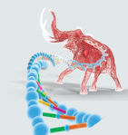
New life for woolly mammoth DNA researches can now re create the genes of mammoth and study the proteins they encoded.
Conceptual picture with caption relating to every chapter is given in this text book.
Chapter Outline:
Presents a complete overview of the chapter.
Learning Objectives:
Goals to transform the classroom processes into learner centric with a list of bench marks.
DO YOU KNOW?
Amazing facts, Rhetorical questions to lead students to biological inquiry
ACTIVITY
Directions are provided to students to conduct activities in order to explore, enrich the concepts
INFOGRAPHICS
Visual representation of the lesson to enrich learning
Superfluous information about a personality or day to day life experience relating to the content
To motivate the students to further explore the content digitally and take them to virtual world.
To enhance digital Science skills among students
Concept Map
Conceptual diagram that depicts relationships between concepts to enable students to learn the content schematically
Glossary
Explanation of scientific terms
Evaluation
Assess students to pause, think and check their understanding
References
List of related books for further details of the topic
Web links
List of digital resources
Prospects of Zoology
National and International Biology Olympiad Exam
Who can participate? Secondary and Higher Secondary students
Five stages of Exam
stage 1 National Standard Examination in Biology
stage 2 Indian National Biology Olympiad
stage 3 Orientation cum Selection Camp in Biology
stage 4 Pre-departure Training Camp for International Biology Olympiad (I B O ) (for 4 members)
stage 5 Participation in International Biology Olympiad .
Weblink: https://www.entrancei.com
Scholarship for Biology Students
Ministry of Science and Technology offers biology scholarship to 100 students from schools around the country. Among them 52 (two from each state board) are selected for the award which carries a cash prize of Rs 20,000, a certificate and a medal http://www.dbtindia.nic.in
It also offers INSPIRE programme for science students. www.online.inspire.gov.in
Tamilnadu State Council of Science and Technology offers Young Scientists Fellowship Scheme to encourage scientist below 40 years, who are working in educational institutions. They are given Rs.10000 for 2 to 6 months. (http://www.tanscst.nic.in/)
Tamilnadu State Council of Science and Technology offers Student project scheme for Science and Technology useful to our society. Student scientists are awarded with the cash prize of Rs.5000 - 10000 for their best project or model. (http://www.tanscst.nic.in/)
Institutes affiliated to Doctor. M.G.R. Medical University, Chennai.
Occupation Therapy Colleges:
• College of Occupational Therapy, Christian Medical College, Vellore
Physiotherapy Colleges:
• Government College of Physiotherapy, Trichy
• Government Institute of Rehabilitation Medicine, Chennai
• College of Physiotherapy, Christian Medical College, Vellore
• Tamilnadu Paramedical Institutions College of Physiotherapy, Chennai
Siddha Colleges:
• Government Siddha Medical College, Chennai
• Government Siddha Medical College, Tirunelveli
• National Institute of Siddha, Chennai
Prospects of Zoology
Pharmacy Colleges:
• Coimbatore Medical College, Coimbatore
• College of Pharmacy, Madras MedicalCollege, Chennai
• College of Pharmacy, Madurai Medical College, Madurai
• Thanjavur Medical College, Thanjavur
• College of Allied Medical Sciences, Madurai
• Department of Pharmacy, Annamalai University, Cuddalore
Nursing Colleges:
• College of Nursing, Madras Medical College, Chennai
• College of Nursing, Madurai Medical College, Madurai
Medical Colleges:
• Cancer Institute, College of Oncological Sciences, Chennai
• Chengalpattu Medical College, Chengalpattu
• Christian Medical College, Vellore
• Coimbatore Medical College, Coimbatore
• Government Dharamapuri Medical College, Dharampuri
• Kanyakumari Government Medical College, Kanyakumari
• Kilpauk Medical College, Chennai
• Madras Medical College and Research Institute, Chennai
• Madurai Medical College, Madurai
• Stanley Medical College, Chennai
• Thanjavur Medical College, Thanjavur
• Theni Government Medical College, Theni
• Thoothukudi Government Medical College, Thoothukudi
• Tirunelveli Medical College, Tirunelveli
• Vellore Government Medical College, Vellore
Homeopathy Colleges:
• Govt. Homeopathic Medical College and Hospital, Tirumangalam
• Tamilnadu Homeopathy Medical College, Salem
Dental Colleges:
• Tamilnadu Government Dental College, Chennai
Ayush Institutions In Tamilnadu
• Ayurveda College, 242-B, Trichy Road, Sulur, 215 Pathanjalipuri (Post), Coimbatore 641402
• Venkataramana Ayurveda College, 216 596, A1 and A2,31st St. TNHB Colony, Periyar Nagar, Korattur, Chennai
• Sri Sai Ram Ayurvedic Medical College and 217 Research Centre, Saileo Nagar, Poonthandalam Village, Sriperumbudur, Chennai 600044
• Dharma Ayurvedic Medical College and Hospital, 48 218 Grand West Trunk Road, Sriperumbudur, Kanchipuram, 602 105
• Sri Sankara College of Ayurveda, Sannasipatti, 219 Poolankulathupatti (Post) Trichy
List of Tamilnadu Veterinary colleges affiliated to Tamilnadu Veterinary University
•Tamilnadu Veterinary University, Chennai
• Veterinary College and Research Institute, Namakkal
• Fishery College and Research Institute, Thoothukudi
Prospects of Zoology
List of Tamilnadu Agricultural colleges affiliated to Tamilnadu Agricultural University in Tamilnadu
• Tamilnadu Agricultural University, Coimbatore
• Agricultural College and Research Institute, Kanniyakumari
• Agricultural Engineering College and Research Institute, Coimbatore
• Avvaiyar Government College for Women, Kodaikanal
• Horticulture College and Research Institute, Periyakulam
Institutes conducting Researches in Zoology
Indian Institute of Science (IISC) Bangalore
• Biochemistry
• Central Animal Facility
• Centre for Ecological Sciences
• Centre for Infectious Disease Research
• Centre for Neuroscience
• Microbiology and Cell Biology
• Molecular Biophysics Unit
Salim Ali Centre for Ornithology and Natural History (SACON) Coimbatore
• National Ornithological Databank Cell
• GIS Laboratory
• Ecotoxicology Laboratory
• Conservation Genetics Laboratory
Institute of Basic Medical Science (IBMS) Tharamani, Chennai
• Blood transfusion
• Chromatography
• Mass spectroscopy
• Clinical Data interpretation
• Diagnosis of blood courses
Centre for Marine Fisheries and Research Institute (C M F R I)
• Marine capture fisheries
• Mariculture
• Biodiversity
• Marine Biotechnology
• Fishery environment
National Environmental Engineering Research Institute (NEERI)
• Air Pollution control
• Climate sustainability and skill development
• Cleaner technology and modeling
• Environmental Biotechnology and Genomic division
IFS (Indian Forest Service) Examination
• Conducting authority UPSC
• Educational Qualification Bachelor of Science. in any one degree like Physics, Chemistry, Botany, Zoology, Agriculture, Mathematics, Geology, or Bachelor of Engineering or Bachelor of Veterinary Science
• Age Minimum 21, Maximum 32 Years
• Weblink https://upsconline.nic.in
HIGHER SECONDARY SECOND YEAR
ZOOLOGY
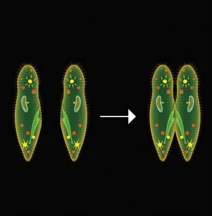
Paramecia are capable of both sexual and asexual reproduction.
Chapter Outline:
1.1. Modes of reproduction
1.2. Asexual reproduction
1.3. Sexual reproduction
Learning Objectives
➢ Learns the modes of asexual reproduction in organisms.
➢ Understands thesignificance of asexual reproduction.
➢ Comprehends the different modes of sexual reproduction.
➢ Realizes the significance and advantage of sexual reproduction andits role in evolution.
Living organisms show a life cycle involving birth, growth, development, maturation, reproduction and death. Reproduction is the fundamental feature of all living organisms. It is a biological process by which organisms produce their young ones. The young ones grow and mature to repeat the process. Thus reproduction results in continuation of species and introduces variations in organisms, which are essential for adaptation and evolution of their own kind.
All modes of reproduction have some basic features such as synthesis of RNA and proteins, replication of DNA, cell division and growth, formation of reproductive units and their fertilization to form new individuals. Organisms exhibit two major modes of reproduction namely asexual and sexual reproduction. Reproduction by a single parent without the involvement of gamete formation is asexual reproduction and the offspring produced are genetically identical. Asexual reproduction is usually by amitotic or mitotic division of the somatic (body) cells, hence is also known as somatogenic or blastogenic reproduction. When two parents participate in the reproductive process involving two types of gametes (ova and sperm), it is called sexual reproduction.
Asexual reproduction is wide spread among different organisms. It is common in members of Protista, Bacteria, Archaea and in multicellular organisms with relatively simpler organisation. The offsprings
show “uniparental inheritance” without any genetic variation. The different modes of asexual reproduction seen in animals are fission, budding, fragmentation and regeneration.
Fission is the division of the parent body into two or more identical daughter individuals. Five types of fission are seen in animals. They are binary fission, multiple fission, plasmotomy, strobilation and sporulation
In binary fission, the parent organism divides into two halves and each half forms a daughter individual. The nucleus divides first amitotically or mitotically (karyokinesis), followed by the division of the cytoplasm (cytokinesis). The resultant offsprings are genetically identical to the parent. Depending on the plane of fission, binary fission is of the following types
1) Simple irregular binary fission
2) Transverse binary fission
3) Longitudinal binary fission
4) Oblique binary fission
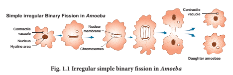
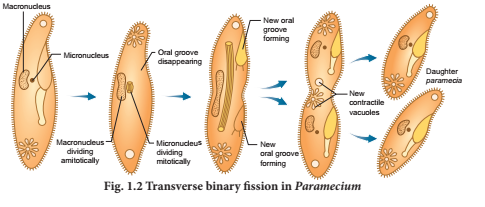
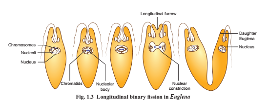
Simple irregular binary fission is seen in Amoeba like irregular shaped organisms Figure 1. 1, where the plane of division is hard to observe. The contractile vacuoles cease to function and disappear. The nucleoli disintegrate and the nucleus divides mitotically. The cell then constricts in the middle, so the cytoplasm divides and forms two daughter cells.
In transverse binary fission, the plane of the division runs along the transverse axis of the individual. example. Paramecium and Planaria. In Paramecium Figure 1. 2 the macronucleus divides by amitosis and the micronucleus divides by mitosis.
In longitudinal binary fission, the nucleus and the cytoplasm divides in the longitudinal axis of the organism Figure 1 3. In flagellates, the flagellum is retained usually by one daughter cell. The basal granule is divided into two and the new basal granule forms a flagellum in the other daughter individual. example. Vorticella and Euglena.
In oblique binary fission the plane of division is oblique. It is seen in dinoflagellates. example. Ceratium
In multiple fission the parent body divides into many similar daughter cells simultaneously. First, the nucleus divides repeatedly, later the cytoplasm divides into as many parts as that of nuclei. Each cytoplasmic part encircles one daughter nucleus. This results in the formation of many smaller individuals from a single parent organism. If multiple fission produces four or many daughter individuals by equal cell division and the young ones do not separate until the process is complete, then this division is called repeated fission example. vorticella
During unfavorable conditions (increase or decrease in temperature, scarcity of food) Amoeba withdraws its pseudopodia and secretes a three-layered, protective, chitinous cyst wall around it and becomes inactive Figure 1 4. This phenomenon is called encystment. When conditions become favourable, the encysted Amoeba divides by multiple fission and produces many minute amoebae called pseudopodiospore or amoebulae. The cyst wall absorbs water and breaks off liberating the young pseudopodiospores, each with a finepseudopodia They feed and grow rapidly to lead an independent life.
In some metazoan animals, a special type of transverse fission called strobilation occurs Figure 1 5 In the process of strobilation, several transverse fissions occur simultaneously giving rise to a number of individuals which often do not separate immediately from each other example. Aurelia. Plasmotomy is the division of multinucleated parent into many multinucleate daughter individuals with the division of nuclei. Nuclear division occurs later to maintain normal number of nuclei. Plasmotomy occurs in Opalina and Pelomyxa Giant Amoeba.
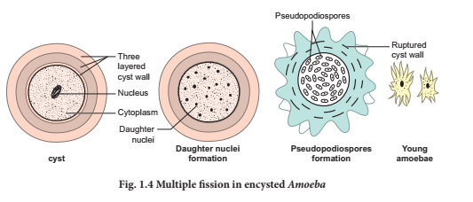
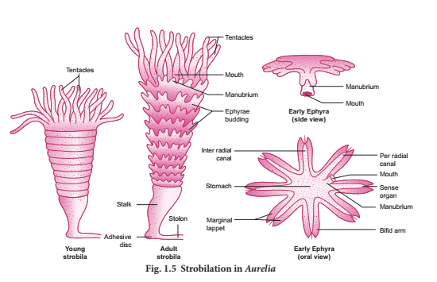
During unfavourable conditions Amoeba multiplies by sporulation without encystment. Nucleus breaks into several small fragments or chromatin blocks. Each fragment develops a nuclear membrane, becomes surrounded by cytoplasm and develops a spore case around it Figure 1 6. When conditions become favourable, the parent body disintegrates and the spores are liberated, each hatching into a young amoeba.
In budding, the parent body produces one or more buds and each bud grows into a young one. The buds separate from the parent to lead a normal life. In sponges, the buds constrict and detach from the parent body and the bud develops into a new sponge Figure 1 7.
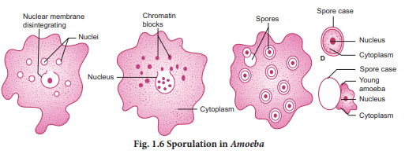
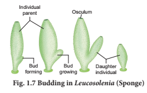
When buds are formed on the outer surface of the parent body, it is known as exogenous budding example. Hydra. In Hydra when food is plenty, the ectoderm cells increase and form a small elevation on the body surface Figure 1 8. Ectoderm and endoderm are pushed out to form the bud. The bud contains an interior lumen in continuation with parent’s gastro-vascular cavity. The bud enlarges, develops a mouth and a circle of tentacles at its free end. When fully grown, the bud constricts at the base and finally separates from the parent body and leads an independent life.
In Noctiluca, hundreds of buds are formed inside the cytoplasm and many remain within the body of the parent. This is called endogenous budding. In freshwater sponges and in some marine sponges a regular and peculiar mode of asexual reproduction occurs by internal buds called gemmules is seen Figure 1 9. A completely grown gemmue is a hard ball, consisting of an internal mass of food-laden archaeocytes During unfavourable conditions, the sponge disintegrates but the gemmule can withstand adverse conditions. When conditions become favourable, the gemmules begin to hatch.
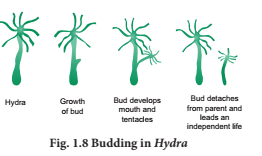
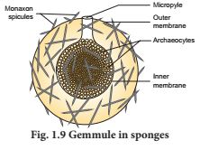
In fragmentation, the parent body breaks into fragments (pieces) and each of the fragment has the potential to develop into a new individual. Fragmentation or pedal laceration occurs in many genera of sea anemones. Lobes are constricted off from the pedal disc and each of the lobe grows mesenteries and tentacles to form a new sea anemone.
In the tapeworm, Taenia solium the gravid (ripe) proglottids are the oldest at the posterior end of the strobila Figure 1 10. The gravid proglottids are regularly cut off either singly or in groups from the posterior end by a process called apolysis. This is very significant since it helps in transferring the developed embryos from the primary host (man) to find a secondary host (pig).
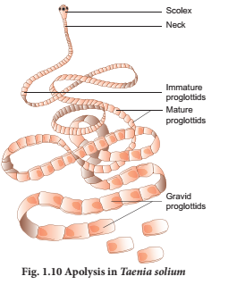
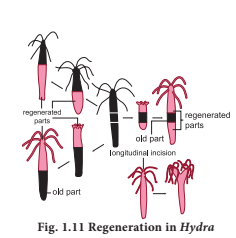
Regeneration is regrowth in the injured region. Regeneration was first studied in Hydra by Abraham Trembley in 1740. Regeneration is of two types, morphallaxis and epimorphosis. In morphallaxis the whole body grows from a small fragment e.g. Hydra and Planaria. When Hydra is accidentally cut into several pieces, each piece can regenerate the lost parts and develop into a whole new individual Figure 1 11. The parts usually retain their original polarity, with oral ends, by developing tentacles and aboral ends, by producing basal discs. Epimorphosis Figure 1 12 is the replacement of lost body parts. It is of two types, namely reparative and restorative regeneration. In reparative regeneration, only certain damaged tissue can be regenerated, example human beings (liver tissue) whereas in restorative regeneration severed body parts can develop. example. star fish, tail of wall lizard.
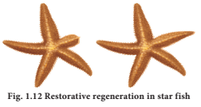
Sexual reproduction involves the fusion of male and female gametes to form a diploid zygote, which develops into a new organism. It leads to genetic variation. The types of sexual reproduction seen in animals are syngamy (fertilization) and conjugation. In syngamy, the fusion of two haploid gametes takes place to produce a diploid zygote. Depending upon the place where the fertilization takes place, it is of two types. In external fertilization, the fusion of male and female gametes takes place outside the body of female organisms in the water medium. example. sponges, fishes and amphibians. In internal fertilization, the fusion of male and female gametes takes place within the body of femaleorganisms example reptiles, aves and mammals.
DO YOU KNOW?
Power of Regeneration
Sponge when macerated and squeezed through fine silk cloth, the cluster of cells pass through, and these can regenerate new sponges. This technique is used for cultivation of sponges.
Different kinds of syngamy (fertilization) are prevalent among living organisms.
a) Autogamy The male and female gametes are produced by the same cell or same organism and both the gametes fuse together to form a zygote. example. Actinosphaerium and Paramecium.
b) Exogamy The male and female gametes are produced by different parents and they fuse to form a zygote So it is biparental example. Human dioecious or unisexual animal.
c) Hologamy Lower organisms, sometimes the entire mature organisms do not form gametes but they themselves behave as gametes and the fusion of such mature individuals is known as hologamy example. Trichonympha.
d) Paedogamy It is the sexual union of young individuals produced immediately after the division of the adult parent cell by mitosis. example. Actinophrys.
e) Merogamy The fusion of small sized and morphologically different gametes (merogametes) takes place example. Protozoa.
f) Isogamy The fusion of morphological and physiological identical gametes (isogametes) is called isogamy. example. Monocystis.
g) Anisogamy The fusion of dissimilar gametes is called anisogamy Gr. An without; iso equal; gam marriage). Anisogamy occurs in higher animals but it is customary to use the term fertilization instead of anisogamy or syngamy. example. higher invertebrates and all vertebrates.
Conjugation is the temporary union of the two individuals of the same species. During their union both individuals, called the conjugants exchange certain amount of nuclear material (DNA) and then get separated. Conjugation is common among ciliates, example. Paramecium, Vorticella and bacteria (Prokaryotes).
Phases of life cycle: Organisms have three phases Juvenile phase, reproductive phase and senescent phase. Juvenile phase or vegetative phase is the period of growth between the birth of the individual upto reproductive maturity. During reproductive phase or maturity phase the organisms reproduce and their offsprings reach maturity period. On the basis of time, breeding animals are of two types: seasonal breeders and continuous breeders. Seasonal breeders reproduce at particular period of the year such as frogs, lizards, most birds, deers etc., Continuous breeders continue to breed throughout their sexual maturity example. honey bees, poultry, rabbit etc., Senescent phase begins at the end of reproductive phase when degeneration sets in the structure and functioning of the body
PARTHENOGENESIS (Gr. Parthenos virgin, Genesisproduce)
Development of an egg into a complete individual without fertilization is known as parthenogenesis. It was first discovered by Charles Bonnet in 1745. Parthenogenesis is of two main types namely, Natural Parthenogenesis and Artificial Parthenogenesis. In certain animals, parthenogenesis occurs regularly, constantly and naturally in their life cycle and is known as natural parthenogenesis.
DO YOU KNOW?
Natural parthenogenesis is of different types:
a) Arrhenotoky: In this type only, males are produced by parthenogenesis. example: honey bees
b) Thelytoky: In this type only, females are produced by parthenogenesis. example: Solenobia
c) Amphitoky: In this type parthenogenetic egg may develop into individuals of any sex. example: Aphis gossypii
Natural parthenogenesis may be of two types, viz., complete and incomplete. Complete parthenogenesis is the only form of reproduction in certain animals and there is no biparental sexual reproduction. There are no male organisms and so, such individuals are represented by females only. Incomplete parthenogenesis is found in some animals in which both sexual reproduction and parthenogenesis occurs. example in honeybees; fertilized eggs (zygotes) develop into queen and workers, whereas unfertilized eggs develop into drones (male). In paedogenetic parthenogenesis (paedogenesis) the larvae produce a new generation of larvae by parthenogenesis. It occurs in the sporocysts and Redia larvae of liver fluke. It is also seen in the larvae of some insects. example. Gall fly. In artificial parthenogenesis, the unfertilized egg (ovum) is induced to develop into a complete individual by physical or chemical stimuli. example., Annelid and seaurchin eggs.
Summary
Reproduction is a process by which the living beings propagate or duplicate their own kind. Reproduction can be broadly classified into asexual reproduction and sexual reproduction. In asexual reproduction fusion of gametes are not involved, but in sexual reproduction the formation and fusion of gametes occur. Different modes of asexual reproduction are fission, budding, fragmentation and regeneration. Fission is further divided into binary fission, multiple fission, sporulation and strobilation. According to the plane of fission different kinds of binary fission have been identified in different organisms. They are simple irregular binary fission, transverse binary fission, longitudinal binary fission and oblique binary fission. Multiple fission is the division of the parent into many small daughter cells simultaneously. Budding is another mode of asexual reproduction. The parent body produces one or more buds; each bud grows into a young one and may separate from the parent to lead a normal life. When many buds are formed on the outer surface of the parent, it is known as exogenous budding. Hundreds of buds are formed inside the cytoplasm and remain within the body of the parent, this process is called endogenous budding. Fragmentation is another mode of asexual reproduction. In fragmentation the body of the parent breaks into fragments (pieces). Each fragment has the potential to develop into a new individual. Regeneration is the development of the whole body of an organism from a small fragment. It is of two types namely restorative regeneration and reparative regeneration.
Various modes of sexual reproduction is seen in animals. In syngamy the fusion of two haploid gametes takes place to produce a zygote. The following kinds of syngamy is prevalent among the living organism. They are autogamy, exogamy, hologamy, paedogamy, merogamy, isogamy, anisogamy and conjugation Parthenogenesis is the special type of sexual reproduction seen in animals. It is of two main types namely natural parthenogenesis and artificial parthenogenesis.
Evaluation
1. In which type of parthenogenesis are only males produced?
a) Arrhenotoky
b) Thelytoky
c) Amphitoky
d) Both a and b
Answer: a) Arrhenotoky
2. The mode of sexual reproduction in bacteria is by
a) Formation of gametes
b) Endospore formation
c) Conjugation
d) Zoospore formation
Answer: c) Conjugation
3. In which mode of reproduction variations are seen
a) Asexual
b) Parthenogenesis
c) Sexual
d) Both a and b
Answer: c) Sexual
4. Assertion and reasoning questions:
In each of the following questions there are two statements. One is assertion (A) and other is reasoning (R). Mark the correct answer as A.
a). If both A and R are true and R is correctexplanation for A
b) If both A and R are true but R is not the correct explanation for A
c). If A is true but R is false
d). If both A and R are false.
1. Assertion: In bee society, all the members are diploid except drones.
Reason: Drones are produced by parthenogenesis.
a
b
c
d
Answer: a) If both A and R are true and R is correctexplanation for A
2. Assertion: Offsprings produced by asexual reproduction are genetically identical to the parent.
Reason: Asexual reproduction involves only mitosis and no meiosis
a
b
c
d
Answer: a). If both A and R are true and R is correctexplanation for A
5. Name an organism where cell division is itself a mode of reproduction.
6. Name the phenomenon where the female gamete directly develops into a new organism with an avian example.
7. What is parthenogenesis? Give two examples from animals
8. Which type of reproduction is effective -Asexual or sexual and why?
9. The unicellular organisms which reproduce by binary fission are considered immortal. Justify
10. Why is the offspring formed by asexual reproduction referred as a clone?
11. Give reasons for the following:
(a) Some organisms like honey bees are called parthenogenetic animals
(b) A male honey bee has 16 chromosomes where as its female has 32 chromosomes.
12. Differentiate between the following:
(a) External and Internal fertilization
(b) Regeneration in lizard and Planaria
13. How is juvenile phase different from reproductive phase?
14. Explain the different kinds of syngamy in living organisms.
Concept Map
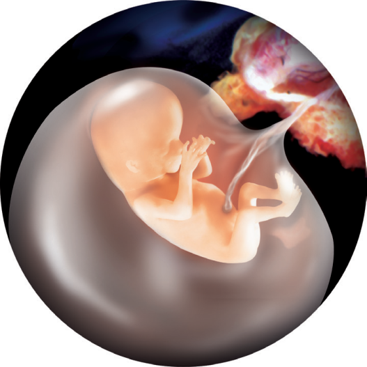
In every child who is born, the potentiality of the human race is born again said by James Agee
Chapter Outline
2.1 Human reproductive system
2.2 Gametogenesis
2.3 Menstrual cycle
2.4 Menstrual disorders and menstrual hygiene
2.5 Fertilization and implantation
2.6 Maintenance of pregnancy and embryonic development
2.7 Parturition and lactation
Learning Objectives
➢ Creates an awareness towards a healthy reproductive life in adolescents.
➢ Understands the structure of the male and female reproductive systems.
➢ Explains the functions of the structures associated with the male and female reproductive system.
➢ Compares the process of spermatogenesis and oogenesis.
➢ Discusses the changes in a female body during and after Fertilization.
➢ Appraises the role of hormones in the process of reproduction.
➢ Understands the events in pregnancy and foetal development.
Every organ system in the human body works continuously to maintain homeostasis for the survival of the individual. The human reproductive system is essential for the survival of the species. An individual may live a long healthy life without producing an offspring, but reproduction is inevitable for the existence of a species.
The reproductive system has four main functions namely,
to produce the gametes namely sperms and ova
to transport and sustain these gametes
to nurture the developing offspring
to produce hormones
The major reproductive events in human beings are as follows:
Gametogenesis: Formation of gametes by spermatogenesis and oogenesis.
Insemination: Transfer of sperms by the male into the female genital tract.
Fertilization: Fusion of male and female gametes to form zygote, called Fertilization.
Cleavage: Rapid mitotic divisions of the zygote which convert the single celled zygote into a multicellular structure called blastocyst.
Implantation: Attachment of blastocyst to the uterine wall.
Placentation: Formation of placenta which is the intimate connection between foetus and uterine wall of the mother for exchange of nutrients.
Gastrulation: Process by which blastocyst is changed into a gastrula with three primary germ layers
Organogenesis: Formation of specific tissues, organs and organ systems from three germ layers.
Parturition: Expulsion of the foetus from the mother’s womb.
These functions are carried out by the primary and accessory reproductive organs. The primary reproductive organs namely the ovary and testis are responsible for producing the ova and sperms respectively. Hormones secreted by the pituitary gland and the gonads help in the development of the secondary sexual characteristics, maturation of the reproductive system and regulation of normal functioning of the reproductive system. The accessory organs help in transport and to sustain the gametes and to nurture the developing offspring.
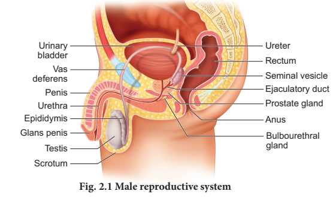
The male reproductive system comprises of a pair of testes, accessory ducts, glands and external genitalia Figure 2 1.
Testes are the primary male sex organs. They are a pair of ovoid bodies lying in the scrotum Figure.2.2 a. The scrotum is a sac of skin that hangs outside the abdominal cavity. Since viable sperms cannot be produced at normal body temperature, the scrotum is placed outside the abdominal cavity to provide a temperature 2 3 degree centigrade lower than the normal internal body temperature. Thus, the scrotum acts as a thermoregulator for spermatogenesis.
Each testis is covered by an outermost fibrous tunica albuginea and is divided by septa into about 200 to 250 lobules each containing 2 to 4 highly coiled testicular tubules or seminiferous tubules. These highly convoluted tubules which form 80 percent of the testicular substance are the sites for sperm production.
The stratified epithelium of the seminiferous tubule is made of two types of cells namely sertoli cells or nurse cells and spermatogonic cells or male germ cells. Sertoli cells are elongated and pyramidal and provide nourishment to the sperms till maturation. They also secrete inhibin, a hormone which is involved in the negative feedback control of sperm production. Spermatogonic cells divide meiotically and differentiate to produce spermatozoa.
Interstitial cells or Leydig cells are embedded in the soft connective tissue surrounding the seminiferous tubules These cells are endocrine in nature and are characteristic features of the testes of mammals. It Secretes androgens namely the testosterone hormone which initiates the process of spermatogenesis Other immunologically competent cells are also present.
BOX ITEM
Cryptorchism
The failure of one or both testes to descend down into the scrotal sacs is known as cryptorchism (crypto means hidden and orchis means testicle). It occurs in 1 to 3 percent of new born males. A surgical correction at a young age can rectify the defect, else these individuals may become sterile and are unable to produce viable sperms
The accessory ducts associated with the male reproductive system include rete testis, vasa efferentia, epididymis and vas deferens Figure. 2.2 b The seminiferous tubules of each lobule converge to form a tubulus rectus that conveys the sperms into the rete testis. The rete testis is a tubular network on the posterior side of the testis. The sperms leave the rete testis and enterthe epididymis through the vasaefferentia. The epididymis is a single highly coiled tube that temporarily stores the spermatozoa and and they undergo physiological maturation and acquire increased motility and fertilizing capacity. The epididymis leads to the vas deferens and joins the duct of the seminal vesicle to form the ejaculatory duct which passes through the prostate and opens into the urethra. The urethra is the terminal portion of the male reproductive system and is used to convey both urine and semen at different times. It originates from the urinary bladder and extends through the penis by an external opening called urethral meatus.
The accessory glands of the male reproductive system include the paired seminal vesicles and bulbourethral glands also called Cowper’s gland and a single prostate gland. The seminal vesicles secrete an alkaline fluid called seminal plasma containing fructose sugar, ascorbic acid, prostaglandins and a coagulating enzyme called vesiculase which enhances sperm motility. The bulbourethral glands are inferior to the prostate and their secretions also help in the lubrication of the penis. The prostate encircles the urethra and is just below the urinary bladder and secretes a slightly acidic fluid that contains citrate, several enzymes and prostate specific antigens. Semen or seminal fluid is a milky white fluid which contains sperms and the seminal plasma (secreted from the seminal vesicles, prostate gland and the bulbourethal glands). The seminal fluid acts as a transport medium, provides nutrients, contains chemicals that protect and activate the sperms and also facilitate their movement.
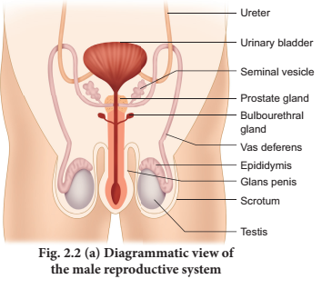
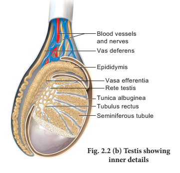
The penis is the male external genitalia functioning as a copulatory organ. It is made of a special tissue that helps in the erection of penis to facilitate insemination. The enlarged end of the penis called glans penis is covered by a loose fold of skin called foreskin or prepuce.
The female reproductive system is far more complex than the male because in addition to gamete formation, it has to nurture the developing foetus. The female reproductive system consists of a pair of ovaries along with a pair of oviducts, uterus, cervix, vagina and the external genitalia located in the pelvic region Figure 2 3 a. These parts along with the mammary glands are integrated structurally and functionally to support the process of ovulation, Fertilization, pregnancy, child birth and child care.
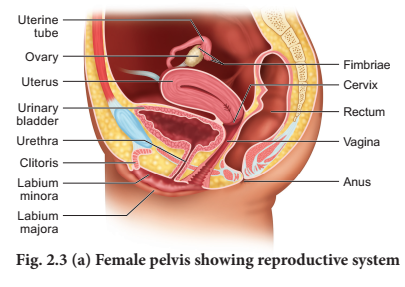
Ovaries are the primary female sex organs that produce the female gamete, ovum. The ovaries are located one on each side of the lower abdomen. The ovary is an elliptical structure about 2 to 4 cm long. Each ovary is covered by a thin cuboidal epithelium called the germinal epithelium which encloses the ovarian stroma. The stroma is differentiated as the outer cortex and inner medulla. Below the germinal epithelium is a dense connective tissue, the tunica albuginea.
The cortex appears dense and granular due to the presence of ovarian follicles in various stages of development. The medulla is a loose connective tissue with abundant blood vessels, lymphatic vessels and nerve fibres. The ovary remains attached to the pelvic wall and the uterus by an ovarian ligament called mesovarium.
DO YOU KNOW?
Female uterus contains one of the strongest muscles of the human body.
The fallopian tubes (uterine tubes or oviducts), uterus and vagina constitute the female accessory organs Figure 2 3 b. Each fallopian tube extends from the periphery of each ovary to the uterus. The proximal part of the fallopian tube bears a funnel shaped infundibulum. The edges of the infundibulum have many fingerlike projections called fimbriae which help in collection of the ovum after ovulation.
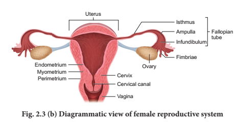
The infundibulum leads to a wider central portion called ampulla. The last part of the oviduct is the isthmus which is short and thick walled connecting the ampulla and infundibulum to the uterus.
The uterus or womb is a hollow, thick-walled, muscular, highly vascular and inverted pear-shaped structure lying in the pelvic cavity between the urinary bladder and rectum. The major portion of the uterus is the body and the rounded region superior to it, is the fundus. The uterus opens into the vagina through a narrow cervix. The cavity of the cervix called the cervical canal communicates with the vagina through the external orifice and with the uterus through the internal orifice. The cervical canal along with vagina forms the birth canal.
The wall of the uterus has three layers of tissues. The outermost thin membranous serous layer called the perimetrium, the middle thick muscular layer called myometrium and the inner glandular layer called endometrium. The endometrium undergoes cyclic changes during the menstrual cycle while myometrium exhibits strong contractions during parturition.
Vagina is a large fibromuscular tube that extends from the cervix to the exterior. It is the female organ of copulation. The female reproductive structures that lie external to the vagina are called as the external genitalia or vulva comprising of labia majora, labia minora, hymen and clitoris.
The Bartholin’s glands (also called greater vestibular glands) are located posterior to the left and right of the opening of the vagina. They secrete mucus to lubricate the vagina and are homologous to the bulbourethral glands of the male. The Skene’s glands are located on the anterior wall of the vagina and around the lower end of the urethra. They secrete a lubricating fluid and are homologous to the prostate gland of the males.
The external opening of the vagina is partially closed by a thin ring of tissue called the hymen. The hymen is often torn during the first coitus (physical union) However in some women it remains intact. It can be stretched or torn due to a sudden fall or jolt and also during strenuous physical activities such as cycling, horseback riding, etc., and therefore cannot be considered as an indicator of a woman’s virginity
The mammary glands are modified sweat glands present in both sexes. It is rudimentary in the males and functional in the females. A pair of mammary glands is located in the thoracic region. It contains glandular tissue and variable quantities of fat with a median nipple surrounded by a pigmented area called the areola. Several sebaceous glands called the areolar glands are found on the surface and they reduce cracking of the skin of the nipple. Internally each mammary gland consists of 2 to 25 lobes, separated by fat and connective tissues Figure 2 4. Each lobe is made up of lobules which contain acini or alveoli lined by epithelial cells. Cells of the alveoli secrete milk. The alveoli open into mammary tubules. The tubules of each lobe join to form a mammary duct. Several mammary ducts join to form a wider mammary ampulla which is connected to the lactiferous duct in the nipple. Under the nipple, each lactiferous duct expands to form the lactiferous sinus which serves as a reservoir of milk. Each lactiferous duct opens separately by a minute pore on the surface of the nipple.
Normal development of the breast begins at puberty and progresses with changes during each menstrual cycle. In non-pregnant women, the glandular structure is largely underdeveloped and the breast size is largely due to amount of fat deposits. The size of the breast does not have an influence on the efficiency of lactation.
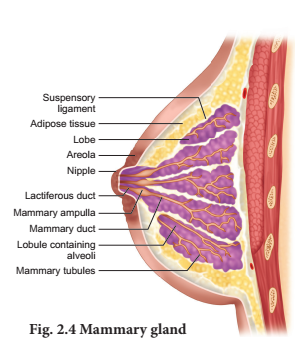
Gametogenesis is the process of formation of gametes that is., sperms and ovary from the primary sex organs in all sexually reproducing organisms. Meiosis plays the most significant role in the process of gametogenesis Figure 2.5
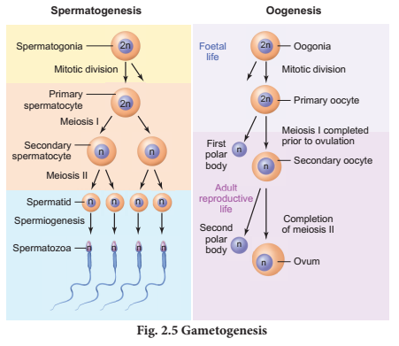
Spermatogenesis
Spermatogenesis is the sequence of events in the seminiferous tubules of the testes that produce the male gametes, the sperms. During development, the primordial germ cells migrate into the testes and become immature germ cells called sperm mother cells or spermatogonia in the inner surfaces of the seminiferous tubules Figure 2 6 a. The spermatogonia begin to undergo mitotic division at puberty and continue throughout life.
In the first stage of spermatogenesis, the spermatogonia migrate among sertoli cells towards the central lumen of the seminiferous tubule and become modified and enlarged to form primary spermatocytes which are diploid with 23 pairs etcetera, 46 chromosomes.
Some of the primary spermatocytes undergo first meiotic division to form two secondary spermatocytes which are haploid with 23 chromosomes each. The secondary spermatocytes undergo second meiotic division to produce four haploid spermatids. The spermatids are transformed into mature spermatozoa (sperms) by the process called spermiogenesis. Sperms are finally released into the cavity of seminiferous tubules by a process called spermiation. The whole process of spermatogenesis takes about 64 days. At any given time, different regions of the seminiferous tubules contain spermatocytes in different stages of development Figure 2.6 b The sperm production remains nearly constant at a rate of about 200 million sperms per day.
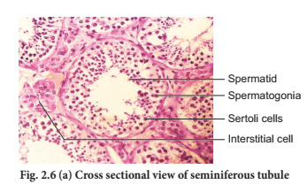
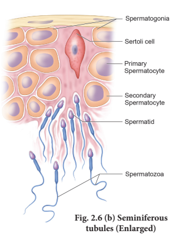
Spermatogenesis starts at the age of puberty and is initiated due to the increase in the release of Gonadotropin Releasing Hormone by the hypothalamus. GnRH acts on the anterior pituitary gland and stimulates the secretion of two gonadotropins namely Follicle Stimulating Hormone and Lutenizing Hormone FSH stimulates testicular growth and enhances the production of Androgen Binding Protein by the sertoli cells and helps in the process of spermiogenesis. LH acts on the Leydig cells and stimulates the synthesis of testosterone which in turn stimulates the process of spermatogenesis.
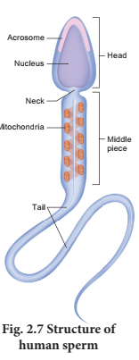
Structure of human spermatozoan
The human sperm is a microscopic, flagellated and motile gamete Figure 2.7 The whole body of the sperm is enveloped by plasma membrane and is composed of a head, neck middle piece and a tail. The head comprises of two parts namely acrosome and nucleus. Acrosome is a small cap like pointed structure present at the tip of the nucleus and is formed mainly from the Golgi body of the spermatid. It contains hyaluronidase, a proteolytic enzyme, popularly known as sperm lysin which helps to penetrate the ovum during Fertilization. The nucleus is flat and oval. The neck is very short and is present between the head and the middle piece. It contains the proximal centriole towards the nucleus which plays a role in the first division of the zygote and the distal centriole gives rise to the axial filament of the sperm. The middle piece possesses mitochondria spirally twisted around the axial filament called mitochondrial spiral or nebenkern. It produces energy in the form of ATP molecules for the movement of sperms. The tail is the longest part of the sperm and is slender and tapering. It is formed of a central axial filament or axoneme and an outer protoplasmic sheath. The lashing movements of the tail push the sperm forward. The human male ejaculates about 200 to 300 million sperms during coitus. It is estimated that around 60 percent of sperms must have normal shape of which at least 40 per cent must show vigorous motility for normal fertility.
Do you know?
The sperm is the smallest human cell and the ovum or egg is the largest human cell.
Oogenesis
Oogenesis is the process of development of the female gamete or ovum or egg in the ovaries. During foetal development, certain cells in the germinal epithelium of the foetal ovary divide by mitosis and produce millions of egg mother cells or oogonia. No more oogonia are formed or added after birth. The oogonial cells start dividing and enter into Prophase 1 of meiotic division I to form the primary oocytes which are temporarily arrested at this stage. The primary oocytes then get surrounded by a single layer of granulosa cells to form the primordial or primary follicles Figure 2.8 a. A large number of follicles degenerate during the period from birth to puberty, so at puberty only 60,000 to 80,000 follicles are left in each ovary
DO YOU KNOW
Out of the million eggs women possess during birth, only about 300 to 400 will ovulate before menopause.
On the other hand, males produce more than 500 billion sperms in their life time.
The primary follicle gets surrounded by many layers of granulosa cells and a new theca layer to form the secondary follicle. A fluid filled space, the antrum develops in the follicle and gets transformed into a tertiary follicle. The theca layer gets organized into an inner theca interna and an outer theca externa. At this time, the primary oocyte within the tertiary follicle grows in size and completes its first meiotic division and forms the secondary oocyte. It is an unequal division resulting in the formation of a large haploid secondary oocyte and a first polar body. The first polar body disintegrates. During Fertilization, the secondary oocyte undergoes second meiotic division and produces a large cell, the ovum and a second polar body. The second polar body also degenerates. The tertiary follicle eventually becomes a mature follicle or Graafian follicle. If Fertilization does not take place, second meiotic division is never completed and the egg disintegrates. At the end of gametogenesis in females, each primary oocyte gives rise to only one haploid ovum.
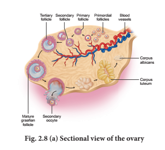
Structure of ovum
Human ovum is non cleidoic, alecithal and microscopic in nature. Figure. 2.8 b Its cytoplasm called ooplasm contains a large nucleus called the germinal vesicle. The ovum is surrounded by three coverings namely an inner thin transparent vitelline membrane, middle thick zona pellucida and outer thick coat of follicular cells called corona radiata. Between the vitelline membrane and zona pellucida is a narrow perivitelline space.
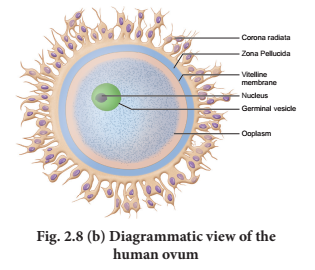
The menstrual or ovarian cycle occurs approximately once in every 28 or 29 days during the reproductive life of the female from menarche (puberty) to menopause except during pregnancy. The cycle of events starting from one menstrual period till the next one is called the menstrual cycle during which cyclic changes occurs in the endometrium every month. Cyclic menstruation is an indicator of normal reproductive phase Figure 2.9
Menstrual cycle comprises of the following phases
1. Menstrual phase
2. Follicular or proliferative phase
3. Ovulatory phase
4. Luteal or secretory phase
1. Menstrual phase
The cycle starts with the menstrual phase when menstrual flow occurs and lasts for 3 to 5 days. Menstrual flow is due to the breakdown of endometrial lining of the uterus, and its blood vessels due to decline in the level of progesterone and oestrogen. Menstruation occurs only if the released ovum is not fertilized. Absence of menstruation may be an indicator of pregnancy However it could also be due to stress, hormonal disorder and anaemia
2. Follicular or proliferative phase
The follicular phase extends from the fifth day of the cycle until the time of ovulation. During this phase, the primary follicle in the ovary grows to become a fully mature Graafian follicle and simultaneously, the endometrium regenerates through proliferation. These changes in the ovary and the uterus are induced by the secretion of gonadotropins like Follicle Stimulating Hormone and Lutenizing Hormone, which increase gradually during the follicular phase. It stimulates follicular development and secretion of oestrogen by the follicle cells.
3. Ovulatory phase
Both Follicle Stimulating Hormone and Lutenizing Hormone attain peak level in the middle of the cycle (about the 14th day) Maximum secretion of LH during the mid cycle called Lutenizing Hormone surge induces the rupture of the Graafian follicle and the release of the ovum (secondary oocyte) from the ovary wall into the peritoneal cavity. This process is called as ovulation.
4. Luteal or secretory phase
During luteal phase, the remaining part of the Graafian follicle is transformed into a transitory endocrine gland called corpus luteum. The corpus luteum secretes large amount of progesterone which is essential for the maintenance of the endometrium. If Fertilization takes place, it paves way for the implantation of the fertilized ovum. The uterine wall secretes nutritious fluid in the uterus for the foetus. So, this phase is also called as secretory phase. During pregnancy all events of menstrual cycle stop and there is no menstruation.
In the absence of Fertilization, the corpus luteum degenerates completely and leaves a scar tissue called corpus albicans. It also initiates the disintegration of the endometrium leading to menstruation, marking the next cycle.
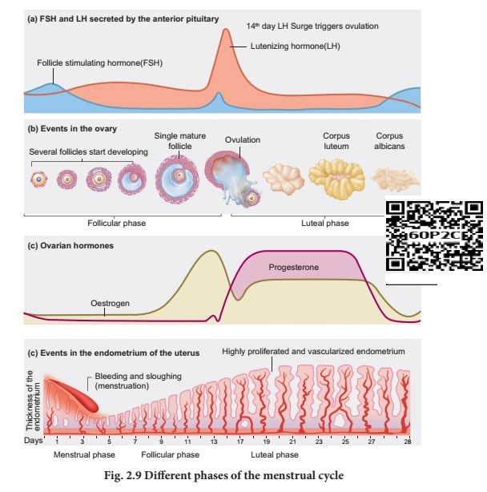
BOX ITEM
POLY CYSTIC OVARY SYNDROME
Poly cystic ovary syndrome is a complex endocrine system disorder that affects women in their reproductive years. Polycystic means ‘many cysts’ It refers to many partially formed follicles on the ovaries, which contain an egg each. But they do not grow to maturity or produce eggs that can be fertilized. Women with Poly cystic ovary syndrome may experience irregular menstrual cycles, increased androgen levels, excessive facial or body hair growth (hirsutism), acne, obesity, reduced fertility and increased risk of diabetes. Treatment for Poly cystic ovary syndrome includes a healthy lifestyle, weight loss and targeted hormone therapy.
Absence of menstruation is called amenorrhoea. If menarche does not appear till the age of 18, it is called primary amenorrhoea. Absence of menstruation for over three consecutive months is secondary amenorrhoea.
Polymenorrhoea is a term used to describe a menstrual cycle that is shorter than 21 days. It may be due to hyperactivity of the anterior pituitary gland causing frequent ovulation, psychological disturbances and malnutrition. Chronic pelvic inflammation by certain sexually transmitted diseases such as chlamydiasis or gonorrhoea can cause inflammation in the uterus causing polymenorrhoea.
Pain associated with menstruation is called dysmenorrhoea. It is the most commonly reported menstrual disorder. There are two typesof dysmenorrhoea viz primary and secondary dysmenorrhoea. Primary dysmenorrhoea is pain or cramps during menstrual period and is caused by secretions of prostaglandin in the uterus. Secondary dysmenorrhoea is caused by a disorder in the reproductive system like endometriosis or uterine fibroids
Heavy and prolonged menstrual period that disrupts a woman’s normal activities is referred to as menorrhagia. Menorrhagia may be due to hormonal imbalance, ovarian dysfunction, uterine fibroids and may also be due to cancer of the ovary, uterus or cervix.
Oligomenorrhoea is a condition with infrequent menstrual periods. It occurs in women of childbearing age. Some variation in menstruation is normal, but a woman who regularly goes more than 35 days without menstruating may be diagnosed with oligomenorrhoea.
Menstrual hygiene
Menstrual hygiene is vital for good health, well-being, dignity, empowerment and productivity of women. The impact of poor menstrual hygiene on girls is increased stress levels, fear and embarrassment during menstruation. This can keep girls inactive during such periods leading to absenteeism from school.
Clean and safe absorbable clothing materials, sanitary napkins, pads, tampons and menstrual cups have been identified as materials used to manage menstruation. Changing sanitary material 4 to 5 hours as per the requirement, provides comfort, cleanliness and protection from infections. It also helps in enhancing the quality of life of women during this period. Used sanitary napkins should be wrapped in paper and disposed. It should not be thrown in open areas or drain pipe of toilets. Flushing of sanitary napkins in the drain pipes causes choking of the drainage line leading to water pollution.
BOX ITEM
Disposal of Napkins
The ecofriendly way to dispose menstrual waste scientifically and hygienically is to destroy the sanitary napkins using incinerators. Measures are being taken to install incinerators and napkin vending machines in washrooms of schools, colleges and public facilities.
Menopause
Menopause is the phase in a women’s life when ovulation and menstruation stops The average age of menopause is 45 to 50 years. It indicates the permanent cessation of the primary functions of the ovaries.
Fertilization occurs when a haploid sperm fuses with a haploid ovum to form a fertilized egg or diploid zygote.
The sperms deposited in the female reproductive tract undergo capacitation, which is a biochemical event that enables the sperm to penetrate and fertilise the egg. Fertilization occurs only if the ovum and sperms are transported simultaneously to the ampullary isthmic junction of the fallopian tube.
Before a sperm can enter the egg, it must penetrate the multiple layers of granulosa (follicular) cells which are around the ovum forming the corona radiata Figure 2.10 The follicular cells are held together by an adhesive cementing substance called hyaluronic acid. The acrosomal membrane disintegrates releasing the proteolytic enzyme, hyaluronidase during sperm entry through the corona radiata and zona pellucida. This is called acrosomal reaction. Once Fertilization is accomplished, cortical granules from the cytoplasm of the ovum form a barrier called the Fertilization membrane around the ovum preventing further penetration of other sperms Thus polyspermy is prevented.
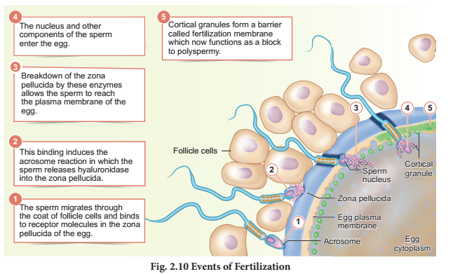
The first cleavage produces two identical cells called blastomeres. These produce 4 cells, then 8 and so on. After 72 hours of Fertilization, a loose collection of cells forms a berry shaped cluster of 16 or more cells called the morula Figure 2.11.
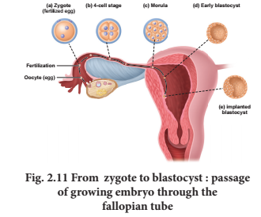
Under the influence of progesterone, smooth muscles of the fallopian tube relax and the dividing embryo takes 4 to 5 days to move through the fallopian tube into the uterine cavity and finally gets implanted in the uterine wall. At this point the embryo consists of a fluid filled hollow ball of about 100 cells, called the blastocyst. The blastocyst is composed of a single layer of large flattened cells called trophoblast and a small cluster of 20 to 30 rounded cells called the inner cell mass. The inner cell mass of the blastocyst develops into the embryo and becomes embedded in the endometrium of the uterus This process is called implantation and it results in pregnancy.
If the fertilized ovum is implanted outside the uterus it results in ectopic pregnancy. About 95 percent of ectopic pregnancies occur in the fallopian tube. The growth of the embryo may cause internal bleeding, infection and in some cases even death due to rupture of the fallopian tube.
BOX ITEM
Twins are two offsprings produced in the same pregnancy.
➢ Monozygotic (Identical) twins are produced when a single fertilized egg splits into two during the first cleavage. They are of the same sex, look alike and share the same genes.
➢ Dizygotic (Fraternal) twins are produced when two separate eggs are fertilized by two separate sperms. The twins may be of the same sex or different sex and are non-identical.
➢ Siamese (United) twins are the conjoined twins who are joined during birth.
The inner cell mass in the blastula is differentiated into epiblast and hypoblast immediately after implantation. The hypoblast is the embryonic endoderm and the epiblast is the ectoderm. The cells remaining in between the epiblast and the endoderm form the mesoderm Thus the transformation of the blastocyst into a gastrula with the primary germ layers by the movement of the blastomeres is called gastrulation. Each germ layer gives rise to specific tissues, organs and organ systems during organogenesis.
The extra embryonic membranes namely the amnion, yolk sac, allantois and chorion protect the embryo from dessication, mechanical shock and help in the absorption of nutrients and exchange of gases Figure 2.12 The amnion is a double layered translucent membrane filled with the amniotic fluid. It provides a buoyant environment to protect the developing embryo from injury, regulates the temperature of the foetus and provides a medium in which the foetus can move. The yolk sac forms a part of the gut and is the source of the earliest blood cells and blood vessels.
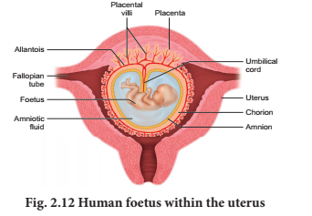
The allantois forms a small out pocketing of embryonic tissue at the caudal end of the yolk sac. It is the structural base for the umbilical cord that links the embryo to the placenta and ultimately it becomes part of the urinary bladder. The chorion is the outermost membrane which encloses the embryo and all other membranes and also helps in the formation of the placenta.
The trophoblast cells in the blastocyst send out several fingerlike projections called chorionic villi carrying foetal blood and are surrounded by sinuses that contain maternal blood. The chorionic villi and the uterine tissues form the disc-shaped placenta. Placenta is a temporary endocrine organ formed during pregnancy and it connects the foetus to the uterine wall through the umbilical cord. It is the organ by which the nutritive, respiratory and excretory functions are fulfilled. The embryo’s heart develops during the fourth week of pregnancy and circulates blood through the umbilical cord and placenta as well as through its own tissues.
The primary germ layers serve as the primitive tissues from which all body organs develop. The ectoderm gives rise to the central nervous system (brain and spinal cord), peripheral nervous system, epidermis and its derivatives and mammary glands. The connective tissue, cartilage and bone, muscles, organs of urinogenital system (kidney, ureter and gonads) arise from the mesoderm. The endodermal derivatives are epithelium of gastrointestinal and respiratory tract, liver, pancreas, thyroid and parathyroids.
Human pregnancy lasts for about 280 days or 40 weeks and is called the gestation period. It can be divided for convenience into three trimesters of three months each. The first trimester is the main period of organogenesis, the body organs namely the heart, limbs, lungs, liver and external genital organs are well developed. By the end of the second trimester, the face is well formed with features, eyelids and eyelashes, eyes blink, body is covered with fine hair, muscle tissue develops and bones become harder. The foetus is fully developed and is ready for delivery by the end of nine months (third trimester)
During pregnancy, the placenta acts as a temporary endocrine gland and produces large quantities of human Chorionic Gonadotropin, human Chorionic Somatomammotropin or human Placental Lactogen, oestrogens and progesterone which are essential for a normal pregnancy. A hormone called relaxin is also secreted during the later phase of pregnancy which helps in relaxation of the pelvic ligaments at the time of parturition. It should be noted that Human Chorionic Gonadotropin, human Chorionic Somatomammotropin and relaxin are produced only during pregnancy. In addition, during pregnancy the level of other hormones like oestrogen and progesterone, cortisol, prolactin, thyroxine, etcetera., is increased several folds in the maternal blood. These hormones are essential for supporting foetal growth.
DO YOU KNOW?
A female uterus is normally about 3 inches long and 2 inches wide but can expand 20 times during pregnancy.
Parturition is the completion of pregnancy and giving birth to the baby. The series of events that expels the infant from the uterus is collectively called “labour”. Throughout pregnancy the uterus undergoes periodic episodes of weak and strong contractions. These contractions called Braxter-Hick’s contractions lead to false labour. As the pregnancy progresses, increase in the oestrogen concentration promotes uterine contractions. These uterine contractions facilitate moulding of the foetus and downward movement of the foetus. The descent of the foetus causes dilation of cervix of the uterus and vaginal canal resulting in a neurohumoral reflex called Foetal ejection reflex or Ferguson reflex. This initiates the secretion of oxytocin from the neurohypophysis which in turn brings about the powerful contraction of the uterine muscles and leads to the expulsion of the baby through the birth canal. This sequence of events is called as parturition or childbirth
Relaxin is a hormone secreted by the placenta and also found in the corpus luteum. It promotes parturition by relaxing the pelvic joints and by dilatation of the cervix with continued powerful contractions. The amnion ruptures and the amniotic fluid flows out through the vagina, followed by the foetus. The placenta along with the remains of the umbilical cord called “after birth” is expelled out after delivery.
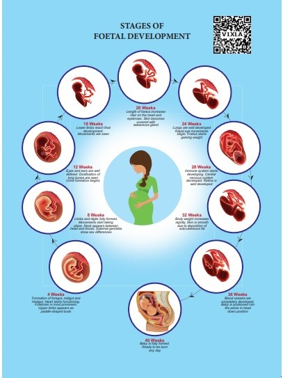
BOX ITEM
CAESAREAN
When normal vaginal delivery is not possible due to factors like position of the baby and nature of the placenta, the baby is delivered through a surgical incision in the woman’s abdomen and uterus. It is also termed as abdominal delivery or Caesarean Section or ‘C’ Section.
Lactation is the production of milk by mammary glands. The mammary glands show changes during every menstrual cycle, during pregnancy and lactation. Increased level of oestrogens, progesterone and human Placental Lactogen towards the end of pregnancy stimulate the hypothalamus towards prolactin releasing factors. The anterior pituitary responds by secreting prolactin which plays a major role in lactogenesis.
Oxytocin causes the “Let-Down” reflex the actual ejection of milk from the alveoli of the mammary glands. During lactation, oxytocin also stimulates the recently emptied uterus to contract, helping it to return to pre pregnancy size.
BOX ITEM
Colostrum
Colostrum, a nutrient rich fluid produced by the human female immediately after giving birth, is loaded with immune, growth and tissue repair factors.It acts as a natural antimicrobial agent to actively stimulate the maturation of the infant’s immune system. No artificial feed can substitute the first milk, with all its natural benefits and therefore should be definitely fed to the baby after birth.
The mammary glands secrete a yellowish fluid called colostrum during the initial few days after parturition. It has less lactose than milk and almost no fat, but it contains more proteins, vitamin A and minerals Colostrum is also rich in Immunoglobulin A antibodies. This helps to protect the infant’s digestive tract against bacterial infection. Breast milk is the ideal food for infants as it contains all the constituents in suitable concentration and is easily digestible. It is fully sufficient till about 6 months of age and all infants must be breast fed by the mother to ensure the growth of a healthy baby.
Summary
Reproduction is a process which helps in the continuity and maintenance of a species. Human beings are sexually reproducing and viviparous. The reproductive events include gametogenesis, insemination, Fertilization, cleavage, implantation, placentation, gastrulation, organogenesis and parturition.
The female reproductive system consists of a pair of ovaries, a pair of oviducts, uterus, cervix, vagina and external genitalia. The male reproductive system consists of a pair of testes, a pair of duct system, accessory glands and external genitalia called penis.
The process of formation of gametes in the male is called spermatogenesis and in the female is called oogenesis. The reproductive cycle in females is called menstrual cycle and it is initiated at puberty. The ovum released during the menstrual cycle is fertilized by the sperm and the zygote is formed
Zygote undergoes repeated mitotic division and the blastocyst is implanted on the walls of the uterus. It takes about 280 days or 40 weeks for the entire development of the human foetus and it is delivered out through the process of child birth or parturition. The new born baby is breast fed by the mother.
BOX ITEM
World Breast feeding week August 1st week
World Breast feeding week is organized and promoted world wide by World Alliance for Breast feeding Action,World Health Organization and United Nations International Children's Emergency Fund to stress the importance of breast feeding during the first six months of baby’s life and a supplemented breast feeding for two years in order to encourage new mothers for the healthy growth and development of their children, to guard them from lethal health problems and diseases including neonatal jaundice, pneumonia, cholera, etcetera., The Government of Tamil Nadu has also initiated various projects like Mother’s Milk Bank, Feeding rooms in bus terminals and also organisizes awareness campaigns during the first week of August to highlight the importance of breast feeding to infants.
BOX ITEM
INTERESTING FACTS
1. Males are said to be sterile when they fail to produce viable sperms.
2. Azoospermia refers to the failure of spermatogenesis.
3. Enlargement of prostate gland is called prostatitis and can lead to difficulty in urination.
4. Castration or surgical removal of testis is known as orchidectomy
5. Spermarche is the first ejaculation of the semen.
BOX ITEM
Case Study
Arunachalam Muruganantham
Inventor And Social Entrepreneur
Arunachalam Muruganantham is the man behind the world’s first low cost sanitary napkin making machine. His mission was to provide sanitary napkins at minimal cost to poor women across the country, especially in rural areas. The journey began when he was shocked by the fact that women in India including his wife often used things such as old rags, leaves and even ash during menstruation. Approximately 70 percent of all reproductive diseases in India are caused by poor menstrual hygiene. 23 percent of girls drop out of schools once they attain puberty. He wished to make a social impact by creating more livelihoods and improving the menstrual hygiene of rural women.
Arunachalam initiated his research in 1999 and almost after 5 years, successfully created a lowcost machine for the production of sanitary napkins. He presented his prototype to IIT, Madras for a national innovation competition in 2006 and out of 943 entries, his machine stood first. Arunachalam made 250 machines in 18 months and set out to states in Northern India namely Bihar, Madhya Pradesh, Rajasthan and Uttar Pradesh. Arunachalam Muruganantham was named one of the Time Magazine’s 100 most influential people in 2014. He was awarded the Padma Shri in 2016.
Evaluation
1. The mature sperms are stored in the
a. Seminiferous tubules
b. Vas deferens
c. Epididymis
d. Seminal vesicle
Answer c. Epididymis
2. The male sex hormone testosterone is secreted from
a. Sertoli cells
b. Leydig cell
c. Epididymis
d. Prostate gland
Answer b. Leydig cell
3. The glandular accessory organ which produces the largest proportion of semen is
a. Seminal vesicle
b. Bulbourethral gland
c. Prostate gland
d. Mucous gland
Answer a. Seminal vesicle
4. The male homologue of the female clitoris is
a. Scrotum
b. Penis
c. Urethra
d.Testis
Answer b. Penis
5. The site of embryo implantation is the
a. Uterus
b. Peritoneal cavity
c. Vagina
d. Fallopian tube
Answer a. Uterus
6. The foetal membrane that forms the basis of the umbilical cord is
a. Allantois
b. Amnion
c. Chorion
d. Yolk sac
Answer a. Allantois
7. The most important hormone in intiating and maintaining lactation after birth is
a. Oestrogen
b. Follicle stimulating hormone
c. Prolactin
d. Oxytocin
Answer c. Prolactin
8. Mammalian egg is
a. Mesolecithal and non cleidoic
b. Microlecithal and non cleidoic
c. Alecithal and non cleidoic
d. Alecithal and cleidoic
Answer c. Alecithal and non cleidoic
9. The process which the sperm undergoes before penetrating the ovum is
a. Spermiation
b. Cortical reaction
c. Spermiogenesis
d. Capacitation
Answer d. Capacitation
10. The milk secreted by the mammary glands soon after child birth is called
a. Mucous
b. Colostrum
c. Lactose
d. Sucrose
Answer b. Colostrum
11. Colostrum is rich in
a. Immunoglobulin E
b. Immunoglobulin A
c. Immunoglobulin D
d. Immunoglobulin M
Answer b. Ig A
12. The Androgen Binding Protein is produced by
a. Leydig cells
b. Hypothalamus
c. Sertoli cells
d. Pituitary gland
Answer c. Sertoli cells
13. Find the wrongly matched pair
a. Bleeding phase hyphen fall in oestrogen and progesterone
b. Follicular phase hyphen rise in oestrogen
c. Luteal phase hyphen rise in Follicle Stimulating Hormone level
d. Ovulatory phase hyphen Lutenizing Hormone surge
Answer c. Luteal phase rise in Follicle Stimulating Hormone level
Answer the following type of questions Assertion (A) and Reason (R)
a. Assertion and Reason are true, Reason is the correct explanation of Assertion
b. Assertion and Reason are true, Reason is not the correct explanation of Assertion
c. Assertion is true, Reason is false
d. Both Assertion and Reason are false
14. Assertion In human male, testes are extra abdominal and lie in scrotal sacs
Reason Scrotum acts as thermoregulator and keeps temperature lower by 2 degree celsius for normal sperm production.
Answer a. Assertion and Reason are true, Reason is the correct explanation of Assertion
15. Assertion Ovulation is the release of ovum from the Graafian follicle.
Reason It occurs during the follicular phase of the menstrual cycle.
Answer (c) Assertion is true, Reason is false
16. Assertion Head of the sperm consists of acrosome and mitochondria
Reason Acrosome contains spiral rows of mitochondria
Answer d. Both Assertion and Reason are false
17. Painful menstruation is termed as
a. Dysmenorrhoea
b. Menorrhagia
c. Amenorrhoea
d. Oligomenorrhoea
Answer a. Dysmenorrhoea
18. Which one of the following menstrual irregularities is correctly matched?
a Menorrhagia hyphen Excessive menstruation
b Amenorrhoea hyphen absence of menstruation
c Dysmenorrhoea hyphen irregularity of menstruation
d Oligomenorrhoea hyphen painful mensturation
Answer b Amenorrhoea - absence of menstruation
19. Mention the differences between spermiogenesis and spermatogenesis.
20. At what stage of development are the gametes formed in new born male and female?
21. Expand the acronyms
a. F S H
b. L H
c. h C G
d. h P L
22. How is polyspermy avoided in humans?
23. What is colostrum? Write its significance.
24. Placenta is an endocrine tissue. Justify.
25. Draw a labeled sketch of a spermatozoan.
26. What is inhibin? State its functions.
27. Mention the importance of the position of the testes in humans.
28. What is the composition of semen?
29 Explain the process of fertilization and implantation of the fertilized ovum
30. Define gametogenesis.
31. Describe the structure of the human ovum with a neat labelled diagram.
32. Give a schematic representation of spermatogenesis and oogenesis in humans.
33. Explain the various phases of the menstrual cycle.
34. Explain the role of oxytocin and relaxin in parturition and lactation.
35. Identify the given image and label its parts marked as a, b, c and d.
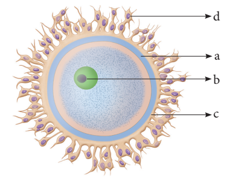
36. The following is the illustration of the sequence of ovarian events (a to i) in a human female.
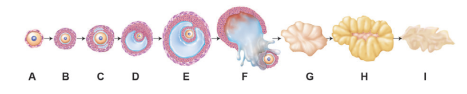
a) Identify the figure that illustrates ovulation and mention the stage of oogenesis it represents.
b) Name the ovarian hormone and the pituitary hormone that have caused the above-mentioned events.
c) Explain the changes that occurs in the uterus simultaneously in anticipation.
d) Write the difference between C and H.
37 List the various menstrual disorders.
Concept Map
![The Description for the concept map begins. The concept map is given for the Unit-1Chapter-2 Human Reproduction. Human Reproduction is classified as Male Reproductive System and Female Reproductive System. Male reproductive system consists of Accessary glands such as Seminal vessicle , Prostate gland and Bulbourethral gland and altogether the secretion of the semen. The Principal organs consist of Testis, Seminiferous tubules, Vas deferens and Penis. Under the Female reproductive system Principal organs, accessory glands and menstrual cycle is given. The principal organs consists of Ovary, Fallopian tube Uterus and Vagina. Accessory glands consist of Mammary glands. The Menstrual cycle is classified into four phases such as Menstrual phase, Follicular phase, Ovulatory phase and Luteal phase. In between the gametogenesis is given which is divided into Spermatogenesis and Oogenesis. in fertilization the Sperm and Ovum fused together and form Zygote, then implantation , Foetal development, Parturition and Lactation is given one by one. The description for the concept map for human reproduction ends.](images/image-2.jpeg)
ICT CORNER HUMAN REPRODUCTION
Baby’s Journey to the world.
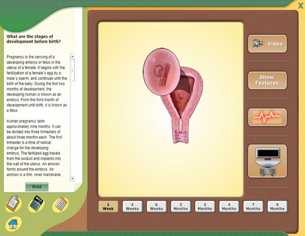
Procedure:
Step 1: Use the URL or scan the QR Code to launch the “Stages of Development before Birth” activity page.
Step 2: On the right of the window, Click “Video” and view the development of embryo during that particular stage.
Step 3: Click “Show Features” to know the parts. Click “Heartbeat-Symbol” to hear the heartbeat of the embryo at that particular stage. Click “Weighing Machine” placed below to know the weight of the offspring at that stage.
Step 4: Repeat the above steps with the different weeks by clicking the respective week tabs placed below.
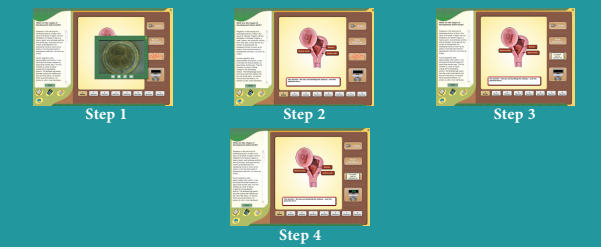
Human Reproduction URL
http://www.glencoe.com/sites/common_assets/science/virtual_labs/LS26/LS26.html
*Pictures are indicative only
*Allow flash player
Safe motherhood begins before conception with healthy lifestyle and proper nutrition
Chapter Outline
3.1. Need for reproductive health Problems and strategies
3.2. Amniocentesis and its statutory ban
3.3. Social impact of sex ratio, female foeticide and infanticide
3.4. Population explosion and birth control
3.5. Medical termination of pregnancy (MTP)
3.6. Sexually transmitted diseases (STD)
3.7. Infertility
3.8. Assisted reproductive technologyes (A R T)
3.9. Detection of foetal disorders during early pregnancy
Learning Objectives
➢ Understands the importance of sex education and reproductive health.
➢ Learns the importance of amniocentesis as a pre natal diagnosis.
➢ Evaluates the effects of maternal and infant mortality.
➢ Identifies, compares and explains different types of contraceptive devices.
➢ Discusses the medical necessity and social consequences of MTP.
➢ Explains the reasons of transmission and prevention of STDs.
➢ Highlights the reasons of infertility.
➢ Develops a positive and healthy attitude towards reproductive life.
Reproductive health represents a society with people having physically and functionally normal reproductive organs. Healthy people have healthier babies and are able to care for their family, and contribute more to the society and community. Hence, health is a community issue. Reproductive system is a complex system controlled by the neuro-endocrine system, hence, it is important to take necessary steps to protect it from infectious diseases and injury.
India is amongst the first few countries in the world to initiate the ‘Family planning programme’ since 1951 and is periodically assessed every decade. These programmes are popularly named as Reproductive and Child Health Care (RCH). Major tasks carried out under these programmes are:
• Creating awareness and providing medical assistance to build a healthy society.
• Introducing sex education in schools to provide information about adolescence and adolescence related changes.
• Educating couples and those in the marriageable age groups about the available birth control methods and family planning norms.
• Creating awareness about care for pregnant women, post-natal care of mother and child and the importance of breast feeding.
• Encouraging and supporting governmental and non-governmental agencies to identify new methods and/or to improve upon the existing methods of birth control.
DO YOU KNOW?
Globally, about 800 women die every day of preventable causes related to pregnancy and childbirth; 20 per cent of these women are from India Similarly India's infant mortality rate was 44 per 1,000 live. Although, India has witnessed dramatic growth over the last two decades, maternal mortality still remains high as in comparison to many developing nations. source: http://unicef.in
BOX ITEM
Health care programmes such as massive child immunization, supply of nutritional food to the pregnant women, Janani Suraksha Yojana, Janani Shishu Suraksha Karyakaram, RMNCH+A approach (an integrated approach for reproductive, maternal, new born, child and adolescent health), Pradhan Mantri Surakshit Matritva Abhiyan, etcetera., are taken up at the national level by the Government of India.
Due to small family norms and the skewed choice for a male child, female population is decreasing at an alarming rate. Amniocentesis is a prenatal technique used to detect any chromosomal abnormalities in the foetus and it is being often misused to determine the sex of the foetus. Once the sex of the foetus is known, there may be a chance of female foeticide. Hence, a statutory ban on amniocentesis is imposed.
The sex ratio is the ratio of males to the females in a population. In India, the child sex ratio has decreased over the decade from 927 to 919 female for every 1000 males. To correct this ratio, steps are needed to change the mind set and attitudes of people, especially in the young adults. Female foeticide and infanticide is the manifestation of gender discrimination in our society.
Female foeticide refers to ‘aborting the female in the mother’s womb’; whereas female infanticide is ‘killing the female child after her birth’. These have resulted in imbalance in sex ratio. In UNDP’s G II 2018 (United nations developmental programmes gender inequality index) reflected that India was ranked at 135 out of 187 countries due to availability of very few economic opportunities to women as compared to men.
In order to prevent female foeticide and infanticide, Government of India has taken various steps like PCPNDT Act (Preconception and Prenatal diagnostic technique act-1994) enacted to ban the identification of sex and to prevent the use of prenatal diagnostic techniques for selective abortion. Various measures are taken by the Government to ensure survival, provision of better nutrition, education, protection and empowerment of girls by eliminating the differences in the sex ratio, infant mortality rate and improving their nutritional and educational status. POCSO Act (Prevention of children from sexual offences), Sexual harassment at workplace (Prevention, prohibition and redressal) Act and the changes in the Criminal law based on the recommendations of Justice Verma Committee, 2013 aims at creating a safe and secure environment for both females and males.
Increased health facilities and better living conditions have enhanced longevity. According to a recent report from the UN, India’s population has already reached 1.26 billion and is expected to become the largest country in population size, surpassing China around 2022. To overcome the problem of Population explosion, birth control is the only available solution. People should be motivated to have smaller families by using various contraceptive devices. Advertisements by the Government in the media as well as posters or bills, etcetera, with a slogan Naam iruvar namakku iruvar (we two, ours two) and Naam iruvar namakku oruvar (we two, ours one) have also motivated to control population growth in Tamilnadu. Statutory rising of marriageable age of the female to 18 years and that of males to 21 years and incentives given to couples with small families are the other measures taken to control population growth in our country.
Birth control methods
The voluntary use of contraceptive procedures to prevent fertilization or prevent implantation of a fertilized egg in the uterus is termed as birth control. An ideal contraceptive should be user friendly, easily available, with least side effects and should not interfere with sexual drive. The contraceptive methods are of two types. They are temporary and permanent. Natural, chemical, mechanical and hormonal barrier methods are the temporary birth control methods.
1 Natural method is used to prevent meeting of sperm with ovum that is, Rhythm method (safe period), coitus interruptus, continuous abstinence and lactational amenorrhoea.
a. Periodic abstinence or rhythm method Ovulation occurs at about the 14th day of the menstrual cycle. Ovum survives for about two days and sperm remains alive for about 72 hours in the female reproductive tract. Coitus is to be avoided during this time.
b. Continuous abstinence is the simplest and most reliable way to avoid pregnancy is not to have coitus for a defined period that facilitates conception.
c. Coitus interruptus is the oldest family planning method. The male partner withdraws his penis Before ejaculation, there by preventing deposition of semen into the vagina.
d. Lactational amenorrhoea Menstrual cycles resume as early as 6 to 8 weeks from parturition. However, the reappearance of normal ovarian cycles may be delayed for six months during breastfeeding. This delay in ovarian cycles is called lactational amenorrhoea. It serves as a natural, but an unreliable form of birth control. Suckling by the baby during breast-feeding stimulates the pituitary to secrete increased prolactin hormone in order to increase milk production. This high prolactin concentration in the mother’s blood may prevent menstrual cycle by suppressing the release of GnRH (Gonadotropin Releasing Hormone) from hypothalamus and gonadotropin secretion from the pituitary.
2. Barrier methods in these methods, the ovum and sperm are prevented from meeting so that fertilization does not occur.
a. Chemical barrier Foaming tablets, melting suppositories, jellies and creams are used as chemical agents that inactivate the sperms in the vagina.
b. Mechanical barrier Condoms are a thin sheath used to cover the penis in male whereas in female it is used to cover vagina and cervix just before coitus so as to prevent the entry of ejaculated semen into the female reproductive tract. This can prevent conception. Condoms should be discarded after a single use. Condom also safeguards the user from AIDS and STDs. Condoms are made of polyurethane, latex and lambskin.
Diaphragms, cervical caps and vaults are made of rubber and are inserted into the female Reproductive tract to cover the cervix before coitus in order to prevent the sperms from entering the uterus.
c. Hormonal barrier
It prevents the ovaries from releasing the ova and thickens the cervical fluid which keeps the sperm away from ovum.
Oral contraceptives Pills are used to prevent ovulation by inhibiting the secretion of Follicle Stimulating Hormone and Lutenizing Hormone hormones. A combined pill is the most commonly used birth control pill. It contains synthetic progesterone and estrogen hormones. Saheli, contraceptive pill by Central Drug Research Institute (CDRI) in Lucknow, India contains a non-steroidal preparation called Centchroman.
d. Intrauterine Devices
Intrauterine devices are inserted by medical experts in the uterus through the vagina. These devices are available as copper releasing Intrauterine Devices (I U Ds), hormone releasing Intrauterine Devices (I U Ds) and non-medicated Intrauterine Devices (I U Ds). Intrauterine Devices (I U Ds) increase phagocytosis of sperm within the uterus. Intrauterine Devices (I U Ds) are the ideal contraceptives for females who want to delay pregnancy. It is one of the popular methods of contraception in India and has a success rate of 95 to 99%.
Copper releasing Intrauterine Devices (I U Ds) differ from each other by the amount of copper. Copper Intrauterine Devices (I U Ds) such as Copper T-380 A, Nova T, Copper 7, Copper T 380 A g, Multiload 375, etcetera. release free copper and copper salts into the uterus and suppress sperm motility. They can remain in the uterus for five to ten years.
Hormone-releasing Intrauterine Devices (I U Ds) such as Progestasert and LNG 20 are often called as intrauterine systems (IUS). They increase the viscosity of the cervical mucus and thereby prevent sperms from entering the cervix.
Nonmedicated Intrauterine Devices (I U Ds) are made of plastic or stainless steel. Lippes loop is a double S-shaped plastic device.
3. Permanent birth control methods are adopted by the individuals who do not want to have any more children.
Surgical sterilisation methods are the permanent contraception methods advised for male and female partners to prevent any more pregnancies. It blocks the transport of the gametes and prevents conception. Tubectomy is the surgical sterilisation in women. In this procedure, a small portion of both fallopian tubes are cut and tied up through a small incision in the abdomen or through vagina. This prevents fertilization as well as the entry of the egg into the uterus. Vasectomy is the surgical procedure for male sterilisation. In this procedure, both vas deferens are cut and tied through a small incision on the scrotum to prevent the entry of sperm into the urethra. Vasectomy prevents sperm from heading off to penis as the discharge has no sperms in it.
Medical method of abortion is a voluntary or intentional termination of pregnancy in a non-surgical or non-invasive way. Early medical termination is extremely safe upto 12 weeks (the first trimester) of pregnancy and generally has no impact on a women’s fertility. Abortion during the second trimester is riskier as the foetus becomes intimately associated with the maternal tissue. Government of India legalized MTP in 1971 for medical necessity and social consequences with certain restrictions like sex discrimination and illegal female foeticides to avoid its misuse. MTP performed illegally by unqualified quacks is unsafe and could be fatal. MTP of the first conception may have serious psychological consequences
BOX ITEM
Case Study
Approximately half of unintended pregnancies are due to contraceptive failure, largely owing to inconsistent or incorrect use of contraceptive methods. The effectiveness of long-acting reversible contraception (intrauterine devices and contraceptive implants) is superior to that of contraceptive pills, patch, or ring and is not altered in adolescents and young women. Educating young women about the usage of intrauterine devices and contraceptive implants would dramatically reduce the number of unintended pregnancies among women seeking family planning.
Sexually transmitted diseases (S T D) or Venereal diseases (VD) or Reproductive tract infections (RTI) are called as Sexually transmitted infections (S T I). Normally S T I are transmitted from person to person during intimate sexual contact with an infected partner. Infections like Hepatitis-B and Human Immuno Defeciency Virus (HIV) are transmitted sexually as well as by sharing of infusion needles, surgical instruments, etc with infected people, blood transfusion or from infected mother to baby. People in the age of 15 to 24 years are prone to these infections. The bacterial S T I are gonorrhoea, syphilis, chancroid, chlamydiasis and lymphogranuloma venereum. The viral S T I are genital herpes, genital warts, Hepatitis-B and AIDS. Trichomoniasis is a protozoan STI, and candidiasis is a fungal S T I. S T I caused by bacteria, fungi and protozoa or parasites, can be treated with antibiotics or other medicines, whereas S T I caused by virus cannot be treated but the symptoms can be controlled by antiviral medications. Latex condoms usage greatly reduces the risk, but does not completely eliminate the risk of transmission of ST I.
DO YOU KNOW?
According to World Health Organization (WHO), 2017 more than one million people globally acquires a sexually transmitted infection every day. India has the third largest HIV epidemic in the world, with 2.1 million people living with HIV
Prevention of STDs
a. Avoid sex with unknown partner or multiple partners.
b. Use condoms.
c. In case of doubt, consult a doctor for diagnosis and get complete treatment.
DO YOU KNOW?
TNHSP (Tamilnadu health systems project), a unit of the Health and family welfare department of the Government of Tamilnadu does free screening for cervical and breast cancer.
Table 3.1 STD and their Symptoms
Name of the disease |
Causative agent |
Symptoms |
Incubation Period |
Gonorrhoea |
Neisseria gonorrhoeae |
Affects the urethra, rectum and throat and in females the cervix also gets affected. Pain and pus discharge in the genital tract and burning sensation during urination. |
2 to 5 days |
Syphilis |
Treponema pallidum |
Primary stage Formation of painless ulcer on the external genitalia. Secondary stage Skin lesions, rashes, swollen joints and fever and hair loss. Tertiary stage Appearance of chronic ulcers on nose, lower legs and palate. Loss of movement, mental disorder, visual impairment, heart problems, gummas (soft non-cancerous growths) etc. |
10 to 90 days |
Chlamydiasis |
Chlamydia trachomatis |
Trachoma, affects the cells of the columnar epithelium in the urinogenital tract, respiratory tract and conjunctiva. |
2 to 3 weeks or upto 6 Weeks
|
Lymphogranuloma venereum |
Chlamydia trachomatis |
Cutaneous or mucosal genital damage, urithritis and endocervicitis. Locally harmful ulcerations and genital elephantiasis.
|
2 to 3 weeks or upto 6 Weeks
|
Viral STI |
|
|
|
Genital herpes |
Herpes simplex virus |
Sores in and around the vulva, vagina, urethra in female or sores on or around the penis in male. Pain during urination, bleeding between periods. Swelling in the groin nodes. |
2 to 21 days (average 6 days)
|
Genital warts |
Human papilloma |
Hard outgrowths (Tumour) on the external genitalia, cervix and perianal region. |
1 to 8 months |
Hepatitis-B |
Hepatitis B virus (HBV) |
Fatigue, jaundice, fever, rashes and stomach pain. Liver cirrhosis and liver failure occur in the later stage. |
30 to 80 day |
AIDS |
Human immunodeficiency virus (HIV) |
Enlarged lymph nodes, prolonged fever, prolonged diarrhoea, weight reduction, night sweating. |
2 to 6 weeks even more than 10 years |
Fungal STI |
|
|
|
Candidiasis
|
Candida albicans
|
Attacks mouth, throat, intestinal tract and vagina. Vaginal itching or soreness, abnormal vaginal discharge and pain during urination.
|
|
Protozoan STI |
|
|
|
Trichomoniasis
|
Trichomonas vaginalis
|
Vaginitis, greenish yellow vaginal discharge, itching and burning sensation, urethritis, epididymitis and prostatitis
|
4 to 28 days
|
Cervical cancer
Cervical cancer is caused by a sexually transmitted virus called Human Papilloma virus (HPV). HPV may cause abnormal growth of cervical cells or cervical dysplasia.
The most common symptoms and signs of cervical cancer are pelvic pain, increased vaginal discharge and abnormal vaginal bleeding. The risk factors for cervical cancer include
1. Having multiple sexual partners
2. Prolonged use of contraceptive pills
Cervical cancer can be diagnosed by a Papanicolaou smear (PAP smear) combined with an HPV test. X Ray, CT scan, M R I and a PET scan may also be used to determine the stage of cancer. The treatment options for cervical cancer include radiation therapy, surgery and chemotherapy.
Modern screening techniques can detect precancerous changes in the cervix Therefore screening is recommended for women above 30 years once in a year. Cervical cancer can be prevented with vaccination. Primary prevention begins with HPV vaccination of girls aged 9 to 13 years, before they become sexually active. Modification in lifestyle can also help in preventing cervical cancer. Healthy diet, avoiding tobacco usage, preventing early marriages, practicing monogamy and regular exercise minimize the risk of cervical cancer.
Inability to conceive or produce children even after unprotected sexual cohabitation is called infertility. That is, the inability of a man to produce sufficient numbers or quality of sperm to impregnate a woman or inability of a woman to become pregnant or maintain a pregnancy.
The causes for infertility are tumours formed in the pituitary or reproductive organs, inherited mutations of genes responsible for the biosynthesis of sex hormones, malformation of the cervix or fallopian tubes and inadequate nutrition before adulthood. Long-term stress damages many aspects of health especially the menstrual cycle. Ingestion of toxins (heavy metal cadmium), heavy use of alcohol, tobacco and marijuana, injuries to the gonads and aging also cause infertility.
Other causes of infertility
• Pelvic inflammatory disease (PID), uterine fibroids and endometriosis are the most common causes of infertility in women.
• Low body fat or anorexia in women that is. a psychiatric eating disorder characterised by the fear of gaining weight.
• Undescended testes and swollen veins (varicocoele) in scrotum.
• Tight clothing in men may raise the temperature in the scrotum and affect sperm production.
• Under developed ovaries or testes.
• Female may develop antibodies against her partner's sperm.
• Males may develop an autoimmune response to their own sperm.
BOX ITEM
All women are born with ovaries, but some do not have functional uterus. This condition is called Mayer-Rokitansky syndrome.
A collection of procedures, which includes the handling of gametes and or embryos outside the body to achieve pregnancy is known as Assisted Reproductive Technology. It increases the chance of pregnancy in infertile couples. Assisted Reproductive Technology includes intra-uterine insemination (IUI), in vitro fertilization, (IVF) Embryo transfer (ET), Zygote intra-fallopian transfer (ZIFT), Gamete intrafallopian transfer (GIFT), Intra-cytoplasmic sperm injection (ICSI), Preimplantation genetic diagnosis, oocyte and sperm donation and surrogacy.
Intra-uterine insemination (IUI) or Artificial insemination
This is a procedure to treat infertile men with low sperm count. The semen is collected either from the husband or from a healthy donor and is introduced into the uterus through the vagina by a catheter after stimulating the ovaries to produce more ova. The sperms swim towards the fallopian tubes to fertilize the egg, resulting in normal pregnancy.
In vitro fertilization (IVF) or Test tube baby
In this technique, sperm and eggs are allowed to unite outside the body in a laboratory. One or more fertilized eggs may be transferred into the woman’s uterus, where they may implant in the uterine lining and develop. Excess embryos may be cryopreserved (frozen) for future use. Initially, In vitro fertilization was used to treat women with blocked, damaged, or absent fallopian tubes. Today, In vitro fertilization is used to treat many causes of infertility. The basic steps in an In vitro fertilization treatment cycle are ovarian stimulation, egg retrieval, fertilization, embryo culture, and embryo transfer.
Egg retrieval is done by minor surgery under general anesthesia, using ultrasound guide after 34 to 37 hours of hCG (human chorionic gonadotropin) injection. The eggs are prepared and stripped from the surrounding cells. At the same time, sperm preparation is done using a special media. After preparing the sperms, the eggs are brought together. 10,000 to 1,00,000 motile sperms are needed for each egg. Then the zygote is allowed to divide to form 8 celled blastomere and then transferred into the uterus for a successful pregnancy. The transfer of an embryo with more than 8 blastomeres stage into uterus is called Embryo transfer technique.
DO YOU KNOW?
Cryopreservation (or freezing) of embryos is often used when there are more embryos than needed for a single In vitro fertilization transfer. Embryo cryopreservation can provide an additional opportunity for pregnancy, through a Frozen embryo transfer (FET), without undergoing another ovarian stimulation and retrieval.
Zygote intra-fallopian transfer (ZIFT)
As in In vitro fertilization, the zygote upto 8 blastomere stage is transferred to the fallopian tube by laparoscopy. The zygote continues its natural divisions and migrates towards the uterus where it gets implanted.
Intra uterine transfer (IUT)
Embryo with more than 8 blastomeres is inserted into uterus to complete its further development.
Gamete intra-fallopian transfer (GIFT)
Transfer of an ovum collected from a donor into the fallopian tube. In this the eggs are collected from the ovaries and placed with the sperms in one of the fallopian tubes. The zygote travels toward the uterus and gets implanted in the inner lining of the uterus.
Intra-cytoplasmic sperm injection (ICSI)
In this method only one sperm is injected into the focal point of the egg to fertilize. The sperm is carefully injected into the cytoplasm of the egg. Fertilization occurs in 75 to 85% of eggs injected with the sperms. The zygote is allowed to divide to form an 8 celled blastomere and then transferred to the uterus to develop a protective pregnancy.
Surrogacy
Surrogacy is a method of assisted reproduction or agreement whereby a woman agrees to carry a pregnancy for another person, who will become the newborn child's parent after birth. Through in vitro fertilization (IVF), embryos are created in a lab and are transferred into the surrogate mother's uterus.
Male infertility
Azoospermia is defined as the absence of spermatozoa in the ejaculate semen on atleast two occasions and is observed approximately in 1% of the population.
Micro testicular sperm extraction (T E S E)
Microsurgical sperm retrieval from the testicle involves a small midline incision in the scrotum, through which one or both testicles can be seen. Under the microscope, the seminiferous tubules are dilated and small amount of testicular tissue in areas of active sperm production are removed and improved for sperm yield compared to traditional biopsy techniques.
Ultrasound has no known risks other than mild discomfort due to pressure from the transducer on the abdomen or vagina. No radiation is used during this procedure. Ultrasonography is usually performed in the first trimester for dating, determination of the number of foetuses, and for assessment of early pregnancy complications.
BOX ITEM
There are several types of ultrasound imaging techniques. As the most common type, the 2 D ultrasound provides a flat picture of one aspect of the baby. The 3 D image allows the health care provider to see the width, height and depth of the images, which can be helpful during the diagnosis. The latest technology is 4 D ultrasound, which allows the health care provider to visualize the unborn baby moving in real time with a three dimensional image.
Amniocentesis
Amniocentesis involves taking a small sample of the amniotic fluid that surrounds the foetus to diagnose for chromosomal abnormalities Figure 3 1
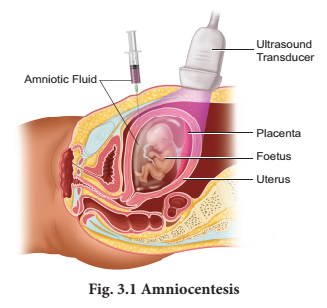
Amniocentesis is generally performed in a pregnant woman between the 15th and 20th weeks of pregnancy by inserting a long, thin needle through the abdomen into the amniotic sac to withdraw a small sample of amniotic fluid. The amniotic fluid contains cells shed from the foetus.
Chorionic villus sampling (CVS)
Chorionic villus sampling is a prenatal test that involves taking a sample of the placental tissue to test for chromosomal abnormalities.
Foetoscope
Foetoscope is used to monitor the foetal heart rate and other functions during late pregnancy and labour. The average foetal heart rate is between 120 and 160 beats per minute. An abnormal foetal heart rate or pattern may mean that the foetus is not getting enough oxygen and it indicates other problems.
A hand-held doppler device is often used during prenatal visits to count the foetal heart rate. During labour, continuous electronic foetal monitoring is often used.
BOX ITEM
BREAST SELF EXAMINATION AND EARLY DIAGNOSIS OF CANCER
1. Breast is divided into 4 quadrants and the center (Nipple) which is the 5th quadrant.
2. Each quadrant of the breast is felt for lumps using the palm of the opposite hand.
3. The examination is done in both lying down and standing positions, monthly once after the 1st week of menstrual cycle.
This way if there are lumps or any deviation of the nipple to one side or any blood discharge from the nipple we can identify cancer at an early stage.
Mammograms are done for women above the age of 40 years and for young girls and women below 40 years. Ultrasound of the breast aids in early diagnosis of breast cancer.
BOX ITEM
• Vitamin E is known as anti-sterility vitamin as it helps in the normal functioning of reproductive structures.
• Sex hormones were discovered by Adolf Butenandt.
• 11th July is observed as World Population Day.
• 1st December is observed as World AIDS Day.
• N A C O (National AIDS Control Organisation) was established in 1992.
• Syphilis and gonorrhoea are commonly called as international diseases.
Summary
Reproductive health refers to a total wellbeing in all aspects of reproduction. Providing medical facilities and care to the problems like menstrual irregularities, pregnancy related aspects, medical termination of pregnancy, S T I, birth control, infertility, post natal child and maternal management are the important aspect of the Reproductive and Child Health Care programmes.
An overall improvement in reproductive health has taken place in our country as indicated by reduced maternal and infant mortality rates, assistance to infertile couples, etcetera. Improved health facilities and better living conditions promote an explosive growth of population. Such a growth necessitated intense propagation of contraceptive methods. Various contraceptive options are available now such as natural, traditional, barrier, intra uterine insemination, pills, injectables, implants and surgical methods. Though contraceptives are not regular requirements for reproductive health, one is adviced to use them to avoid pregnancy or to delay or space pregnancy.
Diseases or infections transmitted through coitus are called Sexually transmitted infections (S T Is). Pelvic inflammatory diseases (P I Ds), still birth, infertility is some of the complications of S T Ds. Early detection facilitates better cure of these diseases. Avoiding coitus with unknown or multiple partners, use of condoms during coitus are some of the simple precautions to avoid contracting S T Is.
Inability to conceive or produce children even after unprotected sexual cohabitation is called infertility. Various methods are now available to help such couples. In vitro fertilization followed by transfer of embryo into the female genital tract is one such method.
Evaluation
1. Which of the following is correct regarding HIV, hepatitis B, gonorrhoea and trichomoniasis?
(a) Gonorrhoea is a S T D whereas others are not.
(b) Trichomoniasis is a viral disease whereas others are bacterial.
(c) HIV is a pathogen whereas others are diseases.
(d) Hepatitis B is eradicated completely whereas others are not.
Answer(c) H I V is a pathogen whereas others are diseases.
2. Which one of the following groups includes sexually transmitted diseases caused by bacteria only?
(a) Syphilis, gonorrhoea and candidiasis
(b) Syphilis, chlamydiasis and gonorrhea
(c) Syphilis, gonorrhoea and trichomoniasis
(d) Syphilis, trichomoniasis and pediculosis
Answer(b) Syphilis, chlamydiasis and gonorrhea
3. Identify the correct statements from the following
a Chlamydiasis is a viral disease.
b Gonorrhoea is caused by a spirochaete bacterium, Treponema palladium.
c. The incubation period for syphilis is is 2 to 14 days in males and 7 to 21 days in females.
d Both syphilis and gonorrhoea are easily cured with antibiotics.
Answer d Both syphilis and gonorrhoea are easily cured with antibiotics.
4. A contraceptive pill prevents ovulation by
a blocking fallopian tube
b inhibiting release of Follicle Stimulating Hormone and Lutenizing Hormone
c stimulating release of Follicle Stimulating Hormone and Lutenizing Hormone
d causing immediate degeneration of released ovum
Answer b inhibiting release of Follicle Stimulating Hormone and Lutenizing Hormone
5. The approach which does not give the defined action of contraceptive is
a |
Hormonal contraceptive |
Prevents entry of sperms, prevent ovulation and fertilization |
b |
Vasectomy |
Prevents Spermatogenesis |
c |
Barrier method |
Prevents fertilization |
d |
Intra uterine device |
Increases phagocytosis of sperms, suppresses sperm motility and fertilizing capacity of sperms |
Answer
b |
Vasectomy |
Prevents Spermatogenesis |
6. Read the given statements and select the correct option.
Statement 1: Diaphragms, cervical caps and vaults are made of rubber and are inserted into the female reproductive tract to cover the cervix before coitus.
Statement 2: They are chemical barriers of conception and are reusable.
a Both statements 1 and 2 are correct and statement 2 is the correct explanation of statement 1.
b Both statements 1 and 2 are correct but statement 2 is not the correct explanation of statement 1.
c Statement 1 is correct but statement 2 is incorrect.
d Both statements 1 and 2 are incorrect.
Answer c Statement 1 is correct but statement 2 is incorrect.
7. Match column 1 with column 2 and select the correct option from the codes given below.
Column 1 |
Column 2 |
A. Copper releasing IUD |
1LNG-20 |
B. Hormone releasing |
2 Lippes loop IUD |
C. Non medicated IUD |
3 Saheli |
D. Mini pills |
4 Multiload 375 |
(a) A 4, B 2, C 1, D 3
(b) A 4, B 1, C 3, D 2
(c) A 1, B 4, C 2, D3
(d) A 4, B 1, C 2, D 3
Answer d A 4, B 1, C 2, D 3
8. Select the incorrect action of hormonal contraceptive pills from the following
(a) Inhibition of spermatogenesis.
(b) Inhibition of ovulation.
(c) Changes in cervical mucus impairing its ability to allow passage and transport of sperms.
(d) Alteration in uterine endometrium to make it unsuitable for implantation.
Answer(a) Inhibition of spermatogenesis.
9. Select the correct term from the bracket and complete the given branching tree
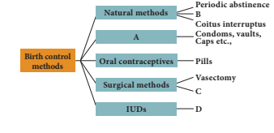
(Barriers, Lactational amenorrhoea, Copper T, Tubectomy)
10. Correct the following statements
a) Transfer of an ovum collected from donor into the fallopian tube is called Zycote Intra Fallopian Transfer.
b) Transfering of an embryo with more than 8 blastomeres into uterus is called Gamete Intra Fallopian Transfer.
c) Multiload 375 is a hormone releasing Intra Uterine Devices.
11. Which method do you suggest the couple to have a baby, if the male partner fails to inseminate the female or due to very low sperm count in the ejaculate?
12. Expand the following
a) ZIFT
b) ICSI
13. What are the strategies to be implemented in India to attain total reproductive health?
14. Differentiate foeticide and infanticide.
15. Describe the major S T Ds and their symptoms.
16. How are S T Ds transmitted?
17. Write the preventive measures of S T Ds.
18. The procedure of GIFT involves the transfer of female gametes into the fallopain tube, can gametes be transferred to the uterus to achieve the same result? Explain.
19. Amniocentesis, the foetal sex determination test, is banned in our country, Is it necessary? Comment.
20.Explain the various barrier methods to control human population
21. Open Book Assessment
‘Healthy reproduction, legally checked birth control measures and proper family planning programmes are essential for the survival of mankind’ Justify.
CONCEPT MAP
![The description for the concept map for UNIT -1 CHAPTER -3 REPRODUCTIVE HEALTH begins. Birth Control Methods is classified into Temporary method and permanent method. Natural method is divided into Periodic abstinence or rhythm method, Continuous abstinence, Coitus interruptus and Lactational Amenorrhoea. Barrier methods are Chemical barrier, examples Foaming tablets melting suppositories, jellies and creams. Mechanical barrier, examples condom and Diaphragm, Cervical cap, Vaults. Oral contraceptives and Hormonal barrier ,examples, Mini pills, Saheli (centchroman). Barrier method consists of Intrauterine devices, non-medicated Intra Uterine Devices, example Lippes loop, Hormonal releasing Intra Uterine Devices example Progestasert Levonogestral 20 LNG-20, Copper releasing Intra Uterine Devices Copper T 380 A, Nova T , Copper 7, Copper t 380 Ag, Multiload 375 . The permanent methods are Tubectomy and Vasectomy. The explanation ends.](images/image-43.png)

Drosophila are ideal for the study of genetics and development
CHAPTER OUTLINE
4.1 Multiple alleles
4.2 Human blood groups
4.3 Genetic control of Rh factor
4.4 Sex determination
4.5 Sex linked inheritance
4.6. Karyotyping
4.7. Pedigree analysis
4.8. Mendelian disorders
4.9. Chromosomal abnormalities
4.10. Extra chromosomal inheritance
4.11 Eugenics, euphenics and euthenics
LEARNING OBJECTIVES

➢ Learns the inheritance of multiple alleles with reference to human blood groups.
➢ Understands the mechanism of sex determination in human beings, insects and birds.
➢ Learns about sex linked (X and Y) inherited diseases in human beings.
➢ Understands the Mendelian disorders and diseases associated with chromosomal abnormalities.
➢ Gains knowledge on extra chromosomal inheritance.
➢ Realises the significance of the applications of genetics in the improvement of human race.
Genetics is a branch of biology that deals with the study of heredity and variations. It describes how characteristics and features pass on from the parents to their offsprings in each successive generation. The unit of heredity is known as the gene. Gene is the inherited factor that determines the biological character of an organism. A variation is the degree by which the progeny differs from their parents.
In this chapter, we are going to learn about multiple alleles with reference to the human blood groups, sex determination in man, insects and birds, sex linked inherited traits, genetic disorders and extra chromosomal inheritance. The betterment of human race can be achieved by methods like eugenics, euthenics and euphenics.
The genetic segregations in Mendelian inheritance reveal that all genes have two alternative forms dominant and recessive alleles example. tall versus dwarf (T and t). The former is the normal allele or wild allele and the latter the mutant allele. A gene can mutate several times producing several alternative forms. When three or more alleles of a gene that control a particular trait occupy the same locus on the homologous chromosome of an organism, they are called multiple alleles and their inheritance is called multiple allelism.
Multiple allelism occurs in humans, particularly in the inheritance of different types of blood groups. The blood group inheritance in human can be understood by learning about antigens and antibodies. The composition of blood, different types of blood groups (Blood group A, Blood group B, Blood group O) the blood antigens and antibodies were discussed in chapter 7 of class XI.
Multiple allele inheritance of A, B, O blood groups
Blood differs chemically from person to person. When two different incompatible blood types are mixed, agglutination (clumping together) of erythrocytes (RBC) occurs. The basis of these chemical differences is due to the presence of antigens (surface antigens) on the membrane of RBC and epithelial cells. Karl Landsteiner discovered two kinds of antigens called antigen ‘A’ and antigen ‘B’ on the surface of RBC’s of human blood. Based on the presence or absence of these antigens three kinds of blood groups, type ‘A’, type ‘B’, and type ‘O’ (universal donor) were recognized. The fourth and the rarest blood group ‘AB’ (universal recipient) was discovered in 1902 by two of Landsteiner’s students Von De Castelle and Sturli.
Bernstein in 1925 discovered that the inheritance of different blood groups in human beings is determined by a number of multiple allelic series. The three autosomal alleles located on chromosome 9 are concerned with the determination of blood group in any person. The gene controlling blood type has been labelled as ‘L’ (after the name of the discoverer, Landsteiner) or I (from isoagglutination). The I gene exists in three allelic forms, I A, I B and I O. I A specifies A antigen. I B allele determines B antigen and I O allele specifies no antigen. Individuals who possess these antigens in their fluids such as the saliva are called secretors.
I A allele produces N-acetyl galactose transferase and can add N acetyl galactosamine (N A G) and IB allele encodes for the enzyme galactose transferase that adds galactose to the precursor (that is, H substances) In the case of IO or IO allele no terminal transferase enzyme is produced and therefore called “null” allele and hence cannot add NAG or galactose to the precursor.
From the phenotypic combinations it is evident that the alleles I A and I B are dominant to I O, but co-dominant to each other (I A = I B). Their dominance hierarchy can be given as (I A = I B > I O). A child receives one of three alleles from each parent, giving rise to six possible genotypes and four possible blood types (phenotypes). The genotypes are I A I A, I A I O, I B I B, I B I O, I A I B and I O I O.
DO YOU KNOW?
• Antigens similar to those found among human beings have been recognized in the blood of other organisms. A type antigens have been found in chimpanzees and in gibbons, A, B and A B antigen in orangutans.
• New world monkeys (Platyrrhina) and lemurs have a substance similar but not identical with B antigen in humans.
• Three blood groups have been distinguished in cats with a genetic system similar to those in humans.
• The secretors (antigens found in the body fluids) can be detected in tears, saliva, urine, semen, gastric juice and in the milk of animals.
Table 4.1 Genetic basis of the human A, B, O blood groups
Genotype |
ABO blood group phenotype |
Antigens present on red blood cell |
Antibodies present |
I A I A |
Type A |
A |
Anti B |
I A I O |
Type A |
A |
Anti B |
I B I B |
Type B |
B |
Anti A |
I B I O |
Type B |
B |
Anti A |
I A I B |
Type AB |
A and B |
Neither Anti A nor Anti B |
I O I O |
Type O |
Neither A nor B |
Anti A and anti B |
Rhesus or Rh Factor
The Rh factor or Rh antigen is found on the surface of erythrocytes. It was discovered in 1940 by Karl Landsteiner and Alexander Wiener in the blood of rhesus monkey, Macaca rhesus and later in human beings. The term ‘Rh factor’ refers to immunogenic D antigen of the Rh blood group system. An individual having D antigen are Rh D positive (R h plus) and those without D antigen are R h D negative (R h negative)”. Rhesus factor in the blood is inherited as a dominant trait. Naturally occurring Anti D antibodies are absent in the plasma of any normal individual However if a R h negative person is exposed to Rh positive blood cells (erythrocytes) for the first time, anti D antibodies are formed in the blood of that individual. On the other hand, when a R h positive person receives R h negative blood no effect is seen.
Fisher and Race hypothesis:
R h factor involves three different pairs of alleles located on three different closely linked loci on the chromosome pair. This system is more commonly in use today, and uses the 'C d e' nomenclature.

In the above Figure. 4.1, three pairs of R h alleles (capital letter C small letter c, capital letter D small letter d and capital letter E small letter e) occur at 3 different loci on homologous chromosome pair. The possible genotypes will be one dominant C or one recessive c, one dominant D or one recessive d, one dominanat E or one recessive e from each chromosome. For example. Dominant alleles C D E or recessive alleles c d e; dominanat allele C recessive allele d dominant allele E or recessive allele c dominant allele D recessive allele e; recessive alleles c d e or recessive alleles c d e; dominant allele C dominant allele D recessive allele e or dominant allele C recessive allele d dominant allele E etcetera, All genotypes carrying a dominant ‘D’ allele will produce R h positive phenotype and double recessive genotype ‘d d’ will give rise to Rh negative phenotype.
Wiener Hypothesis
Wiener proposed the existence of eight alleles (capital letter R1, R2, R0, Rz, small letter r, r1, r11, ry) at a single Rh locus. All genotypes carrying a dominant ‘R allele’ (capital letter R1, R2, R0, Rz) will produce Rh positive phenotype and double recessive genotypes (small letter rr, r1 r1, r11 r11, ry ry) will give rise to Rh negative phenotype.
R h incompatability has great significance in child birth. If a woman is Rh negative and the man is Rh positive, the foetus may be Rh positive having inherited the factor from its father The Rh-negative mother becomes sensitized by carrying Rh positive foetus within her body. Due to damage of blood vessels, during child birth, the mother’s immune system recognizes the R h antigens and gets sensitized. The sensitized mother produces Rh antibodies. The antibodies are Immunoglobulin G type which are small and can cross placenta and enter the foetal circulation. By the time the mother gets sensitized and produce anti ‘D’ antibodies, the child is delivered.
Usually no effects are associated with exposure of the mother to R h positive antigen during the first child birth subsequent R h positive children carried by the same mother, may be exposed to antibodies produced by the mother against R h antigen, which are carried across the placenta into the foetal blood circulation. This causes haemolysis of foetal R B Cs resulting in haemolytic jaundice and anaemia. This condition is known as Erythoblastosis foetalis or Haemolytic disease of the new born (H D N).
Prevention of Erythroblastosis foetalis
If the mother is R h negative and foetus is R h positive, anti D antibodies should be administered to the mother at 28th and 34th week of gestation as a prophylactic measure If the Rh-negative mother delivers R h positive child then anti D antibodies should be administered to the mother soon after delivery. This develops passive immunity and prevents the formation of anti D antibodies in the mother’s blood by destroying the R h foetal R B C before the mother’s immune system is sensitized. This has to be done whenever the woman attains pregnancy.
Sex determination is the method by which the distinction between male and female is established in a species. Sex chromosomes determine the sex of the individual in dioecious or unisexual organisms. The chromosomes other than the sex chromosomes of an individual are called autosomes. Sex chromosomes may be similar (homomorphic) in one sex and dissimilar (heteromorphic) in the other. Individuals having homomorphic sex chromosomes produce only one type of gametes (homogametic) whereas heteromorphic individuals produce two types of gametes (heterogametic).
DO YOU KNOW?
The human Y chromosome is only 60 Mb in size with 60 functional genes whereas X chromosomes are 165 Mb in size with about 1,000 genes.
Chromosomal basis of sex determination
Heterogametic Sex Determination:

In heterogametic sex determination one of the sexes produces similar gametes and the other sex produces dissimilar gametes. The sex of the offspring is determined at the time of fertilization.
Heterogametic Males
In this method of sexdetermination the males are heterogametic producing dissimilar gametes while females are homogametic producing similar gametes. It is of two kinds X X X O type (example. Bugs, cockroaches and grasshoppers) and X X X Y type (example. Human beings and Drosophila).
Heterogametic Females
In this method of sexdetermination the females are heterogametic producing dissimilar gametes while males are homogametic producing similar gametes. To avoid confusion with the X X X O and X X X Y types. of sex determination, the alphabets ‘Z’ and ‘W’ are used here instead of X and Y respectively. Heterogametic females are of two types, Z O Z Z type (example. Moths, butterflies and domestic chickens) and Z W Z Z type (example. Gypsy moth, fishes, reptiles and birds).
Sex determination in human beings
Genes determining sex in human beings are located on two sex chromosomes, called allosomes. In mammals, sex determination is associated with chromosomal differences between the two sexes, typically X X females and X Y males. 23 pairs of human chromosomes include 22 pairs of autosomes (44 A A) and one pair of sex chromosomes (X X or X Y). Females are homogametic producing only one type of gamete (egg), each containing one X chromosome while the males are heterogametic producing two types of sperms with X and Y chromosomes. An independently evolved X X: X Y system of sex chromosomes also exist in Drosophila Figure 4 2

Fig 4 2 Sex determination in human beings
The Y Chromosome and Male Development
Current analysis of Y chromosomes has revealed numerous genes and regions with potential genetic function; some genes with or without homologous counterparts are seen on the X. Present at both ends of the Y chromosome are the pseudoautosomal regions (P A Rs) that are similar with regions on the X chromosome which synapse and recombine during meiosis. The remaining 95% of the Y chromosome is referred as the Non - combining Region of the Y (N R Y). The NRY is divided equally into functional genes (euchromatic) and nonfunctional genes (heterochromatic). Within the euchromatin regions, is a gene called Sex determining region Y (S R Y). In humans, absence of Y chromosome inevitably leads to female development and this S R Y gene is absent in X chromosome. The gene product of S R Y is the testes determining factor (T D F) present in the adult male testis.
Genic balance mechanisms of sex determination in Drosophila was first studied by C.B. Bridges. In Drosophila, the presence of Y chromosome is essential for the fertility of male sex, but does not determine the male sex. The gene for femaleness is located on the X chromosome and those for maleness are located on the autosomes. When geneticist C.B. Bridges, working with Drosophila, crossed a triploid (3n) female with a normal male, he observed many combinations of autosomes and sex chromosomes in the offspring. From his results Bridges in 1921 suggested that sex in Drosophila is determined by the balance between the genes for femaleness located on the ‘X’ chromosomes and those for maleness located on the autosomes. Hence the sex of an individual is determined by the ratio of its X chromosome to that of its autosome sets. This ratio is termed sex index and is expressed as:

Change in this ratio leads to a changed sex phenotype. The results obtained from a cross between triploid female Drosophila (3 A:3 X) with a diploid male (2 A: X Y) is shown in tables 4.2. and 4.3.
Table: 4.2 Bridges classical cross of a triploid (3 A + X X X) female fly and a diploid (2 A + X Y) male fly
Triploid Female
Parent 3 A + X X X
Gametes (2 A + X X) (A + X)) (2 A + X) (A + X X)
Diploid Male
Parent 2 A + X Y
Gametes (A + X) (A + Y)
|
A+X |
A+Y |
2 A + X X |
3 A + X X X Triploid Female |
3 A + X X Y Triploid Intersex |
2 A + X |
3 A + X X Triploid Intersex |
3 A + X YSuper Male |
A + X X |
2 A + X X X Super female |
2 A + X X Y Diploid Female |
A + X |
2 A + X X Diploid Female |
2 A + X Y Diploid Male |
BOX ITEM
• X Chromosome was discovered by Henking (1891)
• Y Chromosome was discovered by Stevens (1902)
When the X is to A ratio is 1.00 as in a normal female, or greater than 1.00, the organism is a female. When this ratio is 0.50 as in a normal male or less than 0.50 the organism is a male. At 0.67, the organism is an intersex. metamales (X is to A ratio is 0.33) and metafemales (X is to A ratio is 1.50) are usually very weak and sterile.
A sex switch gene in Drosophila directs female development. This gene, sex lethal (SxL) located on the X chromosome, has two states of activity. When it is ‘on’ it directs female development and when it is ‘off maleness ensures. Other genes located on the X chromosome and autosomes regulate this sex switch gene. However, the Y chromosome of Drosophila is required for male fertility.
Gynandromorphs
These individuals have parts of their body expressing male characters and other parts of the body expressing female characters. The organism is made up of tissues of male and female genotype and represents a mosaic pattern.
In 1949, Barr and Bertram first observed a condensed body in the nerve cells of female cat which was absent in the male. This condensed body was called sex chromatin by them and was later referred as Barr body. In the X Y chromosomal system of sex determination, males have only one X chromosome, whereas females have two. A question arises: how does the organism compensate for this dosage differences between the sexes? In mammals the necessary dosage compensation is accomplished by the inactivation of one of the X chromosome in females so that both males and females have only one functional X chromosome per cell.
Mary Lyon suggested that Barr bodies represented an inactive chromosome, which in females becomes tightly coiled into a heterochromatin, a condensed and visible form of chromatin (Lyon’s hypothesis). The number of Barr bodies observed in cell was one less than the number of X Chromosome. X O females have no Barr body, whereas X X Y males have one Barr body.
BOX ITEM
The number of Barr bodies follows N 1 rule (N minus one rule), where N is the total number of X chromosomes present.
Table: 4.3 Different doses of X chromosomes and autosome sets and their effect on sex determination in Drosophila
Phenotype |
Number of ‘X’ Chromosomes (X) |
Number of Autosome sets (A) |
sex index is determined by the ratio of its X chromosome to that of its autosome sets. |
Meta female or Super female
|
3 |
2 |
3/2 = 1.5 |
Tetraploid Normal Female
|
4 |
4 |
4/4 = 1.0 |
Triploid Normal Female
|
3 |
3 |
3/3 = 1.0 |
Diploid Normal Female
|
2 |
2 |
2/2 = 1.0 |
Haploid Normal Female
|
1 |
1 |
1/1 = 1.0 |
Inter sex
|
2 |
3 |
2/3 = 0.67 |
Normal male
|
1 |
2 |
½ = 0.50 |
Meta male or Super male
|
1 |
3 |
1/3 = 0.33 |
Haplodiploidy in Honeybees
In hymenopteran insects such as honeybees, ants and wasps a mechanism of sex determination called haplodiploidy mechanism of sex determination is common. In this system, the sex of the offspring is determined by the number of sets of chromosomes it receives. Fertilized eggs develop into females (Queen or Worker) and unfertilized eggs develop into males (drones) by parthenogenesis. It means that the males have half the number of chromosomes (haploid) and the females have double the number (diploid), hence the name haplodiplody for this system of sex determination.
This mode of sex determination facilitates the evolution of sociality in which only one diploid female becomes a queen and lays the eggs for the colony. All other females which are diploid having developed from fertilized eggs help to raise the queen’s eggs and so contribute to the queen’s reproductive success and indirectly to their own, a phenomenon known as Kin Selection. The queen constructs their social environment by releasing a hormone that suppresses fertility of the workers.
The inheritance of a trait that is determined by a gene located on one of the sex chromosomes is called sex linked inheritance. Genes present on the differential region of X or Y chromosomes are called sex linked genes. The genes present in the differential region of “X” chromosome are called X linked genes. The X linked genes have no corresponding alleles in the Y chromosome. The genes present in the differential region of Y chromosome are called Y linked or holandric genes. The Y linked genes have no corresponding allele in X chromosome. The Y linked genes inherit along with Y chromosome and they phenotypically express only in the male sex. Sex linked inherited traits are more common in males than females because, males are hemizygous and therefore express the trait when they inherit one mutant allele. The X linked and Y linked genes in the differential region (non homologus region) do not undergo pairing or crossing over during meiosis. The inheritance of X or Y linked genes is called sex linked inheritance.
Red-green colour blindness or daltonism, haemophilia and Duchenne’s muscular dystrophy are examples of X linked gene inheritance in humans.
1. Haemophilia
Haemophilia is commonly known as bleeder’s disease, which is more common in men than women. This hereditary disease was first reported by John Cotto in 1803. Haemophilia is caused by a recessive X linked gene. A person with a recessive gene for haemophilia lacks a normal clotting substance (thromboplastin) in blood, hence minor injuries cause continuous bleeding, leading to death. The females are carriers of the disease and would transmit the disease to 50% of their sons even if the male parent is normal. Haemophilia follows the characteristic criss cross pattern of inheritance.
2. Colour blindness
In human beings a dominant X linked gene is necessary for the formation of colour sensitive cells, the cones. The recessive form of this gene is incapable of producing colour sensitive cone cells. Homozygous recessive females (Xc Xc) and hemizygous recessive males (Xc Y) are unable to distinguish red and green colour. The inheritance of colour blindness can be studied in the following two types of marriages.
a) Marriage between colour blind man and normal visioned woman
A marriage between a colour blind man and a normal visioned woman will produce normal visioned male and female individuals in F1 generation but the femal s are carriers. The marriage between a F1 normal visioned carrier woman and a normal visioned male will produce one normal visioned female, one carrier female, one normal visioned male and one colour blind male in F2 generation. Colour blind trait is inherited from the male parent to his grandson through carrier daughter, which is an example of criss-cross pattern of inheritance Figure. 4.3.

b) Marriage between normal visioned man and colour blind woman

If a colour blind woman (Xc Xc) marries a normal visioned male (X + Y), all F1 sons will be colourblind and daughters will be normal visioned but are carriers. Marriage between F1 carrier female with a colour blind male will produce normal visioned carrier daughter, colourblind daughter, normal visioned son and a colourblind son in the F2 generation Figure.4.4

Genes in the non-homologous region of the Y chromosome are inherited directly from male to male. In humans, the Y linked or holandric genes for hypertrichosis (excessive development of hairs on pinna of the ear) are transmitted directly from father to son, because males inherit the Y chromosome from the father. Female inherits only X chromosome from the father and are not affected.
Karyotyping is a technique through which a complete set of chromosomes is separated from a cell and the chromosomes are arranged in pairs. An idiogram refers to a diagrammatic representation of chromosomes.
Preparation of Karyotype
Tjio and Levan (1960) described a simple method of culturing lymphocytes from the human blood. Mitosis is induced followed by addition of colchicine to arrest cell division at metaphase stage and the suitable spread of metaphase chromosomes is photographed. The individual chromosomes are cut from the photograph and are arranged in an orderly fashion in homologous pairs. This arrangement is called a karyotype. Chromosome banding permits structural definitions and differentiation of chromosomes.
Applications of Karyotyping:
• It helps in gender identification.
• It is used to detect the chromosomal aberrations like deletion, duplication, translocation, nondisjunction of chromosomes.
• It helps to identify the abnormalities of chromosomes like aneuploidy.
• It is also used in predicting the evolutionary relationships between species.
• Genetic diseases in human beings can be detected by this technique.
")
Human Karyotype
Depending upon the position of the centromere and relative length of two arms, human chromosomes are of three types: Metacentric, sub metacentric and acrocentric. The photograph of chromosomes are arranged in the order of descending length in groups from A to G Figure. 4.5
Pedigree is a “family tree”, drawn with standard genetic symbols, showing the inheritance pathway for specific phenotypic characters. Figure. 4.6 Pedigree analysis is the study of traits as they have appeared in a given family line for several past generations.

Genetic Disorders
A genetic disorder is a disease or syndrome that is caused by an abnormality in an individual DNA. Abnormalities can range from a small mutation in a single gene to the addition or subtraction of an entire chromosome or even a set of chromosomes. Genetic disorders are of two types namely, Mendelian disorders and chromosomal disorders.
Alteration or mutation in a single gene causes Mendelian disorders. These disorders are transmitted to the offsprings on the same line as the Mendelian pattern of inheritance. Some examples for Mendelian disorders are Thalassemia, albinism, phenylketonuria, sickle cell anaemia, Huntington's chorea, etcetera., These disorders may be dominant or recessive and autosomal or sex linked.
Thalassemia
Thalassemia is an autosomal recessive disorder. It is caused by gene mutation resulting in excessive destruction of RBC’s due to the formation of abnormal haemoglobin molecules. Normally haemoglobin is composed of four polypeptide chains, two alpha and two beta globin chains. Thalassemia patients have defects in either the alpha or beta globin chain causing the production of abnormal haemoglobin molecules resulting in anaemia.
Thalassemia is classified into alpha and beta based on which chain of haemoglobin molecule is affected. It is controlled by two closely linked genes H B A 1 and H B A 2 on chromosome 16. Mutation or deletion of one or more of the four alpha gene alleles causes Alpha Thalassemia. In Beta Thalassemia, production of beta globin chain is affected. It is controlled by a single gene (H B B) on chromosome 11. It is the most common type of Thalassemia and is also known as Cooley’s anaemia. In this disorder the alpha chain production is increased and damages the membranes of RBC.
Phenylketonuria
It is an inborn error of Phenylalanine metabolism caused due to a pair of autosomal recessive genes. It is caused due to mutation in the gene P A H (phenylalanine hydroxylase gene) located on chromosome 12 for the hepatic enzyme “phenylalanine hydroxylase” This enzyme is essential for the conversion of phenylalanine to tyrosine. Affected individual lacks this enzyme, so phenylalanine accumulates and gets converted to phenylpyruvic acid and other derivatives. It is characterized by severe mental retardation, light pigmentation of skin and hair. Phenylpyruvic acid is excreted in the urine.

Albinism
Albinism is an inborn error of metabolism, caused due to an autosomal recessive gene. Melanin pigment is responsible for skin colour. Absence of melanin results in a condition called albinism. A person with the recessive allele lacks the tyrosinase enzyme system, which is required for the conversion of dihydroxyphenyl alanine (D O P A) into melanin pigment inside the melanocytes. In an albino, melanocytes are present in normal numbers in their skin, hair, iris, etcetera., but lack melanin pigment.

Huntington’s chorea
It is inherited as an autosomal dominant lethal gene in man. It is characterized by involuntary jerking of the body and progressive degeneration of the nervous system, accompanied by gradual mental and physical deterioration. The patients with this disease usually die between the age of 35 and 40.
Each human diploid (2n) body cell has 46 chromosomes (23 pairs). Chromosomal disorders are caused by errors in the number or structure of chromosomes. Chromosomal anomalies usually occur when there is an error in cell division. Failure of chromatids to segregate during cell division resulting in the gain or loss of one or more chromosomes is called aneuploidy. It is caused by nondisjunction of chromosomes. Group of signs and symptoms that occur together and characterize a particular abnormality is called a syndrome. In humans, Down’s syndrome, Turner’s syndrome, Klinefelter's syndrome, Patau’s syndrome are some of the examples of chromosomal disorders.
a. Autosomal aneuploidy in human beings
Several autosomal aneuploidies have been reported in human beings. examples. Down’s syndrome (21 Trisomy), Patau’s syndrome (13 Trisomy).
1. Down’s Syndrome or Trisomy 21
Trisomic condition of chromosome 21 results in Down’s syndrome. It is characterized by severe mental retardation, defective development of the central nervous system, increased separation between the eyes, flattened nose, ears are malformed, mouth is constantly open and the tongue protrudes.
2. Patau’s Syndrome or Trisomy 13
Trisomic condition of chromosome 13 results in Patau’s syndrome. Meiotic nondisjunction is thought to be the cause for this chromosomal abnormality. It is characterized by multiple and severe body malformations as well as profound mental deficiency. Small head with small eyes, cleft palate, malformation of the brain and internal organs are some of the symptoms of this syndrome.
b. Allosomal abnormalities in human beings
Mitotic or meiotic non-disjunction of sex chromosomes causes allosomal abnormalities. Several sex chromosomal abnormalities have been detected. Example. Klinefelter’s syndrome and Turner’s syndrome.
1. Klinefelter’s Syndrome (X X Y Males)
This genetic disorder is due to the presence of an additional copy of the X chromosome resulting in a karyotype of 47, X X Y. Persons with this syndrome have 47 chromosomes (44 A A + X X Y). They are usually sterile males, tall, obese, with long limbs, high pitched voice, under developed genitalia and have feeble breast (gynaecomastia) development.
2. Turner’s Syndrome (X O Females)
This genetic disorder is due to the loss of a X chromosome resulting in a karyotype of 45, X. Persons with this syndrome have 45 chromosomes (44 autosomes and one X chromosome) (44 A A + X O) and are sterile females. Low stature, webbed neck, under developed breast, rudimentary gonads lack of menstrual cycle during puberty, are the main symptoms of this syndrome.

Certain characters are controlled by non- nuclear genomes found in chloroplast, mitochondria, infective agents and plasmids. These characters do not reveal Mendelian pattern of inheritance. The inheritance of the extra chromosomal genes is found to exhibit maternal influence. Maternal effect is due to the asymmetric contribution of the female parent to the development of zygote. Although both male and female parents contribute equally to the zygote in terms of chromosomal genes, the female parent usually contributes the zygote’s initial cytoplasm and organelles, since the sperms contain very little cytoplasm. If there are hereditary units in the cytoplasm, these will be transmitted to the offsprings through the egg, so the offsprings exhibit maternal effect.
The cytoplasmic extranuclear genes have a characteristic pattern of inheritance which do not resemble the genes of nuclear chromosomes and is known as extra chromosomal or extra nuclear or cytoplasmic inheritance and exhibit maternal influence. In extra nuclear inheritance, male and female parents contribute equally their nuclear genes to the progeny but do not make equal contribution of extra chromosomal genes hence, the crosses can yield different (or) nonMendelian results. Cytoplasmic inheritance in animals can be studied with reference to shell coiling in Limnaea and kappa particles in Paramecium.
Eugenics
Application of the laws of genetics for the improvement of human race is called eugenics. The term eugenics means “well born” and was coined by Francis Galton in 1885. For the betterment of future-generations it is necessary to increase the population of outstanding people and to decrease the population of abnormal and defective people by applying the principles of eugenics.
Two methods of Eugenics
(1) Constructive method or Positive eugenics
(2) Restrictive method or Negative eugenics
(1) Positive eugenics
Positive eugenics attempts to increase consistently better or desirable germplasm and to preserve the best germplasm of the society. The desirable traits can be increased by adopting the following measures:
(1) Early marriage of those having desirable traits
(2) Subsiding the fit and establishing sperm and egg banks of precious germplasm
(3) Educating the basic principles of genetics and eugenics
(4) Improvement of environmental conditions
(5) Promotion of genetic research
(2) Negative eugenics
Negative Eugenics attempts to eliminate the defective germplasm of the society by adopting the following measures:
(1) Sexual separation of the defectives
(2) Sterilization of the defectives
(3) Control of immigration and
(4) Regulation of marriages
Euphenics
The symptomatic treatment of genetic disease of man is called Euphenics or Medical engineering. In 1960 Joshua Lederberg coined the term Euphenics. It means normal appearing. It deals with the control of several inherited human diseases especially the inborn errors of metabolism. Example. Phenylketonuria (P K U)
Euthenics
The science of improvement of existing human race by improving the environmental conditions is called euthenics. It can be achieved by subjecting them to better nutrition, better unpolluted ecological conditions, better education and sufficient medical facilities.
Summary
Genetics is a branch of biology that deals with the study of heredity and variation. It describes how characteristics and features pass on from the parents to their offsprings in successive generations. Variation is the degree by which progeny differ from their parents. A set of three or more alleles of the same gene occupying the same locus in a given pair of homologous chromosomes controlling a particular trait is called Multiple allele. A B O blood grouping in man is a good example for multiple allelism. Apart from A and B antigens, the R B C’s of humans contain a special type of antigen called Rh antigen or Rh factors. Erythroblastosis foetalis, also called haemolytic disease of the newborn, in which the red blood cells of a foetus are destroyed due to maternal immune reaction resulting from a blood group incompatibility between the foetus and the mother.
The mechanism of determination of male and female individuals in a species is called sex determination. The chromosomes are different in two sexes and referred to as allosomes; the remaining chromosomes are named autosomes. The inheritance of a trait that is determined by a gene located on one of the sex chromosomes is called sex linked inheritance. Haemophilia, colourblindness, muscular dystrophy are some examples for X linked inheritance in human beings.
Pedigree analysis is the study of traits as they have appeared in a given family line for several generations. The genetic disorders are of two types- Mendelian and chromosomal. Alternations or mutation in single gene causes Mendelian disorders like, thalassemia, albinism, phenylketonuria, and Huntington’s chorea. Chromosomal abnormalities arise due to chromosomal non-disjunction, translocation, deletion, duplication and inversion. Downs syndrome, Klinefelter’s syndrome, Turner’s syndrome and Patau’s syndrome are some of the chromosomal disorders. Downs syndrome is due to trisomy of chromosome 21. Presence of trisomic condition of chromosome 13 results in Patau’s syndrome. In Turner’s syndrome the sex chromosome is X O and in Klinefelter’s syndrome the condition is X X Y. An idiogram refers to a diagrammatic representation of chromosomes.
The cytoplasmic extra nuclear genes have a characteristic pattern of inheritance which does not resemble genes of nuclear chromosomes and are known as Extrachromosomal or Cytoplasmic inheritance. The betterment of human race can be achieved by methods like Eugenics, Euthenics and Euphenics.
Evaluation

1 Haemophilia is more common in males because it is a
a) Recessive character carried by Y chromosome
b) Dominant character carried by Y chromosome
c) Dominant trait carried by X chromosome
d) Recessive trait carried by X chromosome
Answer d) Recessive trait carried by X chromosome
2 A B O blood group in man is controlled by
a) Multiple alleles
b) Lethal genes
c) Sex linked genes
d) Y linked genes
Answer a) Multiple alleles
3 Three children of a family have blood groups A, A B and B. What could be the genotypes of their parents?
a) I A I B and I o I o
b) I A I o and I B I o
c) I B I B and I A I A
d) I A I A and I o I o
Answer b) I A Io and I B I o
4.Which of the following is not correct?
a) Three or more alleles of a trait in the population are called multiple alleles.
b) A normal gene undergoes mutations to form many alleles.
c) Multiple alleles map at different loci of a chromosome.
d) A diploid organism has only two alleles out of many in the population.
Answer c) Multiple alleles map at different loci of a chromosome.
5 Which of the following phenotypes in the progeny are possible from the parental combination A cross with B?
a) A and B only
b) A, B and A B only
c) A B only
d) A, B, A B and O
Answer d) A, B, A B and O
6 Which of the following phenotypes is not possible in the progeny of the parental genotypic combination I A I O cross with I A I B?
a) A B
b) O
c) A
d) B
Answer b) O
7 Which of the following is true about R h factor in the offspring of a parental combination DominanantD cross with recessive d x (both R h positive)?
a) All will be R h positive
b) Half will be R h positive
c) About three fourth will be R h negative
d) About one fourth will be R h negative
Answer d) About one fourth will be R h negative
8 What can be the blood group of offspring when both parents have A B blood group?
a) A B only
b) A, B and A B
c) A, B, AB and O
d) A and B only
Answer b) A, B and A B
9 If the childs blood group is ‘O’ and fathers blood group is ‘A’ and mother’s blood group is ‘B’ the genotype of the parents will be
a) I A I A and I B I o
b) I A I o and I B I o
c) I A I o and I o I o
d) I o I o and I B I B
Answer b) I A I o and I B I o
10 X O type of sex determination and X Y type of sex determination are examples of
a) Male heterogamety
b) Female heterogamety
c) Male homogamety
d) Both (b) and (c)
Answer a) Male heterogamety
11 In an accident there is great loss of blood and there is no time to analyse the blood group which blood can be safely transferred?
a) O and R h negative
b) O and R h positive
c)B and R h negative
d) AB and R h positive
Answer a) O and Rh negative
12 Father of a child is colourblind and mother is carrier for colourblindness, the probability of the child being colourblind is
a) 25%
b) 50%
c) 100%
d) 75%
Answer b) 50%
13 A marriage between a colourblind man and a normal woman produces
a) All carrier daughters and normal sons
b) 50% carrier daughters and 50% normal daughters
c) 50% colourblind sons and 50% normal sons
d) All carrier offsprings
Answer a) All carrier daughters and normal sons
14.Down’s syndrome is a genetic disorder which is caused by the presence of an extra chromosome number
a) 20
b) 21
c) 4
d) 23
Answer b) 21
15 Klinefelters’ syndrome is characterized by a karyotype of
a) X Y Y
b) X O
c) X X X
d) X X Y
Answer d) X X Y
16 Females with Turners’ syndrome have
a) Small uterus
b) Rudimentary ovaries
c) Underdeveloped breasts
d) All of these
Answer d) All of these
17. Pataus’ syndrome is also referred to as
a) 13 Trisomy
b) 18 Trisomy
c) 21 Trisomy
d) None of these
Answer a) 13-Trisomy
18. “Universal Donor” and “Universal Recipients” blood group are dash and dash respectively
a) A B, O
b) O, A B
c) A, B
d) B, A
Answer b) O, A B
19. Z W Z Z system of sex determination occurs in
a) Fishes
b) Reptiles
c) Birds
d) All of these
Answer d) All of these
20. Co-dominant blood group is
a) A
b) A B
c) B
d) O
Answer b) AB
21. Which of the following is incorrect regarding Z W Z Z type of sex determination?
a) It occurs in birds and some reptiles
b) Females are homogametic and males are heterogametic
c) Male produce two types of gametes
d) It occurs in gypsy moth
Answer b) Females are homogametic and males are heterogametic
22. Who is the founder of Modern Eugenics movement?
a) Mendel
b) Darwin
c) Francis Galton
d) Karl Pearson
Answer c) Francis Galton
23. Improvement of human race by encouraging the healthy persons to marry early and produce large number of children is called
a) Positive eugenics
b) Negative eugenics
c) Positive euthenics
d) Positive euphenics
Answer a) Positive eugenics
24. The dash deals with the control of several inherited human diseases especially inborn errors of metabolism
a) Euphenics
b) Eugenics
c) Euthenics
d) All of these
Answer a) Euphenics
25. What is haplodiploidy?
26. Distinguish between heterogametic and homogametic sex determination systems.
27. What is Lyonisation?
28. What is criss-cross inheritance?
29. Why are sex linked recessive characters more common in the male human beings?
30. What are holandric genes?
31. Mention the symptoms of Phenylketonuria.
32. Mention the symptoms of Down's syndrome.
33. Explain the genetic basis of A B O blood grouping in man.
34. How is sex determined in human beings?
35. What is male heterogamety?
36. Brief about female heterogamety.
37. Give an account of genetic control of R h factor.
38. Explain the mode of sex determination in honeybees.
39. What are the applications of Karyotyping?
40. Explain the inheritance of sexlinked characters in human being.
41. What is extra chromosomal inheritance?
42. Differentiate Intersexes from Supersexes
43. Discuss the genic balance mechanism of sex determination with reference to Drosophila.
44. Comment on the methods of Eugenics.
![Inheritance Multiple alleles Eg ABO blood grouping in human being. - Simple dominance, Co-dominance. Sex linked: -X linked Eg:Haemophilia, Colour blindness, Y linked Eg - Hypertricosis. Karyotyping - Pedigree analysis. Extra chromosomal/ Cytoplasmic inheritance Eg: Kappa particles in kparamicium, Shell coiling in snails. Sex Determination: Male Heterogamy - XXFemale XO Male Eg. Bugs, Cockroaches, Grasshoppers, XX Female XY male Eg. Man (Bar bodies - X inactivation ), Drosophila. ( Genic Balance mechanism), Female Hetertogamy - ZO female ZZ male Eg Moths Butterflies, Domesstic Chicken, ZW Female ZZ male Eg: Birds, Reptiles, some fishes. Haplo diploidy : Eg Honeybees. Genetic disorders: Mendelian disorders - Thalassemia, Albinism, Phenylketonuria, Huntington's chorea, Chromosomal disorders: Down's syndrome, Klinefelter's syndrome, Patau's syndrome. Variation: Eugenics, Euphenics, Euthenics.](images/image-53.png)
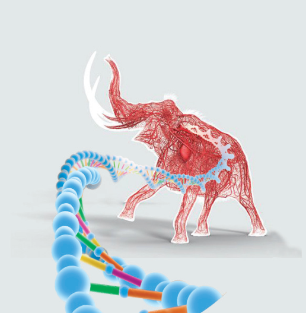
New life for Woolly Mammoth DNA researchers can now re-create the genes of mammoth and
study the proteins they encoded
CHAPTER OUTLINE:
5.1 Gene as the functional unit of inheritance
5.2 In search of the genetic material
5.3 D N A is the genetic material
5.4 Chemistry of nucleic acids
5.5 R N A world
5.6 Properties of genetic material
5.7 Packaging of D N A helix
5.8 D N A Replication
5.9 Transcription
5.10 Genetic code
5.11 t R N A the adapter molecule
5.12 Translation
5.13 Regulation of Gene expression
5.14 Human Genome Project (H G P)
5.15 D N A finger printing technique
LEARNING OBJECTIVES:
➢ Identifies D N A as the genetic material.
➢ Understands the organization of prokaryotic and eukaryotic genome.
➢ Learns to differentiate the nucleotides of D N A and R N A.
➢ Understands gene expression Replication, Transcription and Translation.
➢ Learns about codons and the salient features of genetic code.
➢ Understands the gene regulation through Lac operon model.
➢ Realizes the importance of Human Genome Project.
➢ Illustrates the applications of D N A finger printing technique.
Mendel’s theory dispelled the mystery of why traits seemed to appear and disappear magically from one generation to the next. Mendel’s work reveals the patterns of heredity and reflect the transmission of evolved information from parents to offspring. This information is located on the chromosomes. One of the most advanced realizations of human knowledge was that our unique characteristics are encoded within molecules of D N A. The discovery that D N A is the genetic material left several questions unanswered. How is the information in D N A used? Scientists now know that D N A directs the construction of proteins. Proteins determine the shapes of cells and the rate of chemical reactions, such as those that occur during metabolism and photosynthesis. The hereditary nature of every living organism is defined by its genome, which consists of a long sequence of nucleic acids that provide the information needed to construct the organism. The genome contains the complete set of hereditary information for any organism. The genome may be divided into a number of different nucleic acid molecules. Each of the nucleic acid molecule may contain large number of genes. Each gene is a sequence within the nucleic acid that represents a single protein. In this chapter we will discuss the structure of D N A, its replication, the process of making R N A from D N A (transcription), the genetic code that determines the sequence of amino acid in protein synthesis (translation), regulation of gene expression and the essentials of human genome sequencing.
A gene is a basic physical and functional unit of heredity. The concept of the gene was first explained by Gregor Mendel in 1860’s. He never used the term ‘gene’. He called it ‘factor’. In 1909, the Danish biologist Wilhelm Johannsen, coined the term ‘gene’, that was referred to discrete determiners of inherited characteristics.
According to the classical concept of gene introduced by Sutton in 1902, genes have been defined as discrete particles that follow Mendelian rules of inheritance, occupy a definite locus in the chromosome and are responsible for the expression of specific phenotypic character. They show the following properties:
• Number of genes in each organism is more than the number of chromosomes; hence several genes are located on the same chromosome.
• The genes are arranged in a single linear order like beads on a string.
• Each gene occupies a specific position called locus.
• Genes may exist in several alternate forms called alleles.
• Genes may undergo sudden change in positions and composition called mutations.
• Genes are capable of self-duplication producing their own copies.
BOX ITEM
One gene-one enzyme hypothesis
The experiments of George Beadle and Edward Tatum in the early 1940’s on Neurospora crassa (the red bread mould) led them to propose one geneone enzyme hypothesis, which states that one gene controls the production of one enzyme.
One gene-one polypeptide hypothesis
It was observed that an enzyme may be composed of more than one polypeptide chain and a gene can code for only one polypeptide chain Thus one gene one polypeptide hypothesis states that one gene controls the production of only one polypeptide chain of an enzyme molecule.
As early as 1848, Wilhelm Hofmeister, a German botanist, had observed that cell nuclei organize themselves into small, rod like bodies during mitosis called chromosomes. In 1869, Friedrich Miescher, a Swiss physician, isolated a substance from the cell nuclei and called it as nuclein. It was renamed as nucleic acid by Altman (1889), and is now known as D N A. By 1920, it became clear that chromosomes are made up of proteins and DNA. Many experiments were carried out to study the actual carriers of genetic information. Griffith's experiment proved that DNA is the genetic material which has been dealt in class XI. Bacterial transformation experiments provided the first proof that DNA is the genetic material. However, he could not understand the cause of bacterial transformation, and the biochemical nature of genetic material was not defined from his experiments.
Later, Oswald Avery, Colin Macleod and Maclyn McCarty in 1944 repeated Griffith’s experiments in an ‘in vitro’ system in orderto identify the nature of the transforming substance responsible for converting a nonvirulent strain into virulent strain. They observed that the DNA, RNA and proteins isolated from the heat killed S-strain when added to R-strain changed their surface character from rough to smooth and also made them pathogenic Figure. 5.1 But when the extract was treated with DNase (an enzyme which destroys D N A) the transforming ability was lost. RNase (an enzyme which destroys R N A) and proteases (an enzyme which destroys protein) did not affect the transformation. Digestion with DNase inhibited transformation suggesting that the D N A caused the transformation. These experiments suggested that DNA and not proteins is the genetic material. The phenomenon, by which D N A isolated from one type of cell (S strain), when introduced into another type (R strain), is able to retain some of the properties of the S strain is referred to as transformation
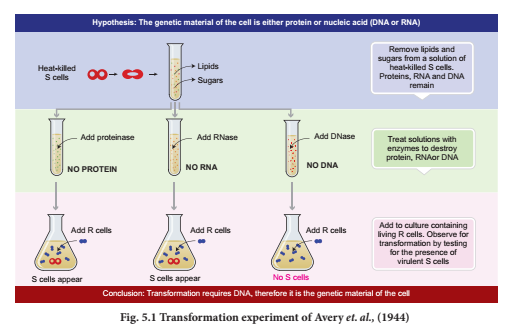
![1865 - Genes are particulate factos. 1871 - Discovery of Nucleic acids. 1903 - Chromosomes are herediatary units 1910 - Genes lie on chromosomes. 1913 - Chromosomes are linear arrays of genes. 1927 - Mutations are physical changes in genes. 1944 - DNA is the genetic material. 1945 - A Gene code for protein. 1951 - First protein sequence. 1953 - DNA is a double helix. 1958 - DNA replicates semiconservatively 1961 - Genetic code is triplet. 1977 - Eukaryotic genes are interrupted 1977 - DNA can be sequenced. 1995 - Bacterial genomes sequenced. 2001 - Human genome sequenced.](images/image-56.png "Major events in the genetic calendar")
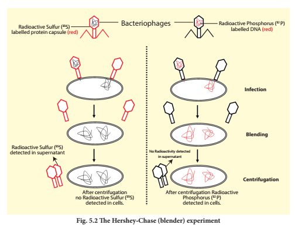
Many biologists despite the earlier experiments of Griffith, Avery and others, still believed that protein, not DNA, was the hereditary material in a cell. As eukaryotic chromosomes consist of roughly equal amounts of protein and DNA, it was said that only a protein had sufficient chemical diversity and complexity to encode the information required for genetic material. In 1952, however, the results of the Hershey-Chase experiment finally provided convincing evidence that DNA is the genetic material.
Alfred Hershey and Martha Chase (1952) conducted experiments on bacteriophages that infect bacteria. Phage T2 is a virus that infects the bacterium Escherichia coli. Whenphages (virus) are added to bacteria, they adsorb to the outer surface, some material enters the bacterium, and then later each bacterium lyses to release a large number of progeny phage. Hershey and Chase wanted to observe whether it was D N A or protein that entered the bacteria. All nucleic acids contain phosphorus, and proteins contain sulphur (in the amino acid cysteine and methionine). Hershey and Chase designed an experiment using radioactive isotopes of Sulphur (35 S) and phosphorus (32 P) to keep separate track of the viral protein and nucleic acids during the infection process. The phages were allowed to infect bacteria in culture medium which containing the radioactive isotopes 35S or 32 P. The bacteriophage that grew in the presence of 35 S had labelled proteins and bacteriophages grown in the presence of 32 P had labelled DNA.The differential labeling thus enabled them to identify DNA and proteins of the phage.
Hershey and Chalse mixed the labeled phages with unlabeled E. coli and allowed bacteriophages to attack and inject their genetic material. Soon after infection (before lysis of bacteria), the bacterial cells were gently agitated in a blender to loosen the adhering phase particles. It was observed that only 32 P was found associated with bacterial cells and 35S was in the surrounding medium and not in the bacterial cells. When phage progeny was studied for radioactivity, it was found that it carried only 32 P and not 35 S Figure 5 2 These results clearly indicate that only DNA and not protein coat entered the bacterial cells. Hershey and Chase thus conclusively proved that it was DNA, not protein, which carries the hereditary information from virus to bacteria.
Having identified the genetic material as the nucleic acid DNA (or RNA), we proceed to examine the chemical structure of these molecules. Generally nucleic acids are a long chain or polymer of repeating subunits called nucleotides. Each nucleotide subunit is composed of three parts: a nitrogenous base, a fivecarbon sugar (pentose) and a phosphate group.
Pentose sugar
There are two types of nucleic acids depending on the type of pentose sugar. Those containing deoxyribose sugar are called Deoxyribo Nucleic Acid (DNA) and those with ribose sugar are known as Ribonucleic Acid (RNA). DNA is found in the nucleus of eukaryotes and nucleoid of prokaryotes. The only difference between these two sugars is that there is one oxygen atom less in deoxyribose.
Nitrogenous bases
The bases are nitrogen containing molecules having the chemical properties of a base (a substance that accepts H+ ion or proton in solution). DNA and RNA both have four bases (two purines and two pyrimidines) in their nucleotide chain. Two of the bases, Adenine (A) and Guanine (G) have double carbon nitrogen ring structures and are called purines. The bases, Thymine (T), Cytosine (C) and Uracil (U) have single ring structure and these are called pyrimidines. Thymine is unique for DNA, while Uracil is unique for RNA.
The phosphate functional group
It is derived from phosphoric acid (H 3 P O 4), has threeactive OH groups of which two are involved in strand formation. The phosphate functional group (P O 4) gives DNA and RNA the property of an acid (a substance that releases an H plus ion or proton in solution) at physiological pH, hence the name nucleic acid. The bonds that are formed from phosphates are esters. The oxygen atom of the phosphate group is negatively charged after the formation of the phosphodiester bonds. This negatively charged phosphate ensures the retention of nucleic acid within the cell or nuclear membrane.
Nucleoside and nucleotide
The nitrogenous base is chemically linked to one molecule of sugar (at the 1 carbon of the sugar) forming a nucleoside. When a phosphate group is attached to the 5 dash carbon of the same sugar, the nucleoside becomes a nucleotide. The nucleotides are joined (polymerized) by condensation reaction to form a polynucleotide chain. The hydroxyl group on the 3 dash carbon of a sugar of one nucleotide forms an ester with the phosphate of another nucleotide. The chemical bonds that link the sugar components of adjacent nucleotides are called phosphodiester bond (5 dash to 3 dash), indicating the polarity of the strand.
The ends of the DNA or RNA are distinct. The two ends are designated by the symbols 5 dash and 3 dash. The symbol 5 dash refers to carbon in the sugar to which a phosphate (P O 4) functional group is attached. The symbol 3 dash refers to carbon in the sugar to which hydroxyl (O H) functional group is attached. In RNA, every nucleotide residue has an additional hydroxyl group at 2 dash position in the ribose. Understanding the 5 dash 3 dash direction of a nucleic acid is critical for understanding the aspects of replication and transcription.
Based on the X ray diffraction analysis of Maurice Wilkins and Rosalind Franklin, the double helix model for DNA was proposed by James Watson and Francis Crick in 1953. The highlight was the base pairing between the two strands of the polynucleotide chain. This proposition was based on the observations of Erwin Chargaff that Adenine pairs with Thymine (A double bond T) with two hydrogen bonds and Guanine pairs with Cytosine (G triple bond C) with three hydrogen bonds. The ratios between Adenine with Thymine and Guanine with Cytosine are constant and equal. The base pairing confers a unique property to the polynucleotide chain. They are said to be complementary to each other, that is, if the sequence of bases in one strand (template) is known, then the sequence in the other strand can be predicted. The salient features of DNA structure has already been dealt in class XI.
A typical cell contains about ten times as much RNA as DNA. The high RNA content is mainly due to the variety of roles played by RNA in the cell. Fraenkel-Conrat and Singer (1957) first demonstrated that RNA is the genetic material in RNA containing viruses like TMV (Tobacco Mosaic Virus) and they separated RNA from the protein of TMV viruses. Three molecular biologists in the early 1980’s (Leslie Orgel, Francis Brick and Carl Woese) independently proposed the ‘RNA world’ as the first stage in the evolution of life, a stage when RNA catalysed all molecules necessary for survival and replication. The term ‘RNA world’ first used by Walter Gilbert in 1986, hypothesizes RNA as the first genetic material on earth. There is now enough evidence to suggest that essential life processes (such as metabolism, translation, splicing etcetera.,) evolved around RNA. RNA has the ability to act as both genetic material and catalyst. There are several biochemical reactions in living systems that are catalysed by RNA. This catalytic RNA is known as ribozyme. But, RNA being a catalyst was reactive and hence unstable. This led to evolution of a more stable form of DNA, with certain chemical modifications. Since DNA is a double stranded molecule having complementary strand, it has resisted changes by evolving a process of repair. Some RNA molecules function as gene regulators by binding to DNA and affect gene expression. Some viruses use RNA as the genetic material. Andrew Fire and Craig Mellow (recipients of Nobel Prize in 2006) were of the opinion that RNA is an active ingredient in the chemistry of life. The types of RNA and their role have been discussed in class XI.
The experiment by Hershey and Chase clearly indicates that it is DNA that acts as a genetic material. However, in some viruses like Tobacco mosaic virus (TMV), bacteriophage theta B, RNA acts as the genetic material. A molecule that can act as a genetic material should have the following properties:
• Self Replication: It should be able to replicate. According to the rule of base pairing and complementarity, both nucleic acids (DNA and RNA) have the ability to direct duplications. Proteins fail to fulfill this criterion
• Stability: It should be stable structurally and chemically. The genetic material should be stable enough not to change with different stages of life cycle, age or with change in physiology of the organism. Stability as one of property of genetic material was clearly evident in Griffith’s transforming principle. Heat which killed the bacteria did not destroy some of the properties of genetic material. In DNA the two strands being complementary, if separated (denatured) by heating can come together (renaturation) when appropriate condition is provided. Further 2dash OH group present at every nucleotide in RNA is a reactive group that makes RNA liable and easily degradable. RNA is also known to be catalytic and reactive. Hence, DNA is chemically more stable and chemically less reactive when compared to RNA. Presence of thymine instead of uracil in DNA confers additional stability to DNA
• Information storage: It should be able to express itself in the form of ‘Mendelian characters’. RNA can directly code for protein synthesis and can easily express the characters. DNA, however depends on RNA for synthesis of proteins. Both DNA and RNA can act as a genetic material, but DNA being more stable stores the genetic information and RNA transfers the genetic information
• Variation through mutation: It should be able to mutate. Both DNA and RNA are able to mutate. RNA being unstable, mutates at a faster rate Thus viruses having RNA genome with shorter life span can mutate and evolve faster.
The above discussion indicates that both RNA and DNA can function as a genetic material. DNA is more stable, and is preferred for storage of genetic information.
The distance between two consecutive base pairs is 0.34 nano metre (0.34×10 power minus 9 metre) of the DNA double helix in a typical mammalian cell. When the total number of base pairs is multiplied with the distance between two consecutive base pairs (6.6 × 10 power 9 × 0.34 ×10 power -9 mega/base pair), the length of DNA double helix is approximately 2.2 metre. (The total length of the double helical DNA equal to total number of base pairs × distance between two consecutive base pairs). If the length of Escherichia coli DNA is 1.36 milli metre, the number of base pairs in E. coli is 4 ×106 bp (1.36 × 103 metre/0.34 ×10 power -9). The length of the DNA double helix is far greater than the dimension of a typical mammalian nucleus (approximately 10 power -6 m). How is such along DNA polymer packaged in a cell?
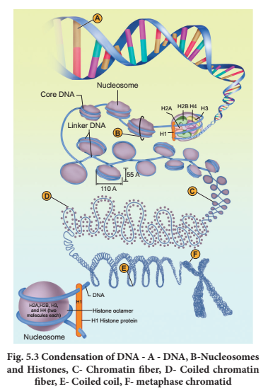
Chromosomes are carriers of genes which are responsible for various characters from generation to generation. Du Praw (1965) proposed a single stranded model (unineme), as a longcoiled molecule which is associated with histone proteins in eukaryotes. Plants and animals have more DNA than bacteria and must fold this DNA to fit into the cell nucleus. In prokaryotes such as E. coli though they do not have defined nucleus, the DNA is not scattered throughout the cell. DNA (being negatively charged) is held with some proteins (that have positive charges) in a region called the nucleoid. The DNA as a nucleoid is organized into large loops held by protein. DNA of prokaryotes is almost circular and lacks chromatin organization, hence termed genophore
In eukaryotes, this organization is much more complex. Chromatin is formed by a series of repeating units called nucleosomes. Kornberg proposed a model for the nucleosome, in which 2 molecules of the four histone proteins H2A, H2B, H3 and H4 are organized to form a unit of eight molecules called histone octamere. The negatively charged DNA is wrapped around the positively charged histone octamere to form a structure called nucleosome. A typical nucleosome contains 200 bp of DNA helix. The histone octameres are in close contact and DNA is coiled on the outside of nucleosome. Neighbouring nucleosomes are connected by linker DNA (H1) that is exposed to enzymes. The DNA makes two complete turns around the histone octameres and the two turns are sealed off by an H1 molecule. Chromatin lacking H1 has a beads-on-a-string appearance in which DNA enters and leaves the nucleosomes at random places. H1 of one nucleosome can interact with H1 of the neighbouring nucleosomes resulting in the further folding of the fibre. The chromatin fiber in interphase nuclei and mitotic chromosomes have a diameter that vary between 200-300 nm and represents inactive chromatin. 30 nm fibre arises from the folding of nucleosome, chains into a solenoid structure having six nucleosomes per turn. This structure is stabilized by interaction between different H1 molecules. DNA is a solenoid and packed about 40 folds. The hierarchical nature of chromosome structure is illustrated in Figure 5.3. Additional set of proteins are required for packing of chromatin at higher level and are referred to as non-histone chromosomal proteins (NHC). In a typical nucleus, some regions of chromatin are loosely packed (lightly stained) and are referred to as euchromatin. The chromatin that is tightly packed (stained darkly) is called heterochromatin. Euchromatin is transcriptionally active and heterochromatin is transcriptionally inactive.
Replication of DNA takes place during the S phase of cell cycle. During replication, each DNA molecule gives rise to two DNA strands, identical to each other as well as to the parent strand. Three hypotheses of DNA replication have been proposed. They are conservative replication, dispersive replication, and semiconservative replication.
In conservative replication, the original double helix serves as a template. The original molecule is preserved intact and an entirely new double stranded molecule is synthesized. In dispersive replication, the original molecule is broken into fragments and each fragment serves as a template for the synthesis of complementary fragments Finally two new molecules are formed which consist of both old and new fragments.
Semi-conservative replication was proposed by Watson and Crick in 1953. This mechanism of replication is based on the DNA model. They suggested that the two polynucleotide strands of DNA molecule unwind and start separating at one end. During this process, covalent hydrogen bonds are broken. The separated single strand then acts as template for the synthesis of a new strand. Subsequently, each daughter double helix carries one polynucleotide strand from the parent molecule that acts as a template and the other strand is newly synthesized and complementary to the parent strand Figure 5 4
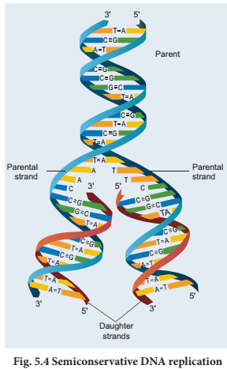
The mode of DNA replication was determined in 1958 by Meselson and Stahl. They designed an experiment to distinguish between semi conservative, conservative and dispersive replications. In their experiment, they grew two cultures of Escherichia coli for many generations in separate media. The ‘heavy’ culture was grown in a medium in which the nitrogen source (N H 4 C l) contained the heavy isotope 15 N and the ‘light’ culture was grown in a medium in which the nitrogen source contained light isotope 14 N for many generations. At the end of growth, they observed that the bacterial DNA in the heavy culture contained only 15 N and in the light culture only 14 N. The heavy DNA could be distinguished from light DNA (15 N from 14 N) with a technique called Cesium Chloride (Cs C l) density gradient centrifugation. In this process, heavy and light DNA extracted from cells in the two cultures settled into two distinct and separate bands (hybrid DNA) Figure. 5.5
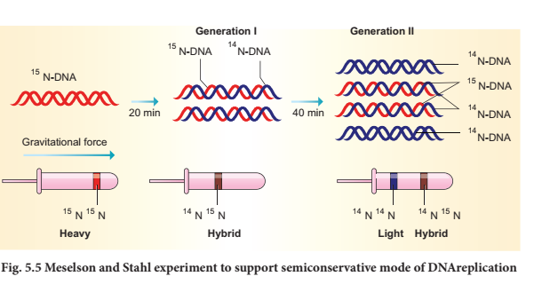
The heavy culture (15 N) was then transferred into a medium that had only N H 4 C l, and took samples at various definite time intervals (20 minutes duration). After the first replication, they extracted DNA and subjected it to density gradient centrifugation. The DNA settled into a band that was intermediate in position between the previously determined heavy and light bands. After the second replication (40 minutes duration), they again extracted DNA samples, and this time found the DNA settling into two bands, one at the light band position and one at intermediate position. These results confirm Watson and Crick’s semi conservative replication hypothesis.
In prokaryotes, replication process requires three types of DNA polymerases (DNA polymerase 1, 2, and 3). DNA polymerase III is the main enzyme involved in DNA replication. DNA polymerase 1 (also known as Kornberg enzyme) and DNA polymerase 2 are involved in DNA repair mechanism. Eukaryotes have five types of DNA polymerases that catalyses the polymerization of nucleotides at the 3’ hydroxyl of the new strand within a short period of time Echerichia coli that has 4.6 × 10 power 6 base pair completes its replication process within 18 minutes; that means the average rate of polymerization has to be approximately 2000 base pair per second Replication takes place faster at the same time accurately. Any error will lead to mutation However replication errors are corrected by repair enzymes such as nucleases. Deoxy nucleotide triphosphate acts as substrate and also provides energy for polymerization reaction.
Replication begins at the initiation site called the site of ‘origin of replication’ (ori). In prokaryotes, there is only one origin of replication, whereas in eukaryotes with giant DNA molecules, there can be several origins of replication (replicons). Since the two strands of DNA cannot be separated throughout at a time (due to large requirement of energy) the replication occurs within a small opening of the DNA helix called as replication fork. Unwinding of the DNA strand is carried out by DNA helicase. Thus, in one strand (template strand with polarity 3 dash to 5 dash) the replication is continuous and is known as the leading strand while in the other strand (coding strand with polarity 5 dash to 3 dash) replication is discontinuous, known as the lagging strand Figure 5.6 The discontinuously synthesized fragments of the lagging strand (called the Okazaki fragments) are joined by the enzyme DNA ligase.
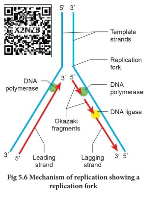
As they move away in both directions, newly synthesized complementary nucleotides are paired with the existing nucleotides on the parent strand and covalently bonded together by DNA polymerase. Formation of new strand requires a primer (a short stretch of RNA) for initiation. The primer produces a 3 dash hydroxyl end on the sequence of ribonucleotides, to which deoxy ribonucleotides are added. The RNA primer is ultimately removed leaving a gap in the newly synthesized DNA strand. It is removed from 5 dash end one by one by the exonuclease activity of DNA polymerase. Finally, when all the nucleotides are in position, gaps are sealed by the enzyme DNA ligase.
At the point of origin of replication, the helicases and topoisomerases (DNA gyrase) unwind and pull apart the strands, forming a Y Shaped structure called the replication fork. There are two replication forks at each origin. The two strands of a DNA helix have an antiparallel orientation. The enzyme DNA polymerase can only catalyse the addition of a nucleotide to the new strands in the 5 dash to 3 dash direction, as it can only add nucleotides to the 3 dash carbon position.
Francis Crick proposed the Central dogma of protein synthesis in molecular biology states that genetic information flows as follows:
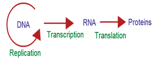
The process of copying genetic information from one strand of DNA into RNA is termed transcription. This process takes place in presence of DNA dependent RNA polymerase. In some retroviruses that contain RNA as the genetic material (example, H I V), the flow of information is reversed. RNA synthesizes DNA by reverse transcription, then transcribed into m RNA by transcription and then into proteins by translation.
For a cell to operate, its genes must be expressed. This means that the gene products, whether proteins or RNA molecules must be made. The RNA that carries genetic information encoding a protein from genes into the cell is known as messenger RNA (m RNA). For a gene to be transcribed, the DNA which is a double helix must be pulled apart temporarily, and RNA is synthesized by RNA polymerase. This enzyme binds to DNA at the start of a gene and opens the double helix. Finally, RNA molecule is synthesized. The nucleotide sequence in the RNA is complementary to the DNA template strand from which it is synthesized.
Both the strands of DNA are not copied during transcription for two reasons. 1. If both the strands act as a template, they would code for RNA with different sequences. This in turn would code for proteins with different amino acid sequences. This would result in one segment of DNA coding for two different proteins, hence complicate the genetic information transfer machinery. 2. If two RNA molecules were produced simultaneously, double stranded RNA complementary to each other would be formed. This would prevent RNA from being translated into proteins.
A transcriptional unit in DNA is defined by three regions, a promoter, the structural gene and a terminator. The promoter is located towards the 5 dash end of the coding strand. It is a DNA sequence that provides binding site for RNA polymerase. The presence of promoter in a transcription unit, defines the template and coding strands. The terminator region located towards the 3 dash end of the coding strand contains a DNA sequence that causes the RNA polymerase to stop transcribing. In eukaryotes the promoter has A T rich regions called TATA box (Goldberg-Hogness box) and in prokaryotes this region is called Pribnow box. Besides promoter, eukaryotes also require an enhancer.
The two strands of the DNA in the structural gene of a transcription unit have opposite polarity. DNA dependent RNA polymerase catalyses the polymerization in only one direction, the strand that has the polarity 3 dash to 5 dash acts as a template, and is called the template strand. The other strand which has the polarity 5 dash to 3 dash has a sequence same as RNA (except thymine instead of uracil) and is displaced during transcription. This strand is called coding strand Figure 5 7.
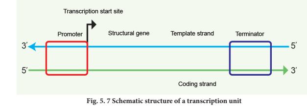
The structural gene may be monocistronic (eukaryotes) or polycistronic (prokaryotes). In eukaryotes, each gene transcribes a single m RNA and encodes information for only a single protein and is called monocistronic m RNA. In prokaryotes, clusters of related genes, known as operon, often found next to each other on the chromosome are transcribed together to give a single m RNA and hence are polycistronic.
Before starting transcription, RNA polymerase binds to the promoter, a recognition sequence in front of the gene. Bacterial (prokaryotic) RNA polymerase consists of the core enzyme and the sigma subunit. The core enzyme (2α, β, β1 and ω) is responsible for RNA synthesis whereas a sigma subunit is responsible for recognition of the promoter. Promoter sequences vary in different organisms. RNA polymerase opens up the DNA to form the transcription bubble. The core enzyme moves ahead, manufacturing RNA leaving the sigma subunit behind at the promoter region. The end of a gene is marked by a terminator sequence that forms a hair pin structure in the RNA. The sub-class of terminators require a recognition protein, known as rho (ρ), to function.
In prokaryotes, there are three major types of RNAs: m RNA, t RNA, and r RNA. All three RNAs are needed to synthesize a protein in a cell. The m RNA provides the template, tRNA brings amino acids and reads the genetic code, and r RNAs play structural and catalytic role during translation. There is a single DNA dependent RNA polymerase that catalyses transcription of all types of RNA. It binds to the promoter and initiates transcription (Initiation). The polymerases binding sites are called promoters. It uses nucleoside triphosphate as substrate and polymerases in a template depended fashion following the rule of complementarity. After the initiation of transcription, the polymerase continues to elongate the RNA, adding one nucleotide after another to the growing RNA chain. Only a short stretch of RNA remains bound to the enzyme, when the polymerase reaches a terminator at the end of a gene, the nascent RNA falls off, so also the RNA polymerase.
The question is, how the RNA polymerases are able to catalyse the three steps initiation, elongation and termination? The RNA polymerase is only capable of catalyzing the process of elongation. The RNA polymerase associates transiently with initiation factor sigma (σ) and termination factor rho (r) to initiate and terminate the transcription, respectively. Association of RNA with these factors instructs the RNA polymerase either to initiate or terminate the process of transcription Figure 5 8.
In bacteria, since the m RNA does not require any processing to become active and also since transcription and translation take place simultaneously in the same compartment (since there is no separation of cytosol and nucleus in bacteria), many times the translation can begin much before the m RNA is fully transcribed. This is because the genetic material is not separated from other cell organelles by a nuclear membrane consequently; transcription and translation can be coupled in bacteria.
In Eukaryotes, there are at least three RNA polymerases in the nucleus (in addition to RNA polymerase found in the organelles). There is a clear division of labour. The RNA polymerase 1 transcribes r RNAs (28 S, 18 S and 5.8 S), whereas the RNA polymerase 3 is responsible for transcription of t RNA, 5S r RNA and s n RNA. The RNA polymerase 2 transcribes precursor of m RNA, the h n RNA (heterogenous nuclear RNA). In eukaryotes, the monocistronic structural genes have interrupted coding sequences known as exons (expressed sequences) and noncoding sequences called introns (intervening sequences). The introns are removed by a process called splicing. h n RNA undergoes additional processing called capping and tailing. In capping an unusual nucleotide, methyl guanosine triphosphate is added at the 5' end, whereas adenylate residues (200-300) (Poly A) are added at the 3’ end in tailing Figure 5.9. Thereafter, this processed h n RNA, now called m RNA is transported out of the nucleus for translation.
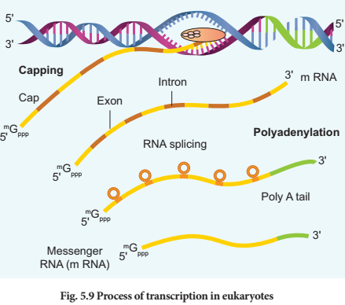
The split gene feature of eukaryotic genes is almost entirely absent in prokaryotes. Originally each exon may have coded for a single polypeptide chain with a specific function. Since exon arrangement and intron removal are flexible, the exon coding for these polypeptide subunits act as domains combining in various ways to form new genes. Single genes can produce different functional proteins by arranging their exons in several different ways through alternate splicing patterns, a mechanism known to play an important role in generating both protein and functional diversity in animals. Introns would have arosen before or after the evolution of eukaryotic gene. If introns arose late how did they enter eukaryotic gene? Introns are mobile DNA sequences that can splice themselves out of, as well as into, specific ‘target sites’ acting like mobile transposon-like elements (that mediate transfer of genes between organisms Horizontal Gene Transfer HGT). HGT occurs between lineages of prokaryotic cells, or from prokaryotic to eukaryotic cells and between eukaryotic cells. HGT is now hypothesized to have played a major role in the evolution of life on earth.
DNA is the genetic material that carries genetic information in a cell and from generation to generation. At this stage, an attempt will be made to determine in what manner the genetic information exists in DNA molecule? Are they written in coded language on a DNA molecule? If they occur in the language of codes what is the nature of genetic code? The translation of proteins follows the triplet rule; a sequence of three m RNA base (a codon) designates one of the 20 different kinds of amino acids used in protein synthesis.
Genetic code is the sequence relationship between nucleotide in genes (or m RNA) and the amino acids in the proteins they encode. There are 64 possible triplets, and 61 of them are used to represent amino acids. The remaining three triplet codons are termination signals for polypeptide chains. Since there are only 20 amino acids involved in protein synthesis, most of them are encoded by more than one triplet. Two things make this multiple (degenerate) coding possible. First, there is more than one t RNA for most amino acids. Each t RNA has a different anticodon. Second, this pairing is highly specific for the first two portions on the codon, permitting Watson and Crick base pairs (A U and G C) to be formed. But at the third position there is a great deal of flexibility as to which base pairs are acceptable. Most part of the genetic code is universal, being the same in prokaryotes and eukaryotes.
The order of base pairs along DNA molecule controls the kind and order of amino acids found in the proteins of an organism. This specific order of base pairs is called genetic code, the blue print establishing the kinds of proteins to be synthesized which makes an organism unique.
Marshall Nirenberg, Severo Ochoa (enzyme polynucleotide phosphorylase called Ochoa’s enzyme), Hargobind Khorana, Francis Crick and many others have contributed significantly to decipher the genetic code. The order in which bases are arranged in mRNA decides the order in which amino acids are arranged in proteins Finally a checker board for genetic code was prepared (table 5.1).
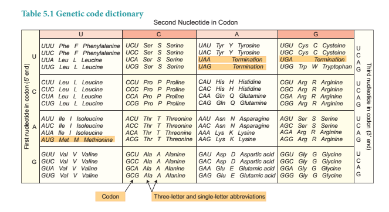
The salient features of genetic code are as follows:
• The genetic codon is a triplet code and 61 codons code for amino acids and 3 codons do not code for any amino acid and function as stop codon (Termination).
• The genetic code is universal. It means that all known living systems use nucleic acids and the same three base codons (triplet codon) direct the synthesis of protein from amino acids. For example, the m RNA (U U U) codon codes for phenylalanine in all cells of all organisms. Some exceptions are reported in prokaryotic, mitochondrial and chloroplast genomes However similarities are more common than differences.
• A non-overlapping codon means that the same letter is not used for two different codons. For instance, the nucleotide sequence G U U G U C represents only two codons.
• It is comma less, which means that the message would be read directly from one end to the other that is no punctuation are needed between two codes.
• A degenerate code means that more than one triplet codon could code for a specific amino acid. For example, codons G U U, G U C, G U A and G U G code for valine.
• Non-ambiguous code means that one codon will code for one amino acid.
• The code is always read in a fixed direction that is from 5 dash to 3 dash direction called polarity.
• A U G has dual functions. It acts as a initiator codon and also codes for the amino acid methionine.
• U A A, U A G and U G A) codons are designated as termination (stop) codons and also are known as “non sense” codons.
Comparative studies of mutations (sudden change in a gene) and corresponding alteration in amino acid sequence of specific protein have confirmed the validity of the genetic code. The relationship between genes and DNA are best understood by mutation studies. The simplest type of mutation at the molecular level is a change in nucleotide that substitutes one base for another. Such changes are known as base substitutions which may occur spontaneously or due to the action of mutagens. A well studied example is sickle cell anaemia in humans which results from a point mutation of an allele of β haemoglobin gene (β Hb). A haemoglobin molecule consists of four polypeptide chains of two types, two α chains and two β chains. Each chain has a heme group on its surface. The heme groups are involved in the binding of oxygen. The human blood disease, sickle cell anaemia is due to abnormal haemoglobin. This abnormality in haemoglobin is due to a single base substitution at the sixth codon of the beta globin gene from G A G to G T G in β chain of haemoglobin. It results in a change of amino acid glutamic acid to valine at the 6th position of the β chain. This is the classical example of point mutation that results in the change of amino acid residue glutamic acid to valine Figure 5.10 The mutant haemoglobin undergoes polymerisation under oxygen tension causing the change in the shape of the RBC from biconcave to a sickle shaped structure.
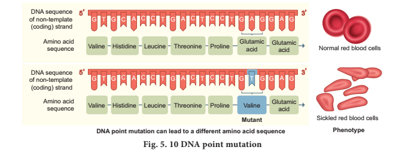
BOX ITEM
Wobble Hypothesis
Wobble Hypothesis It is a hypothesis proposed by Crick (1966) which states that t RNA anticodon has the ability to wobble at its 5’ end by pairing with even non complementary base of m RNA codon. According to this hypothesis, in codon anticodon pairing the third base may not be complementary. The third base of the codon is called wobble base and this position is called wobble position. The actual base pairing occurs at first two positions only. The importance of Wobbling hypothesis is that it reduces the number of t RNAs required for polypeptide synthesis and it overcomes the effect of code degeneracy.
In the above example though the codon and the anti codon do not match perfectly, yet the required amino acid is brought perfectly. This enables the economy of t RNA, G U U, G U C, G U A and G U G code for the amino acid Valine.
The effect of point mutation can be understood by the following example.
A B C D E F G H I J K L
If we insert a letter O between D E F and G H I the arrangement would be
A B C D E F O G H I J K L
If we insert O Q at the same place the arrangement would be
A B C D E F O Q G H I J K L
The above information shows that insertion or deletion of one or two bases, changes the reading frame from the point of insertions or deletions. Such mutations are referred to as frame shift insertion or deletion mutations. This forms the genetic basis of proof that codon is a triplet and is read in a continuous manner.
The transfer RNA, (t RNA) molecule of a cell acts as a vehicle that picks up the amino acids scattered through the cytoplasm and also reads specific codes of m RNA molecules. Hence it is called an adapter molecule. This term was postulated by Francis Crick
The two dimensional clover leaf model of tRNA was proposed by Robert Holley. The secondary structure of t RNA depicted in Figure 5.11 looks like a clover leaf. In actual structure, the t RNA is a compact molecule which looks like an inverted L. The clover leaf model of t RNA shows the presence of three arms namely DHU arm, middle arm and TΨC arm. These arms have loops such as amino acyl binding loop, anticodon loop and ribosomal binding loop at their ends In addition it also shows a small lump called variable loop or extra arm. The amino acid is attached to one end (amino acid acceptor end) and the other end consists of three anticodon nucleotides. The anticodon pairs with a codon in m RNA ensuring that the correct amino acid is incorporated into the growing polypeptide chain. Four different regions of double-stranded RNA are formed during the folding process. Modified bases are especially common in t RNA. Wobbling between anticodon and codon allows some t RNA molecules to read more than one codon.
The process of addition of amino acid to t RNA is known as aminoacylation or charging and the resultant product is called aminoacyl t RNA (charged t RNA). Without aminoacylation t RNA is known as uncharged t RNA Figure 5.12 If two such t RNAs are brought together peptide bond formation is favoured energetically. Numbers of amino acids are joined by peptide bonds to form a polypeptide chain. This aminoacylation is catalyzed by an enzyme aminoacyl t RNA synthetase. This is an endothermic reaction and is associated with ATP hydrolysis. 20 different aminoacyl t RNA synthetases are known. The power to recognize codon on the m RNA lies in the t RNA and not in the attached amino acid molecule.
Translation refers to the process of polymerization of amino acids to form polypeptide chain. The decoding process is carried out by ribosomes that bind m RNA and charged t RNA molecules. The m RNA is translated, starting at the 5’ end. After binding to m RNA, the ribosomes move along it, adding new amino acids to the growing polypeptide chain each time it reads a codon. Each codon is read by an anticodon on the corresponding t RNA. Hence the order and sequence of amino acids are defined by the sequence of bases in the mRNA.
The cellular factory responsible for synthesizing protein is the ribosome. The ribosome consists of structural RNAs and about 80 different proteins. In inactive state, it exists as two subunits; large subunit and small subunit. When the subunit encounters an m RNA, the process of translation of the mRNA to protein begins. The prokaryotic ribosome (70 S) consists of two subunits, the larger subunit (50 S) and smaller subunit (30 S). The ribosomes of eukaryotes (80 S) are larger, consisting of 60 S and 40 S sub units. ‘S’ denotes the sedimentation coefficient which is expressed as Svedberg unit (S).
One of the alternative ways of dividing up a sequence of bases in DNA or RNA into codons is called reading frame. Any sequence of DNA or RNA, beginning with a start codon and which can be translated into a protein is known as an Open Reading Frame (O R F). A translational unit in m RNA is the sequence of RNA that is flanked by the start codon and the stop codon and codes for polypeptides. m RNA also have some additional sequences that are not translated and are referred to as Untranslated Regions (U T R). UTRs are present at both 5 dash end (before start codon) and at 3 dash end (after stop codon). The start codon (A U G) begins the coding sequence and is read by a special t RNA that carries methionine (met). The initiator t RNA charged with methionine binds to the A U G start codon. In prokaryotes, N formyl methionine (f met) is attached to the initiator t RNA whereas in eukaryotes unmodified methionine is used. The 5 dash end of the m RNA of prokaryotes has a special sequence which precedes the initial AUG start codon of mRNA. This ribosome binding site is called the Shine Dalgarno sequence or S D sequence. This sequences base pairs with a region of the 16 S r RNA of the small ribosomal subunit facilitating initiation. The subunits of the ribosomes (30 S and 50 S) are usually dissociated from each other when not involved in translation Figure. 5.13a
Initiation of translation in Echerichia coli begins with the formation of an initiation complex, consisting of the 30 S subunits of the ribosome, a messenger RNA and the charged N formyl methionine t RNA (f met t RNA f met), three proteinaceous initiation factors (Initiation Factors 1, Initiation Factors 2 and Initiation Factors 3), G T P (Guanine Tri Phosphate) and Mg 2+.
The components that form the initiation complex interact in a series of steps. Initiation Factors 3 binds to the 30 S and allows the 30 S subunit to bind to m RNA. Another initiation protein (Initiation Factors 2) then enhances the binding of charged formyl methionine t RNA to the small subunit in response to the A U G triplet. This step ‘sets’ the reading frame so that all subsequent groups of three ribonucleotides are translated accurately.
The assembly of ribosomal subunits, m RNA and t RNA represent the initiation complex. Once initiation complex has been assembled, Initiation Factors 3 is released and allows the initiation complex to combine with the 50 S ribosomal subunit to form the complete ribosome (70 S). In this process a molecule of G T P is hydrolyzed providing the required energy and the initiation factors (Initiation Factors 1 and Initiation Factors 2 and G D P) are released Figure 5.13 b.
Elongation is the next phase of translation. Once both subunits of the ribosomes are assembled with the m RNA, binding sites for two charged t RNA molecules are formed. The sites in the ribosome are referred to as the aminoacyl site (A site), the peptidyl site (P site) and the exit site (E site). The charged initiator t RNA binds to the P site. The next step in prokaryotic translation is to position the second t RNA at the ‘A’ site of the ribosome to form hydrogen bonds between its anticodon and the second codon on the m RNA (step 1). This step requires the correct transfer RNA, another G T P and two proteins called elongation factors (E F Ts and E F Tu).
Once the charged t RNA molecule is positioned at the A site, the enzyme peptidyl transferase catalyses the formation of peptide bonds that link the two amino acids together (step 2). At the same time, the covalent bond between the amino acid and t RNA occupying the P site is hydrolyzed (broken). The product of this reaction is a dipeptide which is attached to the 3' end of t RNA still residing in the A site. For elongation to be repeated, the t RNA attached to the P site, which is now uncharged is released from the large subunit. The uncharged t RNA moves through the ‘E’ site on the ribosome.
The entire mRNA-tRNA-aa1-aa2 complex shifts in the direction of the ‘P’ site by a distanceof three nucleotides (step 3). This step requires several elongation factors (EFs) and the energy derived from hydrolysis of GTP. This results in the third triplet of mRNA to accept another charged tRNA into the A site (step 4). The sequence of elongation is repeated over and over (step 5 and step 6). An additional amino acid is added to the growing polypeptide, each time mRNA advances through the ribosome. Once a polypeptide chain is assembled, it emerges out from the base of the large subunit (Figure 5.13 c).
![1. Second charged tRNA has entered A site, facilitated by EF - Tu; first elongation step commences (Tu - Thermo unstable) 2. Dipeptide bond forms; uncharged tRNA moves to E site and then out of ribosomes. 3. mRNA has shifted by 3 bases; EF- G facilitates the transiocation step; first elongation step completed. 4. Third charged tRNA has entered A site., facilitated by EF- Tu second elongation step begins. 5.Tripeptide formed second elongation step completed; uncharged tRNA moves to E Site. 6. Polypeptede chain synthesized and exiting ribosome.](images/image-71.png "Fig. 5.13 c - Elongation of the growing polypeptide chain during translation.")
Termination is the final phase of translation. Termination of protein synthesis occurs when one of the three stop codons appears in the ‘A’ site of the ribosome. The terminal codon signals the action of GTP dependent release factor, which cleaves the polypeptide chain from the terminal t RNA releasing it from the translational complex (step 1). The t RNA is then released from the ribosome, which then dissociates into its subunits (step 2) Figure 5.13 d
We have previously established how DNA is organized into genes, how genes store genetic information, and how this information is expressed. We now consider the most fundamental issues in molecular genetics. How is genetic expression regulated? Evidence in support of the idea that genes can be turned on and off is very convincing. Regulation of gene expression has been extensively studied in prokaryotes, especially in Echerichia. coli. Gene expression can be controlled or regulated at transcriptional or post transcriptional or translational level. Here, we are going to discuss regulation of gene expression at transcriptional level. Usually, small extracellular or intracellular metabolites trigger initiation or inhibition of gene expression. The clusters of gene with related functions are called operons. They usually transcribe single m RNA molecules. In Echerichia coli, nearly 260 genes are grouped into 75 different operons.
BOX ITEM
Many antibiotics do not allow pathogenic bacteria to flourish in animal host because they inhibit one or the other stage of bacterial protein synthesis. The antibiotic tetracycline inhibits binding between aminoacyl t RNA and m RNA. Neomycin inhibits the interaction between t RNA and m RNA. Erythromycin inhibits the translocation of m RNA along the ribosome. Streptomycin inhibits the initiation of translation and causes misreading. Chloramphenicol inhibits peptidyl transferase and formation of peptide bonds.
Structure of the operon: Each operon is a unit of gene expression and regulation and consists of one or more structural genes and an adjacent operator gene that controls transcriptional activity of the structural gene.
1) The structural gene codes for proteins, r RNA and t RNA required by the cell.
2) Promoters are the signal sequences in DNA that initiate RNA synthesis. RNA polymerase binds to the promoter prior to the initiation of transcription.
3) The operators are present between the promoters and structural genes. The repressor protein binds to the operator region of the operon.
The Lac (Lactose) operon:
The metabolism of lactose in E coli requires three enzymes permease, β galactosidase (β gal) and transacetylase. The enzyme permease is needed for entry oflactose into the cell, β galactosidase brings about hydrolysis of lactose to glucose and galactose, while transacetylase transfers acetyl group from acetyl Co A to β-galactosidase.
The lac operon consists of one regulator gene (“i’ gene refers to inhibitor) promoter sites (p), and operator site (o). Besides these, it has three structural genes namely lac z, y and lac a. The lac ‘z’ gene codes for β-galactosidase, lac ‘y’ gene codes for permease and ‘a’ genecodes for transacetylase.
Jacob and Monod proposed the classical model of Lac operon to explain gene expression and regulation in E coli. In lac operon, a polycistronic structural gene is regulated by a common promoter and regulatory gene. When the cell is using its normal energy source as glucose, the ‘i’ gene transcribes a repressor mRNA and after its translation, a repressor protein is produced. It binds to the operator region of the operon and prevents transcription, as a result, β-galactosidase is not produced. In the absence of glucose, if lactose is available as an energy source for the bacteria then lactose enters the cell as a result of permease enzyme. Lactose acts as an inducer and interacts with the repressor to inactivate it.
The repressor protein binds to the operator of the operon and prevents RNA polymerase from transcribing the operon. In the presence of inducer, such as lactose or allolactose, the repressor is inactivated by interaction with the inducer. This allows RNA polymerase to bind to the promotor site and transcribe the operon to produce lac mRNA which enables formation of all the required enzymes needed for lactose metabolism Figure 5.14. This regulation of lac operon by the repressor is an example of negative control of transcription initiation. Lac operon is also under the control of positive regulation as well.
The international human genome project was launched in the year 1990. It was a mega project and took 13 years to complete. The human genome is about 25 times larger than the genome of any organism sequenced to date and is the first vertebrate genome to be completed. Human genome is said to have approximately 3 × 10 power 9 base pair. H G P was closely associated with the rapid development of a new area in biology called bioinformatics.
The main goals of Human Genome Project are as follows:
• Identify all the genes (approximately 30000) in human DNA.
• Determine the sequence of the three billion chemical base pairs that makeup the human DNA.
• To store this information in databases.
• Improve tools for data analysis.
• Transfer related technologies to other sectors, such as industries.
• Address the ethical, legal and social issues (E L S I) that may arise from the project.
The methodologies of the Human Genome Project involved two major approaches. One approach was focused on identifying all the genes that are expressed as RNA (ESTS Expressed Sequence Tags). The other approach was sequence annotation. Here, sequencing the whole set of genomes was taken, that contains all the coding and non-coding sequences and later assigning different regions in the sequences with functions. For sequencing, the total DNA from a cell is isolated and converted into random fragments of relatively smaller sizes and cloned in suitable hosts using specialized vectors. This cloning results in amplification of pieces of DNA fragments so that it could subsequently be sequenced with ease. Bacteria and yeast are two commonly used hosts and these vectors are called as BAC (Bacterial Artificial Chromosomes) and YAC (Yeast Artificial Chromosomes). The fragments are sequenced using automated DNA sequencers (developed by Frederick Sanger). The sequences are then arranged based on few overlapping regions, using specialized computerbased programs. These sequences were subsequently annotated and are assigned to each chromosome. The genetic and physical maps on the genome are assigned using information on polymorphism of restriction endonuclease recognition sites and some repetitive DNA sequences, called microsatellites. The latest method of sequencing even longer fragments is by a method called Shotgun sequencing using super computers, which has replaced the traditional sequencing methods.
• The human genome contains 3 billion nucleotide bases.
• An average gene consists of 3000 bases, the largest known human gene being dystrophin with 2.4 million bases.
• The chromosomal organization of human genes shows diversity.
• Approximately 30,000 genes are present in human genome and almost 99.9 nucleotide bases are exactly the same in all people.
• Functions for over 50 percent of the discovered genes are unknown.
• Less than 2 percent of the genome codes for proteins.
• Repeated sequences make up very large portion of the human genome. Repetitive sequences have no direct coding functions but they shed light on chromosome structure, dynamics and evolution (genetic diversity).
• Chromosome 1 has 2968 genes whereas chromosome ’Y’ has 231 genes.
• Scientists have identified about 1.4 million locations where single base DNA differences (SNPs Single nucleotide polymorphism pronounce as ‘snips’) occur in humans. Identification of ‘SNIPS’ is helpful in finding chromosomal locations for disease associated sequences and tracing human history.
The mapping of human chromosomes is possible to examine a person’s DNA and to identify genetic abnormalities. This is extremely useful in diagnosing diseases and to provide genetic counselling to those planning to have children. This kind of information would also create possibilities for new gene therapies. Besides providing clues to understand human biology, learning about non-human organisms, DNA sequences can lead to an understanding of their natural capabilities that can be applied towards solving challenges in healthcare, agriculture, energy production and environmental remediation. A new era of molecular medicine, characterized by looking into the most fundamental causes of disease than treating the symptoms will be an important advantage.
• Once genetic sequence becomes easier to determine, some people may attempt to use this information for profit or for political power.
• Insurance companies may refuse to insure people at ‘genetic risk’ and this would save the companies the expense of future medical bills incurred by ‘less than perfect’ people.
• Another fear is that attempts are being made to “breed out” certain genes of people from the human population in order to create a ‘perfect race’.
DO YOU KNOW?
Pharmacogenomics is the study of how genes affect a person’s response to drugs. This relatively new field combines pharmacology (the science of drugs) and genomics (the study of genes and their functions) to develop effective, safe medications and doses that will be tailored to a person’s genetic makeup
The DNA fingerprinting technique was first developed by Alec Jeffreys in 1985 (Recipient of the Royal Society’s Copley Medal in 2014). Each of us have the same chemical structure of DNA. But there are millions of differences in the DNA sequence of base pairs. This makes the uniqueness among us so that each of us except identical twins is different from each other genetically. The DNA of a person and finger prints are unique. There are 23 pairs of human chromosomes with 1.5 million pairs of genes. It is a wellknown fact that genes are segments of DNA which differ in the sequence of their nucleotides. Not all segments of DNA code for proteins, some DNA segments have a regulatory function, while others are intervening sequences (introns) and still others are repeated DNA sequences. In DNA fingerprinting, short repetitive nucleotide sequences are specific for a person. These nucleotide sequences are called as variable number tandem repeats (VNTR) The VNTRs of two persons generally show variations and are useful as genetic markers.
DNA finger printing involves identifying differences in some specific regions in DNA sequence called repetitive DNA, because in these sequences, a small stretch of DNA is repeated many times. These repetitive DNA are separated from bulk genomic DNA as different peaks during density gradient centrifugation. The bulk DNA forms a major peak and the other small peaks are referred to as satellite DNA. Depending on base composition (A is to T rich or G is to C rich), length of segment and number of repetitive units, the satellite DNA is classified into many sub categories such as micro-satellites, minisatellites, etc., These sequences do not code for any proteins, but they form a large portion of human genome. These sequences show high degree of polymorphism and form the basis ofDNA fingerprinting Figure 5.15 DNA isolated from blood, hair, skin cells, or other genetic evidences left at the scene of a crime can be compared through VNTR patterns, with the DNA of a criminal suspect to determine guilt or innocence. VNTR patterns are also useful in establishing the identity of a homicide victim, either from DNA found as evidence or from the body itself.
Figure 5.16 The Steps in DNA Fingerprinting technique
The Steps in DNA Fingerprinting technique Figure 5.16 is as follows:
1. Extraction of DNA
The process of DNA fingerprinting starts with obtaining a sample of DNA from blood, semen, vaginal fluids, hair roots, teeth, bones, etcetera.,
2. Polymerase chain reaction (PCR)
In many situations, there is only a small amount of DNA available for DNA fingerprinting. If needed many copies of the DNA can be produced by PCR (DNA amplification).
3. Fragmenting DNA
DNA is treated with restriction enzymes which cut the DNA into smaller fragments at specific sites.
4. Separation of DNA by electrophoresis
During electrophoresis in an agarose gel, the DNA fragments are separated into bands of different sizes. The bands of separated DNA are sieved out of the gel using a nylon membrane (treated with chemicals that allow for it to break the hydrogen bonds of DNA so there are single strands).
5. Denaturing DNA
The DNA on gels is denatured by using alkaline chemicals or by heating.
6. Blotting
The DNA band pattern in the gel is transferred to a thin nylon membrane placed over the ‘size fractionated DNA strand’ by Southern blotting.
7. Using probes to identify specific DNA
A radioactive probe (DNA labeled with a radioactive substance) is added to the DNA bands. The probe attaches by base pairing to those restriction fragments that are complementary to its sequence. The probes can also be prepared by using either ‘fluorescent substance’ or ‘radioactive isotopes’.
8. Hybridization with probe
After the probe hybridizes and the excess probe washed off, a photographic film is placed on the membrane containing ‘DNA hybrids’
9. Exposure on film to make a genetic or DNA Fingerprint
The radioactive label exposes the film to form an image (image of bands) corresponding to specific DNA bands. The thick and thin dark bands form a pattern of bars which constitutes a genetic fingerprint.
Application of DNA finger printing
• Forensic analysis It can be used in the identification of a person involved in criminal activities, for settling paternity or maternity disputes, and in determining relationships for immigration purposes.
• Pedigree analysis inheritance pattern of genes through generations and for detecting inherited diseases.
• Conservation of wild life protection of endangered species. By maintaining DNA records for identification of tissues of the dead endangered organisms.
• Anthropological studies It is useful in determining the origin and migration of human populations and genetic diversities.
Summary
In the twentieth century, one of the landmark discoveries in biology was the identification of DNA, as genetic material of living organisms. Gene may be defined as a segment of DNA which is responsible for inheritance and expression of a particular character.
In 1953, James Watson and Francis Crick proposed DNA structure based on X-ray crystallographic studies provided by Maurice Wilkins and Rosalind Franklin. Nucleotides are the structural units of nucleic acids. Each nucleotide has three components, 1) pentose sugar 2) nitrogenous base and 3) phosphate. DNA and RNA are polynucleotides. DNA has double stranded helical structure while RNA is a single stranded structure. DNA acts as genetic material of almost all the living organism except few viruses.
The nongenetic RNAs are of three types; m RNA, r RNA and t RNA. They help in protein synthesis. DNA has capacity of replication, while the three types of RNA are transcribed on DNA. Meselson and Stahl (1958) proved experimentally the semi conservative nature of DNA replication using heavy isotope of nitrogen N15 in E coli.
In 1958 Crick proposed that DNA determines the sequence of amino acids in a polypeptide (protein) through mRNA, and proposed the central dogma of protein synthesis which involves transcription and translation. Theprocess of copying genetic information from one strand of DNA into RNA is termed transcription. The DNA transcribed RNA molecules serve as a template for the synthesis of polypeptides by a process termed translation. Each amino acid in a polypeptide chain is represented by a sequence of three nucleotides in the RNA known as the genetic code. RNA transfers genetic message from nucleus to the cytoplasm. DNA is always present in the nucleus and synthesis is also confined to the nucleus
Jacob and Monod proposed the classical model of Lac operon to explain gene expression and regulation in Echerichia. coli. In lac operon a polycistronic structural gene is regulated by a common promoter and regulator. It is an example of negative control of transcription initiation.
Human genome project, a mega project was aimed to sequence every gene in the human genome. Polymerase chain reaction is an in vitro method of synthesis of nucleic acids wherein, a specific DNA segment is amplified rapidly without concomitant replication of the rest of the DNA molecule. DNA fingerprinting is a technique to identify variations in individuals of a population at the DNA level. It has immense applications in the field of forensic analysis, pedigree analysis, anthropological studies, and conservation of wild life.
Evaluation
1. Hershey and Chase experiment with bacteriophage showed that
a) Protein gets into the bacterial cells
b) DNA is the genetic material
c) DNA contains radioactive Sulphur
d) Viruses undergo transformation
Answer b) DNA is the genetic material
2. DNA and RNA are similar with respect to
a) Thymine as a nitrogen base
b) A single-stranded helix shape
c) Nucleotide containing sugars, nitrogen bases and phosphates
d) The same sequence of nucleotides for the amino acid phenyl alanine
Answer c) Nucleotide containing sugars, nitrogen bases and phosphates
3. A m RNA molecule is produced by
a) Replication
b) Transcription
c) Duplication
d) Translation
Answer b) Transcription
4. The total number of nitrogenous bases in human genome is estimated to be about
a) 3.5 million
b) 35000
c) 35 million
d) 3.1 billion
Answer d) 3.1 billion
5. Echerichia coli cell grown on 15 N medium are transferred to 14 N medium and allowed to grow for two enerations. DNA extracted from these cells is ultracentrifuged in a cesium chloride density gradient. What density distribution of DNA would you expect in this experiment?
(a) One high and one low density band.
(b) One intermediate density band.
(c) One high and one intermediate density band.
(d) One low and one intermediate density band.
Answer(d) One low and one intermediate density band.
6. What is the basis for the difference in the synthesis of the leading and lagging strand of DNA Molecules?
(a) Origin of replication occurs only at the 5 dash end of the molecules.
(b) DNA ligase works only in the 3 dash to 5 dash direction.
(c) DNA polymerase can join new nucleotides only to the 3 dash end of the growing stand.
(d) Helicases and single strand binding proteins that work at the 5 dash end.
Answer(c) DNA polymerase can join new nucleotides only to the 3' end of the growing stand.
7. Which of the following is the correct sequence of event with reference to the central dogma?
(a) Transcription, Translation, Replication
(b) Transcription, Replication, Translation
(c) Duplication, Translation, Transcription
(d) Replication, Transcription, Translation
Answer(d) Replication, Transcription, Translation
8. Which of the following statements about DNA replication is not correct?
(a) Unwinding of DNA molecule occurs as hydrogen bonds break.
(b) Replication occurs as each base is paired with another exactly like it.
(c) Process is known as semi conservative replication because one old strand is conserved in the new molecule.
(d) Complementary base pairs are held together with hydrogen bonds.
Answer(b) Replication occurs as each base is paired with another exactly like it.
9. Which of the following statements is not true about DNA replication in eukaryotes?
(a) Replication begins at a single origin of replication.
(b) Replication is bidirectional from the origins.
(c) Replication occurs at about 1 million base pairs per minute.
(d) There are numerous different bacterial chromosomes, with replication ocurring in each at the same time.
Answer(d) There are numerous different bacterial chromosomes, with replication ocurring in each at the same time.
10. The first codon to be deciphered was dash which codes for dash
(a) A A A, proline
(b) G G G, alanine
(c) U U U, Phenylalanine
(d) T T T, arginine
Answer(c) U U U, Phenylalanine
11. Meselson and Stahl’s experiment proved
(a)Transduction
(b) Transformation
(c) DNA is the genetic material
(d) Semi-conservative nature of DNA replication
Answer(d) Semi-conservative nature of DNA replication
12. Ribosomes are composed of two subunits; the smaller subunit of a ribosome has a binding site for dash and the larger subunit has two binding sites for two dash.
Answer (mRNA, tRNA)
13. An operon is a:
(a) Protein that suppresses gene expression
(b) Protein that accelerates gene expression
(c) Cluster of structural genes with related function
(d) Gene that switched other genes on or off
Answer(c) Cluster of structural genes with related function
14. When lactose is present in the culture medium:
(a) Transcription of lac y, lac z, lac a genes occurs.
(b) Repressor is unable to bind to the operator.
(c) Repressor is able to bind to the operator.
(d) Both (a) and (b) are correct.
Answer(d) Both (a) and (b) are correct.
15. Give reasons: Genetic code is ‘universal’.
16. Name the parts marked ‘A’ and ‘B’ in the given transcription unit:
17.Differentiate Leading strand and lagging strand
18.Differentiate Template strand and coding strand.
19. Mention any two ways in which single nucleotide polymorphism (SNPs) identified in human genome can bring revolutionary change in biological and medical science.
20. State any three goals of the human genome project.
21. In Echerichia coli, three enzymes β galactosidase, permease and transacetylase are produced in the presence of lactose. Explain why the enzymes are not synthesized in the absence of lactose.
22. Distinguish between structural gene, regulatory gene and operator gene.
23. A low level of expression of lac operon occurs at all the time. Justify the statement.
24. HGP is the windows for treatment of various genetic disorders. Justify the statement.
25. Why the human genome project is called a mega project?
26. From their examination of the structure of DNA What did Watson and Crick infer about the probable mechanism of DNA replication, coding capability and mutation?
27. Why tRNA is called an adapter molecule?
28. What are the three structural differences between RNA and DNA?
29. Name the anticodon required to recognize the following codons: A A U, C G A, U A U, and G C A.
30. a) Identify the figure given below
b) Redraw the structure as a replicating fork and label the parts
c) Write the source of energy for this replication and name the enzyme involved in this process.
d) Mention the differences in the synthesis of protein, based on the polarity of the two template strands.
31. If the coding sequence in a transcription unit is written as follows:
5’ T G C A T G C A T G C A T G C A T G C A T G C A T G C 3’ Write down the sequence of mRNA.
32. How is the twostage process of protein synthesis advantageous?
33.Why did Hershey and Chase use radioactively labelled phosphorous and sulphur only? Would they have got the same result if they use radiolabelled carbon and nitrogen?
34. Explain the formation of a nucleosome.
35. It is established that RNA is the first genetic material. Justify giving reasons.
![Molecular Genetics: DNA - Double helix nucleosides, nucleotides, polarity. Replication - Helicase, isomerase, polymerase. Transcription - Transcription unit Promotor, Structural gene, Terminator -Cistron, Exon, Intron. - Splicing, capping, tailing. Genetic code: 61 codons, 3 stop codons, Unambiguous specific, degenerate universal AUG initiator codon. Translation: Charging of tRNA, Aminoacylation of tRNA, unrealated regions and release factor. Regulation of gene expression: In eukaaryotes - transcription level, Processing level, Transport of mRNA and Translational level. Human genome project: Identify, determine the sequence, store, data, analysis, transfer and ELSI. DNA finger Printing: VNTR as probe. Searching for genetic material: Bacterial Transformation - Griffith's experiment - Biologist not convinced. DNA is the genetic material - Hershey and chase experiment - Conclusively DNA is the genetic maaterial. Single strand mRNA, tRNA, rRNA.](images/image-78.png)
ICT CORNER Molecular Genetics
Procedure:
Step 1: Use the URL or scan the QR Code to launch the “Gene Expression Essentials” activity page.
Step 2: Click “Expression” pick the genetic material from the Biomolecule Toolbox, understand the changes for the three different genes.
Step 3: Click “m RNA” and slide through the slider in Positive Transcription factors and Negative Transcription factors such as Concentration, Affinity. Also Slide through “Affinity” in RNA polymerase.
Step 4: Click “Multiple Cells” and find the average protein level vs Time in the graph indicated above.
Molecular Genetics URL:
https://phet.colorado.edu/sims/html/gene-expression-essentials/latest/gene-expression-essentials_en.html
*Pictures are indicative only
*Allow flash player
"Each has his own tree of ancestors, but at the top of all sits probably arboreal"
CHAPTER OUTLINE:
6.1 Origin of life Evolution of life forms
6.2 Geological time scale
6.3 Biological evolution
6.4 Evidences for biological evolution
6.5 Theories of biological evolution
6.6 Mechanism of evolution
6.7 Hardy Weinberg principle
6.8 Origin and evolution of man
6.9 Isolating mechanisms
6.10 Speciation
6.11 Extinction of animals
LEARNING OBJECTIVES:
➢ Understands the evolution of life on earth.
➢ Gains knowledge on theories of evolution.
➢ Interprets evidences (anatomical, embryological and geological) of evolution.
➢ Learns the principles of biological evolution.
➢ Understands the importance of gene frequencies in a population.
➢ Studies the geological time scale.
➢ Understands the importance of isolating mechanisms in speciation.
The term evolution is used to describe heritable changes in one or more characteristics of a population of species from one generation to the other. The present state of mankind on earth is the outcome of three kinds of evolution chemical, organic and social or cultural evolution.
Radiometric dating of meteorites yields an estimated age for the solar system and for earth as around 4.5 to 4.6 billion years. The new born earth remained inhospitable for at least few hundred million years. At first it was too hot. This is because the collisions of the planetesimals that Coalesced to form earth released much heat to melt the entire planet. Eventually outer surface of the earth cooled and solidified to form a crust. Water vapour released from the planet’s interior cooled and condensed to form oceans. Hence origin of life can be reconstructed using indirect evidences. Consequently, biologists have turned to gather disparate bits of information and filling them together like pieces of jig saw puzzle. Many theories have been proposed to explain the origin of life. Few have been discussed in this chapter.
Theory of special creation states that life was created by a supernatural power, respectfully referred to as “God”. According to Hinduism, Lord Brahma created the Earth. Christianity, Islam and most religions believe that God created the universe, the plants and the animals.
According to the theory of spontaneous generation or Abiogenesis, living organisms originated from non-living materials and occurred through stepwise chemical and molecular evolution over millions of years. Thomas Huxley coined the term abiogenesis.
Big bang theory explains the origin of universe as a singular huge explosion in physical terms. The primitive earth had no proper atmosphere, but consisted of ammonia, methane, hydrogen and water vapour. The temperature of the earth was extremely high. UV rays from the sun splitup water molecules into hydrogen and oxygen. Gradually the temperature cooled and the water vapour condensed to form rain. Rain water filled all the depressions to form water bodies. Ammonia and methane in the atmosphere combined with oxygen to form carbon-dioxide and other gases.
BOX ITEM
Coacervates (large colloidal particles that precipitate out in aqueous medium) are the first pre-cells which gradually transformed into living cells.
According to the theory of biogenesis life arose from pre existing life. The term biogenesis also refers to the biochemical process of production of living organisms. This term was coined by Henry Bastian.
According to the theory of chemical evolution primitive organisms in the primordial environment of the earth evolved spontaneously from inorganic substances and physical forces such, as lightning, UV radiations, volcanic activities, etcetera., Oparin (1924) suggested that the organic compounds could have undergone a series of reactions leading to more complex molecules. He proposed that the molecules formed colloidal aggregates or ‘coacervates’ in an aqueous environment. The coacervates were able to absorb and assimilate organic compounds from the environment. Haldane (1929) proposed that the primordial sea served as a vast chemical laboratory powered by solar energy. The atmosphere was oxygen free and the combination of CO2, NH3 and UV radiations gave rise to organic compounds. The sea became a ‘hot’ dilute soup containing large populations of organic monomers and polymers. They envisaged that groups of monomers and polymers acquired lipid membranes and further developed into the first living cell. Haldane coined the term prebiotic soup and this became the powerful symbol of the Oparin-Haldane view on the origin of life (1924 to 1929).
Oparin and Haldane independently suggested that if the primitive atmosphere was reducing and if there was appropriate supply of energy such as lightning or UV light then a wide range of organic compounds can be synthesized.
The duration of the earth’s history has been divided into eras that include the Paleozoic, Mesozoic, and Cenozoic. Recent eras are further divided into periods, which are split into epochs. The geological time scale with the duration of the eras and periods with the dominant forms of life is shown in Table 6.1.
ERA |
YEARS IN MILLION |
PERIOD |
EPOCH |
FAUNA |
FLORA |
Cenozoic
|
1 |
Quaternary
|
Recent
|
Age of Mammals |
Angiosperms Monocotyledons
|
Cenozoic
|
6 |
Quaternary
|
Pleistocene
|
Age of Human being |
Age of Angiosperms - Dicotyledons
|
Cenozoic
|
10 |
Tertiary
|
Pliocene
|
Human evolution |
Age of Angiosperms - Dicotyledons
|
Cenozoic
|
15 |
Tertiary
|
Miocene
|
Mammals and Birds |
Age of Angiosperms - Dicotyledons
|
Cenozoic
|
20 |
Tertiary
|
Oligocene
|
Mammals and Birds |
Age of Angiosperms - Dicotyledons
|
Cenozoic
|
100 |
Tertiary
|
Eocene |
Mammals and Birds |
Age of Angiosperms -Dicotyledon |
Cenozoic
|
100 |
Tertiary
|
Paleocene |
Mammals and Birds |
Age of Angiosperms -Dicotyledon |
Mesozoic |
125 |
Cretaceous
|
|
(Golden age of Reptiles) Rise of Dinesurs
|
Sphenopsides, Ginkgos, Gnetales, (Dicotyledons) |
Mesozoic |
150 |
Jurassic
|
|
(Golden age of Reptiles) Rise of Dinesurs
|
Herbaceous lycopods, Ferns, Conifers, Cycads
|
Mesozoic |
180 |
Triassic
|
|
(Golden age of Reptiles) Rise of Dinesurs
|
|
Paleozoic |
205 |
Permian |
|
Mammal like reptiles |
Arborescent lycopods |
Paleozoic |
230 |
Carboniferous
|
Pennsylvanian |
Earliest reptiles |
Seed ferns and Bryophytes |
Paleozoic |
255 |
Carboniferous
|
Mississippian |
Earliest Amphibians and abundant Echinoderms |
|
Paleozoic |
315 |
Devonian |
|
Age of fishes |
Progymnosperms |
Paleozoic |
350 |
Silurian |
|
Earliest fishes and land invertebrates |
Zosterophyllum
|
Paleozoic |
430 |
Ordovician |
|
Dominance of Invertebrates |
Appearance of first land plants |
Paleozoic |
510 |
Cambrian |
|
Fossil invertebrates |
Origin of algae |
Precambrian |
3000 |
Upper |
|
Multicellular organisms |
|
Precambrian |
3000 |
Middle |
|
Appearance of eukaryotes |
|
Precambrian |
3000 |
Lower |
|
|
Planktons prokaryotes |
The Paleozoic era is characterized by abundance of fossils of marine invertebrates. Towards the later half, other vertebrates (marine and terrestrial) except birds and mammals appeared. The six periods of Paleozoic era in order from oldest to the youngest are Cambrian (Age of invertebrates), Ordovician (fresh water fishes, Ostracoderms, various types of Molluscs), Silurian (origin of fishes), Devonian (Age of fishes, many types of fishes such as lung fishes, lobe finned fishes and ray finned fishes), Mississippian (earliest amphibians, Echinoderms), Pennsylvanian (earliest reptiles), Permian (mammal like reptiles).
Mesozoic era (dominance of reptiles) called the Golden age of reptiles, is divided into three periods namely, Triassic (origin of egg laying mammals), Jurassic (Dinosaurs were dominant on the earth, fossil bird Archaeopteryx) and Cretaceous (extinction of toothed birds and dinosaurs, emergence of modern birds).
Cenozoic era (Age of mammals) is subdivided into two periods namely Tertiary and Quaternary. Tertiary period is characterized by abundant mammalian fauna. This period is subdivided into five epochs namely, Paleocene (placental mammals, Eocene (Monotremes except duck billed Platypus and Echidna, hoofed mammals and carnivores), Oligocene (higher placental mammals appeared), Miocene (origin of first man like apes) and Pliocene (origin of man from man like apes) Quaternary period witnessed decline of mammals and beginning of human social life.
The age of fossils can be determined using two methods namely, relative dating and absolute dating. Relative dating is used to determine a fossil by comparing it to similar rocks and fossils of known age. Absolute dating is used to determine the precise age of a fossil by using radiometric dating to measure the decay of isotopes.
Formation of protobionts
Abiotically produced molecules can spontaneously self assemble into droplets that enclose a watery solution and maintain a chemical environment different from their surroundings. Scientists call these spheres as ‘protobionts’. Liposomes are lipids in a solution that can self assemble into a lipid bilayer. Some of the proteins inside the liposomes acquired the properties of enzymes resulting in fast multiplication of molecules.
The coacervates with nucleoprotein and nutrients had a limiting surface membrane that had the characters of a virus or free-living genes. Sub sequently number of genes united to form ‘proto viruses’ somewhat similar to present day viruses. Two major cell types that appeared during this time were significant. One form of the earliest cell contained clumps of nucleoproteins embedded in the cell substance. Such cells were similar to the Monera. They are considered as ancestral to the modern bacteria and blue green algae. The other form of earliest cells contained nucleoprotein clumps that condensed into a central mass surrounded by a thin membrane. This membrane separated nucleoproteins from the cell substances. Such cells were referred to as Protista. When the natural sources of food in the ocean declined in course of time the ancestors of Monera and Protista had to evolve different methods for food procurement. These may be summarized as parasitism, saprophytism, predator or animalism and chemosynthesis or photosynthesis. When the number of photosynthetic organisms increased there was an increase in the free O2 in the sea and atmosphere.
CH 4 + 2 O2 gives CO2 + 2 H2O
4 NH3 + 3 O2 gives 2 N2 + 6 H2O
The atmospheric oxygen combined with methane and ammonia to form CO2 and free nitrogen. The presence of the free O2 brought about the evolution of aerobic respiration which could yield large amounts of energy by oxidation of food stuffs Thus Prokaryotes and Eukaryotes evolved.
Experimental approach to the origin of life
Urey and Miller (1953), paved way for understanding the possible synthesis of organic compounds that led to the appearance of living organisms is depicted in the Figure. 6.1. In their experiment, a mixture of gases was allowed to circulate over electric discharge from a tungsten electrode. A small flask was kept boiling and the steam emanating from it was made to mix with the mixture of gases (ammonia, methane and hydrogen) in the large chamber that was connected to the boiling water. The steam condensed to form water which ran down the ‘U’ tube. Experiment was conducted continuously for a week and the liquid was analysed. Glycine, alanine, beta alanine and aspartic acid were identified. Thus, Miller’s experiments had an insight as to the possibility of abiogenetic synthesis of large amount of variety of organic compounds in nature from a mixture of sample gases in which the only source of carbon was methane. Later in similar experiments, formation of all types of amino acids, and nitrogen bases were noticed.
Fig 6.1 Diagrammatic representation of Urey Miller's experiment.
Paleontology is the study of prehistoric life through fossils. Fossils are described as the true witnesses of evolution or documentsof various geological strata of evolution. Fossilization is the process by which plant and animal remains are preserved in sedimentary rocks. They fall under three main categories.
1) Actual remains The original hard parts such as bones, teeth or shells are preserved as such in the earth’s atmosphere. This is the most common method of fossilization. When marine animals die, their hard parts such as bones, shells, etc., are covered with sediments and are protected from further deterioration. They get preserved as such as they are preserved in vast ocean; the salinity in them prevents decay. The sediments become hardened to form definite layers or strata. For example, Woolly Mammoth that lived 22 thousand years ago were preserved in the frozen coast of Siberia as such. Several human beings and animals living in the ancient city of Pompeii were preserved intact by volcanic ash which gushed out from Mount Vesuvius.
2) Petrifaction When animals die the original portion of their body may be replaced molecule for molecule by minerals and the original substance being lost through disintegration. This method of fossilization is called petrifaction. The principle minerals involved in this type fossilization are iron pyrites, silica, calcium carbonate and bicarbonates of calcium and magnesium.
3) Natural moulds and casts Even after disintegration, the body of an animal might leave indelible impression on the soft mud which later becomes hardened into stones. Such impressions are called moulds. The cavities of the moulds may get filled up by hard minerals and get fossilized, which are called casts. Hardened faecal matter termed as coprolites occur as tiny pellets. Analysis of the coprolites enables us to understand the nature of diet the pre historic animals thrived on.
BOX ITEM
Visit any museum nearer to your school with your teacher and identify the bones of different animals including mammals. The famous Egmore Museum is in Chennai.
Similarities in structure between groups of organisms are accepted as indicators of relationship. For example, a comparative study of the forelimbs of different vertebrates exhibits a fundamental plan of similarity in structure. These relationships can be studied under homologous organs, analogous organs, vestigial organs, connecting links and atavistic organs.
Homologous structures
In vertebrates, comparative anatomical studies reveal a basic plan in various structures such as fore limbs and hind limbs. Fore limbs of vertebrates exhibit anatomical similarity with each other and is made of similar bones such as humerus, radius, ulna, carpals, metacarpals and phalanges.
Structures which are similar in origin but perform different functions are called homologous structures that brings about divergent evolution Figure 6.2
Similarly, the thorn of Bougainvillea and the tendrils of Curcurbita and Pisum sativum represent homology. The thorn in former is used as a defence mechanism from grazing animals and the tendrils of latter is used as a support for climbing.
Analogous structures
Organisms having different structural patterns but similar function are termed as analogous structures. For example, the wings of birds and insects are different structurally but perform the same function of flight that brings about convergent evolution Figure. 6.3
Other examples of analogous organs include the eyes of the Octopus and of mammals and the flippers of Penguins and Dolphins. Root modification in sweet potato and stem modification in potato are considered as analogous organs. Both of these plants have a common function of storage of food.
Vestigial organs
Structures that are of no use to the possessor, and are not necessary for their existence are called vestigial organs. Vestigial organs may be considered as remnants of structures which were well developed and functional in the ancestors, but disappeared in course of evolution due to their nonutilization. Human appendix is the remnant of caecum which is functional in the digestive tract of herbivorous animals like rabbit. Cellulose digestion takes place in the caecum of these animals. Due to change in the diet containing less cellulose, caecum in human became functionless and is reduced to a vermiform appendix, which is vestigial. Other examples of vestigial organs in human beings include coccyx, wisdom teeth, ear muscles, body hair, mammae in male, nictitating membrane of the eye, etcetera.,
Connecting link
The organisms which possess the characters of two different groups (transitional stage) are called connecting links. Example Peripatus (connecting link between Annelida and Arthropoda), Archeopteryx (connecting link between Reptiles and Aves).
Atavistic organs
Sudden appearance of vestigial organs in highly evolved organisms is called atavistic organs. Example, presence of tail in a human baby is an atavistic organ.
Embryology deals with the study of thedevelopment of individual from the egg to the adult stage. A detailed study of the embryonic development of different forms makes us to think that there is a close resemblance during development.
The development of heart in all vertebrates follows the same pattern of development as a pair of tubular structures that later develop into two chambered heart in fishes, three chambered in amphibians and in most reptiles and four chambered in crocodiles, birds and mammals; indicating a common ancestry for all the vertebrates.
Hence scientists in the 19th century concluded that higher animals during their embryonic development pass through stages of lower animals (ancestors). Ernst Von Haeckel, propounded the “biogenetic law or theory of recapitulation” which states that the life history of an individual (ontogeny) briefly repeats or recapitulates the evolutionary history of the race (phylogeny). In otherwords “Ontogeny recapitulates Phylogeny”. The embryonic stages of a higher animal resemble the adult stage of its ancestors. Appearance of pharyngeal gill slits, yolk sac and the appearance of tail in human embryos are some of the examples Figure.6.4 The biogenetic law is not universal and it is now thought that animals do not recapitulate the adult stage of any ancestors. The human embryo recapitulates the embryonic history and not the adult history of the organisms.
The comparative study of the embryo of different animals shows structural similarities among themselves. The embryos of fish, salamander, tortoise, chick and human start life as a single cell, the zygote, and undergo cleavage to produce the blastula, change to gastrula and are triploblastic. This indicates that all the above said animals have evolved from a common ancestor.
Molecular evidences
Molecular evolution is the process of change in the sequence composition of molecules such as DNA, RNA and proteins across generations. It uses principles of evolutionary biology and population genetics to explain patterns in the changes of molecules.
One of the most useful advancement in the development of molecular biology is proteins and other molecules that control life processes are conserved among species. A slight change that occurs over time in these conserved molecules (DNA, RNA and protein) are often called molecular clocks. Molecules that have been used to study evolution are cytochrome c (respiratory pathway) and r RNA (protein synthesis).
Jean Baptiste de Lamarck, was the first to postulate the theory of evolution in his famous book ‘Philosophie Zoologique’ in the year 1809. The two principles of Lamarckian theory are:
1. The theory of use and disuse Organs that are used often will increase in size and those that are not used will degenerate. Neck in giraffe is an example of use and absence of limbs in snakes is an example for disuse theory.
2. The theory of inheritance of acquired characters Characters that are developed during the life time of an organism are called acquired characters and these are then inherited.
The main objection to Lamarckism
Lamarck’s “Theory of Acquired characters” was disproved by August Weismann who conducted experiments on mice for twenty generations by cutting their tails and breeding them. All mice born were with tail. Weismann proved his germplasm theory that change in the somatoplasm will not be transferred to the next generation but changes in the germplasm will be inherited.
Neo-Lamarckism
The followers of Lamarck (Neo Lamarckists) like Cope, Osborn, Packard and Spencer tried to explain Lamarck’s theory on a more scientific basis. They considered that adaptations are universal. Organisms acquire new structures due to their adaptations to the changed environmental conditions. They argued that external conditions stimulate the somatic cells to produce certain ‘secretions’ which reach the sex cells through the blood and bring about variations in the offspring.
Charles Darwin explained the theory of evolution in his book ‘The Origin of Species by Natural Selection’. During his journey around the Earth, he made extensive observations of plants and animals. He noted a huge variety and remarkable similarities among organisms and their adaptive features to cope up to their environment. He proved that fittest organisms can survive and leave more progenies than the unfit ones through natural selection.
Darwin’s theory was based on several facts, observations and influences. They are:
1. Over production (or) prodigality of production
All living organisms increase their population in larger number. For example, Salmon fish produces about 28 million eggs during breeding season and if all of them hatch, the seas would be filled with salmon in few generations. Elephant, the slowest breeder that can produce six young ones in its life time can produce 6 million descendants at the end of 750 years in the absence of any check.
2. Struggle for existence
Organisms struggle for food, space and mate. As these become a limiting factor, competition exists among the members of the population. Darwin denoted struggle for existence in three ways Intra specific struggle between the same species for food, space and mate. Inter specific struggle with different species for food and space. Struggle with the environment to cope with the climatic variations, flood, earthquakes, drought, etcetera.,
3. Universal occurrence of variations
No two individuals are alike. There are variations even in identical twins. Even the children born of the same parents differ in colour, height, behavior, etcetera., The useful variations found in an organism help them to overcome struggle and such variations are passed on to the next generation.
4. Origin of species by Natural Selection
According to Darwin, nature is the most powerful selective force. He compared origin of species by natural selection to a small isolated group. Darwin believed that the struggle for existence resulted in the survival of the fittest. Such organisms become better adapted to the changed environment.
Objections to Darwinism
Some objections raised against Darwinism were
• Darwin failed to explain the mechanism of variation.
• Darwinism explains the survival of the fittest but not the arrival of the fittest.
• He focused on small fluctuating variations that are mostly non heritable.
• He did not distinguish between somatic and germinal variations.
• He could not explain the occurrence of vestigial organs, over specialization of some organs like large tusks in extinct mammoths, oversized antlers in the extinct Irish deer, etcetera.,
Neo Darwinism
Neo Darwinism is the interpretation of Darwinian evolution through Natural Selection as it has been modified since it was proposed. New facts and discoveries about evolution have led to modifications of Darwinism and is supported by Wallace, Heinrich, Haeckel, Weismann and Mendel. This theory emphasizes the change in the frequency of genes in population arises due to mutation, variation, isolation and Natural selection.
Hugo de Vries put forth the Mutation theory. Mutations are sudden random changes that occur in an organism that is not heritable. De Vries carried out his experiments in the Evening Primrose plant (Oenothera lamarckiana) and observed variations in them due to mutation.
According to de Vries, sudden and large variations were responsible for the origin of new species whereas Lamarck and Darwin believed in gradual accumulation of all variations as the causative factors in the origin of new species.
Hugo de Vries believed that Mutations are random and directionless, but Darwinian variations are small and directional.
BOX ITEM
Hugo de Vries believed that speciation are due to Mutation and called saltation (single step large mutation).
Salient features of Mutation Theory
• Mutations or discontinuous variation are transmitted to other generations.
• In naturally breeding populations, mutations occur from time to time.
• There are no intermediate forms, as they are fully fledged.
• They are strictly subjected to natural selection.
Sewell Wright, Fisher, Mayer, Huxley, Dobzhansky, Simpson and Haeckel explained Natural Selection in the light of Post-Darwinian discoveries. According to this theory gene mutations, chromosomal mutations, genetic recombinations, natural selection and reproductive isolation are the five basic factors involved in the process of organic evolution.
1. Gene mutation refers to the changes in the structure of the gene. It is also called gene or point mutation. It alters the phenotype of an organism and produces variations in their offspring.
2. Chromosomal mutation refers to the changes in the structure of chromosomes due to deletion, addition, duplication, inversion or translocation. This too alters the phenotype of an organism and produces variations in their offspring.
3. Genetic recombination is due to crossing over of genes during meiosis. This brings about genetic variations in the individuals of the same species and leads to heritable variations.
4. Natural selection does not produce any genetic variations but once such variations occur it favours some genetic changes while rejecting others (driving force of evolution).
5. Reproductive isolation helps in preventing interbreeding between related organisms.
Natural Selection (Industrial melanism)
Natural selection can be explained clearly through industrial melanism. Industrial melanism is a classical case of Natural selection exhibited by the peppered moth, Biston betularia. These were available in two forms, white winged and black winged. Before industrialization peppered moth both white and black coloured were common in England. Pre industrialization witnessed more white winged moths than dark winged moths because of the dense growth of white coloured lichens on trees They escaped from predators due to the white background. Post industrialization, the tree trunks became dark due to smoke and soot let out from the industries The lichen population also decreased because they could not grow in polluted areas The white Winged moths were easily identified by their predators. as the background turned black due to soot and smoke while the black winged moths camouflaged with dark background Hence the dark coloured moth population was selected and their number increased when compared to the white moths. Nature offered positive selection pressure to the black coloured moths. The above proof shows that in a population, organisms that can adapt will survive and produce more progenies resulting in increase in population through natural selection.
Artificial selection is a byproduct of human exploitation of forests, oceans and fisheries or the use of pesticides, herbicides or drugs. For hundreds of years humans have selected various types of dogs, all of which are variants of the single species of dog. If human beings can produce new varieties in short period, then “nature” with its vast resources and long duration can easily produce new species by selection.
The evolutionary process which produces new species diverged from a single ancestral form becomes adapted to newly invaded habitats is called adaptive radiation. Adaptive radiations are best exemplified in closely related groups that have evolved in relatively short time. Darwin’s finches and Australian marsupials are best examples for adaptive radiation. When more than one adaptive radiation occurs in an isolated geographical area, having the same structural and functional similarity it is due to convergent evolution.
Darwin’s finches
Their common ancestor arrived on the Galapagos about 2 million years ago. During that time, Darwin's finches have evolved into 14 recognized species differing in body size, beak shape and feeding behavior. Changes in the size and form of the beak have enabled different species to utilize different food resources such as insects, seeds, nectar from cactus flowers and blood from iguanas, all driven by Natural selection. Figure. 6.5 represents some of the finches observed by Darwin. Genetic variation in the ALX1 gene in the DNA of Darwin finches is associated with variation in the beak shape. Mild mutation in the ALX1 gene leads to phenotypic change in the shape of the beak of the Darwin finches.
Marsupials in Australia and placental mammals in North America are two subclasses of mammals they have adapted in similar way to a particular food resource, locomotory skill or climate. They were separated from the common ancestor more than 100 million year ago and each lineage continued to evolve independently. Despite temporal and geographical separation, Marsupials in Australia and placental mammals in North America have produced varieties of species living in similar habitats with similar ways of life. Their overall resemblance in shape, locomotory mode, feeding and foraging are superimposed upon different modes of reproduction. This feature reflects their distinctive evolutionary relationships.
Over 200 species of marsupials live in Australia along with many fewer species of placental mammals. The marsupials have undergone adaptive radiation to occupy the diverse habitats in Australia, just as the placental mammals have radiated across North America.
Microevolution (evolution on a small scale) refers to the changes in allele frequencies within a population. Allele frequencies in a population may change due to four fundamental forces of evolution such as natural selection, genetic drift, mutation and gene flow.
It occurs when one allele (or combination of alleles of differences) makes an organism more or less fit to survive and reproduce in a given environment. If an allele reduces fitness, its frequencies tend to drop from one generation to the next.
The evolutionary path of a given gene that is., how its allele's change in frequency in the population across generation, may result from several evolutionary mechanisms acting at once. For example, one gene’s allele frequencies might be modified by both gene flow and genetic drift, for another gene, mutation may produce a new allele, that is favoured by natural selection (Figure. 6.6).
Selection
There are mainly three types of natural selection
1. Stabilising Selection (centipetal selection): This type of selection operates in a stable environment Figure 6.7 a The organisms with average phenotypes survive whereas the extreme individuals from both the ends are eliminated. There is no speciation but the phenotypic stability is maintained within the population over generation. For example, measurements of sparrows that survived the storm clustered around the mean, and the sparrows that failed to survive the storm clustered around the extremes of the variation showing stabilizing selection.
2. Directional Selection: The environment which undergoes gradual change is subjected to directional selection Figure 6.7 b. This type of selection removes the individuals from one end towards the other end of phenotypic distribution. For example, size differences between male and female sparrows. Both male and female look alike externally but differ in body weight. Females show directional selection in relation to body weight.
3. Disruptive Selection (centrifugal selection):
When homogenous environment changes into heterogenous environment this type of selection is operational Figure 6.7 c The organisms of both the extreme phenotypes are selected whereas individuals with average phenotype are eliminated. This results in splitting of the population into sub population or species. This is a rare form of selection but leads to formation of two or more different species. It is also called adaptive radiation. Example. Darwin's finchesbeak size in relation to seed size inhabiting Galapagos islands.
Group selection and sexual selection are other types of selection. The two major group selections are Altrusim and Kin selection.
Movement of genes through gametes or movement of individuals in (immigration) and out (emigration) of a population is referred to as gene flow. Organisms and gametes that enter the population may have new alleles or may bring in existing alleles but in different proportions than those already in the population. Gene flowcan be a strong agent of evolution Figure 6.8
Genetic drift is a mechanism of evolution in which allele frequencies of a population change over generation due to chance (sampling error). Genetic drift occurs in all population sizes, but its effects are strong in a small population Figure 6.9 It may result in a loss of some alleles (including beneficial ones) and fixation of other alleles. Genetic drift can have major effects, when the population is reduced in size by natural disaster due to bottle neck effect or when a small group of population splits from the main population to form a new colony due to founder’s effect.
Although mutation is the original source of all genetic variation, mutation rate for most organisms is low. Hence new mutations on an allelefrequencies from one generation to the next is usually not large.
In nature, populations are usually evolving such as the grass in an open meadow, wolves in a forest and bacteria in a person’s body are all-natural populations. All of these populations are likely to be evolving some of their genes. Evolution does not mean that the population is moving towards perfection rather the population is changing its genetic makeup over generations. For example, in a wolf population, there may be a shift in the frequency of a gene variant for black fur than grey fur. Sometimes, this type of change is due to natural selection or due to migration or due to random events.
First, we will see the set of conditions required for a population not to evolve. Hardy of UK and Weinberg of Germany stated that the allele frequencies in a population are stable and are constant from generation to generation in the absence of gene flow, genetic drift, mutation, recombination and natural selection. If a population is in a state of Hardy Weinberg equilibrium, the frequencies of alleles and genotypes or sets of alleles in thatpopulation will remain same over generations. Evolution is a change in the allele frequencies in a population over time. Hence population in Hardy Weinberg is not evolving.
Suppose we have a large population of beetles, (infinitely large) and appear in two colours dark grey (black) and light grey, and their colour is determined by ‘A’ gene. ‘Homozygous dominant allele A A’ and Heterozygous allele ‘A a’ beetles are dark grey and homozygous recessive allele ‘a a’ beetles are light grey. In a population let’s say that dominant gene recessive ‘A’ allele has frequency (p) of 0.3 and ‘a’ allele has a frequency (q) of 0.7. Then p + q equal to 1.
If a population is in Hardy Weinberg equilibrium, the genotype frequency can be estimated by Hardy Weinberg equation.
(p + q) power 2 = p power 2 + 2 p q + q power 2
p power 2 = frequency of homozygous dominant alleles A A
2 p q = frequency of heterozygous alleles A a
Q power 2 = frequency of homozygous recessive alleles a a
p = 0.3, q = 0.7 then,
p power 2 = (0.3) power 2 equal to 0.09 equal to 9 % A A
2 p q equal to 2(0.3) (0.7) = 0.42 = 42 % A a
Q power 2 = (0.7) power 2 = 0.49 = 49 % a a
Hence the beetle population appears to be in Hardy- Weinberg equilibrium. When the beetles in Hardy- Weinberg equilibrium reproduce, the allele and genotype frequency in the next generation would be: Let’s assume that the frequency of dominant ‘A’ and recessive ‘a’ allele in the pool of gametes that make the next generation would be the same, then there would be no variation in the progeny. The genotype frequencies of the parent appear in the next generation. (that is 9% dominant alleles A A, 42% recessive alleles A a and 49% a a).
If we assume that the beetle’s mate randomly (selection of male gamete and female gamete in the pool of gametes), the probability of getting the offspring genotype depends on the genotype of the combining parental gametes.
Hardy Weinberg’s assumptions include
No mutation No new alleles are generated by mutation nor the genes get duplicated or deleted.
Random mating Every organism gets a chance to mate and the mating is random with each other with no preferences for a particular genotype.
No gene flow Neither individuals nor their gametes enter (immigration) or exit (emigration) the population.
Very large population size The population should be infinite in size
No natural selectionAll alleles are fit to survive and reproduce.
If any one of these assumptions were not met, the population will not be in HardyWeinberg equilibrium. Only if the allele frequencies changes from one generation to the other, evolution will take place.
Mammals evolved in the early Jurassic period, about 210 million years ago (mya). Hominid evolution occurred in Asia and Africa. Hominids proved that human beings are superior to other animals and efficient in making tools and culture.
The earliest fossils of the prehistoric man like Ramapithecus and Sivapithecus lived some 14 mya and were derived from ape like Dryopithecus. Dryopithecus and Ramapithecus were hairy and walked like gorillas and chimpanzees. Ramapithecus is regarded as a possible ancester of Australopithecus and therefore of modern humans. They were vegetarians Figure 6.10
Australopithecus lived in East African grasslands about 5 mya and was called the Australian ape man. He was about 1.5 meters tall with bipedal locomotion, omnivorous, semi erect, and lived in caves. Low forehead, brow ridges over the eyes, protruding face, lack of chin, low brain capacity of about 350 to 450 cc, human like dentition, lumbar curve in the vertebral column were his distinguishing features.
Homo habilis lived about 2 mya. Their brain capacity was between 650 to 800 cc, and was probably vegetarian. They had bipedal locomotion and used tools made of chipped stones.
Homo erectus the first human like being was around 1.7 mya and was much closer to human in looks, skull was flatter and thicker than the modern man and had a large brain capacity of around 900 cc. Homo erectus probably ate meat Homo ergaster and Homo erectus were the first to leave Africa.
Neanderthal human was found in Neander Valley, Germany with a brain size of 1400 cc and lived between 34,000 to 1,00,000 years ago. They differ from the modern human in having semierect posture, flat cranium, sloping forehead, thin large orbits, heavy brow ridges, protruding jaws and no chin. They used animal hides to protect their bodies, knew the use of fire and buried their dead. They did not practice agriculture and animal domestication.
Cro Magnon was one of the most talked forms of modern human found from the rocks of Cro Magnon, France and is considered as the ancestor of modern Europeans. They were not only adapted to various environmental conditions, but were also known for their cave paintings, figures on floors and walls.
Homo sapiens or modern human arose in Africa some 25,000 years ago and moved to other continents and developed into distinct races. They had a brain capacity of 1300 to 1600 cc. They started cultivating crops and domesticating animals.
Isolation is the separation of the members of a single population into sub populations so that genetic integrity of the subpopulation can be maintained. Closely related species living in the same area do not breed together; they are prevented by isolating barriers. An isolating barrier is any evolved character of the two species that stops them from interbreeding. Several kinds of isolating barriers are distinguished. The most important distinction is Prezygotic and post zygotic isolation. Prezygotic mechanisms include those which prevent two species from coming into contact. This includes ecological, seasonal, ethological and morphological. Post zygotic mechanisms are those which act after fertilization that include hybrid sterility, hybrid inviability and hybrid breakdown.
Prezygotic mechanisms
1. Ecological isolation or habitat isolation the members of the same population may be separated from one another by a difference in their habitat for example Rana areolata occupies burrows dug by mammals and tortoises during the day and breeds in grassy shallow ponds whereas Rana grylio breeds in deep waters. Due to the difference in their habitat the two species are able to maintain their respective species identities.
2. Seasonal isolation In this type of isolation, difference in the breeding seasons prevents interbreeding. example. Toad, Bufo americanus breeds much early in the spring; whereas Bufo fowleri breeds very late in the season. They are able to maintain their species identity because of the differences in the breeding seasons.
3. Sexual or ethological isolation or Behavioural isolation Prevents mating due to the difference in their sexual behavior. The species are not separated from one another either in time or in space. The mating calls of two closely related species of frogs, Hyla versicolor (grey tree frog) and Hyla femoralis (pine wood tree frog) are different which prevents interbreeding.
4. Morphological isolation or mechanical isolation This type of isolation is due to the differences in their external genitalia that is seen in two different species. The size difference between the toad species Bufo quercicus and Bufo valliceps, prevents their interbreeding.
5. Physiological isolation Though mating may occur, the gametes are prevented from fertilization due to mechanical or physiological factors. Example The sperms of Drosophila virilis survive only for about a day when introduced into the sperm receptacle of Drosophila americana while the sperms of Drosophila americana live for a longer time.
6. Cytological isolation Fertilization does not take place due to the differences in the chromosome numbers between the two species, the bull frog Rana catesbiana and gopher frog Rana areolata.
Post-zygotic mechanisms
1. Hybrid inviability In this type, the sperm enters the egg, fertilization occurs and the embryo develops into the adult but it dies before reaching maturity. In certain fishes, frogs, beetles, even if fertilization takes place between two species, due to genetic incompatibility they do not leave any surviving offspring.
2. Hybrid sterility In this type, hybrids are formed due to inter specific crosses but they are sterile due to the failure of the chromosomes to segregate normally during meiosis, example Mule (inter specific cross between a horse and a donkey).
3. Hybrid breakdown F1 Hybrids are viable and fertile, but F2 hybrids may be inviable or sterile.
The process by which one species evolves into one or more different species is called speciation A.E. Emerson defines species as a ‘genetically distinctive, reproductively isolated natural population’. Speciation is a fundamental process in evolution. Evolution of a new species in a single lineage is called an agenesis or phyletic speciation. If one species diverges to become two or more species it is cladogenesis or divergent evolution.
It is a mode of speciation through which new species form from a single ancestral species while both species continue to inhabit the same geographical region. Two or more species are involved. New species formed due to genetic modification in the ancestor that is naturally selected can no longer breed with the parent population. Sexual isolation is strongest. Phenotypic plasticity has emerged as potentially important first step in speciation initiated within an isolated population.
A well studied example is the adaptation of Apple maggots that feed on apples in North America. When the apple trees were imported to North America, Apple maggot flies (Rhagoletis pomonella) a parasitic insect that normally laid its eggs in the fruit of wild hawthorns until one subset of population began to lay its eggs in the fruit of domesticated apple trees (Malus domestica) that grew in the same area. This small group of apple maggot flies selected a different host species from the rest of the population and its offsprings became accustomed to domesticated apples
BOX ITEM
Phenotypic plasicity is the ability of single genotype to produce more than one phenotype. When this plasticity is expressed seasonally in planktons, it is referred to as cyclomorphosis
It is a mode of speciation that occurs when biological populations of similar species become isolated from each other that prevents gene flow. One species becomes two species due to geographical barriers hence new species is evolved example Darwin's finches. The barriers are land separation, migration or mountain formation. When barriers occur between species, change in ecological conditions and environment leads to adaptations that produce differences. If there are no adaptations, they will not survive. Sexual isolation is weakest.
Extinction
Extinction was common if not inevitable because species could not always adapt to large or rapid environmental changes. The impact of extinction can conveniently be considered at three levels.
Species extinction eliminates an entire species, by an environmental event (flood etcetera.,) or by biological event (disease or nonavailability of food resource half or more).
Mass extinction eliminates half or more species in a region or ecosystem, as might occur following a volcanic eruption. Five major mass extinction that occurred since the Cambrian period. This mass extinction is often referred to as K T extinction. Table 6.2 represents the K T extinction.
Table 6.2 Details of the five major mass extinctions since the Cambrian period
Extinction Period |
Date (Mya) |
Estimated % of Marine Animal Extinction Genera |
Estimated % of Marine Animal Extinction Species |
End of the Ordovician |
440 |
61 |
85 |
End of the Devonian |
365 |
55 |
82 |
End of the Permian |
245 |
84 |
96 |
End of the Triassic |
208 |
50 |
76 |
End of the Cretaceous |
65 |
50 |
76 |
BOX ITEM
K-T Extinction refers to the German word Cretaceous and Tertiary periods
Global extinction eliminates most of the species on a large scale or larger taxonomic groups in the continent or the Earth. Snow ball Earth and extinction following elevation in CO2 levels are example. Extinction events opens up new habitats and so can facilitate the radiation of organisms that survived the mass extinction.
Summary
Evolutionary Biology is the study of history of life forms on Earth which originated on Earth millions of years ago. How Earth originated, how life originated, what is the place of man in the universe are all general questions. This chapter deals with several theories to explain the life on Earth. Evidence from the fossil record and many other areas of biology like embryology, anatomy and molecular biology indicates a common ancestry.
The theories advanced by Lamarck, Darwin, Hugo de Vries explained the intricate evolutionary process. Geological time scale with different eras, periods and epochs gives an idea about the dominant species in those days. The mathematical distribution of gene and genotype frequencies remains constant in a small population was contributed by Hardy and Weinberg in 1608. Natural Selection and gene pool are the important factors those affect Hardy Weinberg equilibrium.
Human evolution states that humans developed from primates or ape like ancestors. The emergence of Homo sapiens as a distinct species from apes and placental mammals in brain size, eating habit and other behavior proves that ‘Ontogeny recapitulates Phylogeny’.
Separation of a single population into its subunits preserves the genetic integrity. Types of isolating mechanism and speciation prevent interbreeding of different species. Various causes of extinction of animals and the levels of impact are dealt with in the lesson.
Evaluation
1) The first life on earth originated
a) in air
b) on land
c) in water
d) on mountain
Answer c) in water
2) Who published the book “Origin of species by Natural Selection” in 1859?
a) Charles Darwin
b) Lamarck
c) Weismann
d) Hugo de Vries
Answer a) Charles Darwin
3) Which of the following was the contribution of Hugo de Vries?
a) Theory of mutation
b) Theory of natural Selection
c) Theory of inheritance of acquired characters
d) Germplasm theory
Answer a) Theory of mutation
4) The wings of birds and butterflies is an example of
a) Adaptive radiation
b) convergent evolution
c) divergent evolution
d) variation
Answer b) convergent evolution
5) The phenomenon of “Industrial Melanism” demonstrates
a) Natural selection
b) induced mutation
c) reproductive isolation
d) geographical isolation
Answer a) Natural selection
6) Darwin’s finches are an excellent example of
a) connecting links
b) seasonal migration
c) adaptive radiation
d) parasitism
Answer c) adaptive radiation
7) Who proposed the Germplasm theory?
a) Darwin
b) August Weismann
c) Lamarck
d) Alfred Wallace
Answer b) August Weismann
8) The age of fossils can be determined by
a) electron microscope
b) weighing the fossils
c) carbon dating
d) analysis of bones
Answer c) carbon dating
9) Fossils are generally found in
a) igneous rocks
b) metamorphic rocks
c) volcanic rocks
d) sedimentary rocks
Answer d) sedimentary rocks
10) Evolutionary history of an organism is called
a) ancestry
b) ontogeny
c) phylogeny
d) paleontology
Answer c) phylogeny
11) The golden age of reptiles was
a) Mesozoic era
b) Cenozoic era
c) Paleozoic era
d) Proterozoic era
Answer a) Mesozoic era
12) Which period was called “Age of fishes”?
a) Permian
b) Triassic
c) Devonian
d) Ordovician
Answer c) Devonian
13) Modern man belongs to which period?
a) Quaternary
b) Cretaceous
c) Silurian
d) Cambrian
Answer a) Quaternary
14) The Neanderthal man had the brain capacity of
a) 650 to 800 cc
b) 1200cc
c) 900cc
d) 1400cc
Answer d) 1400 cc
15) According to Darwin, the organic evolution is due to
a) Intraspecific competition
b) Interspecific competition
c) Competition within closely related species.
d) Reduced feeding efficiency in one species due to the presence of interfering species.
Answer b) Interspecific competition
16) A population will not exist in HardlyWeiberg equilibrium if
a) Individuals mate selectively
b) There are no mutations
c) There is no migration
d) The population is large
Answer a) Individuals mate selectively
17) List out the major gases seems to be found in the primitive earth.
18) Explain the three major categories in which fossilization occur?
19) Differentiate between divergent evolution and convergent evolution with one example for each.
20) How does Hardy-Weinberg’s expression (p power 2 + 2 p q + q power 2 = 1) explain that genetic equilibrium is maintained in a population? List any four factors that can disturb the genetic equilibrium.
21) Explain how mutations, natural selection and genetic drift affect Hardy Weinberg equilibrium.
22) How did Darwin explain fitness of organisms?
23) Mention the main objections to Darwinism.
24) Taking the example of Peppered moth, explain the action of natural selection. What do you call the above phenomenon?
25) Darwin's finches and Australian marsupials are suitable examples of adaptive radiation Justify the statement.
26) Who disproved Lamarck’s Theory of acquired characters? How?
27) How does Mutation theory of De Vries differ from Lamarck and Darwin’s view in the origin of new species.
28) Explain stabilizing, directional and disruptive selection with examples.
29) Rearrange the descent in human evolution
Austrolopithecus → Homo erectus → Homo sapiens → Ramapithecus → Homo habilis.
30) How does Neanderthal man differ from the modern man in appearance?
31) Define isolating mechanism and explain its types with suitable examples.
32) Define speciation according to A.E. Emerson and explain its types giving suitable examples.
33) Give an account on the major causes for the extinction of a particular species on earth.
34) Explain the three level of impact of extinction of species.
![Evolution: Origin of Life: Abiogenesis, Special Creation, Spontaneous generation, Panspermia. Speciation Mutation Natural Selection: Stabilising, Disruptive, Directional. Acquired characters Population: Hardy - Weinberg equilibrium: Factors affecting Hardy Weinberg equilibrium : Recombination, Mutation, Natural Selection, Genetic drift, Gene flow. Evidences: Embryological, Morphological and Anatomical: Divergent evolution(Homology), - Convergent evolution(Analogy) Biochemical, Paleontological. Human evolution: Dryopithecus - Ramapithecus - Australopithecus - Homo habilis - Homo erectus - Homo sapiens.](images/image-92.png)
Sneezing spreads diseases through the droplets of mucus
chapter Outline:
7.1 Common diseases in human beings
7.2 Maintenance of personal and public hygiene
7.3 Adolescence Drug and alcohol abuse
7.4 Mental health Depression
7.5 Lifestyle disorders in human beings
Learning Objectives:
➢ Learns about various bacterial, viral, fungal, protozoan and helminth diseases.
➢ Understands the life cycle of malarial parasite.
➢ Learns the ill effects of drugs and alcohol.
➢ Realizes the responsibility for their behaviour, health care and life styles.
➢ Understands the importance of mental health and life style modifications to be followed for their well being.
The World Health Organization [WHO] defines health as ‘a state of complete physical, mental and social wellbeing and not merely absence of diseases’ We can also say “HEALTH IS WEALTH”, when people are healthy they are more efficient at work. Health increases longevity of people and reduces infant and adult mortality. Personal hygiene, regular exercise and balanced diet are very important to maintain good health.
Disease can be defined as a disorder or malfunction of the mind or body. It involves morphological, physiological and psychological disturbances which may be due to environmental factors or pathogens or genetic anomalies or life style changes. Diseases can be broadly grouped into infectious and noninfectious types.
Diseases which are transmitted from one person to another are called infectious diseases or communicable diseases. Suchdisease causing organisms are called pathogens and are transmitted through air, water, food, physical contact and vectors the disease-causing pathogen may be virus, bacteria, fungi, protozoan parasites, helminthic parasites, etc., Infectious diseases are common and everyone suffers from such diseases at some time or the other. Most of the bacterial diseases are curable but all viral diseases are not. Some infectious disease like AIDS may be fatal.
Non infectious diseases are not transmitted from an infected person to a healthy person. In origin they may be genetic (cystic fibrosis), nutritional (vitamin deficiency diseases) and degenerative (arthritis, heart attack, stroke). Among non - infectious diseases, cancer is one of the major causes of death.
![The common Human diseases are divided into Bacterial diseases, viral diseases, fungal diseases, protozoan diseases and helminthic diseases Under the bacterial diseases, the examples are given such as dysentry, plague, diptheria, cholera, typhoid and pneumonia is given. Under the viral diseases, the examples are given such as common cold, mumps, measles viral hepatitis, dengue fever, chikungunya, chicken pox and poliomyelitis. Under the fungal diseases, the examples are given such as candidiasis and athete's foot. Under the protozoan diseases, the examples are given such as Malaria, Amoebiasis, African sleeping sickness, Kala-azar are given. Under Helminthic diseases Ascariasis and Filariasis are given. The description is completed.](images/image-94.png)
Though the number of bacterial species is very high, only a few bacteria are associated with human diseases and are called pathogenic bacteria. Such pathogens may emit toxins and affects the body. Common pathogenic bacteria and the bacterial diseases are given in table 7.1.
Bacteria spread through air, water or by inhaling the droplets or aerosols or even by sharing utensils, dresses with an infected person. Typhoid fever can be confirmed by Widal test.
Table 7.1. Bacterial diseases in human beings
Serial. Number |
Diseases |
Causative agent |
Site of infection |
Mode of transmission |
Symptoms |
Serial. Number 1 |
Shigellosis (Bacillary dysentery) |
Shigella sp. |
Intestine |
Food and water contaminated by faeces or faecal oral route |
Abdominal pain, dehydration, blood and mucus in the |
Serial. Number 2 |
Bubonic plague (Black death) |
Yersinia pestis |
Lymph nodes |
Rat flea vector Xenopsylla cheopis |
Fever, headache, and swollen lymph nodes |
Serial. Number 3 |
Diphtheria |
Corynebacterium diphtheriae |
Larynx, skin, nasal |
Droplet infection |
Fever, sore throat, hoarseness and difficulty in breathing |
Serial. Number 4 |
Cholera |
Vibrio cholerae |
Intestine |
Contaminated food and water or faecal oral route |
Severe diarrhea and dehydration |
Serial. Number 5 |
Tetanus (Lock jaw) |
Clostridium tetani |
Spasm of muscles |
Through wound infection |
Rigidity of jaw muscle, increased heart beat rate and spasm of the muscles of the jaw and face |
Serial. Number 6 |
Typhoid (Enteric fever) |
Salmonella typhi |
Intestine |
Through contaminated food and water |
Headache, abdominal discomfort, fever and diarrhoea |
Serial. Number 7 |
Pneumonia |
Streptococcus pneumoniae |
Lungs |
Droplet infection |
Fever, cough, painful breathing and brown sputum |
Serial. Number 8 |
Tuberculosis |
Mycobacterium tuberculosis |
Lungs |
Droplet infection |
Thick mucopurulent nasal discharge |
BOX ITEM
Bacterial resistance
If an antibiotic is used too often to fight a specific bacterial infection, the bacteria may become resistant to the specific antibiotic. Hence the specific antibiotic can no longer be used to treat the bacterial infection. Some bacteria have developed resistance to many antibiotics. Therefore, infections caused by these bacteria are difficult to be cured.
Risk of bacterial resistance can be reduced by observing the following steps
• Avoid using antibiotics to treat minor infections that can be taken care by our immune system.
• Do not use an antibiotic to treat viral infections such as common cold or flu.
• Always follow the prescription. Skipping doses or failing to complete the prescription may allow antibiotic resistance to develop.
Viral diseases
Viruses are the smallest intracellular obligate parasites, which multiply within living cells. Outside the living cells they cannot carry out the characteristics of a living organism. Viruses invade living cells, forcing the cells to create new viruses. The new viruses break out of the cell, killing it and invade other cells in the body, causing diseases in human beings. Rhino viruses cause one of the most infectious humanailment called the “Common cold”. Viral diseases are generally grouped into four types on the basis of the symptoms produced in the body organs.
1. Pneumotropic diseases (respiratory tract infected by influenza)
2. Dermotropic diseases (skin and subcutaneous tissues affected by chicken pox and measles)
3. Viscerotropic diseases (blood and visceral organs affected by yellow fever and dengue fever)
4. Neurotropic diseases (central nervous system affected by rabies and polio). Some common viral diseases of human beings are given in table 7.2
Table: 7.2 Viral diseases in human beings.
Serial. Number |
Diseases |
Causative agent |
Site of infection |
Mode of transmission |
Symptoms |
Serial. Number 1 |
Common cold |
Rhino viruses |
Respiratory tract |
Droplet infection |
Nasal congestion and discharge, sore throat, cough and headache |
Serial. Number 2 |
Mumps |
Mumps virus (RNA virus), Paramyxo virus |
Salivary glands |
Saliva and droplet infection |
Enlargement of the parotid glands |
Serial. Number 3 |
Measles |
Rubella virus (RNA virus), Paramyxo virus |
Skin and respiratory tract |
Droplet infection |
Sore throat, running nose, cough and fever, reddish rashes on the skin, neck and ears |
Serial. Number 4 |
Viral hepatitis |
Hepatitis – B virus |
Liver |
Parenteral route, blood transfusion |
Liver damage, jaundice, nausea, yellowish eyes, fever and pain in the abdomen |
Serial. Number 5 |
Chicken pox |
Varicella -Zoster virus (DNA Virus) |
Respiratory tract, skin and nervous system |
Droplet infection and direct contact |
Mild fever with itchy skin, rash and blisters |
Serial. Number 6 |
Poliomyelitis |
Polio virus (RNA virus) |
Intestine, brain, spinal cord |
Droplet infection through faecal oral route |
Fever, muscular stiffness and weakness, paralysis and respiratory failure |
Serial. Number 7 |
Dengue fever (Break bone fever) |
Dengue virus or Flavi virus (DENV 1-4 virus) |
Skin and blood |
Mosquito vector Aedes aegypti |
Severe flu like illness with a sudden onset of fever and painful headache, muscle and joint pain |
Serial. Number 8 |
Chikungunya |
Alpha virus (Toga virus) |
Nervous system |
Mosquito vector Aedes aegypti |
Fever and joint pain, headache and joint swelling |
BOX ITEM
Common cold is caused by more than 150 different strains of Rhino viruses. More over their RNA genome keeps changing due to mutation. Hence it is very difficult to prepare a common vaccine for the disease.
BOX ITEM
Nipah virus is a zoonotic virus (transmitted from animals to humans) and also transmitted through contaminated food. In infected people, it causes a range of illness from asymptomatic infection to acute respiratory illness and fatal encephalitis
Do You Know?
Swine flu was first recognised in the 1919 pandemic and still circulates as a seasonal flu virus. Swine flu is caused by the H1N1 virus strain. Symptoms include fever, cough, sore throat, chills, weakness and body aches. Children, pregnant women and the elderly are at risk from severe infection.
About 15 genera of protozoans live as parasites within the human body and cause diseases.
Amoebiasis also called amoebic dysentery or amoebic colitis is caused by Entamoeba histolytica, which lives in the human large intestine and feeds on mucus and bacteria Figure 7.1 Infective stage of this parasite is the trophozoite, which penetrates the walls of the host intestine (colon) and secretes histolytic enzymes causing ulceration, bleeding, abdominal pain and stools with excess mucus. Symptoms of amoebiasis can range from diarrhoea to dysentery with blood and mucus in the stool. House flies (Musca domestica) acts as a carrier for transmitting the parasite from contaminated faeces and water.
African sleeping sickness is caused by Trypanosoma species. Trypanosoma is generally transmitted by the blood sucking Tsetse flies. Three species of Trypanosoma cause sleeping sickness in man.
1.T. gambiense is transmitted by Glossina palpalis (Tsetse fly) and causes Gambian or Central African sleeping sickness Figure 7.2
2. T. rhodesiense is transmitted by Glossina morsitans causing Rhodesian or East African sleeping sickness.
3. T. cruzi is transmitted by a bug called Triatoma megista and causes Chagas disease or American trypanosomiasis.
Kala azar or visceral leishmaniasis is caused by Leishmania donovani, which is transmitted by the vector Phlebotomus (sand fly). Infection may occur in the endothelial cells, bone marrow, liver, lymph glands and blood vessels of the spleen. Symptoms of Kala azar are weight loss, anaemia, fever, enlargement of spleen and liver.
Malaria is caused by different types of Plasmodium species such as P. vivax, P. ovale, P. malariae and P. falciparum Table 7.3 Plasmodium lives in the RBC of human in its mature condition it is called as trophozoite. It is transmited from one person to another by the bite of the infected female Anopheles mosquito.
Serial. Number |
Types of Malaria |
Causative agent |
Duration of Erythrocytic cycle |
Serial. Number 1 |
Tertian, benign tertian or vivax malaria |
P. vivax |
48 hours |
Serial. Number 2 |
Quartan malaria |
P. malariae |
72 hours |
Serial. Number 3 |
Mild tertian malaria |
P. ovale |
48 hours |
Serial. Number 4 |
Malignant tertian or quotidian malaria |
P. falciparum |
36 to 48 hours |
Life cycle of Plasmodium
Plasmodium vivax is a digenic parasite, involving two hosts, man as the secondary host and female Anopheles mosquito as the primary host. The life cycle of Plasmodium involves three phases namely schizogony, gamogony and sporogony Figure 7.3
The parasite first enters the human blood stream through the bite of an infected female Anopheles mosquito. As it feeds, the mosquito injects the saliva containing the sporozoites. The sporozoite within the blood stream immediately enters the hepatic cells of the liver. Further in the liver they undergo multiple asexual fission (schizogony) and produce merozoites. After being released from liver cells, the merozoites penetrate the RBC’s.
Inside the RBC, the merozoite begins to develop as unicellular trophozoites. The trophozoite grows in size and a central vacuole develops pushing them to one side of cytoplasm and becomes the signet ring stage. The trophozoite nucleus then divides asexually to produce the schizont. The large schizont shows yellowish - brown pigmented granules called Schuffners granules. The schizont divides and produces mononucleated merozoites. Eventually the erythrocyte lyses, releasing the merozoites and haemozoin toxin into the blood stream to infect other erythrocytes. Lysis of red blood cells results in cycles of fever and other symptoms. This erythrocytic stage is cyclic and repeats itself approximately every 48 to 72 hours or longer depending on the species of Plasmodium involved. The sudden release of merozoites triggers an attack on the RBCs. sometimes, merozoites differentiate into macrogametocytes and microgametocytes. When these are ingested by a mosquito, they develop into male and female gametes respectively.
In the mosquito's gut, the infected erythrocytes lyse and male and female gametes fertilize to form a diploid zygote called ookinete. The ookinete migrates to the mosquito's gut wall and develop into an oocyte. The oocyte undergoes meiosis by a process called sporogony to form sporozoites. These sporozoites migrate to the salivary glands of the mosquito. The cycle is now completed and when the mosquito bites another human host, the sporozoites are injected and the cycle begins a new.
The pathological changes caused by malaria, affects not only the erythrocytes but also the spleen and other visceral organs. Incubation period of malaria is about 12 days. The early symptoms of malaria are headache, nausea and muscular pain.
The classic symptoms first develop with the synchronized release of merozoites, haemozoin toxin and erythrocyte debris into the blood stream resulting in malarial paroxysms shivering chills, high fever followed by sweating. Fever and chills are caused partly by malarial toxins that induce macrophages to release tumour necrosis factor (TNF-α) and interleukin.
Prevention
It is possible to break the transmission cycle by killing the insect vector. Mosquitoes lay their eggs in water. Larvae hatch and develop in water but breathe air by moving to the surface. Oil can be sprayed over the water surface, to make it impossible for mosquito larvae and pupae to breathe.
Ponds, drainage ditches and other permanent bodies of water can be stocked with fishes such as Gambusia which feed on mosquito larvae. Preparations containing Bacillus thuringiensis can be sprayed to kill the mosquito larvae since it is not toxic to other forms of life. The best protection against malaria is to avoid being bitten by mosquito. People are advised to use mosquito nets, wire gauging of windows and doors to prevent mosquito bites.
In the 1950’s the World Health Organisation (WHO) introduced the Malaria eradication programme. This programme was not successful due to the resistance of Plasmodium to the drugs used to treat it and resistance of mosquitoes to DDT and other insecticides.
DO YOU KNOW
Malaria vaccine is used to prevent malaria. The only approved vaccine as of 2015 is RTS, S (Mosquirix). It requires four injections and has relatively low efficacy (26 to 50%). Due to this low efficacy, WHO does not recommend the use of RTS, S vaccine in babies between 6 and 12 weeks of age.
Fungi was recognized as a causative agent of human diseases much earlier than bacteria. Dermatomycosis is a cutaneous infection caused by fungi belonging to the genera Trichophyton, Microsporum and Epidermophyton.
Ringworm is one of the most common fungal disease in humans Figure 7.4 Appearance of dry, scaly lesions on the skin, nails and scalp are the main symptoms of the disease. Heat and moisture help these fungi to grow and makes them to thrive in skin folds such as those in the groin or between the toes. Ringworms of the feet is known as Athlete’s foot caused by Tinea pedis Figure 7.5 Ringworms are generally acquired from soil or by using clothes, towels and comb used by infected persons.
Helminthes are mostly endoparasitic in the gut and blood of human beings and causediseases called helminthiasis. The two most prevalent helminthic diseases are Ascariasis and Filariasis.
Ascaris is a monogenic parasite and exhibits sexual dimorphism. Ascariasis is a disease caused by the intestinal endoparasite Ascaris lumbricoides commonly called the round worms Figure 7.6
It is transmitted through ingestion of embryonated eggs through contaminated food and water. Children playing in contaminated soils are also prone to have a chance of transfer of eggs from hand to mouth Thesymptoms of the disease are abdominal pain, vomiting, headache, anaemia, irritability and diarrhoea. A heavy infection can cause nutritional deficiency and severe abdominal pain and causes stunted growth in children It may also cause enteritis, hepatitis and bronchitis.
Filariasis is caused by Wuchereria bancrofti, commonly called filarial worm. It is found in the lymph vessels and lymph nodes of man Figure 7.7
Wuchereria bancrofti is sexually dimorphic, viviparous and digenic. The life cycle is completed in two hosts, man and the female Culex mosquito. The female filarial worm gives rise to juveniles called microfilariae larvae. In the lymph glands, the juveniles develop into adults. The accumulation of the worms blocks the lymphatic system resulting in inflammation of the lymph nodes. In some cases, the obstruction of lymph vessels causes elephantiasis or filariasis of the limbs, scrotum and mammary glands Figure 7.8
Hygiene is a set of practices performed to conserve good health. According to the World Health Organization (WHO), hygiene refers to “conditions and practices that help to maintain health and prevent the spread of diseases." Personal hygiene refers to maintaining one’s body clean by bathing, washing hands, trimming fingernails, wearing clean clothes and also includes attention to keeping surfaces in the home and workplace, including toilets, bathroom facilities, clean and pathogen-free.
Our public places teem with infection, contamination and germs. It seems that every surface we touch and the air we breathe are with pollutants and microbes. It’s not just the public places that are unclean, but we might be amazed at the number of people who do not wash their hands before taking food, after visiting the restroom, or who sneeze without covering their faces. Many infectious diseases such as typhoid, amoebiasis and ascariasis are transmitted through contaminated food and water.
Advancement in science and technology provide effective controlling measures for many infectious and non-infectious diseases. The use of vaccines and adopted immunization programmes have helped to eradicate small pox in India Moreover a large number of infectious diseases like polio, diphtheria, pneumonia and tetanus have been controlled by the use of vaccines and by creating awareness among the people.
Adolescence begins with a period of rapid physical and sexual development called puberty to maturity at 12 to 19 years of age. Adolescence is also a highly dynamic period of psychological and social changes in individuals Adolescents are vulnerable to group (peer) pressure and many youngsters are pushed into experimenting with drugs and alcohol. Proper education and guidance would enable youth to say no to drugs and alcohol and to follow a healthy life style.
Alcohol is a psychoactive drug, which acts on the brain, affecting a person’s mind and behaviour. It is a depressant, which slows down the activity of the nervous system. The intake of certain drugs for a purpose other than their normal clinical use in an amount and frequency that impair one’s physical, physiological and psychological functions is called drug abuse.
The drugs which are commonly abused include opioids, cannabinoids, coca-alkaloids, barbiturates, amphetamines and LSD.
Opioids are drugs which bind to specific opioid receptors present in the central nervous system and intestinal tract. Heroin (smack) is chemically diacetyl morphine, which is white, odourless and bitter crystalline compound. It is obtained by acetylation of morphine, which is extracted from flowers of the poppy plant Figure 7.9 Morphine is one of the strongest pain killers and is used during surgery. It is the most widely abused narcotic drug which acts as a depressant and slows down body functions.
Cannobinoids are a group of chemicals obtained from Cannabis sativa, the Indian hemp plant Figure 7.10 Natural cannabinoids are the main source of marijuana, ganja, hashish and charas. It interferes in the transport of the neurotransmitter, dopamine and has a potent stimulating action on the CNS, producing increased energy and a sense of euphoria.
Fig 7.10 Cannabis sativa (Hemp plant)
Cocaine is a white powder that is obtained from the leaves of the coca plant, Erythroxylum coca. It is commonly called coke or crack. Cocaine causes serious physical and psychological problems including hallucinations and paranoia. The other plants with hallucinogenic properties are Atropa belladonna and Datura Figure 7.11 and Figure 7.12
Table 7.4 Classification of drugs
Group |
Drugs |
Effects |
Stimulants |
Amphetamines, cocaine, nicotine and tobacco |
Accelerates the activity of the brain |
Depressants |
Alcohol, Barbiturates, Tranquilizers |
Slows down the activity of the brain |
Narcotic or Analgesics |
Opium, Morphine |
Act as depressants on the Central Nervous System |
Hallucinogens |
Lysergic acid diethylamide (LSD), Phencyclidine |
Distorts the way one sees, hears and feels |
Stimulants, Depressants, Hallucinogens |
Bhang (Marijuana), Ganja, Charas |
Stimulating action on the CNS and affects the cardiovascular system |
Drugs like methamphetamine, amphetamines, barbiturates, tranquilizers, Lysergic acid diethylamide (LSD) are normally used as medicine to treat patients with mental illness like depression and insomnia and are often abused.
Tobacco is smoked, chewed and used as snuff. It increases the carbon monoxide content of blood and reduces the concentration of haem bound oxygen, thus causing oxygen deficiency in the body. Tobacco contains nicotine, carbon monoxide and tars, which cause problems in the heart, lung and nervous system. Adrenal glands are stimulated by nicotine to release adrenaline and nor adrenaline which increases blood pressure and heart beat.
Addiction is a physical or psychological need to do or take or use certain substance such as alcohol, to the point where it could be harmful to the individual. This addictive behaviour can be personally destructive to a person. Overtime addicts start to lose not only their jobs, homes and money, but also friendship, family relationships and contact with the normal world. Addiction to drugs and alcohol can lead to a psychological attachment to certain effects such as euphoria and temporary feeling of well being.
Repeated use of drugs and alcohol may affect the tolerance level of the receptors present in the body. These receptors then respond only to highest doses of drugs and alcohol leading to greater intake and addiction. Excessive use of drug and alcohol leads to physical and psychological dependence. When psychological dependence develops, the drug user gets mentally ‘hooked on’ to the drug. The drug user constantly thinks only about the drug and has continuous uncontrollable craving for it. This state called “euphoria” is characterized by mental and emotional preoccupation with the drug.
Physical dependence is a state in which the user’s body requires a continuous presence of the drug. If the intake of the drug or alcohol is abruptly stopped, he or she would develop withdrawal symptoms. In a sense, the body becomes confused and protests against the absence of the drug. The withdrawal symptoms may range from mild tremors to convulsions, severe agitation and fits, depressed mood, anxiety, nervousness, restlessness, irritability, insomnia, dryness of throat, etc, depending on the type of drug abuse.
Short-term effect appears only for a few minutes after the intake of drugs and alcohol. The abuser feels a false sense of well being and a pleasant drowsiness. Some shortterm effects are euphoria, pain, dullness of senses, alteration in behaviour, blood pressure, narcosis (deep sleep), nausea and vomiting.
Drugs and alcohol have long-term effect that lead to serious damages, because of the constant and excessive use. The physical and mental disturbance makes the life of the user unbearable and torturous. Forexample, heavy drinking permanently damages the liver and brain.
BOX ITEM
Alcoholism is the inability to control drinking due to physical and emotional dependence on alcohol. Treatment involves counselling by a healthcare professional. Detoxification programme in a hospital or medical facility is an option for those who need additional assistance. Medications are available to reduce the desire to drink and smoke.
The use of alcohol during adolescence may have long-term effects. Alcohol interferes with the ability of the liver to break down fat. Over time fat accumulation and high levels of alcohol destroy the liver cells and a scar tissue grows in the place of dead cells. This scarring of the liver is called “Liver cirrhosis”. Alcohol irritates the stomach lining due to the production of excess acid leading to ulcers. Excessive alcohol use weakens the heart muscle, causing scar tissue to build up in the cardiac muscle fibers. As a result, heavy drinkers have an increased risk of high blood pressure, stroke, coronary artery disease and heart attack. Korsakoff syndrome, a chronic memory disorder is most commonly caused by alcohol misuse.
It is practically possible to prevent some one from using drugs and alcohol. Here are some ways that help to prevent drug and alcohol abuse.
1. Effectively dealing with peer pressure
The biggest reason for teens to start on drugs is due to their friends or peer groups imposing pressure on them. Hence, it is important to have a better group of friends to avoid such harmful drugs and alcohol.
2. Seeking help from parents and peers
Help from parents and peer group should be sought immediately so that they can be guided appropriately. Help may even be sought from close and trusted friends. Getting proper advice to sort out their problems would help the young to vent their feelings of anxiety and guilt.
3. Education and counselling
Education and counselling create positive attitude to deal with many problems and to accept disappointments in life.
4. Looking for danger signs
Teachers and parents need to look for sign that indicate tendency to go in for addiction.
5. Seeking professional and medical assistance
Assistance is available in the form of highly qualified psychologists, psychiatrists and de-addiction and rehabilitation programmes to help individuals to overcome their problems.
Mental health is a state of well being of the mind, with self esteem. Self esteem means liking yourself and being able to stand up for what you believe is right. Positive mental health is an important part of wellness. A mentally healthy person reflects a good personality. Activities of mentally healthy people are always appreciated and rewarded by the society as these persons are creative as well as cooperative with others. Mental health improves the quality of life.
Depression is a common mental disorder that causes people to experience depressed mood, loss of interest or pleasure, feelings of guilt or low self-worth, disturbed sleep poor appetite, low energy and poor concentration.
BOX ITEM
Alcoholic Anonymous
Alcoholic anonymous was started in 1935 by a businessman and a doctor who had been a “hopeless drunk” for many years. After the men helped each other to stop drinking and to stay sober, they then founded the alcoholic anonymous to help other alcoholics. Since that time alcoholic anonymous has spread throughout the world.
Signs and symptoms of mental depression
1.Loss of self confidence and self esteem
2.Anxiety
3.Not being able to enjoy things that are usually pleasurable or interesting
Lifestyle changes like exercise, meditation, yoga and healthy food habits can help to be relieved from depression. Exercise stimulates the body to produce serotonin and endorphins, which are neurotransmitters that suppress depression. Practicing exercise in daily life creates a positive attitude. Participating in an exercise programme can:
1.Increase self-esteem
2.Boost self-confidence
3.Create a sense of empowerment
4.Enhance social connections and relationships.
Brain is one of the most metabolically active part of the body and needs a steady stream of nutrients to function. A poor diet may not provide the nutrients for a healthy body and may provoke symptoms of anxiety and depression.
The old saying that “health is wealth” is truly applicable to human beings. With the changes in life style, there are many emerging medical conditions and diseases that are reducing human longevity. Life style disorder result due to activities involving smoking, alcohol and drug abuse, consuming high fat diet, lack of exercise or living a latent life.
The World Health Organization (WHO)in its report cautions a slowmoving public health disaster due to life style disorders in the form of non communicable diseases like diabetes, cardiovascular and lung diseases. WHO believes that not thousands but millions of people die every year within the age group of thirty to sixty due to life style related disorders.
The following facts will help in better understanding of life style disorders.
• Life style disorder causes cardiovascular diseases resulting in 31 percent of global deaths.
• The sedentary life style also causes deficiency of vitamins such as vitamin D resulting in fatigue, tiredness, back pain, depression, bone loss, muscle pain, etcetera,
• Life style disorder also includes social isolation resulting in age related problems.
• Eating junk foods that have high caloric values, rich in carbohydrates and fat can lead to obesity and early health issues.
• Consumption of processed and packaged food, which lacks in fiber may result in constipation.
• Several people today complain of irritable bowel syndrome with stomach discomfort or pain and trouble with bowel movements, causing diarrhoea. The main cause of irritable bowel syndrome is stress and other illnesses.
Life style modifications
• Avoid eating junk food and foods that have preservatives and colouring agents.
• Physical exercises such as brisk walking and yoga can be done regularly.
• Following medical advice, if any health problems in addition to life style disorders.
• To avoid smoking drugs and drinking alcohol.
• To follow a healthy balanced diet rich in vitamins and proteins.
• 7 to 8 hours of sleep every day is required.
Summary
Health is a state of complete physical and psychological well being. Many other extended factors like microbes may cause illness to human body. Protozoans like Entamoeba, Plasmodium and Leishmania cause diseases such as amoebic dysentery, malaria and kala-azar repectively. Personal cleanliness and hygiene, proper disposal of waste, safe drinking water and immunization are very useful in preventing diseases. Drug and alcohol abuse of young and adolescent is another cause of concern. Addiction to drugs and alcohol is happening due to peer pressure, examination related and competition related stresses. The addicted person should receive proper counselling, education and professional medical help to liberate themselves from all forms of addiction.
BOX ITEM
Activities
Activity 1: Students examine the impact of microorganisms in our daily life and consider their applied potential. They can also conduct independent research and communicate their findings.
Activity 2: Students prepare wet mounts to observe the microbes found in curd.
Activity 3: The leader will blow bubbles at the group of students to demonstrate how some diseases can be air borne?
Activity 4: Which parasite acts as a transporter host for other parasites? Discuss
Activity 5: Your friends call you a “sissy boy” because you do not smoke or chew tobacco. What answer will you give? How will you prove your strength?
BOX ITEM
INTERESTING FACTS
1.Freezing does not kill bacteria; it only arrests their growth.
2. Antibiotics not only kill harmful bacteria, but also kill beneficial bacteria of our body.
3. UTI- Urinary Tract Infection is one of the most common bacterial infections affecting 150 million people each year worldwide.
4. World malaria day is on 25th April
5. Iceland and theFaroe islands are the only countries in the world, where there are “No mosquitoes” (Mosquito free countries).
6. VCRC- Vector Control Research Center is situated in Puduchery. WHO is collaborating with the Centre for Research and Training in Lymphatic Filariasis and ntegrated Methods of Vector Control.
7. Sterile insect technique (SIT)
The screw-worm fly was the first pest successfully eliminated from an area through the sterile insect technique, by the use of an integrated area-wide approach.
8. Zika virus could become a surgical weapon against brain cancer.
Evaluation
1. Malaria caused by Plasmodium is transmitted through dash
a) Air
b) Contact
c) Fleas on food
d) Mosquito bites
Answer d) Mosquito bites
2. A 30year old woman has bleedy diarrhoea for the past 14 hours, which one of the following organisms is likely to cause this illness?
a) Streptococcus pyogens
b) Clostridium difficile
c) Shigella dysenteriae
d) Salmonella enteritidis
Answer c) Shigella dysenteriae
3. Which of the following disease is spread through droplet nuclei?
a) Tularemia
b) Listeriosis
c) Chicken pox
d) Mumps
Answer c) Chicken pox
4. Exo-erythrocytic schizogony of Plasmodium takes place in dash
a) RBC
b) Leucocytes
c) Stomach
d) Liver
Answer d) Liver
5. The sporozoites of Plasmodium vivax are formed from dash
a) Gametocytes
b) Sporoblasts
c) Oocysts
d) Spores
Answer c) Oocysts
6. Poliomyelitis which causes infantile paralysis enters the body through dash
a) Skin
b) Mouth and nose
c) Ears
d) Eyes
Answer d) Eyes
7. Amphetamines are stimulants of the CNS, whereas barbiturates are dash
a) CNS stimulant
b) both a and b
c) hallucinogenic
d) CNS depressants
Answer d) CNS depressants
8. Marijuana is extracted from
a) Dried leaves and flowers of hemp plant
b) Ergot fungus
c) Roots of hemp plant
d) Cocoa plant
Answer a) Dried leaves and flowers of hemp plant
9. Choose the correctly match pair.
a) Amphetamines hyphen Stimulant
b) LSD hyphen Narcotic
c) Heroin hyphen Psychotropic
d) Benzodiazepine hyphen Pain killer
Answer a) Amphetamines hyphen Stimulant
10. The Athlete’s foot disease in human is caused by dash
a) Bacteria
b) Fungi
c) Virus
d) Protozoan
Answer b) Fungi
11. Cirrhosis of liver is caused by chronic intake of dash
a) Opium
b) Alcohol
c) Tobacco
d) Cocaine
Answer b) Alcohol
12. The sporozoite of the malarial parasite is present in dash
a) saliva of infected female Anopheles mosquito.
b) RBC of human suffering from malaria.
c) Spleen of infected humans.
d) Gut of female Anopheles mosquito.
Answer a) saliva of infected female Anopheles mosquito.
13. Haemozoin is
a) A precursor of haemoglobin.
b) A toxin from Streptococcus.
c) A toxin from Plasmodium species.
d) A toxin from Haemophilus species.
Answer c) A toxin from Plasmodium species.
14. The drug synthesised from Datura is
a) Hallucinogen
b) Depressant
c) Stimulant
d) Pain killer
Answer a) Hallucinogen
15.Match the pathogens with respective diseases caused by them and select the correct match using the codes given below.
A. Leishmania donavani 1. Amoebiasis
B. Wuchereria bancrofti 2. Kala azar
C. Trypanosoma gambiense 3. Sleeping sickness
D. Entamoeba histolytica 4. Filariasis
a) A 2, B 4, C 3, D 1
b) A 2, B 4, C 1, D 3
c) A 3, B 1, C 2, D 4
d) A 1, B 4, C 3, D 2
Answer a) A 2, B 4, C 3, D 1
16. Complete the following table:
Diseases |
Causative agent |
Site of infection |
Incubation period |
Mumps |
|
|
|
Chicken pox |
|
|
|
Dengue fever |
|
|
|
17. List the causative agent, mode of transmission and symptoms for Diphtheria and Typhoid.
18. Compare and contrast bacillary dysentery and amoebic dysentery.
19. A patient was hospitalized with fever and chills. Merozoites were observed in her blood. What is your diagnosis?
20. (1) Write the scientific name of the filarial worm that causes filariasis.
(2) Write the symptoms of filariasis.
(3) How is this disease transmitted?
21. List the common withdrawal symptoms of drugs and alcohol abuse.
22. What is Kala azar?
23. Why do you think it is not possible to produce vaccine against 'common cold'?
24. Tabulate the causative agent, mode of transmission and symptoms of the viral diseases in man
25. Write a note on the Protozoan diseases.
26. Explain the life cycle of Plasmodium in man
27. Suggest some ways to prevent drug and alcohol abuse.
![Human health and diseases: 1.Bacterial diseases: i) Contaminated food and Waterborne diseases: Bacillary dysentery - shigella Typoid - Salmonella Typhi Cholera - Vibrio Cholerae ii) Airbrone diseases: Diphtheria - Cornybacterium diphtheriae. Pneumonia - Streptococcus Pneumonia. iii) Vector brone diseases: Plague Yersinia pestis Rat flea iv) Contaminated soil brone diseases: Tetanus Clossridium Tetani 2. Fungal Diseases: Candidiasis Athlete's foot 3. Helminth diseases: i) Vector brone diseases: Filariasis - Wuchereria bancrofti - Culex mosquito. 2. Contaminated food and water borne disease: Ascariasis - Ascaris lumbricoides 3. Effects ;of drugs and alcohol: Stimulants Depressants Narcotic Hallucinogens Protozoan Diseases: i) Contaminated food and water borne diseases: Amoebiasis Entamoeba histolytica ii) Vector brone diseases: Malaria - Plasmodium vivax - Female Anopheles mosquito Kala -azar - Leishmania donovani - Sand fly. Sleeping sickness - Trypanosoma gambiense - Tsetse fly. VIRAL DISEASES: i)contaminated food and water brone disease Poliomyelitis - Poliovirus ii). Air brone diseases: Common cold - Rhino virus Mumps - Mumps virus Measles - Rubella virus Chicken pox - Varicella zoster virus iii) Vector brone diseases: Dengue fever - Flavivirus or dengue virus - Aedes mosquito Chikungunya - Toga virus - Aedes Mosquito iv) Blood and other body fluds Viral Hepatitis - Hepatitis B virus.](images/image-106.png "Concept map")
Natural forces within us are the true healers of disease. Said by-Hippocrates.
Chapter Outline:
8.1 Basic concepts of immunology
8.2 Innate immunity
8.3 Acquired immunity
8.4 Immune responses
8.5 Lymphoid organs
8.6 Antigens
8.7 Antibodies
8.8 Antigen- antibody interactions
8.9 Vaccines
8.10 Vaccination and immunization
8.11 Hypersensitivity
8.12 Immunodeficiency diseases
8.13 Autoimmune diseases
8.14 Tumour immunology
Learning Objectives:
➢ Understands the basic concepts of immunology.
➢ Differentiates between innate immunity and acquired immunity, primary immune response and secondary immune response, active and passive immunity.
➢ Realizes the importance of immunization.
➢ Learns to comprehend the concept of hypersensitivity
In the previous chapter, we have studied in detail the various infections which cause diseases in human beings. In this chapter, we shall discuss how our body protects us from these infections by the effective mechanism of the immune system.
Immunology is the study of immune system. This system protects an indvidual from various infective agents. It refers to all the mechanisms used by the body for protection from environmental agents that are foreign to the body.
When the immune system does not function efficiently in an individual, it leads to infection causing disease. The overall ability of body to fight against thedisease causing pathogen is called immunity. It is also called disease resistance and the lack of immunity is known as susceptibility. Immunity is highly specific.
Normally many of the responses of the immune system initiate the destruction and elimination of invading organisms and any toxic molecules produced by them. These immune reactions are destructive in nature and are made in response only to molecules that are foreign to the host and not to those of host itself. This ability to distinguish foreign molecules from self is another fundamental feature of the immune system. However, occasionally, it fails to make its distinction and reacts destructively against the host's own molecules; such autoimmune diseases can be fatal to the organism.
Almost all the macromolecules e.g. proteins, polysaccharides, nucleic acids, etc., as long as they are foreign to recipient organism can induce immune response. Any substance capable of eliciting immune response is called an ANTIGEN (ANTIbody GENerator). There are two broad classes of immunity responses namely, innate immunity and acquired immunity Figure 8.1
Innate immunity is the natural phenomenon of resistance to infection which an individual possesses right from the birth. The innate defense mechanisms are non-specific in the sense that they are effective against a wide range of potentially infectious agents. It is otherwise known as non-specific immunity or natural immunity.
A number of innate defense mechanisms are operative non-specifically against a large number of microorganisms as shown in the Table 8.1 and Figure 8.2.
Table 8.1 Innate immunity- types and mechanisms
Type of innate immunity |
Mechanism |
1. Anatomical barriers |
|
Skin |
Prevents the entry of microbes. Its acidic environment (pH 3-5) retards the growth of microbes. |
Mucus membrane |
Mucus entraps foreign microorganisms and competes with microbes for attachment. |
2. Physiological barriers |
|
Temperature |
Normal body temperature inhibits the growth of pathogens. |
Low pH |
Acidity of gastric secretions (HCl) kills most ingested microbes. |
Chemical mediators |
Lysozyme acts as antibacterial agent and cleaves the bacterial cell wall. Interferons induce antiviral state in the uninfected cells. Complementary substances produced from leucocytes lyse the pathogenic microbes or facilitate phagocytosis. |
3. Phagocytic barriers |
Specialized cells (Monocytes, neutrophils, tissue macrophages) phagocytose, and digest whole microorganisms. |
4. Inflammatory barriers |
Tissue damage and infection induce leakage of vascular fluid, containing chemotactic signals like serotonin, histamine and prostaglandins. They influx the phagocytic cells into the affected area. This phenomenon is called diapedesis. |
The immunity that an individual acquires after birth is known as acquired immunity. It is the body's resistance to a specific pathogen.
The unique features of acquired immunity are antigenic specificity, diversity, recognition ofself and non-self and immunological memory.
Components of acquired immunity
Acquired immunity has two components cell mediated immunity (CMI) and antibody mediated immunity or humoral immunity.
1. Cell mediated immunity
When pathogens are destroyed by cells without producing antibodies, then it is known as cell mediated immune response or cell mediated immunity. This is brought about by T cells, macrophages and natural killer cells.
2. Antibody mediated immunity or humoral immunity
When pathogens are destroyed by the production of antibodies, then it is known as antibody mediated or humoral immunity. This is brought about by B cells with the help of antigen presenting cells and T helper cells. Antibody production is the characteristic feature of vertebrates only.
Types of acquired immunity
Acquired immunity may be active immunity or passive immunity Table 8.2
Table 8.2 Differences between active and passive immunity
Serial.Number |
Active Immunity |
Passive Immunity |
Serial Number 1 |
Active immunity is produced actively by host’s immune system. |
Passive immunity is received passively and there is no active host participation. |
Serial Number 2 |
It is produced due to contact with pathogen or by its antigen. |
It is produced due to antibodies obtained from outside. |
Serial Number 3 |
It is durable and effective in protection. |
It is transient and less Effective. |
Serial Number 4 |
Immunological memory is present. |
No memory. |
Serial Number 5 |
Booster effect on subsequent dose is possible. |
Subsequent dose is less effective. |
Serial Number 6 |
Immunity is effective only after a short period. |
Immunity develops immediately |
The immunological resistance developed by the organisms through the production of antibodies in their body is called active immunity. Active immunity is acquired through the use of a person’s immune responses, which lead to the development of memory cells. Active immunity results from an infection or an immunization.
Passive immunity does not require the body to produce antibodies to antigens. The antibodies are introduced from outside into the organism. Thus, passive immunity is acquired without the activation of a person’s immune response, and therefore there is no memory.
DO YOU KNOW?
The process of production of blood cells in the bone marrow is called haematopoiesis.
The immune responses may be primary or secondary Table 8.3
Table 8.3 Differences between primary and secondary immune responses
Serial. Number |
Primary Immune Response |
Secondary Immune Response |
Serial. Number 1 |
It occurs as a result of primary contact with an antigen. |
It occurs as a result of second and subsequent contacts with the same antigen. |
Serial. Number 2 |
Antibody level reaches peak in 7 to 10 days. |
Antibody level reaches peak in 3 to 5 days. |
Serial. Number 3 |
Prolonged period is required to establish immunity. |
It establishes immunity in a short time. |
Serial. Number 4 |
There is rapid decline in antibody level. |
Antibody level remains high for longer period. |
Serial. Number 5 |
It appears mainly in the lymph nodes and spleen. |
It appears mainly in the bone marrow, followed by the spleen and lymph nodes. |
Primary immune response
The primary immune response occurs when a pathogen comes in contact with the immune system for the first time. During this, the immune system has to learn to recognize the antigen, produce antibody against it and eventually produce memory lymphocytes. The primary immune response is slow and short-lived.
Secondary immune response
The secondary immune response occurs when a person is exposed to the same antigen again. During this time, immunological memory has been established and the immune system can start producing antibodies immediately. Within hours after recognition of the antigen, a new army of plasma cells are generated. Within 2 to 3 days, the antibody concentration in the blood rises steeply to reach much higher level than primary response. This is also called as “booster response”.
Immune system of an organism consists of several structurally and functionally different organs and tissues that are widely dispersed in the body. The organs involved in the origin, maturation and proliferation of lymphocytes are called lymphoid organs Figure 8.3
Based on their functions, they are classified into primary or central lymphoid organs and secondary or peripheral lymphoid organs. The primary lymphoid organs provide appropriate environment for lymphocytic maturation. The secondary lymphoid organs trap antigens and make it available for mature lymphocytes, which can effectively fight against these antigens.
Primary lymphoid organs
Bursa of Fabricius of birds, bone marrow and thymus gland of mammals constitute the primary lymphoid organs involved in the production and early selection of lymphocytes. These lymphocytes become dedicated to a particular antigenic specificity. Only when the lymphocytes mature in the primary lymphoidal organs, they become immunocompetent cells. In mammals, B cell maturation occurs in the bone marrow and T cells maturation occurs in the thymus.
Thymus
The thymus is a flat and bilobed organ located behind the sternun, above the heart. Each lobe of the thymus contains numerous lobules, separated from each other by connective tissue called septa. Each lobule is differentiated into two compartments, the outer compartment or outer cortex, is densely packed with immature T cells called thymocytes, whereas the inner compartment or medulla is sparsely populated with mature thymocytes. One of its main secretions is the hormone thymosin. It stimulates the T cell to become mature and immunocompetent. By the early teens, the thymus begins to atrophy and is replaced by adipose tissue Figure 8.4 Thus, thymus is most active during the neonatal and pre-adolescent periods.
Bone marrow
Bone marrow is a lymphoid tissue found within the spongy portion of the bone. Bone marrow contains stem cells known as haematopoietic cells. These cells have the potential to multiply through cell division and either remain as stem cells or differentiate and mature into different kinds of blood cells.
Secondary or peripheral lymphoid organs
In secondary or peripheral lymphoid organs, antigen is localized so that it can be effectively exposed to mature lymphocytes. The best examples are lymph nodes, appendix, Peyer’s patches of gastrointestinal tract, tonsils, adenoids, spleen, MALT (Mucosal-Associated Lymphoid Tissue), GALT (Gut Associated Lymphoid Tissue), BALT (Bronchial/Tracheal-Associated Lymphoid Tissue).
BOX ITEM
Peyer’s patches are oval-shaped areas of thickened tissue that are embedded in the mucus-secreting lining of the small intestine of humans and other vertebrate animals. Peyer’s patches contain a variety of immune cells, including macrophages, dendritic cells, T cells, and B cells.
The tonsils (palatine tonsils) are a pair of soft tissue masses located at the back of the throat (pharynx). The tonsils are part of the lymphatic system, which help to fight infections. They stop invading germs including bacteria and viruses.
Spleen is a secondary lymphoid organ located in the upper part of the abdominal cavity close to the diaphragm. Spleen contains B and T cells. It brings humoral and cell mediated immunity.
DO YOU KNOW?
The adenoids are glands located in the roof of the mouth, behind the soft palate where the nose connects to the throat. The adenoids produce antibodies that help to fight infections. Typically, the adenoids shrink during adolescence and may disappear by adulthood.
Lymph node
Lymph node is a small bean-shaped structure and is part of the body’s immune system. It is the first one to encounter the antigen that enters the tissue spaces. Lymph nodes filter and trap substances that travel through the lymphatic fluid. They are packed tightly with white blood cells, namely lymphocytes and macrophages. There are hundreds of lymph nodes found throughout the body. They are connected to one another by lymph vessels. Lymph is a clear, transparent, colourless, mobile and extracellular fluid connective tissue. As the lymph percolates through the lymph node, the particulate antigen brought in by the lymph will be trapped by the phagocytic cells, follicular and interdigitating dendritic cells.
Lymph node has three zones Figure 8.5 They are the cortex, paracortex and medulla. The outer most layer of the lymph node is called cortex, which consists of B-lymphocytes, macrophages, and follicular dendritic cells. The paracortex zone is beneath the cortex, which is richly populated by T lymphocytes and interdigitating dendritic cells. The inner most zone is called the medulla which is sparsely populated by lymphocytes, but many of them are plasma cells, which actively secrete antibody molecules. As the lymph enters, it slowly percolates through the cortex, paracortex and medulla, giving sufficient chance for the phagocytic cells and dendritic cells to trap the antigen brought by the lymph. The lymph leaving a node carries enriched antibodies secreted by the medullary plasma cells against the antigens that enter the lymph node. Sometimes visible swelling of lymph nodes occurs due to active immune response and increased concentration of lymphocytes Thus swollen lymph nodes may signal an infection. There are several groups of lymph nodes. The most frequently enlarged lymph nodes are found in the neck, under the chin, in the armpits and in the groin.
BOX ITEM
The mucosa associated lymphoid tissue (MALT) is a diffuse system of small concentrations of lymphoid tissue in the alimentary, respiratory and urino-genital tracts. MALT is populated by lymphocytes such as T and B cells, as well as plasma cells and macrophages, each of which is well situated to encounter antigens passing through the mucosal epithelium. It also possesses Immuno globulin A antibodies.
Gut-associated lymphoid tissue (GALT) is a component of the mucosa associated lymphoid tissue (MALT) which works in the immune system to protect the body from invasion in the gut.
Bronchus Associated Lymphoid Tissues (BALT) also a component of MALT is made of lymphoid tissue (tonsils, lymph nodes, lymph follicles) is found in the respiratory mucosae from the nasal cavities to the lungs.
Cells of the immune system
The immune system is composed of many interdependent cells that protect the body from microbial infections and the growth of tumour cells. The cellular composition of adult human blood is given in Table 8.4.
Table 8.4 The cellular composition of adult human blood
Cell type |
Number of cells per µl |
Approximate percentage |
Red blood cells |
42 lakhs to 65 lakhs |
|
White blood cells |
|
|
Agranulocytes |
|
|
Lymphocytes |
1500 to 4000 |
20 to 30 |
Monocytes |
200 to 950 |
2 to 7 |
Granulocytes |
|
|
Neutrophils |
2000 to 7000 |
50 to 70 |
Basophils |
50 to 100 |
Less than 1 |
Eosinophils |
40 to 500 |
2 to 5 |
Platelets |
1 lakh 50 thousand to 5 lakhs |
|
All these cells are derived from pluripotent haematopoetic stem cells. Each stem cell has the capacity to produce RBC, WBC and platelets. The only cells capable of specifically recognizing and producing an immune response are the lymphocytes. The other types of white blood cells play an important role in nonspecific immune response, antigen presentation and cytokine production.
Lymphocytes
About 20 to 30% of the white blood cells are lymphocytes. They have a large nucleus filling most of the cell, surrounded by a little cytoplasm. The two main types of lymphocytes are B and T lymphocytes. Both these are produced in the bone marrow. B lymphocytes (B cells) stay in the bone marrow until they are mature. Then they circulate around the body. Some remain in the blood, while others accumulate in the lymph nodes and spleen. T lymphocytes leave the bone marrow and mature in the thymus gland. Once mature, T cells also accumulate in the same areas of the body as B cells. Lymphocytes have receptor proteins on their surface. When receptors on a B cell bind with an antigen, the B cell becomes activated and divides rapidly to produce plasma cells. The plasma cells produce’s antibodies. Some B cells do not produce antibodies but become memory cells. These cells are responsible for secondary immune response. T lymphocytes do not produce antibodies. They recognize antigen presenting cells and destroy them. The two important types of T cells are Helper T cells and Killer T cells. Helper T cells release a chemical called cytokine which activates B cells. Killer cells move around the body and destroy cells which are damaged or infected Figure 8.6
Apart from these cells neutrophils and monocytes destroy foreign cells by phagocytosis. Monocytes when they mature into large cells, they are called macrophages which perform phagocytosis on any foreign organism.
BOX ITEM
Dendritic cells are called so because its covered with long, thin membrane extensions that resemble dendrites of nerve cells. These cells present the antigen to T helper cells. Four types of dendritic cells are known. They are langerhans, interstitial cells, myeloid and lymphoid cells
The term antigen (Ag) is used in two senses, the first to describe a molecule which generates an immune response and the second, a molecule which reacts with antibodies. In general antigens are large, complex molecularsubstances that can induce a detectable immune response. Thus, an antigen is a substance that is specific to an antibody or a T cell receptor and is often used as a synonym for immunogen.
DO YOU KNOW?
The histocompatibility antigens are cell surface antigens that induce an immune response leading to rejection of allografts.
An immunogen is a substance capable of initiating an immune response. Haptens are substance that are non-immunogenic but can react with the products of a specific immune response Substances that can enhance the immune response to an antigen are called adjuvants. Epitope is an antigenic determinant and is the active part of an antigen. A paratope is the antigen binding site and is a part of an antibody which recognizes and binds to an antigen.
DO YOU KNOW?
Antigenicity is the property of a substance (antigen) that allows it to react with the products of the specific immune response
Types of antigens
On the basis of origin, antigens are classified into exogenous antigens and endogenous antigens.
The antigens which enter the host from the outside in the form of microorganisms, pollens, drugs, or pollutants are called exogenous antigens. The antigens which are formed within the individual are endogenous antigens. The best examples are blood group antigens.
Antibodies are immunoglobulin (Ig) protein molecules synthesized on exposure to antigen that can combine specifically with the antigen. Whenever pathogens enter our body, the B lymphocytes produce an army of proteins called antibodies to fight with them. Thus, they are secreted in response to an antigen (Ag) by the effect of B cells called plasma cells. The antibodies are classified into five major categories, based on their physiological and biochemical properties. They are immunoglobulin G (gamma), immunoglobulin M (mu), immunoglobulin A (alpha), immunoglobulin D (delta) and immunoglobulin E (epsilon).
In the 1950s, experiments by Porter and Edelman revealed the basic structure of the immunoglobulin. An antibody molecule is Y shaped structure that comprises of four polypeptide chains, two identical light chains (L) of molecular weight 25,000 Dalton (approximately 214 amino acids) and two identical heavy chains (H) of molecular weight 50,000 Dalton (approximately 450 amino acids). The polypeptide chains are linked together by di-sulphide (S-S) bonds. One light chain is attached to each heavy chain and two heavy chains are attached to each other to form a Y shaped Figure 8.7 structure. Hence, an antibody is represented by H2 L2. The heavy chains have a flexible hinge region at their approximate middles.
Each chain (L and H) has two terminals. They are C terminal (Carboxyl) and amino or N terminal. Each chain (L and H) has two regions. They have variable (V) region at one end and a much larger constant (C) region at the other end. Antibodies responding to different antigens have very different (V) regions but their (C) regions are the same in all antibodies. In each arm of the monomer antibody, the (V) regions of the heavy and light chains combines to form an antigen binding site shaped to ‘fit’ a specific antigenic determinant Consequently each antibody monomer has two such antigen binding regions. The (C) regions that forms the stem of the antibody monomer determine the antibody class and serve common functions in all antibodies.
The functions of immunoglobulin are agglutination, precipitation, opsonisation, neutralization etcetera.,
The reaction between an antigen and antibody is the basis for humoral immunity or antibody mediated immunity. The reaction between antigen and antibody occurs in three stages. During the first stage, the reaction involves the formation of antigen antibody complex. The next stage leads to visible events like precipitation, agglutination, etcetera., The final stage includes destruction of antigen or its neutralization Figure 8.8
Binding force of antigen antibody reaction
The binding force between antigen and antibody is due to three factors. They are closeness between antigen and antibody, noncovalent bonds or intermolecular forces and affinity of antibody. When antigen and antibody are closely fitted, the strength of binding is great. When they are apart binding strength is low. The bonds that hold the antigen to the antibody combining site are all non covalent in nature. These include hydrogen bonds, electrostatic bonds, Van der Waals forces and hydrophobic bonds. Antibody affinity is the strength of the reaction between a single antigenic determinant and a single combining site on the antibody.
The chief application of antigen antibody reactions are to determine blood groups for transfusion, to study serological ascertainment of exposure to infectious agents, to develop immunoassays for the quantification of various substances, to detect the presence or absence of protein in serum and to determine the characteristics of certain immunodeficiency diseases.
Different types of antigen and antibody reactions
The reaction between soluble antigen and antibody leads to visible precipitate formation, which is called precipitin reaction. Antibodies that bring about precipitate formation on reacting with antigens are called as precipitins.
Whenever a particulate antigen interacts with its antibody, it would result in clumping or agglutination of the particulate antigen, which is called agglutination reaction. The antibody involved in bringing about agglutination reaction is called agglutinin.
Opsonisation or enhanced attachment is the process by which a pathogen is marked of ingestion and destruction by a phagocyte. Opsonisation involves the binding of an opsonin that is., antibody, to a receptor on the pathogen’s cell membrane. After opsonin binds to the membrane, phagocytes are attracted to the pathogen. So, opsonisation is a process in which pathogens are coated with a substance called an opsonin, marking the pathogen out for destruction by the immune system. This results in a much more efficient phagocytosis.
The neutralization reactions are the reactions of antigen-antibody that involve the elimination of harmful effects of bacterial exotoxins or a virus by specific antibodies. These neutralizing substances that is., antibodies are known as antitoxins. This specific antibody is produced by a host cell in response to a bacterial exotoxin or corresponding toxoid (inactivated toxin).
A vaccine is a biological preparation that provides active acquired immunity to a particular disease and resembles a disease causing microorganism and is often made from weakened or attenuated or killed forms of the microbes, their toxins, or one of its surface proteins. Vaccines “teach” our body how to defend itself when viruses or bacteria, invade it. Vaccines deliver only very little amounts of inactivated or weakened viruses or bacteria, or parts of them. This allows the immune system to recognize the organism without actually experiencing the disease. Some vaccines need to be given more than once (that is., a ‘booster’ vaccination) to make sure the immune system can overcome a real infection in the future.
Vaccine initiates the immunizationprocess. The vaccines are classified as first, second and third generation vaccines.
First generation vaccine is further subdivided into live attenuated vaccine, killed vaccine and toxoids Figure 8.9 Live attenuated vaccines use the weakened (attenuated), aged, less virulent form of the virus. Example. Measles, mumps and rubella (M M R) vaccine and the Varicella (chickenpox) vaccine Killed (inactivated) vaccines are killed or inactivated by heat and other methods. Example. Salk’s polio vaccine. Toxoid vaccines contain a toxin or chemical secreted by the bacteria or virus. They make us immune to the harmful effects of the infection, instead of to the infection itself. Example. D P T vaccine (Diphtheria, Pertussis and Tetanus).
Second generation vaccine contains the pure surface antigen of the pathogen. Example.Hepatitis B vaccine. Third generation vaccine contains the purest and the highest potency vaccines which are synthetic in generation. The latest revolution in vaccine is DNA vaccine or recombinant vaccine (Refer Chapter 10 for details).
DO YOU KNOW?
Vaccino therapy is the method of use of vaccine for treatment of disease.Doctor. Edward Jenner prepared first vaccine for small pox in 1796. Polio vaccine was developed by Doctor. Jonas Salk (vaccine consists of inactivated microorganism) and Dr. Albert Sabin (live attenuated oral polio vaccine). Louis Pasteur (1885) discovered vaccine against rabies, anthrax and cholera. BCG vaccine was developed by Calmette and Guerin against tuberculosis in France in the year 1908.
“Vaccination is the process of administrating a vaccine into the body or the act of introducing a vaccine into the body to produce immunity to a specific disease.” Immunization is the process of the body building up immunity to a particular disease. Immunization describes the actual changes in the body after receiving a vaccine. Vaccines work by fighting the pathogen and then recording it in their memory system to ensure that the next time this pathogen enters the body, it is eliminated far quickly. Once, the body is able to fight against the disease, it is believed to have built the immunity for it, also known as the body being immunized against the disease.
Some of the individuals are very sensitive to some particles present in the environment. The exaggerated response of the immune system to certain antigens present in the environment is called allergy (allo altered, erg reaction). The substances to which such an immune response is produced are called allergens. An allergen is an antigen that causes an allergic reaction. Allergic reactions begin within few seconds after the contact with the allergen and last about half an hour. The common examples of allergens are mites in dust, pollens and some proteins in insect venom. Hay fever and asthma are some common examples of allergy. Symptoms of allergic reactions include sneezing, watery eyes, running nose and difficulty in breathing. Allergy is a form of over active immune response mediated by immunoglobulin E and mast cells. It can also be due to the release of chemicals like histamine and serotonin from the mast cells.
Anaphylaxis is the classical immediate hypersensitivity reaction. It is a sudden, systematic, severe and immediate hypersensitivity reaction occurring as a result of rapid generalized mast-cell degranulation.
Immunodeficiency results from the failure of one or more components of the immune system. Primary immune deficiencies are caused by genetic developmental defects. Secondary immune deficiencies arise due to various reasons like radiation, use of cytolytic and immunosuppressive drugs and infections. AIDS is an acronym for Acquired Immuno Deficiency Syndrome. It is the deficiency of immune system, acquired during the life time of an individual indicating that it is not a congenital disease. AIDS is caused by Human Immuno Deficiency Virus (H I V). It selectively infects helper T cells. The infected helper T cells will not stimulate antibody production by B cells resulting in loss of natural defence against viral infection. On the basis of genetic characteristics and differences in the viral antigens, HIV is classified into the types 1 and 2 (H I V-1, H I V-2).
Structure of HIV
The human immunodeficiency virus belongs to the genus Lentivirus. When observed under the electron microscope, HIV is seen as a spherical virus, 100 to 120 nm in diameter, containing a dense core surrounded by a lipoprotein envelope. The envelope has glycoprotein (gp) spikes termed gp 41 and gp 120. At the core, there are two large single stranded RNA. Attached to the RNA are molecules of reverse transcriptase. It also contains enzymes like protease and ribonuclease. The core is covered by a capsid made of proteins. This is followed by another layer of matrix proteins as shown in the Figure 8.10.
HIV Transmission
The HIV is often located within the cells especially in macrophages. H I V can survive for 1.5 days inside a cell but only about 6 hours outside a cell. Routes of H I V transmission include unsafe sexual contact, blood-contaminated needles, organ transplants, blood transfusion and vertical transmission from HIV infected mother to child. H I V is not transmitted by insects or by casual contact.
After getting into the body of the person, the virus enters into macrophages where RNA genome of the virus replicates to form viral DNA with the help of the enzyme reverse transcriptase. This viral DNA gets incorporated into the DNA of host cells and directs the infected cells to produce viral particles. The macrophages continue to produce virus and in this way acts like a H I V factory. Simultaneously, HIV enters into helper T lymphocytes, replicates and produces progeny viruses. The progeny viruses released in the blood attack other helper T lymphocytes. This is repeated, leading to a progressive decrease in the number of helper T lymphocytes in the body of the infected person. During this period, the person suffers from bouts of fever, diarrhoeaand weight loss. Due to decrease in the number of helper T lymphocytes, the person starts suffering from infections and becomes immune deficient and unable to protect against any infection.
A simple blood test is available that can determine whether the person has been infected with H I V. The ELISA test (Enzyme Linked ImmunoSorbent Assay) detects the presence of H I V antibodies. It is a preliminary test. Western blot test is more reliable and a confirmatory test. It detects the viral core proteins. If both tests detect the presence of the antibodies, the person is considered to be H I V positive.
AIDS has no cure. Prevention of AIDS is the best option. Advocating safe sex and promoting regular check-up, safe blood for transfusion, use of disposable needles, use of condoms during sexual contact, prevention of drug abuse, AIDS awareness programme by NACO (National AIDS Control Organisation), NGOs (Non Governmental Organisations) and WHO are to prevent the spreading of AIDS.
Autoimmunity is due to an abnormal immune response in which the immune system fails to properly distinguish between self and non-self and attacks its own body. Our body produces antibodies (auto antibodies) and cytotoxic T cells that destroy our own tissues. If a disease-state results, it is referred to as auto-immune disease. Thus, autoimmunity is a misdirected immune response. Autoimmunity is evidenced by the presence of auto antibodies and T cells that are reactive with host antigens. When the cells act as antigens in the same body, they are called autoantigens.
Autoimmune diseases in human can be divided into two broad categories, namely organ-specific and non-organ-specific (systemic) autoimmune diseases. In organ-specific disease, the autoimmune process is directed mostly against one organ. The autoantibodies may block the functions performed by the organs. Examples include Hashimoto’s thyroiditis, Graves’ disease (thyroid gland) and Addison’s disease (adrenal glands).
In non organ specific (systemic) disorders, autoimmune activity is widely spread throughout the body. Rheumatoid arthritis and multiple sclerosis are example for systemic disorder.
A tumour or neoplasm is a group of cells whose growth has gone unchecked. When a tumour continues to grow and invades healthy tissue, it is called cancer. They spread to other parts of the body from the tumour and give rise to secondary tumour. This is known as metastasis. Tumour may be benign or malignant depending on its characteristics. Benign or non-cancerous tissues are capable of indefinite growth and do not invade other body parts. In the malignant tumour, the cells grow indefinitely, detach and migrate into healthy surrounding tissues.
In normal cells, cell growth and differentiation is highly controlled and regulated. But in cancer cells, there is breakdown of this regulatory mechanism. Normal cells show a property called contact inhibition, which inhibits uncontrolled growth. Cancer cells do not have this property. As a result, cancerous cells divide continuously giving rise to mass of tissues called tumours Table 8.5
When a cell undergoes malignant transformation, it acquires new surface antigen and may also lose some normal antigens. These antigens are present on the membranes of malignant cells and they induce an immune response. Both humoral and cellular responses can be observed in malignancy. Cancer cells can avoid immune detection as they are not foreign bodies but are abnormally functioning body cells. This makes them difficult to treat.
The concept of immunological surveillance postulates that the primary function of the immune system is to “seek and destroy” malignant cells that arise by somatic mutation. The efficiency of the surveillance mechanism reduces either as a result of ageing or due to congenital or acquired immunodeficiencies, leads to increased incidence of cancer. Thus, if immunological surveillance is effective, cancer should not occur. The development of tumour represents a lapse in surveillance
Immunotherapy of cancer
Immunotherapy also called biological therapy uses substances made by the body or in a laboratory (monoclonal antibodies) to improve or to resist the immune system function. Different approaches have been attempted in the immunotherapy of cancer. Immunotherapy appears to be important in getting rid of the residual malignant cells after the gross tumour has been removed. The best results in the treatment of cancer is to follow an integrated approach to therapy, combining surgery, radiotherapy, chemotherapy and immunotherapy.
BOX ITEM
Scope of Immunology
The younger graduates in this field can find number of employment opportunities in Government as well as private hospitals. The scope of the immunology is immunotherapy, microbial immunology, clinical immunology, cellular immunology, allergy and immunology, translational immunology, transplantation immunology, neuro inflammatory disorders, tumour immunology, vaccine immunology, inflammatory disorders, ocular immunology and inflammation
Table 8.5. Differences between normal cell and cancer cell
Normal cells |
|
Cancer cells |
|
Small, uniformly shaped nuclei Relatively largely cytoplasmic volume. |
Large, variable shaped nuclei Relatively small cytoplasmic volume. |
||
Conformity in cell size and shape Cells arranged int discrete tissues |
|
Variation in cell size and shape Disorganised arrangement of cells |
|
May posses different cell structures Normal presentation of cell surface markers |
Loss of normal specialized of features Elevated expression of certain cell markers |
||
Lower levels of dividing cells Cell tissues clearly demarcated. |
Large number of dividing cells Poorly defined tumor boundaries |
Summary
Immunology deals with a study of the immune system. The immune system recognises and eliminates the invaders, and the ability of the body to overcome the pathogen is called immunity. Immunity is classified into innate immunity and acquired immunity. Acquired immunity is further classified into cell mediated immunity and antibody mediated immunity as its components. Acquired immunity may be active or passive immunity. Immune response is the body’s response to pathogens and it may be primary or secondary. The organs involved in the origin, maturation and proliferation of lymphocytes are called lymphoid organs. Thymus, bone marrow are primary lymphoid organs. The secondary lymphoid organs are lymph node, MALT, GALT and BALT.
An antigen is a substance that is specific to an antibody. An immunogen is a substance capable of initiating an immune response. Haptens are substance that are non immunogenic but can react with the product of a specific immune response. Substances that can enhance the immune response to an antigen are called adjuvants. An epitope is also known as antigenic determinant and is the active part of the antigen. A paratope is the part of antibody. Precipitation, agglutination, neutralization, opsonisation etc., are the different types of antigen and antibody reaction. A vaccine is biological preparation that provides active acquired immunity. The malfunctioning of immune system leads to hypersensitivity, immunodeficiency or autoimmune diseases. A tumour or neoplasm is a group of cells whose growth has gone unchecked. The best results in the treatment of cancer is achieved by an integrated approach to therapy, surgery, radiotherapy, chemotherapy and immunotherapy.
EVALUATION
1.Colostrum provides
a) Naturally acquired active immunity
b) Naturally acquired passive immunity
c) Artificially acquired active immunity
d) Artificially acquired passive immunity
Answer b) Naturally acquired passive immunity
2. Paratope is an
(A) Antibody binding site on variable regions
(B) Antibody binding site on heavy regions
(C) Antigen binding site on variable regions
(D) Antigen binding site on heavy regions
Answer(C) Antigen binding site on variable regions
3. Allergy involves
a) Immuno globulin E
b) Immuno globulin G
c) Immuno globulin A
d) Immuno globulin M
Answer a) IgE
4. Anaphylactic shock is due to
(A) Allergic reaction
(B) Secretion of toxins
(C) Secretion of histamines
(D) All the above
Answer(A) Allergic reaction
5. Spread of cancerous cells to distant sites is termed as
(A) Metastasis
(B) Oncogenes
(C) Proto-oncogenes
(D) Malignant neoplasm
Answer(A) Metastasis
6. AIDS virus has
(A) Single stranded RNA
(B) Double stranded RNA
(C) Single stranded DNA
(D) Double stranded DNA
Answer(A) Single stranded RNA
7. All are peripheral lymphoid organs except
(A) Lymph nodes
(B) Spleen
(C) Mucosa associated lymphoid tissue
(D) Thymus
Answer(D) Thymus
8. Which is a macrophage?
(A) Monocyte
(B) Erythrocyte
(C) Thrombocyte
(D) Lymphocyte
Answer(A) Monocyte
9. True about interferon is that
(A) It is synthetic antiviral agent
(B) It inhibits viral replication in cells
(C) It is specific for a particular virus
(D) It causes infection
Answer(A) It is synthetic antiviral agent
10. Cell mediated immunity is carried out by Dash while humoral immunity is mainly carried out by
(A) B cells or T cells
(B) Epitopes or antigens
(C) T cells or B cells
(D) antibodies or antigens
Answer(C) T cells or B cells
11. B Cells are activated by
(A) Complement
(B) Antibody
(C) Interferon
(D) Antigen
Answer(D) Antigen
12. In agglutination and precipitation reactions, the antigen is a Dash and Dash respectively
(A) Whole cell and soluble molecule
(B) Soluble molecule and whole cell
(C) Bacterium and virus
(D) Protein and Antibody
Answer(A) Whole cell and soluble molecule
13. B cells that produce and release large amounts of antibody are called
(A) Memory cells
(B) Basophils
(C) Plasma cells
(D) killer cells
Answer(C) Plasma cells
14. Raja is injured and got swelling. The swelling is due to the infection of tissue is an example of
(A) Mechanical barrier
(B) Physiological barrier
(C) Phagocytosis
(D) Inflammation
Answer(D) Inflammation
15. Given below are some human organs. Identify one primary and one secondary lymphoid organ. Explain its role.
Liver
Thymus
Stomach
Thyroid
Tonsils
16. How does saliva act in body defence?
17. How does immune system work?
18. Name and explain the type of barriers which involve macrophages.
19. What are interferons? Mention their role.
20. List out chemical alarm signals produced during inflammation.
21. Differentiate between
(A) Innate immunity and acquired immunity
(B) Primary and secondary immune responses
(C) Active and passive immunity
(D) Humoral and CMI immunity
(E) Autoimmune disease and Immunodeficiency disease
22. Where are B-cells and T cells produced in the human body? How do they differ from each other? Mention any two differences.
23. Explain the process of replication of retrovirus after it gain’s entry into the human body
24. Why is an antibody molecule represented as H2 L2?
25. Explain the structure of immunoglobulin with suitable diagram.
26. What are the cells involved innate immune system?
27. Why is opsonisation efficient in phagocytosis?
28. What is vaccine? What are its types?
29. A person is infected by HIV. How will you diagnose for AIDS?
30. Autoimmunity is a misdirected immune response. Justify
![Basic Concepts of immunology: Innate Immunity Acquired immunity -Types of Acquired immunity- Components of Acquired immunity - Antibody mediated immunity or Humoral immunity- Cell Mediated immunity Immune Responses - Primary immune response, Secondary immune response Lymphoid organs: Primary Lymphoid organs - Thymus, Bone marrow Secondary Lymphoid organs - Lymph Node Cells of the immune system Antibodies Autoimmune disease Antigen - Antibody interactions: Different types of Antigen and antibody reactions - Binding force of antigen - Antibody reaction Vaccines - Vaccination and immunization Hypersensitivity Immunodeficiency disease Tumour Immunology Antigens: Activate T- cells- Memory T-cells, Killer T- cells Activates B- cells - Antibodies, Memory B-cells.](images/image-118.png)
ICT CORNER IMMUNOLOGY
Procedure:
Step 1: Type the URL or scan the QR code to open the activity page. Click “To enter the lab” to start the test.
Step 2: Follow the interactive steps guided by the virtual lab starting from centrifugation and to ELISA.
Step 3: On the right, Find the different headers such as “Diagnosis, Background, Notebook, Glossary and Help” and click to know the virtual procedure happening aside on the left.
Step 4 : Find “Launch Gene Body” on the right bottom of the window, and Click it to analyse and understand about the cloning.
Step -5: Complete this ELISA to know a patient acquired the disease or not.
IMMUNOLOGY URL:
http://media.hhmi.org/biointeractive/vlabs/immunology/index.html?_
ga=2.219254809.1253796128.1545143882-264360672.1545143882
*Pictures are indicative only
*Allow flash player
Saccharomyces cerecvisiae, a species of yeast used in baking and brewing industry.
Chapter outline:
9.1 Microbes in household products
9.2 Microbes in industrial products
9.3 Microbes in sewage treatment and energy generation
9.4 Microbes in the production of biogas
9.5 Bioremediation
Learning objectives
➢Differentiates probiotics from pathogens.
➢ Understands the use of microbes in household products.
➢ Learns about antibiotic production and fermented beverages.
➢ Realizes the importance of microbes in sewage treatment and energy generation.
➢ Realizes the applications of microbes in bio remediation.
Microbes such as bacteria, fungi, protozoa, certain algae, viruses, viroids and prions are some of the major components of the biological system on Earth. Several microorganisms are beneficial and contribute to human welfare. Microbes are present everywhere in soil, water, air and within bodies of animals and plants. Microbes like bacteria and fungi can be grown on nutritive media to form colonies which can be visibly seen. Some of the microbes useful to human welfare are discussed here.
In every day life, microbes and their products are used in the preparation of idli, dosa, cheese, curd, yogurt, dough, bread, vinegar, etcetera., Bacteria like Lactobacillus acidophilus, L. lactis and Streptococcus lactis commonly called lactic acid bacteria (LAB) are probiotics which check the growth of pathogenic microbes in the stomach and other parts of the digestive tract.
The Lactic Acid Bacteria bacteriagrows in milk and convert it into curd, there by digesting the milk protein casein. A small amount of curd added to fresh milk as a starter or inoculum contains millions of Lactobacilli, which under suitable temperature (less than or equal to 40 degree celsius) multiply and convert milk into curd. Curd is more nutritious than milk as it contains a number of organic acids and vitamins.
DO YOU KNOW?
Prebiotics are compounds in food (fibers) that induce the growth or activity of beneficial microorganisms.
Probiotics are live microorganisms intended to provide health benefits when consumed, generally by improving or restoring the gut flora.
Yogurt is produced by bacterial fermentation of milk, and lactic acid is produced as a byproduct. Microorganisms such as Streptococcus thermophilus and Lactobacillus bulgaricus coagulate the milk protein and convert the lactose in the milk to lactic acid. The flavour in yogurt is due to acetaldehyde.
Cheese is a dairy product produced in a wide range of flavours, textures and is formed by coagulation of the milk protein, casein. During cheese production, milk is usually acidified and the enzyme rennet is added to cause coagulation. The solids are separated and pressed to form cheese. Most cheese are made with a starter bacteria Lactococcus, Lactobacillus or Streptococcus.
Paneer (cottage cheese) is fresh cheese common in South Asia, especially in India. It is made by curdling milk with lemon juice, vinegar and other edible acids. Large holes in Swiss cheese is due to the production of large amount of carbon-di-oxide by the bacterium Propionibacterium shermanii.
The dough used in the preparation of idlis and dosas are fermented by the bacteria Leuconostoc mesenteroides whereas the dough used in bread making is fermented by Saccharomyces cerevisiae (Baker’s Yeast). Fermentation of glucose mainly forms ethyl alcohol and carbon di oxide, which is responsible for leavening of dough. When leavened dough is baked, both carbon di oxide and ethyl alcohol evaporate making the bread porous and soft.
Single cell protein (SCP)
Single cell protein refers to edible unicellular microorganisms like Spirulina. Protein extracts from pure or mixed cultures of algae, yeasts, fungi or bacteria may be used as ingredient or as a substitute for protein rich foods and is suitable for human consumption or as animal feed.
Microbes are used to synthesize a number of products valuable to human beings. Products like beverages, antibiotics, organic acids, amino acids, vitamins, biofuels, single cell protein, enzymes, steroids, vaccines, pharmaceutical drugs, etcetera., are produced in industries. Production on a large scale requires growing microbes in very large vessels called fermentors. A fermentor (bioreactor) is a closed vessel with adequate arrangement for aeration, agitation, temperature, pH control and drain or overflow vent to remove the waste biomass of cultured microorganisms along-with their products.
Antibiotics are chemical substances produced by microorganisms which can kill or retard the growth of other diseasecausing microbes even in low concentration. Antibiotic means “against life”. Antibiotics are used to treat diseases such as plague, meningitis, diphtheria, syphilis, leprosy, tuberculosis etcetera., Selman Waksman discovered Streptomycin and was the first to use the term “antibiotic” in 1943.
While working on Staphylococci bacteria, Alexander Fleming observed a green mould growing in one of his unwashed culture plates around which Staphylococci could not grow. He found that it was due to a chemical produced by the mould and he named it as penicillin, which was the first antibiotic discovered by Alexander Fleming in 1926 Figure 9.1 Penicillin is produced by the fungi Penicillium notatum and Penicillium chrysogenum. It is bactericidal (antibiotics that kill bacteria) in action and inhibits the synthesis of the bacterial cell wall.
Penicillin is also referred as the “queen of drugs” and its full potential as an effective antibiotic was established much later by Earnest Chain and Howard Florey when they treated the wounded soldiers in World War 2 with penicillin. Fleming, Chain and Florey were awarded the Nobel prize in 1945 for the discovery of penicillin.
BOX ITEM
Antibiosis is the property of antibiotics to kill microorganisms.
Broad spectrum antibiotics act against a wide range of disease causing bacteria.
Narrow spectrum antibiotics are activeagainst a selected group of bacterial types.
DO YOU KNOW?
Hypersensitivity reaction is a major problem with the use of penicillin, resulting in nausea, vomiting, wheezing and ultimately cardiovascular collapse. To check the sensitivity reaction, doctors use a needle to prick the forearm of the patients to give a weak dose of penicillin. An itchy red region in the forearm is an indication that the patient is allergic to penicillin. This test is important before administration of penicillin to a patient.
Tetracycline is a broadspectrum bacteriostatic antibiotic (antibiotics that limit the growth of bacteria) that inhibits microbial protein synthesis. Chlortetracycline is the first antibiotic of this group, isolated from the cultures of Streptomyces aureofaciens. Streptomycin is a broadspectrum antibiotic isolated from the actinomycetes, Streptomyces griseus. It is bactericidal against both gram positive and gramnegative bacteria, especially against Mycobacterium tuberculosis. Antibiotics, such as erythromycin, chloromycetin, griseofulvin, neomycin, kenamycin, bacitracin, etcetera., are also isolated as microbial products.
Antibiotic resistance
Antibiotic resistance occurs when bacteria develop the ability to defeat the drug designed to kill or inhibit their growth. It is one of the most acute threat to public health. Antibiotic resistance is accelerated by the misuse and over use of antibiotics, as well as poor infection prevention control. Antibiotics should be used only when prescribed by a certified health professional. When the bacteria become resistant, antibiotics cannot fight against them and the bacteria multiply. Narrow spectrum antibiotics are preferred over broadspectrum antibiotics. They effectively and accurately target specific pathogenic organisms and are less likely to cause resistance. "Superbug" is a term used todescribe strains of bacteria that are resistant to the majority of antibiotics commonly used today.
Microbes especially yeast is being used from time immemorial for the production of beverages like wine, beer, whisky, brandy and rum. Wine is among the oldest alcoholic beverages known and is produced by fermentation of fruit juice by yeast. Zymology is an applied science which deals with the biochemical process of fermentation and its practical uses.
Saccharomyces cerevisiae commonly called brewer’s yeast is used for fermenting malted cereals and fruit juices to produce various alcoholic beverages. Wine and beer are produced without distillation, whereas whisky, brandy and rum are obtained by fermentation and distillation.
DO YOU KNOW?
The Pasteur effect is the inhibiting effect of oxygen on the fermentation process.
Oenology is the science and study of wine and wine making. Wine is made from the fermentation of grape juice. Grape juice is fermented by various strains of Saccharomyces cerevisiae into alcohol. Grape wine is of two types, red wine and white wine. For red wine, black grapes are used including skins and sometimes the stems also are used. In contrast white wine is produced only from the juice of either white or red grapes without their skin and stems.
Beer is produced from germinated barley malt grain by accharomyces carlsbergensis or Saccharomyces cerevisiae. Rum is made from fermented sugarcane or molasses or directly from sugarcane juice by Saccharomyces cerevisiae. Whisky is a type of distilled alcoholic beverage made from fermented grain mash by Saccharomyces cerevisiae.
BOX ITEM
Alcohol content in various beverages
• Beer contains 3 to 5 percent
• Wine contains 9 to 14 percent
•Wine coolers 4 to 6 percent.
• whiskey, gin, scotch and vodka 35 to 50 percent
In some parts of South India, a traditional drink called pathaneer is obtained from fermenting sap of palms and coconut trees. A common source is tapping of unopened spadices of coconut. It is a refreshing drink, which on boiling produces jaggery or palm sugar. When pathaneer is left undisturbed for few hours it gets fermented to form toddy with the help of naturally occurring yeast, to form a beverage that contains 4 percent alcohol. After 24 hours toddy becomes unpalatable and is used for the production of vinegar.
Saccharomyces cerevisiae is the major producer of ethanol (C2 H5 OH). It is used for industrial, laboratory and fuel purposes So ethanol is referred to as industrial alcohol. Bacteria such as Zymomonas mobilis and Sarcina ventriculi are also involved in ethanol production. The principal substrates for the commercial production of industrial alcohol include molasses or corn, potatoes and wood wastes. The process of ethanol production starts by milling a feed stock followed by the addition of dilute or fungal amylase (enzyme) from Aspergillus to break down the starch into fermentable sugars. Yeast is then added to convert the sugars to ethanol which is then distilled off to obtain ethanol which is upto 96 percent in concentration. The two most common type of biofuels in use today are ethanol and biodiesel, both of them represent the first generation of biofuel technology. Ethanol is often used as a fuel, mainly as a biofuel additive for gasoline.
BOX ITEM
Biodiesel is a fuel made from vegetable oils, fats or greases. Biodiesel fuel can be used in diesel engines without altering the engine. Pure biodiesel is non-toxic, biodegradable and produces lower level of air pollutants than petroleum-based diesel fuel. The Government of India approved the National Policy on Biofuels in December 2009 and identified Jatropha curcas as the most suitable oilseed for biodiesel production. Pongamia species is also a suitable choice for production of biodiesel.
DO YOU KNOW?
World biofuel day is observed every year on 10th August to create awareness about the importance of renewable bio-fuels as an alternative to conventional non-renewable fossil fuels. This day also highlights the various efforts taken by the Government in the biofuel sector.
Microbes are not only used for commercial and industrial production of alcohol, but also used for production of chemicals like organic acids and enzymes. Examples of organic acid producers are Aspergillus niger for citric acid, Acetobacter aceti for acetic acid, Rhizopus oryzae for fumaric acid, Clostridium butyricum for butyric acid and Lactobacillus for lactic acid.
Yeast (Saccharomyces cerevisiae) and bacteria are used for commercial production of enzymes. Lipases are used in detergent formulations and are used for removing oily stains from the laundry. Bottled juices are clarified by the use of pectinase, protease and cellulase. Rennet can also be used to separate milk into solid curds for cheese making. Streptokinase produced by the bacterium Streptococcus and genetically engineered Streptococci are used as “clot buster” for removing clots from the blood vessels of patients who have undergone myocardial infarction
Cyclosporin A, an immunosuppressant used in organ transplantation is produced from the fungus Trichoderma polysporum. It is also used for its anti-inflammatory, antifungal and anti-parasitic properties. Statins produced by the yeast Monascus purpureus have been used to lower blood cholesterol levels. It acts by competitively inhibiting the enzyme responsible for the synthesis of cholesterol. Recombinant human insulin has been produced predominantly using Echerichia coli and Saccharomyces cerevisiae for therapeutic use in human.
Sewage is the waste generated every day in cities and towns containing human excreta. It contains large amounts of organic matter and microbes, which are pathogenic to humans and are bio degradable pollutants. Domestic waste consists of approximately 99 percent water, suspended solids and other soluble organic and inorganic substances. Sewage should not be discharged directly into natural water bodies like rivers and streams. Before disposal, sewage should be treated in sewage treatment plants to make it less polluting.
Microbes (mass of bacteria floc) are allowed to grow in aerated water (secondary treatment). They consume major part of organic matter in the effluent and reduce the Bio chemical Oxygen Demand in the waste water (The details on waste water treatment are discussed in chapter 13).
A microbial fuel cell is a bio-electrochemical system that drives an electric current by using bacteria and mimicking bacterial interaction found in nature Figure 9.2 Microbial fuel cells work by allowing bacteria to oxidize and reduce organic molecules. Bacterial respiration is basically one big redox reaction in which electrons are being moved around A Microbial Fuel Cell consists of an anode and a cathode separated by a proton exchange membrane. Microbes at the anode oxidize the organic fuel generating protons which pass through the membrane to the cathode and the electrons pass through the anode to the external circuit to generate current.
Biogas is a mixture of different gases produced by the breakdown of organic matter in the absence of oxygen. Biogas can be produced from raw materials such as agricultural wastes, manure, municipal wastes, plant material, sewage, food waste, etcetera., Biogas is produced under anaerobic condition, when the organic materials are converted through microbiological reactions into gas and organic fertilizer. Biogas primarily consists of methane (63 percent), along with Carbon di oxide and hydrogen. Methane producing bacteria are called methanogens and one such common bacterium is Methanobacterium. Biogas is devoid of smell and burns with a blue flame without smoke. The Methanogens are also present in anaerobic sludge and rumen of cattle. In rumen, these bacteria help in the breakdown of cellulose. The excreta of cattle called dung is commonly called “Gobar”. Gobar gas is generated by the anaerobic decomposition of cattle dung. It consists of methane, Carbon di oxide with some hydrogen, nitrogen and other gases in trace amounts.
In a biogas plant, anaerobic digestion is carried out in an air tight cylindrical tank known as digester Figure 9.3 It is made up of concrete bricks and cement or steel. Bio-wastes are collected and slurry of dung is fed into this digester. It has a side opening into which organic materials for digestion are incorporated for microbial activity. Anaerobic digestion is accomplished in three stages: solubilisation, acidogenesis and methanogenisis. The outlet is connected to a pipe to supply biogas. The slurry is drained through another outlet and is used as fertilizer. Biogas is used for cooking and lighting. The technology of biogas production was developed in India mainly due to the efforts of Indian Agricultural Research Institute (IARI) and Khadi and Village Industries Commission (KVIC).
The use of naturally occurring or genetically engineered microorganisms to reduce or degrade pollutants is called bioremediation. Bioremediation is less expensive and more sustainable than other remediations available. It is grouped into in situ bioremediation (treatment of contaminated soil or water in the site) and ex situ bioremediation (treatment of contaminated soil or water that is removed from the site and treated).
Aerobic microbes degrade the pollutants in the presence of oxygen. They mainly degrade pesticides and hydrocarbons. Pseudomonas putida is a genetically engineered microorganism (GEM). Ananda Mohan Chakrabarty obtained patent for this recombinant bacterial strain. It is multi- plasmid hydrocarbon-degrading bacterium which can digest the hydrocarbons in the oil spills Figure 9.4
Nitrosomonas europaea is also capable of degrading benzene and a variety of halogenated organic compounds including trichloroethylene and vinyl chloride. Ideonella sakaiensis is currently tried for recycling of PET plastics Figure 9.6. These bacteria use PETase and MHET ase enzymes to breakdown PET plastic into terephthalic acid and ethylene glycol.
Anaerobic microbes degrade the pollutants in the absence of oxygen. Dechloromonas aromatica has the ability to degrade benzene anaerobically and to oxidize toluene and xylene. Phanerochaete chrysosporium an anaerobic fungus exhibits strong potential for bioremediation of pesticides, polyaromatic hydrocarbons, dyes, trinitrotoluene, cyanides, carbon tetrachloride, etcetera., Dehalococcoides species are responsible for anaerobic bioremediation of toxic trichloroethene to non-toxic ethane. Pestalotiopsis microspora is a species of endophytic fungus capable of breaking down and digesting polyurethane. This makes the fungus a potential candidate for bioremediation projects involving large quantities of plastics.
Summary
All microbes are not pathogenic, many of them are beneficial to human beings. We use microbes and their derived products almost every day. Lactic acid bacteria convert milk into curd. Saccharomyces cerevisiae (yeast) is used in bread making. Idly and dosa are made from dough fermented by microbes. Bacteria and fungi are used in cheese making. Industrial products like lactic acid, acetic acid and alcohol are produced by microbes. Antibiotics are produced from useful microbes to kill the diseasecausing harmful microbes. For more than a hundred years, microbes are being used to treat sewage by the process of activated sludge formation. Bio gas produced by microbes is used as a source of energy in rural areas. In bio-remediation naturally occurring or genetically engineered microorganisms are used to reduce or degrade pollutants.
EVALUATION
1. Which of the following microorganism is used for production of citric acid in industries?
a) Lactobacillus bulgaris
b) Penicillium citrinum
c) Aspergillus niger
d) Rhizopus nigricans
Answer c) Aspergillus niger
2. Which of the following pair is correctly matched for the product produced by them?
a) Acetobacter aceti hyphen Antibiotics
b) Methanobacterium hyphen Lactic acid
c) Penicilium notatum hyphen Acetic acid
d) Saccharomyces cerevisiae hyphen Ethanol
Answer d) Saccharomyces cerevisiae hyphen Ethanol
3. The most common substrate used in distilleries for the production of ethanol is Dash
a) Soyameal
b) Groundgram
c) Molasses
d) Corn meal
Answer c) Molasses
4. Cyclosporin A is an immunosuppressive drug produced from Dash
a) Aspergillus niger
b) Manascus purpureus
c) Penicillium notatum
d) Trichoderma polysporum
Answer d) Trichoderma polysporum
5. Carbon di oxide is not released during
a) Alcoholic fermentation
b) Lactate fermentation
c) Aerobic respiration in animals
d) Aerobic respiration in plants
Answer b) Lactate fermentation
6. The purpose of biological treatment of waste water is to Dash
a) Reduce Bio chemical Oxygen Demand
b) Increase Bio chemical Oxygen Demand
c) Reduce sedimentation
d) Increase sedimentation
Answer a) Reduce Bio chemical Oxygen Demand
7. The gases produced in anaerobic sludge digesters are
a) Methane, oxygen and hydrogen sulphide.
b) Hydrogen sulphide, methane and sulphur dioxide.
c) Hydrogen sulphide, nitrogen and methane.
d) Methane, hydrogen sulphide and. Carbon di oxide
Answer d) Methane, hydrogen sulphide and Carbon di oxide.
8. How is milk converted into curd? Explain the process of curd formation.
9. Give any two bioactive molecules produced by microbes and state their uses.
10. Define the following terms:
a) Antibiotics
b) Zymology
c) Superbug
11. Write short notes on the following.
a) Brewer's yeast
b) Ideonella sakaiensis
c) Microbial fuel cells
12. List the advantages of biogas plants in rural areas.
13. When does antibiotic resistance develop?
14. What is referred to as industrial alcohol? Briefly describe its preparation.
15. What is bioremediation?
![Microbes in human welfare: 1. Industries: Production of fermented beverages Production of antibodies Chemicals like citric acid, acetic acid, lactic acid, butyric acid etc. Production of Bioactive molecules. 2. Sewage treatment: Primary treatment Secondary treatment Tertiary treatment 3. Biogas: Methanogens grow anaerobically on cellulosic material and produuce carbon di oxide and hydrogen along with methane. House hold products: Curd Yogurt Cheese Bread 5. Energy production: Microbial fuel cells.](images/image-128.png)
ICT CORNER MICROBES IN HUMAN WELFARE
Procedure:
Step 1: Type the URL or scan the QR code to open the activity page and click “START” to begin the fermentation experiment.
Step 2: Click “next” for all the flasks combination.
Step 3: When the “Matching Game” starts to know the result, “Drag and place” the combination perfectly to their respective flasks.
Step 4 : Go on through the other tests, explanations and the principle involved in the fermentation process.
MICROBES IN HUMAN WELFARE URL:
http://www.bch.cuhk.edu.hk/vlab2/animation/fermentation/
*Pictures are indicative only
*Allow flash player
CHAPTER OUTLINE:
10.1 Applications in Medicine
10.2 Gene therapy
10.3 Stem Cell Therapy
10.4 Molecular Diagnostics
10.5 Transgenic Animals
10.6 Biological products and their uses
10.7 Animal cloning
10.8 Ethical issues
10.9 Regulation in biotechnology
10.10 Possible threats of Genetically Modified Organisms
10.11 Biosafety guidelines
Learning objectives
➢ Understand the applications of rDNA technology in the field of medicine.
➢ Analyse the role of diagnostic tools in Molecular diagnosis.
➢ Learn animal cloning and its applications.
➢ Create awareness on the ethical issues involved in biotechnology.
➢ Realise the need for biosafety guidelines and regulations in Biotechnology.
Before we start this chapter, it will be helpful if you revise the structure of DNA, Protein synthesis and genetic engineering. Genetic engineering involves the manipulation of DNA and naturally occurring processes such as protein synthesis for a wide range of applications including the production of therapeutically important proteins. This also involves extracting a gene from one organism and transferring it to the DNA of another organism, of the same or another species. The DNA produced in this way is referred to as recombinant DNA (rDNA) and this technique as recombinant DNA technology. All these are part of the broad field biotechnology which can be defined as the applications of scientific and engineering principles to the processing of material by biological agents to provide goods and services.
Biotechnology is an umbrella term that covers various techniques for using the properties of living things to make products or provide services. The term biotechnology was first used before 20th century for such traditional activities as making idli, dosa, dairy products, bread or wine, but none of these would be considered biotechnology in the modern sense.
In this chapter we will study the applications of bio-technology in various fields including the field of Medicine. Recombinant DNA technology has led to the largescale production of various hormones and proteins of therapeutic use.
The Human insulin is synthesized by the β cells of Islets of Langerhans in the pancreas. It is formed of 51 aminoacids which are arranged in two polypeptide chains, A and B. The polypeptide chain A has 21 amino acids while the polypeptide chain B has 30 amino acids. Both A and B chains are attached together by disulphide bonds. Insulin controls the levels of glucose in blood. It facilitates the cellular uptake and utilization of glucose for the release of energy. Deficiency of insulin leads to diabetes mellitus which is characterized by increased blood glucose concentration and a complex of symptoms which may lead to death, if untreated. A continuous program of insulin dependence is required to treat this deficiency.
In the early years, insulin isolated and purified from the pancreas of pigs and cows was used to treat diabetic patients. Due to minor differences in the structure of the animal insulin as compared to human insulin, it resulted in the occurrence of allergic reactions in some diabetic patients. Production of insulin by recombinant DNA technology started in the late 1970s. This technique involved the insertion of human insulin gene on the plasmids of E coli. The polypeptide chains are synthesized as a precursor called pre-pro insulin, which contains A and B segments linked by a third chain (C) and preceded by a leader sequence. The leader sequence is removed after translation and the C chain is excised, leaving the A and B polypeptide chains (Figure. 10.1).
Insulin was the first ever pharmaceutical product of recombinant DNA technology administered to humans. The approval to use recombinant insulin for diabetes mellitus was given in 1982. In 1986 human insulin was marketed under the trade name Humulin.
BOX ITEM
Best and Banting in 1921, isolated insulin from the pancreatic islets of a dog and demonstrated its effectiveness against diabetes.
Alpha lactalbumin is a protein composed of 123 amino acids and 4 disulphide bridges, with a molecular weight of 14178 Da. In human milk, α lactalbumin is the most abundant protein comprising 25% of total protein found in human milk. It is synthesized by the mammary glands. α lactalbumin binds calcium and zinc ions and possesses bactericidal and anti tumour activities.
Improvement of the nutritional value of cow’s milk with transgenic expression of recombinant human alpha lactalbumin has been attempted. Healthy transgenic cows were produced by somatic nuclear transfer, in which expression of upto 1.55 gram per litre of recombinant human alpha lactalbumin was achieved. Similarly, transgenic goats were also produced, in which the expression of Human alpha lactalbumin was about 0.1 to 0.9milligram per milliLitre.
BOX ITEM
Somatic cell nuclear transfer is a technique for creating a viable embryo from a body cell and an egg cell. This technique is discussed later in animal cloning.
DO YOU KNOW?
In 1997, Rosie, the first transgenic cow produced human protein enriched milk, which contained the human alpha lactalbumin. The protein rich milk (2.4 gram per litre) was a nutritionally balanced food for new born babies than the normal milk produced by the cows.
Interferons are proteinaceous, antiviral, species specific substances produced by mammalian cells when infected with viruses. Interferons were discovered by Alick Isaacs and Jean Lindemann in 1957. Based on the structure of interferons they are classified as α, β and γ interferons. They stimulate the cellular DNA to produce antiviral enzymes which inhibit viral replication and protect the cells. Interferons could be isolated from blood, but the amount of blood required for isolation of interferons is enormous and not practical. To overcome this issue interferons could be produced by rDNA technology. The yeast Saccharomyces cerevisiae is more suitable for production of recombinant interferons than E coli, since E coli does not possess the machinery for glycosylation of proteins. Interferons are used for the treatment of various diseases like cancer, AIDS, multiple sclerosis, hepatitis C and herpes zoster. In spite of the therapeutic applications interferons are not within the reach of the common man due to high cost for its production
Recombinant DNA technology has been used to produce new generation vaccines. The limitations of traditional vaccine production could be overcome by this approach.
The recombinant vaccines are generally of uniform quality and produce less side effects as compared to the vaccines produced by conventional methods. Different types of recombinant vaccines include subunit recombinant vaccines, attenuated recombinant vaccines and DNA vaccines.
Subunit recombinant vaccines
Vaccines that use components of a pathogenic organism rather than the whole organism are called subunit vaccines; recombinant DNA technology is very suited for developing new subunit vaccines. It includes components like proteins, peptides and DNAs of pathogenic organisms. The advantages of these vaccines include their purity in preparation, stability and safe use.
Attenuated recombinant vaccines
This includes genetically modified pathogenic organisms (bacteria or viruses) that are made nonpathogenic and are used as vaccines. It is now possible to genetically engineer the organisms (bacteria or viruses) and use them as live vaccines and such vaccines are referred to as attenuated recombinant vaccines
Edible vaccines are prepared by molecular pharming using the science of genetic engineering. Selected genes are introduced into plants and the transgenic plants are induced to manufacture the encoded protein. Edible vaccines are mucosal targeted vaccines which cause stimulation of both systemic and mucosal immune response. At present edible vaccines are produced for like measles, cholera, foot and mouth disease and hepatitis.are tested on animals and under developmental phase.
DNA Vaccines
Genetic immunisation by using DNA vaccines is a novel approach that came into being in 1990. The immune response of the body is stimulated by a DNA molecule. A DNA vaccine consists of a gene encoding an antigenic protein, inserted onto a plasmid, and then incorporated into the cells in a target animal. DNA instructs the cells to make antigenic molecules which are displayed on its surfaces. This would evoke an antibody response to the free-floating antigen secreted by the cells. The DNA vaccine cannot cause the disease as it contains only copies of a few of its genes. DNA vaccines are relatively easy and inexpensive to design and produce.
Vaccines produced by these new techniques have definite advantages like producing target proteins, long lasting immunity and trigger immune response only against specific pathogens with less toxic effects.
Recombinant hepatitis B vaccine as a subunit vaccine is produced by combining Hb (Hepatitis B Virus) antigen producing gene in a plasmid DNA obtained from a bacterium. The resultant recombinant DNA is cloned in the yeast, Saccharomyces cerevisiae (Figure. 10.2).
BOX ITEM
The recombinant vaccine for hepatitis B (HbsAg) was the first synthetic vaccine launched in 1997 which was marketed by trade names Recombivax and Engerix-B. India is the fourth country in the world after USA, France and Belgium to develop an indigenous hepatitis B vaccine.
If a person is born with a hereditary disease, can a corrective therapy be given for such disease? Yes, this can be done by a process known as gene therapy. This process involves the transfer of a normal gene into a person’s cells that carries one or more mutant alleles. Expression of normal gene in the person results in a functional gene product whose action produces a normal phenotype. Delivery of the normal gene is accomplished by using a vector. The main thrust of gene therapy has been directed at correcting single gene mutations as in cystic fibrosis and haemophilia. At present most, genetic diseases have no effective treatment and so gene therapy could offer hope for many people. There are two strategies involved in gene therapy namely; Gene augmentation therapy which involves insertion of DNA into the genome to replace the missing gene product and Gene inhibition therapy which involves insertion of the anti sense gene which inhibits the expression of the dominant gene (Figure. 10.3).
The two approaches to achieve gene therapy are somatic cell and germ line gene therapy. Somatic cell therapy involves the insertion of a fully functional and expressible gene into a target somatic cell to correct a genetic disease permanently whereas Germline gene therapy involves the introduction of DNA into germ cells which is passed on to the successive generations. Gene therapy involves isolation of a specific gene and making its copies and inserting them into target cells to make the desired proteins. It is absolutely essential for gene therapists to ensure that the gene is harmless to the patient and it is appropriately expressed and that the body’s immune system does not react to the foreign proteins produced by the new genes.
Table 10.1 Diffentiation between somatic cell gene therapy and germ line gene therapy
SOMATIC CELL GENE THERAPY |
GERM LINE GENE THERAPY |
Therapeutic genes transferred into the somatic cells. |
Therapeutic genes transferred into the germ cells. |
Introduction of genes into bone marrow cells, blood cells, skin cells etc., |
Genes introduced into eggs and sperms. |
Will not be inherited in later generations. |
Heritable and passed on to later generations. |
BOX ITEM
The first clinical gene therapy was given in 1990 by French Anderson to a four-year-old girl with adenosine deaminase (ADA) deficiency. adenosine deaminase deficiency or SCID (Severe combined immunodeficiency) is an autosomal recessive metabolic disorder. It is caused by the deletion or dysfunction of the gene coding for adenosine deaminase enzyme. In these patients the nonfunctioning T-Lymphocytes cannot elicit immune responses against invading pathogens. The right approach for Severe combined immunodeficiency treatment would be to give the patient a functioning adenosine deaminase which breaks down toxic biological products.
In some children adenosine deaminase deficiency could be cured by bone marrow transplantation, where defective immune cells could be replaced with healthy immune cells from a donor. In some patients it can be treated by enzyme replacement therapy, in which functional adenosine deaminase is injected into the patient.
During gene therapy the lymphocytes from the blood of the patient are removed and grown in a nutrient culture medium. A healthy and functional human gene, adenosine deaminase c DNA encoding this enzyme is introduced into the lymphocytes using a retrovirus. The genetically engineered lymphocytes are subsequently returned to the patient. Since these cells are not immortal, the patient requires periodic infusion of such genetically engineered lymphocytes. The disease could be cured permanently if the gene for adenosine deaminase isolated from bone marrow cells are introduced into the cells of the early embryonic stages.
Stem cells are undifferentiated cells found in most of the multi cellular animals. These cells maintain their undifferentiated state even after undergoing numerous mitotic divisions.
Stem cell research has the potential to revolutionize the future of medicine with the ability to regenerate damaged and diseased organs. Stem cells are capable of self renewal and exhibit ‘cellular potency’. Stem cells can differentiate into all types of cells that are derived from any of the three germ layers ectoderm, endoderm and mesoderm.
In mammals there are two main types of stem cells – embryonic stem cells (Embryonic Stem cells) and adult stem cells. embryonic stem cells are both pluripotent (can produce the three primary germ layers ectoderm, mesoderm and endoderm).and multipotent (can differentiate into a number of types of cells) (Figure. 10.4). embryonic stem cells are isolated from the epiblast tissue of the inner cell mass of a blastocyst. When stimulated embryonic stem can develop into more than 200 cells types of the adult body. embryonic stem cells are immortal that is they can proliferate in a sterile culture medium and maintain their undifferentiated state.
Adult stem cells are found in various tissues of children as well as adults. An adult stem cell or somatic stem cell can divide and create another cell similar to it. Most of the adult stem cells are multipotent and can act as a repair system of the body, replenishing adult tissues. The red bone marrow is a rich source of adult stem cells.
The most important and potential application of human stem cells is the generation of cells and tissues that could be used for cellbased therapies. Human stem cells could be used to test new drugs.
BOX ITEM
Totipotency (Toti-total) is the ability of a single cell to divide and produce all of the differentiated cells in an organism.
Pluripotency (Pluri-several) refers to a stem cell that has the potential to differentiate into any of the three germ layers-ectoderm, endoderm and mesoderm.
Multipotency (multi-Many) refers to the stem cells that can differentiate into various types of cells that are related. For example, blood stem cells can differentiate into lymphocytes, monocytes, neutrophils
etcetera.,
Oligopotency (Oligo-Few) refers to stem cells that can differentiate into few cell types. For example, lymphoid or myeloid stem cells can differentiate into B and T cells but not RBC.
Unipotency (Uni- Single) refers to the ability of the stem cells to differentiate into only one cell type
Stem Cell Banks
Stem cell banking is the extraction, processing and storage of stem cells, so that they may be used for treatment in the future, when required. Amniotic cell bank is a facility that stores stem cells derived from amniotic fluid for future use. Stem cells are stored in banks specifically for use by the individual from whom such cells have been collected and the banking costs are paid. Cord Blood Banking is the extraction of stem cells from the umbilical cord during childbirth. While the umbilical cord and cord blood are the most popular sources of stem cells, the placenta, amniotic sac and amniotic fluid are also rich sources in terms of both quantity and quality.
Early diagnosis of infectious diseases or inherent genetic defects is essential for appropriate treatment. Early detection of the disease is not possible using conventional diagnostic methods like microscopic examinations, serum analysis and urine analysis These laboratory techniques are indirect and not always specific. Scientists are continuously searching for specific, sensitive and simple diagnostic techniques for diagnosis of diseases. Recombinant DNA technology, Polymerase Chain Reactions (PCR) and Enzyme Linked Immunosorbent Assay (ELISA) are some of the techniques that are reliable and help in early diagnosis. Presence of pathogens like virus, bacteria, etcetera., is detected only when the pathogen produces symptoms in the patient. By the time the symptoms appear concentration of pathogen becomes very high in the body. However very low concentration of a bacteria or a virus, even when the symptoms of the disease does not appear, can be detected by amplification of their nucleic acid.
ELISA [Enzyme Linked Immunosorbent Assay]
ELISA is a biochemical procedure discovered by Eva Engvall and Peter Perlmanin (1971) to detect the presence of specific antibodies or antigens in a sample of serum, urine, etc., It is a very important diagnostic tool to determine if a person is HIV positive or negative. ELISA is a tool for determining serum antibody concentrations (such as the antibodies produced in a person infected by pathogens such as HIV) and also for detecting the presence of specific antigens and hormones such as human chorionic gonadotropins.
During diagnosis the sample suspected to contain the antigen is immobilized on the surface of an ELISA plate (Figure. 10.5). The antibody specific to this antigen is added and allowed to react with the immobilized antigen. The anti-antibody is linked to an appropriate enzyme like peroxidase. The unreacted anti-antbody is washed away and the substrate of the enzyme (hydrogen peroxidase) is added with certain reagents such as 4-chloronaphthol. The activity of the enzyme yields a coloured product indicating the presence of the antigen. The intensity of the colour is directly proportional to the amount of the antigen. ELISA is highly sensitive and can detect antigens in the range of a nanogram.
There are four kinds of ELISA namely, Direct ELISA, Indirect ELISA, sandwich ELISA and competitive ELISA. It is a highly sensitive and specific method used for diagnosis. ELISA possesses the added advantages of not requiring radioisotopes or a radiation counting apparatus.
PCR (Polymerase Chain Reaction)
The polymerase chain reaction (PCR) is an invitro amplification technique used for synthesising multiple identical copies (billions) of DNA of interest. The technique was developed by Kary Mullis (Nobel laureate, 1993) in the year 1983.
Denaturation, renaturation or primer annealing and synthesis or primer extension, are the three steps involved in PCR (Figure. 10.6). The double stranded DNA of interest is denatured to separate into two individual strands by high temperature This is called denaturation. Each strand is allowed to hybridize with a primer (renaturation or primer annealing). The primer template is used to synthesize DNA by using Taq – DNA polymerase (isolated from the bacterium Thermus aquaticus).
During denaturation the reaction mixture is heated to 95 degree centigrade for a short time to denature the target DNA into single strands that will act as a template for DNA synthesis. Annealing is done by rapid cooling of the mixture, allowing the primers to bind to the sequences on each of the two strands flanking the target DNA. During primer extension or synthesis, the temperature of the mixture is increased to 75 degree centigrade for a sufficient period of time to allow Taq DNA polymerase to extend each primer by copying the single stranded template. At the end of incubation both single template strands will be made partially double stranded. The new strand of each double stranded DNA extends to a variable distance downstream. These steps are repeated again and again to generate multiple forms of the desired DNA. This process is also called DNA amplification.
The PCR technique can also be used for amplifications of RNA in which case it is referred to as reverse transcription PCR (RT-PCR). In this process the RNA molecules (m RNA) must be converted to complementary DNA by the enzyme reverse transcriptase. The c DNA then serves as the template for PCR.
PCR In Clinical Diagnosis
The specificity and sensitivity of PCR is useful for the diagnosis of inherited disorders (genetic diseases), viral diseases, bacterial diseases, etc., The diagnosis and treatment of a particular disease often requires identifying a particular pathogen. Traditional methods of identification involve culturing these organisms from clinical specimens and performing metabolic and other tests to identify them. The concept behind PCR based diagnosis of infectious diseases is simple – if the pathogen is present in a clinical specimen its DNA will be present. Its DNA has unique sequences that can be detected by PCR, often using the clinical specimen (for example, blood, stool, spinal fluid, or sputum) in the PCR mixture. PCR is also employed in the prenatal diagnosis of inherited diseases by using chorionic villi samples or cells from amniocentesis. Diseases like sickle cell anemia, β-thalassemia and phenylketonuria can be detected by PCR in these samples. cDNA from PCR is a valuable tool for diagnosis and monitoring retroviral infections example Corona Virus (SARS - CoV-2)
Several virally induced cancers, like cervical cancer caused by Papilloma virus can be detected by PCR. Sex of human beings and live stocks, embryos fertilized invitro can be determined by PCR by using primers and DNA probes specific for sex chromosomes. PCR technique is also used to detect sexlinked disorders in fertilized embryos.
Applications of PCR
The differences in the genomes of two different organisms can be studied by PCR. PCR is very important in the study of evolutions, more specifically phylogenetics. As a technique which can amplify even minute quantities of DNA from any source, like hair, mummified tissues, bones or any fossilized materials.
PCR technique can also be used in the field of forensic medicine. A single molecule of DNA from blood stains, hair, semen of an individual is adequate for amplification by PCR. The amplified DNA is used to develop DNA fingerprint which is used as an important tool in forensic science Thus, PCR is very useful for identification of criminals. PCR is also used in amplification of specific DNA segment to be used in gene therapy.
In early days selective breeding methods were carried out to improve the genetic characteristics of live stock and other domestic animals. With the advent of modern biotechnology, it is possible to carry out manipulations at the genetic level to get the desired traits in animals. Transgenesis is the process of introduction of extra (foreign or exogenous) DNA into the genome of the animals to create and maintain stable heritable characters. The foreign DNA that is introduced is called the transgene and the animals that are produced by DNA manipulations are called transgenic animals or the genetically engineered or genetically modified organisms.
The various steps involved in the production of transgenic organisms are
• Identification and separation of desired gene.
• Selection of a vector (generally a virus) or direct transmission.
• Combining the desired gene with the vector.
• Introduction of transferred vector into cells, tissues, embryo or mature individual.
• Demonstration of integration and expression of foreign gene in transgenic tissue or animals. Transgenic animals such as mice, rat, rabbit, pig, cow, goat, sheep and fish have been produced
Figure 10.7
Uses of Transgenesis
• Transgenesis is a powerful tool to study gene expression and developmental processes in higher organisms.
• Transgenesis helps in the improvement of genetic characters in animals. Transgenic animals serve as good models for understanding human diseases which help in the investigation of new treatments for diseases. Transgenic models exist for many human diseases such as cancer, Alzheimer’s, cystic fibrosis, rheumatoid arthritis and sickle cell anemia.
• Transgenic animals are used to produce proteins which are important for medical and pharmaceutical applications.
• Transgenic mice are used for testing the safety of vaccines.
• Transgenic animals are used for testing toxicity in animals that carry genes which make them sensitive to toxic substances than non-transgenic animals exposed to toxic substances and their effects are studied.
• Transgenesis is important for improving the quality and quantity of milk, meat, eggs and wool production in addition to testing drug resistance.
A biological product is a substance derived from a living organism and used for the prevention or treatment of disease. These products include antitoxins, bacterial and viral vaccines, blood products and hormone extracts. These products may be produced through biotechnology in a living system, such as a microorganism, plant cell or animal cell, and are often more difficult to characterize than small molecule drugs. Through recombinant DNA technology it is possible to produce these biological products on demand. There are many types of biological products approved for use they are, therapeutic proteins, monoclonal antibodies and vaccines. Health care and pharmaceutical industries have been revolutionised by biotechnological proteins. Hormones and antibodies are produced commercially, primarily for the medical industry. Recombinant hormones like Insulin, Human growth hormone, Recombinant vaccines and recombinant proteins like human alpha lactalbumin are available today.
Animals are used as bioreactors to produce desirable proteins. Antibodies are substances that react against the disease, causing antigens and these can be produced using transgenic animals as bioreactors. Monoclonal antibodies, which are used to treat cancer, heart diseaseand transplant rejection are produced by this technology. Natural protein adhesives are nontoxic, biodegradable and rarely trigger an immune response, hence could be used to reattach tendons and tissues, fill cavities in teeth, and repair broken bones.
Cloning is the process of producing genetically identical individuals of an organism either naturally or artificially. In nature many organisms produce clones through asexual reproduction.
Cloning in biotechnology refers to the process of creating copies of organisms or copies of cells or DNA fragments (molecular cloning).
Dolly was the first mammal (Sheep) clone developed by Ian Wilmut and Campbellin 1997. Dolly, the transgenic clone was developed by the nuclear transfer technique and the phenomenon of totipotency Totipotency refers to the potential of a cell to develop different cells, tissues, organs and finally an organism.
The mammary gland udder cells (somatic cells) from a donor sheep (ewe) were isolated and subjected to starvation for 5 days. The udder cells could not undergo normal growth cycle, entered a dormant stage and became totipotent. An ovum (egg cell) was taken from another sheep (ewe) and its nucleus was removed to form an enucleated ovum. The dormant mammary gland cell or udder cell and the enucleated ovum were fused. The outer membrane of the mammary cell was ruptured allowing the ovum to envelope the nucleus. The fused cell was implanted into another ewe which served as a surrogate mother. Five months later dolly was born. Dolly was the first animal to be cloned from a differentiated somatic cell taken from an adult animal without the process of fertilization Figure 10.8.
Advantages and Disadvantages of Cloning Animals
Advantages
• Offers benefits for clinical trials and medical research. It can help in the production of proteins and drugs in the field of medicine.
• Aids stem cell research.
• Animal cloning could help to save endangered species.
Disadvantages
• Animal and human activists see it as a threat to biodiversity saying that this alters evolution which will have an impact on populations and the ecosystem.
• The process is tedious and very expensive.
• It can cause animals to suffer.
• Reports show that animal surrogates were manifesting adverse outcomes and cloned animals were affected with disease and have high mortality rate.
• It might compromise human health through consumption of cloned animal meat.
• Cloned animals age faster than normal animals and are less healthy than the parent organism as discovered in Dolly.
• Cloning can lead to occurrence of genetic disorders in animals.
• More than 90% of cloning attempts fail to produce a viable offspring.
DO YOU KNOW?
Ian Wilmut and Campbell removed 277 cells from the udder of an adult sheep and fused those cells with 277 unfertilised egg cells from which the nuclear material was removed. After culturing the resulting embryos for 6 days, they implanted 29 embryos into the surrogate mother's womb and only one Dolly was produced
BOX ITEM
A gene ‘knock out’ is a genetically engineered organism that carries one or more genes in its chromosomes that have been made inoperative.
Biotechnology has given to the society cheap drugs, better friuts and vegetables, pest resistant crops, indigenious cure to diseases and lot of controversy. This is mainly because the major part of the modern biotechnology deals with genetic manipulations. People fear that these genetic manipulations may lead to unknown consequences. The major apprehension of recombinant DNA technology is that unique microorganisms either inadvertently or deliberately for the purpose of war may be developed that could cause epidemics or environmental catastrophies. Although many are concerned about the possible risk of genetic engineering, the risks are in fact slight and the potential benefits are substantial.
Regulations apply to the production, sale and use of biotech products and genetically modified organisms. Genetically Modified Organisms are carefully tested and documented before the products are available. Genetically Modified Organisms should be labelled and used according to instructions. These regulations are designed to protect the people, living organisms and the environment. The Biotechnology Regulatory Authority of India (BRAI) is a proposed regulatory body in India for uses of biotechnology products including Genetically Modified Organisms. The Genetic Engineering Approval Committee (GEAC), a body under the Ministry of Environment, forests and climate change (India) is responsible for approval of genetically engineered products in India. If the bill is passed the responsibility will be taken over by the Environmental Appraisal Panel, a subdivision of the BRAI. The bill also proposes setting up an inter ministerial governing body to oversee the performance of BRAI and a National Biotechnology Advisory Council of stakeholders to provide feedback on the use of, import and manufacture of biotechnology products and organisms in the society. The regulatory body is an autonomous and statutory agency to regulate the research, transport, import and manufacture of biotechnology products and organisms.
GEAC is assisted by the State Biotechnology Co ordination Committee (SBCC) and District Level committee (DLC). The most important committees are The Institutional Biosafety Committee (IBSC), responsible for the local implementation of guidelines; Review Committee on Genetic Manipulation (RCGM) is responsible for issuing permits and the GEAC is responsible for monitoring the large scale and commercial use of transgenic materials.
The biotechnology industry is governed by different enactments depending on their relevance or applicability on a case to case basis. “Recombinant DNA safety guidelines, 1990” were released by the Department of Biotechnology (DBT) which cover areas of research involving genetically engineered organisms and these guidelines were further revised in 1994.
RCGM under the DBT comprises representatives of DBT, Indian Council for Medical Research, Indian Council for Agricultural research and Council for Scientific and Industrial Research.
Industrial licensing under the Industrial (Development and Regulation) Act, 1951 is compulsory for bulk drugs produced by the use of recombinant DNA technology.
Being a signatory to the Trade Related Intellectual Property Rights (TRIPS) Agreement of WTO, India has amended its legislations pertaining to intellectual property through various legislations including Patents (Amendment) Act, 1999.
BOX ITEM
Biopiracy can be defined as “the use of bioresources by multinational companies and other organisations without proper authorization from the countries and the people concerned without compensatory payment”.
Bioethics is the study of the ethical issues emerging from the advances in Biology and medicine. It is also a moral discernment as it relates to the medical policy and practice.
Genetically Modified Organisms (GMOs) also called Genetically Engineered organisms (GEOs) are created to play a role in agriculture, forestry, aquaculture, bioremediation and environmental management in developed and developing countries. However, deliberate or inadvertent release of GMOs into the environment could have negative ecological effects under certain circumstances.
The possible risks of Genetically Modified Organisms
Creating new or more vigorous pests and pathogens. Worsening the effects of existing pests through hybridization with related transgenic organisms Table 10.2
• Harming non-target species such as soil organisms, non pest insects, birds and other animals.
• Disrupting biotic communities including agro ecosystems.
• Irreparable loss or changes in species diversity or genetic diversity within species.
• Creating risks for human health.
The release of Genetically Modified Organisms into the environment could also have far reaching consequences. This is because the living Genetically Modified Organisms proliferate, persist, disperse and sometimes may transfer their DNA into other organisms. Genetically Engineered organisms could also displace the existing organism and create new species which may cause severe environmental damage. Due to these risks the regulatory authorities are very careful in permitting the field trials of Genetically Modified Organisms into the environment.
Table 10.2. Risks of Genetically Modified Organisms
Environmental |
Health |
Agricultural |
Toxins in pest-resistant Genetically Modified Organisms could negatively impact non-target organisms and harm ecosystems. |
Proteins transcribed and translated from transferred genes could cause allergic reactions in humans or other animals currently Genetically Modified foods are not properly labelled. |
Genetically Modified Organisms with pest toxins could increase evolution of resistance in certain pest populations. |
Cross-species pollination could spread herbicide resistance genes and create 'super-weeds'. |
Antibiotic resistance genes used as markers during gene transfer could spread to pathogenic bacteria. |
Big biotech companies hold monopolistic legal rights (patents) over Genetically Modified seeds. |
Biodiversity could be negatively affected by destruction of pests, weeds, and even competing plants. |
Transferred genes could mutate and cause unexpected risks. |
Genetically Modified Organisms do present two major agricultural problems in the forms of pesticide- and herbicide resistance. |
Due to the growing concerns arising from Genetically Modified Organisms (GMOs) throughout the globe the WHO has built an informal working group on biosafety in 1991. This group prepared the ‘voluntary code for the release of organisms into the environment’. International Centre for Genetic Engineering and Biotechnology (ICGEB) has played a significant role in issues related to biosafety and the environmentally sustainable use of biotechnology. The main ‘topic of concern’ related to the release of Genetically Modified Organism’s are risks for human health, environment, and agriculture which is found on the website of International Centre for Genetic Engineering and Biotechnology (ICGEB).
In India, DBT has evolved ‘r DNA safety guidelines’ to exercise powers conferred through the Environmental Protection Act 1986 for the manufacture, use, import, export and storage of hazardous micro organisms and genetically engineered organisms, cells etcetera., These guidelines are implemented and monitored by the Institutional Biosafety Committees (IBSCs), the Review Committee on Genetic Manipulation (RCGM) and the Genetic Engineering Approval Committee (GEAC) of the Ministry of Environment and Forest.
Intellectual Property Rights (IPR) and Intellectual Property Protection (IPP)
The physical objects like household goods or land or properties of a person and the ownership and rights on these properties is protected by certain laws operating in the country. This type of physical property is tangible; but the transformed microorganisms, plants, animals and technologies for the production of commercial products are exclusively the property of the intellectuals. The discoverer or inventor has complete rights on his property or invention. The rights of intellectuals are protected by laws framed by a country. The intellectual property is an intangible asset. Legal rights or patents provide an inventor only a temporary monopoly on the use of an invention, in return for disclosing the knowledge to the others who may use the knowledge to develop further inventions and innovations.
The laws are formulated from time to time at national and international levels. Development of new crop varieties is also an intellectual property right. It is protected by ‘plant breeders rights’ (PBRs). Plant Breeders Rights’ recognize the fact that farmers and rural communities have contributed to the creation, conservation, exchange and knowledge of genetic and species utilization of genetic diversity. IPR and IPP are granted by the Government to plant breeders for producing a specific plant variety that is new and never existed before.
Intellectual Property Rights is protected by different ways like patents, copyrights and trade marks.
Patents
The science of biotechnology involves the production of enormous number of commercial products of economic importance. The inventions include biotechnology products and processes. The products include living entities like micro organisms, animals, plants, cell lines, cell organelles, plasmids and genes and naturally occurring products like primary and secondary metabolites produced by living systems example. alcohol, antibiotics.
BOX ITEM
Thomas Alva Edison was the only scientist in the world with more than 1000 patents to his credit.
The biotechnological processes involve isolation, purification, cultivation, bioconversion of novel, innovative, simple and costeffective processes, and creation of biotechnological products.
A patent is a Government issued document that allows the person for an exclusive right to manufacture, use or sell an invention for a defined period (usually 20 years). It is a legal document safeguarding the rights and privileges of an inventor or invention. The purpose of patenting in biotechnology ensures fair financial returns for those who have invested finances, ideas, time and hard work for an invention.
The following criteria must be satisfied for patenting
• The invention must be novel and useful;
• The product must be inventive and reproducible;
• The patent application should provide the full description of the invention and the invention must be patentable.
DO YOU KNOW?
The first living organism that was patented was a genetically engineered species of bacteria - Pseudomonas putida in 1980 which was genetically engineered by Ananda Mohan Chakrabarty in 1971
General agreement of tariffs and trade (GATT) and trade related IPRs (TRIPs)
General agreement of tariffs and trade was framed in 1948 by developed countries to settle dispute, among the countries regarding share of world trade. The benefits of General agreement of tariffs and trade was enjoyed only by developed countries. In 1988 US congress enacted a law ‘the omnibus trade and competitiveness act’ (OTCA) which gave powers to US to investigate the laws related to trade.
Geographical indication (GI)
A geographical indication is a name or sign used on products which correspond to a specific geographical origin and possess qualities or a reputation that are due to that origin. Geographical indications are typically used for agricultural products, food products, handicrafts and industrial products. Darjeeling tea was the first GI tagged product in India in 2004-05. In Tamilnadu, Kancheepuram silk, Coimbatore wetgrinder, Thanjavur paintings, Madurai Malli, Thirunelveli Halwa and Temple jewellery of Nagercoil are GI tagged.
Copyright
The protection of authorships of published work comes under copyrights of IPRs. Copyright protection is given for form of expressions of ideas. For example, the authors, editors, publishers or both the publisher or editor of a book have copyrights. The content of the book cannot be reproduced or reprinted without written permission from copyright holders. Patents and trade secrets provide protection for the basic know how but copyright protects the expressed materials in printed, video recorded or taped forms. In the field of biotechnology, the data base of DNA sequences or any published forms, photomicrographs, etcetera., are subject to copyright.
Trade marks
Any specific symbol or words to identify a particular product or process of a company constitute trademark. This enables the public to distinguish between a trader’s goods from similar goods of other traders.
Biotechnology as an independent discipline has drawn world wide attention from the Governments and the corporate world because of its limitless applications. It is looked upon as a panacea for treating diseases and genetic disorders. The global demand of the biotechnological products is on the increase. It is the science for the future with solutions to many of the problems related to health, agriculture, environment and industries.
Summary
Biotechnology is defined as “any technological application that uses biological systems, living organisms or derivatives thereof, to make or modify products or processes for specific use”. In 1919, Hungarian agricultural engineer Karl Ereky coined the term Biotechnology. Biotechnology includes two major technologies, Genetic engineering and Chemical engineering.
Biotechnology has application in four major industrial areas, including health care (medical) agriculture, industrial and environment. Biotechnology techniques are used in the field of medicine for diagnosis, prevention and treatment of different diseases. Production of recombinant hormones, recombinant clotting factor VIII and recombinant interferons have helped in the treatment of diseases. Recombinant vaccines have been used to prevent various diseases. The recombinant vaccines are of three types- subunit recombinant vaccines, attenuated recombinant vaccines and gene recombinant vaccines. Genetic defects could be corrected by a process called Gene therapy. It is of two types somatic cell gene therapy and germline gene therapy. Stem cells are undifferentiated cells found in multicellular organisms. These cells are of two types -Embryonic stem cells and adult stem cells. Stem cells have the ability to regenerate damaged and diseased organs. Recombinant DNA technology, Polymerase chain reaction and Enzyme Linked Immunosorbent Assay are techniques that are reliable and help in early diagnosis.
Transgenesis is the process of introduction of a foreign gene into the genome of animals to create and maintain stable heritable characters.
A biological product is a substance derived from a living organism and used for the prevention or treatment of diseases. Cloning is the process of producing genetically identical individuals of an organism either naturally or artificially. Advances in Biotechnology and their applications are most frequently associated with controversies, ethical issues and concerns. Statutory bodies are constituted to monitor and approve the biotechnological processes and products.
Genetically modified organisms can play a positive role in sustainable agriculture, forestry, aquaculture, bioremediation and environmental management in developed and developing countries. Biosafety guidelines have been formulated by many countries for DNA recombinant manipulations.
Evaluation
1.The first clinical gene therapy was done for the treatment of
a) AIDS
b) Cancer
c) Cystic fibrosis
d) SCID
Answer d) SCID
2. Dolly, the sheep was obtained by a technique known as
a) Cloning by gene transfer
b) Cloning without the help of gametes
c) Cloning by tissue culture of somatic cells
d) Cloning by nuclear transfer
Answer d) Cloning by nuclear transfer
3. The genetic defect adenosine deaminase deficiency may be cured permanently by
a) Enzyme replacement therapy
b) Periodic infusion of genetically engineered lymphocytes having A D A c DNA
c) Administering adenosine deaminase activators
d) Introducing bone marrow cells producing ADA into embryo at an early stage of development
Answer d) Introducing bone marrow cells producing ADA into embryo at an early stage of development
4. How many amino acids are arranged in the two chains of Insulin?
a) Chain A has 12 and Chain B has 13
b) Chain A has 21 and Chain B has 30 amino acids
c) Chain A has 20 and chain B has 30 amino acids
d) Chain A has 12 and chain B has 20 amino acids.
Answer b) Chain A has 21 and Chain B has 30 amino acids
5. PCR proceeds in three distinct steps governed by temperature, they are in order of
a) Denaturation, Annealing, Synthesis
b) Synthesis, Annealing, Denaturation
c) Annealing, Synthesis, Denaturation
d) Denaturation, Synthesis, Annealing
Answer a) Denaturation, Annealing, Synthesis
6. Which one of the following statements is true regarding DNA polymerase used in PCR?
a) It is used to ligate introduced DNA in recipient cells
b) It serves as a selectable marker
c) It is isolated from a Virus
d) It remains active at a high temperature
Answer d) It remains active at a high temperature
7. ELISA is mainly used for
a) Detection of mutations
b) Detection of pathogens
c) Selecting animals having desired traits
d) Selecting plants having desired traits
Answer b) Detection of pathogens
8. Transgenic animals are those which have
a) Foreign DNA in some of their cells
b) Foreign DNA in all their cells
c) Foreign RNA in some of their cells
d) Foreign RNA in all their cells
Answer b) Foreign DNA in all their cells
9. Vaccines that use components of a pathogenic organism rather than the whole organism are called
a) Subunit recombinant vaccines
b) attenuated recombinant vaccines
c) DNA vaccines
d) conventional vaccines
Answer a) Subunit recombinant vaccines
10. GEAC stands for
a) Genome Engineering Action Committee
b) Ground Environment Action Committee
c) Genetic Engineering Approval Committee
d) Genetic and Environment Approval Committee
Answer c) Genetic Engineering Approval Committee
11. Mention the number of primers required in each cycle of PCR. Write the role of primers and DNA polymerase in PCR. Name the source organism of the DNA polymerase used in PCR.
12. How is the amplification of a gene sample of interest carried out using PCR?
13. What is genetically engineered Insulin?
14. Explain how “Rosie” is different from a normal cow.
15. How was Insulin obtained before the advent of rDNA technology? What were the problems encountered?
16. ELISA is a technique based on the principles of antigen-antibody reactions. Can this technique be used in the molecular diagnosis of a genetic disorder such as Phenylketonuria?
17. Gene therapy is an attempt to correct a Genetic defect by providing a normal gene into the individual. By this the function can be restored. An alternate method would be to provide gene product known as enzyme replacement therapy, which would also restore the function. Which in your opinion is a better option? Give reasons for your answer.
18. What are transgenic animals? Give examples.
19. If a person thinks he is infected with HIV, due to unprotected sex, and goes for a blood test. Do you think a test such as ELISA will help? If so why? If not, why?
20. Explain how ADA deficiency can be corrected?
21. What are DNA vaccines?
22. Differentiate between Somatic cell gene therapy and germline gene therapy.
23. What are stem cells? Explain its role in the field of medicine.
24. One of the applications of biotechnology is ‘gene therapy” to treat a person born with a
hereditary disease.
a) What does “gene therapy” mean?
b) Name the hereditary disease for which the first clinical gene therapy was used.
c) Mention the steps involved in gene therapy to treat this disease.
25. PCR is a useful tool for early diagnosis of an Infectious disease. Elaborate.
26. What are recombinant vaccines? Explain the types.
27. Explain why cloning of Dolly, the sheep was such a major scientific breakthrough?
28. Mention the advantages and disadvantages of cloning.
29. Explain how recombinant Insulin can be produced.
30. What are the possible risks of GMOs?
ICT CORNER Applications of biotechnology Science for a better life
Procedure
Step 1: Type the URL or scan the QR code to open the activity page and click “Click to enter the lab” to begin.
Step 2: Click wherever the cursor symbol becomes as “Hand” symbol as that would lead for the next step.
Step 3 Follow the instructions for all the six steps “Prepare DNA to Examine Light Output”.
Step 4 : Explore the “Use Transgenic flies” a dialog box option found below the lab area to know uses.
Applications of biotechnology Science for a better life URL:
http://media.hhmi.org/biointeractive/vlabs/transgenic_fly/index.html?_
ga=2.234689054.1812412497.1546851037-264360672.1545143882
*Pictures are indicative only
*Allow flash player
Save nature – Save our future.
Chapter Outline:
11.1. Organism and its Environment
11.2. Habitat
11.3. Major Abiotic Components or Factors
11.4. Concept of Biome and their Distribution
11.5. Responses to abiotic factors
11.6. Adaptations
11.7. Populations
11.8. Population attributes
11.9. Population age distribution
11.10. Growth models or Curves
11.11. Population regulation
11.12. Population interaction
Learning Objectives:
To gain knowledge or insight about:
➢ The local and geographical distribution - abundance of organisms.
➢ Temporal changes in the occurrence abundance and activities.
➢ Interrelationship between organism in population and communities.
➢ Structural adaptation and functional adjustment of organisms to their physical environment.
➢ The evolutionary development of all these interrelations.
➢ Population growth, models, regulation.
➢ Animal associations – intraspecific, interspecific
The word ecology ‘is derived from the Greek term ‘oikos’, meaning ‘house’ and logos, meaning ‘study’. Thus, the study of the environmental ‘house’ includes all the organisms in it and all the functional processes that make the house habitable.
The study of ecology encompasses different levels-organism, population, community, ecosystem, etcetera., In ecology, the term population, originally coined to denote a group of people is broadened to include groups of individuals of any one kind of organism. Community in the ecological sense (designated as ‘biotic community’) includes all the populations occupying a given area. The community (Biotic) and the non-living environment (Abiotic) function together as an ecological system (or) ecosystem. Biome is a term in wide use for a large regional or sub continental system characterized by a major vegetation type. The largest and most nearly self-sufficient biological system is often designated as the Ecosphere, which includes all the living organisms of the Earth, interacting with the physical environment to regulate their distribution, abundance, production and evolution.
Every living organism has its own specific surrounding, medium or environment with which it continuously interacts and develops suitable adaptations for survival there. Environment is a collective term which includes the different conditions in which an organism lives or is present. The common and influencing factors in any environment are light, temperature, pressure, water, salinity. These are collectively referred to as Abiotic components.
Environments are variable and dynamic, in which temperature changes and light changes are diurnal and seasonal. These influence the organisms inhabiting them. An organism’s growth, distribution, number, behavior and reproduction is determined by the different factors present in the environment.
Habitat refers to the place where an organism or a community of organisms live, including all biotic and abiotic factors or conditions of the surrounding environment. The collection of all the habitat areas of a species constitutes its geographical range. Organisms in a habitat interact with each other and can be part of trophic levels to form food chains and food webs.
Examples: In a xerophytic habitat, the camel is able to use water efficiently and effectively for evaporative cooling through their skin and respiratory system. They excrete highly concentrated urine and can also withstand dehydration upto 25% of the body weight. The hoofs and hump are also suitable adaptations for survival in this dry sandy environment.
In an aquatic media, maintaining homeostasis and osmotic balance is a challenge. So, marine animals have appropriate adaptations to prevent cell shrinkage. While freshwater organisms have suitable adaptations to withstand bursting of their cells. Apart from this, organisms such as fish have a widerange of adaptations like fins (locomotion), streamlined body (aerodynamic), lateral line system (sensory), gills (respiration), air sacs (floatation) and kidneys (excretion).
Niche (or) Ecological Niche
As every organism has its unique habitat, so also it has an ecological niche which includes the physical space occupied by an organism and its functional role in the community. The ecological niche of an organism not only depends on where it lives but also includes the sum total of its environmental requirements.
Charles Elton (1927) was the first to use the term ‘niche’ as the functional status of an organism in its community. Groups of species with comparable role and niche dimensions within a community are termed ‘guilds’ Species that occupy the same niche in different geographical regions, are termed ‘ecological equivalents’
Many animals share the same general habitat. But their niches are well defined. The life style of an individual population in the habitat is known as its niche. For example, crickets and grasshoppers are closely related insects that live in the same habitat, yet they occupy different ecological niches. The grasshopper is very active during daylight. It can usually be found on a plant, feeding on the plant parts. Although the cricket lives in the same field, it is quite different. During the day, the cricket hides under leaves or plant debris and is usually inactive. It is active at night time (nocturnal). The cricket and the grasshopper do not interfere with each other’s activities in the same habitat. Thus, niche of an organism can be defined as the total position and function of an individual in its environment.
In a pond ecosystem, where Catla, Rohu and Mrigal are present, the ecological niche of the Catla is a surface feeder, Rohu is a column feeder and Mrigal is a bottom feeder. Their mouths are designed to suit their niche and hence have different positions and functions in their habitat. (Figure.11.1)
The abiotic factors include the chemical and physical factors which influence or affect organisms and their functioning in their environment. The common abiotic factors are:
Temperature
Temperature or degree of hotness and coldness is an essential and variable factor in any environment. It influences all forms of life by affecting many vital activities of organisms like metabolism, behaviour, reproduction, development and even death in the Biosphere. The minimum and maximum temperature of an environment regulates the survival of a cell.
BOX ITEM
van’t Hoff’s rule
van’t Hoff proposed that, with the increase of every.10 degree centigrade, the rate of metabolic activity doubles or the reaction rate is halved with the decrease of 10 degree centigrade This rule is referred as the van’t Hoff’s rule. The effect of temperature on the rate of reaction is expressed in terms of temperature coefficient or Q10 value. The Q10 values are estimated taking the ratio between the rate of reaction at X degree centigrade, and rate of reaction at (X-10 degree centigrade,). In the living system the Q10 value is about 2.0. If the Q10 value is 2.0, it means 10 degree centigrade, increase and the rate of metabolism doubles.
The metabolism of organisms is regulated by enzymes which are temperature sensitive. In many organisms, determination of sex and sex ratio, maturation of gonads, gametogenesis and reproduction is influenced by temperature. In certain environments, the size and colouration of animals are influenced by temperature. Birds and mammals attain greater body size in colder regions than warmer regions (Bergmann’s rule). Warm blooded animals, living in colder climates, tend to have shorter limbs, ears and other appendages when compared to the members of the same species in warmer climates (Allen’s rule). In some aquatic environments, an inverse relationship between water temperature and fish meristic characters is observed - lower the temperature, more the vertebrae (Jordon’s rule).
Temperature influences the distribution of organisms. The tropics have higher diversity and density of populations, when compared to temperate and polar regions.
Adaptations to temperature
Adaptation to temperature is essential for the survival of the species or organisms. Organisms which can survive a wide range of temperature are referred to as Eurytherms (cat, dog, tiger, human). Eurythermy can be an evolutionary advantage: adaptations to cold temperatures (cold-eurythemy) are seen as essential for the survival of species during ice ages. In addition, the ability to survive in a wide range of temperatures increases a species' ability to inhabit other areas, an advantage for natural selection. Eurythermy is an aspect of thermoregulation in organisms.
Those organisms which can tolerate only a narrow range of temperature are Stenotherms (Fish, Frogs, Lizards and Snakes).
Over the course of time, by evolution, animals of different ecological habitats have developed different variations and adaptations to temperature changes. It enabled them to survive in different habitats and develop niches. In case of extreme temperatures, organisms have adapted by forming heat resistant spores, cysts (Entamoeba), antifreeze proteins (Arctic fishes). Hibernation (winter sleep) and Aestivation (Summer sleep) are useful adaptations to overcome extreme winters and summers. In certain conditions, migration is an appropriate adaptation to overcome extreme temperatures and resultant water and food scarcity. (Figure 11.2).
Light
It is an important and essential abiotic factor. Ecologically, the quality (wavelength or colour), the intensity (actual energy in gram calories) and duration (length of day) of light are considered significant for organisms.
Light influences growth, pigmentation, migration and reproduction. The intensity and frequency of light influences metabolic activity, induce gene mutations (UV, X rays). Light is essential for vision. This is proved by the poorly developed or absence of eyes in cave dwelling organisms. Diapause is also influenced by light in animals. Gonads of birds become more active with increasing light in summer. Light influences the locomotion and movement of lower animals.
BOX ITEM
Phototaxis: The movement of organism in response to light, either towards the source of light as in Moths (positive phototaxis) or away from light (Euglena, Volvox, earthworm (negative phototaxis).
Phototropism: The growth or orientation of an organism in response to light, either towards the source of light (positive phototropism) as seen in Sunflower, or a way from light (negative phototropism) as in case of the root of plants.
Photokinesis: A change in the speed of locomotion (or frequency of turning) in a motile organism or cell which is made in response to a change in light intensity is called Photokinesis. It involves undirected random movement in response to light.
WATER
Life on earth began in the seas and water is essential for the survival of all forms of life. About three-fourth of the earth’s surface is covered with water (hydrosphere). Water is found in three states: gaseous, liquid, and solid.
There are two types of water on Earth. They are the Fresh water (rivers, lakes, ponds) and the Salt water (seas and oceans). Based on the dissolved salts, water can be hard water sulphates or nitrates of Calcium or Magnesium) or soft water. If hardness can be removed by boiling, it is temporary hard water, and if boiling does not help, it is permanent hard water.
Essential properties of water
• Water is one of the main agents in Pedogenesis (soil formation).
• It is the medium for several different ecosystems.
• It is present as moisture in the atmosphere and the outer layers of the lithosphere and is uneven in distribution on the earth.
• Water is heavier than air and imparts greater buoyancy to the aquatic medium. This enables organism to float at variable levels.
• Water has high heat capacity and latent heat, due to which it can withhold large amounts of heat. Thus, oceans and lakes tend to maintain a relatively constant temperature, and the biosphere is relatively thermostable.
• Water is physically unique because it is less dense as a solid (ice) than as a liquid.
• When water freezes (0 degree centigrade), it contracts. The maximum density of liquid water occurs at 4 degree centigrade. Below that, it expands markedly. This enables ice to float on the top of water bodies. Hence, only the surface of water bodies will freeze, while below the surface, water will be in liquid form, sustaining life (Figure. 11.3).
• Water is considered as the Universal solvent. It is the main medium by which chemical constituents are transported from abiotic components to the living components of an ecosystem.
• Water has high surface tension. This allows pollen, dust, and even water striders to remain at the surface of a water body even though they are denser than the water
Soil
It is a mixture of organic matter, minerals, gases, liquids and organisms that together support life. The soil zone is known as Pedosphere. Soil is formed from rocks which are the parent materials of soil, by weathering and is called embryonic soil (Pedogenesis).
It has four major functions-
• medium for plant growth
• means for water storage and purification
• modifier of earth’s atmosphere
• habitat for many organisms, which in turn modify the soil.
Soil is formed of many horizontal layers called as Soil Profile.
Properties of Soil
1. Texture of soil – The texture of soil is determined by the size of the soil particles. The types of soil include sand, silt and clay on the basis of their size differences.
2. Porosity – The space present between soil particles in a given volume of soil are called pore spaces. The percentage of soil volume occupied by pore space or by the interstitial spaces is called porosity of the soil.
3. Permeability of soil-The characteristic of soil that determines the movement of water through pore spaces is known as soil permeability. Soil permeability is directly dependent on the pore size. Water holding capacity of the soil is inversely dependent on soil porosity.
4. Soil Temperature-Soil gets its heat energy from solar radiation, decomposing organic matter, and heat from the interior of earth. Soil temperature effects the germination of seeds, growth of roots and biological activity of soil-inhabiting micro-and macroorganisms.
5. Soil water-In soil, water is not only important as a solvent and transporting agent, but also maintains soil texture, arrangement and compactness of soil particles, making soil habitable for plants and animals.
Wind
Wind is the natural movement of air of any velocity from a particular direction. The two main causes are differential heating between the equator and the poles and the rotation of the planet (Coriolis effect). Wind helps to transport pollen grains, seeds, and even flight of birds. While it is the source of wind energy, it also causes erosion. Wind speed is measured with an Anemometer.
Humidity
Moisture in the form of invisible vapor in the atmosphere is called humidity. which is generally expressed in terms of absolute humidity, relative humidity or specific humidity. Absolute humidity is the total mass of water vapour present in a given volume or mass of air. It does not take temperature into consideration.
Relative humidity is the amount of water vapour present in air and is expressed as a percentage of the amount needed for saturation at the same temperature Relative humidity is expressed as a percentage; a high percentage means that the air-water mixture is more humid at a given temperature. Humidity is measured with a Hygrometer.
Altitude
This factor is mainly the elevation or gradient and it affects temperature and precipitation in an ecosystem or biome. As altitude increases, temperature and density of oxygen decreases. Higher altitudes usually receive snow instead of rain because of low temperature.
Animals are known to modify their response to environmental changes (stress) in reasonably short time spans. This is known as Acclimatization. This is observed when people who have moved from the plains to higher altitudes show enhanced RBC count within a few days of settling in their new habitat. This helps them cope with lower atmospheric oxygen and higher oxygen demand.
Biomes are large regions of earth that have similar or common vegetation and climatic conditions. They play a crucial role in sustaining life on Earth. They are defined by their soil, climate, flora and fauna. Biomes have distinct biological communities that have been formed in response to a shared physio-chemical climate. Biomes are seen to even spread across continents. Thus, it can be observed that a biome is a broader term than habitat. Any biome can comprise a variety of habitats. Factors such as temperature, light, water availability determine what type of organisms and adaptations are observed in a biome (Figure. 11.4).
Characters of a biome
• Location, Geographical position (Latitude, Longitude)
• Climate and physiochemical environment
• Predominant plant and animal life
• Boundaries between biomes are not always sharply defined. Transition or transient zones are seen as in case of grassland and forest biomes. (Figure. 11.5)
Aquatic Biomes
They occupy about 71% of the biosphere. The aquatic biome is home to millions of aquatic organisms like fishes. The climate of coastal zones are influenced by aquatic bodies.
Aquatic biomes of earth
1. Freshwater (Lakes, ponds, rivers)
2. Brackish water (Estuaries or Wetlands)
3. Marine (Coral reefs, pelagic zones and abyssal zones)
Terrestrial biomes
These are large communities of plants and animals that occupy a distinct region. They include grassland, tundra, desert, tropical rainforest, and deciduous and coniferous forests. Terrestrial biomes are distinguished primarily by their predominant vegetation, and are mainly determined by climate, which in turn, determines the organisms inhabiting them. These include the keystone species and indicator species which are unique to their respective biomes. The terrestrial biomes are a source of food, O2 and act as CO2 sink, apart from the climate regulatory role.
Major Biomes of the Earth
Tundra biome, Taiga biome, Grassland biome, Alpine biome, Forest biome and Desert biome.
TUNDRA BIOME
• This is the almost treeless plain in the northern parts of Asia, Europe and North America.
• Winters are long with little daylight, Summers are short, with long daylight hours.
• Precipitation is less than 250 millimetre per year. It is a zone of permafrost
• Dwarf willows, birches, mosses, grasses sedges are the flora here.
• Reindeer, arctic hare, musk ox, lemmings are important Tundra herbivores. Some important carnivores are the arctic fox, arctic wolf, bobcat and snowy owl. Polar bears live along coastal areas.
• Because of the severe winters, many of the animals are migratory. For example, the many shore birds and waterfowl such as ducks and geese, nest in the Tundra during the summer and migrate south for the winter.
TAIGA BIOME
• The Taiga is 1300 - 1450kilometre wide zone south of the Tundra.
• This area has long and cold winters.
• Summer temperature ranges from 10 degree centigrade to 21 degree centigrade.
• Precipitation ranges about 380-1000 millimetre annually.
• The Taiga is a forest of coniferous trees such as spruce, fir and pine. This is a major source for the logging industry.
• Important migratory herbivores include moose, elk, deer and reindeer. Moose and reindeer migrate to the Taiga for winter and to the Tundra for summers. The common smaller mammals are herbivorous squirrels, snowshoe hare and predatory pine martens. Important predators include the timber wolf, grizzly bear, black bear, bobcat and wolverines. (Figure. 11.6)
GRASSLAND BIOME
• Grasslands occur in temperate and in the tropical regions.
• They have hot summers, cold winters, and irregular rainfall.
•Often, they are characterized by high winds.
• The low irregular rainfall is the factor which makes the difference between a temperate deciduous forest and a temperate grassland.
• Herbivores like antelope, bison, wild horse, jack rabbit, ground squirrel and prairie dogs are abundant.
• Predators include coyotes, foxes, hawks and snakes.
• In India, fauna of grasslands includes elephant, Gaur, Rhino, Antelope.
• Flora of grasslands include purple needle grass, wild oats, foxtail, ryegrass and buffalo grass (Figure. 11.7).
Alpine biome
• The alpine zone (zone between timber line and snow zone) includes in the descending order, a sub-snow zone immediately below the snow zone, a meadow zone in the centre and a shrub zone which gradually merges into the timber zone.
• The snow zone of Himalayas lies over 5100metre above mean sea level and alpine zone exists at a height of 3600metre. From an ecological view point, the zone above the limits of tree growth (timber line) exhibits extreme environmental conditions which greatly influence the biota of this region
• Alpine zone of Himalayas is characterized by sparseness of animal groups. Many invertebrates of alpine zone are predatory and occur in lakes, streams and ponds Among, vertebrates’ fishes, and amphibians are totally lacking and reptilian fauna is greatly impoverished.
• Flora of alpines includes alpine phacelia, bear grass, bristlecone pine, moss campion, polylepis forest, pygmy bitterroot, and wild potato.
DO YOU KNOW?
Historically biomes are known to move as climate changes. A classic example is the Sahara Desert, which years ago was supposed to be a lush landscape with river flowing through it. Accordingly, appropriate fauna like Hippos, Giraffes, Crocodiles lived amid abundant trees. Over course of time the climate dried out. It has now become the planets largest desert. The animals have migrated out to adjacent regions with more favourable conditions. (Source: National Geography)
Forest biomes
Forest is a broad term used to describe areas where there are a large number of trees (Figure. 11.8). The forest biomes include a complex assemblage of different kinds of biotic communities. The major forest biomes are the Tropical forests and the Temperate forests.
Tropical forest
• They occur near the equator (between latitudes 23.5 degree at north and 23.5 degree at south).
• The major characteristic of tropical forests is their distinct seasons. Only two seasons are present (rainy and dry). Winter is absent. The length of daylight is about 12 hours and varies little.
• The average annual temperature ranges between 20 degree centigrade and 25 degree centigrade.
• Precipitation is evenly distributed throughout the year with annual rainfall exceeding 2000 millimetre.
• Soil is nutrient-poor and acidic. Decomposition is rapid and soils are subject to heavy leaching.
• Tree canopy is multilayered and continuous, allowing little light penetration.
• Flora is highly diverse: one square kilometer may contain as many as 100 different tree species. Trees are 25-35metre tall, with buttressed trunks and shallow roots, mostly evergreen, with large dark green leaves. Common vegetation are orchids, bromeliads, vines (lianas), ferns, mosses, and palms.
• They are characterized by the greatest diversity of fauna which includes birds, bats, small mammals, and insects.
BOX ITEM
More than half of earth’s tropical forests have already been destroyed.
Fig. 11.8 Forest biome
Temperate forest
• These forests occur in eastern North America, northeastern Asia and western and central Europe.
• Have well-defined seasons with a distinct winter. Moderate climate and a growing season of 140-200 days during 4-6 frostfree months distinguish temperate forests.
• Annual temperature varies from -30 degree centigrade to 30 degree centigrade.
• Precipitation (750 to 1500 mm) is distributed evenly throughout the year.
• Soil is fertile, enriched with decaying litter.
• Canopy is moderately dense and allows light to penetrate, resulting in well-developed and richly diversified understorey vegetation and stratification of animals.
• Flora is characterized by 3-4 tree species per square kilometre. Trees have broad leaves that are lost annually such as oak, hickory, beech, hemlock, maple, basswood, cottonwood, elm, willow, and spring-flowering herbs.
• Fauna consists of squirrels, rabbits, skunks, birds, deer, mountain lion, bobcat, timber wolf, fox, and black bear.
BOX ITEM
Only scattered remnants of original temperate forests remain today
Desert biomes
• Deserts cover about one fifth of the earth's surface and occur where rainfall is greater 250 millimetre per year.
• Rainfall is usually very low and or concentrated in short bursts between long rainless periods. Evaporation rates regularly exceed rainfall rates.
• Soils are course-textured, shallow, rocky or gravely with good drainage and have no subsurface water. The finer dust and sand particles are blown elsewhere, leaving heavier pieces behind. Sand dunes are common.
• Mean annual temperatures range from 20-25 degree centigrade. The extreme maximum ranges from 43.5 to 49 degree centigrade. Minimum temperatures sometimes drop to -18 degree centigrade Based on the temperature range, deserts can be Hot deserts and Cold deserts.
• Hot deserts such as the Sahara of North Africa and the deserts of the southwestern U.S., Mexico, Australia and India (Thar desert) occur at low latitudes.
• Hot deserts have a considerable amount of specialized vegetation (xerophytes), aloe, agave, Opuntia species, Euphorbia royleana as well as specialized vertebrate and invertebrate animals.
• The dominant animals of warm deserts are reptiles and small mammals. The Indian Spiny-tailed lizard, the blackbuck, the white-footed fox is the common fauna of the Thar deserts. There are also insects, arachnids and birds.
• Cold deserts occur in Antarctic, Greenland and the Nearctic realm, parts of USA and in parts of western Asia and the Ladakh region in India.
• Widely distributed animals are jack rabbits, kangaroo rats, kangaroo mice, pocket mice, grasshopper mice, antelope and ground squirrels.
Do you know?
Rainfall is lowest in the Atacama Desert of Chile, where it averages less than 15 millimetre. Some years are even rainless. Inland Sahara also receives less than 15 millimetre rainfall a year. Rainfall in American deserts is higher almost 280 millimetre a year.
Every living organism responds to its environment. There are various ways by which organisms respond to abiotic conditions. Some organisms can maintain constant physiological and morphological conditions or undertake steps to overcome the environmental condition, which in itself is a response (Figure. 11.9).
The types of responses observed are
• Regulate: Some organisms are able to maintain homeostasis by physiological means which ensures constant body temperature, ionic or osmotic balance. Birds, mammals and a few lower vertebrate and invertebrate species are capable of such regulation.
• Conform: Most animals cannot maintain a constant internal environment. Their body temperature changes with the ambient temperature. In aquatic animals like fishes, the osmotic concentration of
the body fluids changes with that of the ambient water osmotic concentration. Such animals are called Conformers. In case of extreme condition, the inhabitants relocate themselves as in migration.
• Migrate: Organisms tend to move away temporarily from a stressful habitat to a new, hospitable area and return when the stressful period is over. Birds migrate from Siberia to Vedanthangal in Tamilnadu to escape from the severe winter periods.
• Suspend: In certain conditions, if the organisms is unable to migrate, it may avoid the stress by becoming inactive. This is seen commonly in bears going into hibernation during winter. Some snails and fish go into aestivation to avoid summer related problems like heat and desiccation. Some lower animals suspend a certain phase of their life cycle, which is referred to as diapause.
In biology, adaptation is a dynamic evolutionary process that fits organisms to their environment and enhancing their evolutionary fitness. Adaptations can be a phenotypic or adaptive trait with a functional role in each individual organism that is maintained and has been evolved by natural selection. The adaptive traits may be structural adaptation, behavioural adaptation and physiological adaptation.
a) Structural adaptations
The external and internal structures of animals can help them to adapt better to their environment. Some of the most common examples are mammals growing thicker fur to survive freezing climates. Some of the most attractive adaptations in nature occur for reasons of crypsis (example camouflage) and mimicry. Cryptic animals are those which camouflage perfectly with their environment and are almost impossible to detect. Certain reptiles and insects such as chameleons and stick insects show this type of adaptation, which helps in prey capture or to evade from predators. Likewise, horse legs are suitable for fast running and adapted for grasslands and similar terrestrial environments.
b) Behavioural adaptations
Action and behaviour of animals are instinctive or learned. Animals develop certain behavioural traits or adaptations for survival. Fleeing from a predator, hiding during sleep, seeking refuge from climate change or moving to find different food sources are all behavioral adaptations. The two most characteristic forms of behavioral adaptations are migration and courtship. Migration allows the animals to find better resources or evade threat. Courtship is a set of behavioral patterns to find a mate to reproduce. Most nocturnal animals remain underground or inactive during daytime. This is a modification of their feeding and activity pattern or habit or behaviour.
BOX ITEM
Ethology is the scientific study of animal behaviour, under natural conditions.
c) Physiological adaptations
These are adaptations of organisms that help them to live and survive in their environment with unique niches. Example: Lions have sharp canines to hunt and tear meat and a digestive system suitable for digesting raw meat. The two most well-known physiological adaptations are hibernation and aestivation. These are two different types of inactivity where the metabolic rate slows down so much that the animal can survive without eating or drinking. Aquatic medium and terrestrial habitats have their own respective environmental conditions. Hence organisms have to evolve appropriate adaptations to select suitable habitats and niches.
Adaptations of aquatic animals
1. The pectoral fins and dorsal fins act as stabilizers or balancers and the caudal fin helps in changing the direction as a rudder.
2. Arrangement of body muscles in the form of bundles (myotomes) help in locomotion.
3. Stream lined structure helps in the swift movement of the animals in water.
4. Respiration by gills making use of gases dissolved in water.
5. Presence of air-bladders filled with air for buoyancy.
6. Presence of lateral-line system. They function as rheoreceptors which is helpful in echolocating objects in water.
7. Integuments rich in mucous glands are protected by scales.
8. Maintain water and ionic balance in its body with excretory structures.
Adaptations of terrestrial animals
1. Earthworms, land Planarians secrete a mucus coating to maintain a moist situation for burrowing, coiling, respiration, etc.,
2. Arthropods have an external covering over the respiratory surfaces and welldeveloped tracheal systems.
3. In vertebrate skin, there are many cellular layers besides the well protected respiratory surfaces that help in preventing loss of water.
4. Some animals obtain their water requirement from food as partial replacement of water lost through excretion.
5. Birds make nests and breed before the rainy season as there is availability of abundant food. But during drought birds rarely reproduce.
6. Camels are able to regulate water effectively for evaporative cooling through the skin and respiratory system and excrete highly concentrated urine, and can also withstand dehydration up to 25percentage of their body weight
Population is defined as any group of organisms of the same species which can interbreed among themselves, and occupy a particular space and function as part of a biotic community. A population has various properties like population density, natality (birth rate), mortality (death rate), age distribution, biotic potential, dispersion and ‘r’, ‘K’ selected growth forms. A population possesses genetic characteristics that are directly related to their adaptiveness, reproductive success, and persistence in their habitats over time. Life history of an organism is an important part of this attribute. The population has a definite structure and function that can be described with reference to time.
Population density
The density of a population refers to its size in relation to unit of space and time. Population density is the total number of that species within a natural habitat. The size of the population can be measured in several ways, including abundance (absolute number in population), numerical density (number of individuals per unit area (or) volume) and biomass density (biomass per unit area (or) volume). The population density of a species can also be expressed with reference to the actual area of habitat available to the species When the size of individuals in the population is relatively uniform then density is expressed in terms of number of individuals (numerical density).
Natality
Populations increase because of natality. Natality is equivalent to birth rate and is an expression of the production of new individuals in the population by birth, hatching, germination (or) fission. The two main aspects of reproduction, namely fertility and fecundity play a significant role in a population. Natality rate may be expressed in crude birth rate number of organisms born per female per unit time.
Mortality
Mortality is the population decline factor and is oppposite to natality. Mortality can be expressed as a loss of individuals in unit time or death rate. Generally, mortality is expressed as specific mortality, that is, the number of members of an original population dying after the lapse of a given time. The crude death rate of a population can be calculated by the equation.
The rate of mortality (death) is determined by density. Mortality is high at high density because of the hazards of overcrowding, increased predation and spread of disease.
Mortality rates vary among species and are correlated and influenced by a number of factors such as destruction of nests, eggs or young by storms, wind, floods, predators, accidents and desertion by parents.
Population Dispersion
Populationshave a tendency to disperse or spread out in all directions, until some barriers are reached. This is observed by the migration of individuals into (Immigration) or out (Emigration) of the population area.
Migration
Migration is a peculiar and unique kind of mass population movement from one place to another and back. To avoid the severe winter cold, Siberian cranes migrate from Siberia to Vedanthangal in Tamil Nadu and return back in spring. Some fishes are known to migrate from sea to fresh water (anadromous migration, Salmon) and some from fresh water to sea (catadromous migration, Eel).
Emigration
Under natural conditions, emigration usually occurs when there is overcrowding. This is regarded as an adaptive behavior that regulates the population in a particular site and prevents over exploitation of the habitat. Further, it leads to occupation of new areas elsewhere.
Immigration
It leads to a rise in population levels. If the population increases beyond the carrying capacity, it can result in increased mortality among the immigrants or decreased reproductive capacity of the individuals.
Both emigration and immigration are initiated or triggered by weather and other abiotic and biotic factors.
The proportion of the age groups (pre- reproductive, reproductive and post reproductive) in a population is its age distribution attribute. This determines the reproductive status of the population at the given time and is an indicator of the future population size.
Usually a rapidly growing population will have larger proportion of young individuals. A stable population will have an even distribution of various age classes. A declining population tends to have a larger proportion of older individuals (Figure. 11.10).
Populations show characteristic growth patterns or forms. These patterns can be plotted and termed as J-shaped growth form and S-shaped growth form (Sigmoid form).
J shaped growth form:
When a population increases rapidly in an exponential fashion and then stops abruptly due to environmental resistance or due to sudden appearance of a limiting factor, they are said to exhibit J-shaped growth form. Many insects show explosive increase in number during the rainy season followed by their disappearance at the end of the season (Figure. 11.11)
S-Shaped growth form (sigmoid growth)
Some populations, as in a population of small mammals, increase slowly at first then more rapidly and gradually slow down as environmental resistance increases whereby equilibrium is reached and maintained. Their growth is represented by S shaped growth curve.
BOX ITEM
Biotic potential or Reproductive capacity (r)
It is the maximum reproductive capacity of an organism under optimum environmental conditions.
Carrying capacity (K)
The maximum numberof organism that a region can support without environmental degradation is called carrying capacity.
Environmental resistance Is the sum total of the environmental limiting factors, both biotic and abiotic, which together act to prevent the biotic potential of an organism from being realized
Table 11.2 Differences between r selected and K selected species
r selected species (r – Reproductive capacity) |
K selected species (K – Carrying capacity) |
Smaller sized organisms |
Larger sized organisms |
Produce many offspring |
Produce few offspring |
Mature early |
Late maturity with extended parental care |
Short life expectancy |
Long life expectancy |
Each individual reproduces only once or few times in their life time |
Can reproduce more than once in lifetime |
Only few reach adulthood |
Most individuals reach maximum life span |
Unstable environment, density independent |
Stable environment, density dependent |
The inherent tendency of all animal populations is to increase in number. But it does not increase indefinitely. Once the carrying capacity of the environment is reached, population numbers remain static or fluctuate depending on environmental conditions. This is regulated by many factors which are
1. Density independent – Extrinsic factors
2. Density dependent - Intrinsic factors
Extrinsic factors include availability of space, shelter, weather, food, etcetera. Intrinsic factors include competition, predation, emigration, immigration and diseases.
Organisms belonging to different populations interact for food, shelter, mating or for other necessities. Interaction may be intra specific (interaction within the members of same species) or inter specific (among organisms of different species).
Intra specific association is observed for all livelihood processes like feeding, territoriality, breeding and protection.
Interspecific associations or interactions can be:
Neutral: where different species live together but do not affect each other.
Positive: it is a symbiotic relationship in which no organism in association is harmed and either one or both may be benefitted. It is of two types – Mutualism and Commensalism.
Negative: One or both of the interacting organisms will be affected as in case of competition, predation, parasitism.
The common types of interspecific inter actions are:
AMENSALISM (negative, neutral): This is the ecological interaction in which an individiual species harm another without obtaining benefit, large powerful animals harm weak animals. example., animals destroyed at the feet of elephants.
Table 11.3 Analysis of two species population interactions
Serial. Number. |
TYPES OF INTERACTION |
SPECIES 1 |
SPECIES 2 |
GENERAL NATURE OF INTERACTION |
EXAMPLES |
Serial. Number 1 |
Amensalism |
negative |
neutral |
The most powerful animal or large organisms inhibits the growth of other lower organisms |
Cat and Rat |
Serial. Number 2 |
Mutualism |
positive |
positive |
Interaction favorable to both and obligatory |
Between crocodile and bird |
Serial. Number 3 |
Commensalism |
positive |
neutral |
Population 1, the commensal benefits, while 2 the host is notaffected |
Sucker fish on shark |
Serial. Number 4 |
Competition |
negative |
negative |
Direct inhibition of each species by the other |
Birds compete with squirrels for nuts and seeds |
Serial. Number 5 |
Parasitism |
positive |
negative |
Population 1, the parasite, generally smaller than 2, the host |
Ascaris and tapeworm in human digestive tract |
Serial. Number 6 |
Predation |
positive |
negative |
Population 1, the predator, generally larger than 2, the prey |
Lion predatory on deer |
MUTUALISM (positive, positive): It is the type of interaction where both species benefit from the interaction. Mutualism may be facultative when the species involved are capable of existence independent of one another, or obligate, when the relationship is imperative of the existence of one or both species. Examples:
• Certain bacteria in the caeca and intestine of herbivores aid in the digestion of cellulose. In return the host provides suitable environment for the growth of the bacteria.
• The cross pollination of flowers by insects and birds seeking nectar and pollen which is of great importance in agriculture.
• Small birds cleaning the teeth of crocodiles. Here the birds get food and the teeth of crocodile is cleaned.
• The hermit crab carries along on its shell a Sea anemone (a sedentary coelenterate). The crab is protected from its enemies by the stinging cells of the anemone while the anemone gets its food (Figure . 11.12)
COMMENSALISM (positive, neutral): This defines the interaction in which two or more species are mutually associated in activities centering on food and one species at least, derives benefit from the association while the other associates are neither benefited nor harmed. The concept of commensalism has been broadened in recent years, to apply to coactions other than those centering on food such as cover, support, production, and locomotion. Examples:
• Barnacles attached to Whales travel thousands of miles collecting and filtering food from the moving water. The whales are not affected by the barnacles.
• Egrets usually are present near cattle. They catch insects which are disturbed by the cattle. The bird benefits, while the cattles are not affected (Figure. 11.13)
COMPETITION (negative, negative): It refers to the type of interaction in which individuals of a species or members of different species vie for limited availability of food, water, nesting space, cover, mates or other resources. When resources are in more than adequate to meet the demands of the organisms seeking them, competition does not occur, but when inadequate to satisfy the need of the organisms seeking them, the weakest, least adapted, or least aggressive individuals are often forced to face challenges. This phenomenon is known as the competitive exclusion principle of Hardin.
DEGREE OF COMPETITION Competition is usually keen between individuals of the same species (intraspecific competition) because they have identical requirements for food, mates, and so on. Interspecific competition occurs where different species require at least some resource materials or conditions in common. The severity of competition depends on the extent of similarity or overlap in the requirements of different individuals and the shortage of the supply in the habitat as birds compete with squirrels for nuts, and seeds; insects and ungulates compete for food in grasslands (Figure. 11.14).
PARASITISM (positive, negative): It is a kind of harmful interaction between two species, wherein one species is the ‘parasite’ and the other its ‘host’. The parasite benefits at the expense of the host. A parasite derives shelter, food and protection from the host. Parasites exhibit adaptations to exploit their hosts. The parasites may be viral parasites (plant or animal viruses), microbial parasites (example., bacteria or protozoa or fungi), phytoparasites (plant parasites) and zooparasites (animal parasites such as Platyhelminthes, nematodes, arthropods). Parasites may inhabit or attach to the surface of the host (Ectoparasites - Head lice, Leech) or live within the body of the host (endoparasites – ascaris, tapeworm). The endoparasites usually live in the alimentary tract, body cavities, various organs or blood or other tissues of the host.
Parasites may be permanent or temporary. Temporary parasites spend only a part of their life cycle as parasites. For example, Glochidium larva of Anadonia (fresh water mussel) attaches itself to the body of fish. Permanent parasites spend their life completely dependent on their host organism. The common examples of permanent parasites are Plasmodium, Entamoeba, Round worms, Pin worms, Tape worms, etcetera.,
PREDATION (positive, negative):
It is a form of interaction, where one animal kills another animal for food. Like parasitism, predation is important in community dynamics, but both differ in the point that a predator tends to be larger than its prey, and it catches its prey from without, while a parasite is smaller than its host and consumes it from within.
By their hunting activities predators can be regarded as specialized or generalized. Specialized predators are those adapted to hunt only a few specific species. Lion and deer exhibit predator – prey relationship, where the Lion is the predator and the deer is the prey. This type of interaction helps in the transfer of energy up the trophic levels and is an essential strategy in population regulation (Figure. 11.15).
Summary
Ecology is the study of the relationships of living organisms with the abiotic and biotic components of their environment. Temperature, Light, Water, Soil, Humidity, Wind and Topographic factors are the important physical components of the environment to which the organisms are adapted in various ways. Maintenance of a constant internal environment by the organisms contributes to optimal performance, but only some organisms (regulators) are capable of homeostasis in the fact of changing external environment. Others simply conform. Many species have evolved adaptations to avoid unfavourable conditions in space or in time.
Population ecology is an important area of ecology. A population is a group of individuals of a given special sharing or competing for similar resources in a defined geographical area. Populations have attributes that individual organisms do not, such as natality and mortality, sex ratio and age distribution. The proportion of different age groups of males and females in a population is often presented graphically as age pyramid, its shape indicated whether a population is stationary, growing or declining.
Ecological effects of any factors on a population are generally reflected in population density. Population grow through births and immigration and decline through deaths and emigration. When resources are unlimited, the growth is usually exponential but when resources become progressively limiting the growth pattern turns logistic. In either case, growth is ultimately limited by the carrying capacity of the environment. The intrinsic rate of natural increase is a measure of the inherent potential of a population to grow.
Population of the same or different species in a habitat do not live in isolation but interact in many ways. These interactions may be intra specific or interspecific. They may be positive, negative or neutral in nature.
Evaluation:
1. All populations in a given physical area are defined as
a) Biome
b) Ecosystem
c) Territory
d) Biotic factors
Answer a) Biome
2. Organisms which can survive a wide range of temperatuer are called
a) Ectotherms
b) Eurytherms
c) Endotherms
d) Stenotherms
Answer b) Eurytherms
3. The interaction in nature, where one gets benefit on the expense of other is...
a) Predation
b) Mutualism
c) Amensalism
d) Commensalism
Answer d) Commensalism
4. Predation and parasitism are which type of interactions?
a) (positive, positive)
b) (positive, neutral)
c) (negative, negative)
d) (positive, negative)
Answer d) (positive, negative)
5. Competition between species leads to
a) Extinction
b) Mutation
c) Amensalism
d) Symbiosis
Answer a) Extinction
6. Which of the following is an r-species
a) Human
b) Insects
c) Rhinoceros
d) Whale
Answer b) Insects
7. Match the following and choose the correct combination from the options given below.
Column 1 Column 2
A. Mutualism hyphen 1. Lion and Dear
B. Commensalism hyphen 2. Round worm and man
C. Parasitism hyphen 3. Birds compete with squirrels for nuts
D. Competition hyphen 4. Sea anemone on hermit crab
E. Predation hyphen 5. Barnacles attached to Whales.
a) A 4, B 5, C 2, D 3, E 1
b) A 3, B 1, C 4, D 2, E 5
c) A 2, B 3, C 1, D 5, E 4
d) A 5, B 4, C 2, D 3, E 1
Answer a) A 4, B 5, C 2, D 3, E 1
8. The figure given below is a diagrammatic representation of response of organisms to abiotic factors. What do A, B and C represent respectively.
Serial. Number. |
A |
B |
C |
Serial. Number a. |
Conformer |
Regulator |
Partial Regulator |
Serial. Number b. |
Regulator |
Partial Regulator |
Conformer |
Serial. Number c. |
Partial Regulator |
Regulator |
Conformer |
Serial. Number d. |
Regulator |
Conformer |
Partial Regulator |
9. The relationship between sucker fish and shark is Dash
a) Competition
b) Commensalism
c) Predation
d) Parasitism.
Answer b) Commensalism
10. Which of the following is correct for r-selected species
a) Large number of progenies with small size
b) large number of progenies with large size
c) small number of progenies with small size
d) small number of progenies with large size
Answer a) Large number of progenies with small size
11. Animals that can move from fresh water to sea called as Dash
a) Stenothermal
b) Eurythermal
c) Catadromous
d) Anadromous
Answer c) Catadromous
12. Some organisms are able to maintain homeostasis by physical means Dash
a) Conform
b) Regulate
c) Migrate
d) Suspend.
Answer b) Regulate
13. What is a Habitat?
14. Define ecological niche.
15. What is Acclimatisation?
16. What is Pedogenesis?
17. What is soil permeability?
18. Differentiate between Eurytherms and Stenotherms.
19. Explain hibernation and aestivation with examples.
20. Give the characters of a Biome?
21. Classify the aquatic biomes of Earth.
22. What are the ways by which organisms respond to abiotic factors?
23. Classify the adaptive traits found in organisms.
24. Differentiate Natality and Mortality.
25. Differentiate J and S shaped curve.
26. Give an account of population regulation.
27. Give an account of the properties of soil.
28. Differentiate between Tundra and Taiga Biomes.
29. List the adaptations seen in terrestrial animals.
30. Describe Population Age Distribution.
31. Describe Growth Models or Curves.
32. Tabulate and analysis of two species population interaction.
33. Explain parasitism with an example.
34. Differentiate between predator and prey
![I. organism: 1.Habitat and niche 2. Abiotic factors: Temperature, Light, Soil, Water, Atmospheric humidity, Topographic factor. 3. Biome: Tundra, Taiga, Grassland, Forest, Desert. 4. Response to abiotic factors: Conform, Regulate, Migrate, Suspend. 5. Adaptation: Morphological, Physiological, Behaviour. II) Population: 1. Population Attributes: Density, Natality, Mortality, Emigration, Immigration, Migration. 2. Population Growth curves: J growth curves, S growth curves. 3.Population regulation: Density dependent, Density Independent. 4. Population Integration: Mutation, Commensalism, Competition, Parasitism, Predation.](images/image-159.png "Concept map")
Nlgiri tahr is an endangered species in the IUCN Red List of Threatend Species due to hunting and poaching.
chapter outline:
12.1 Biodiversity
12.2 Importance of biodiversity Globaland India
12.3 Biogeographical regions of India
12.4 Threats to biodiversity
12.5.Causes of Biodiversity Loss
12.6 IUCN
12.7 Biodiversity and its conservation
12.8 Restoration of degraded habitats
12.9 Biodiversity Act (BDA)
Learning Objectives:
➢ Acquire knowledge about concept, level and patterns of biodiversity.
➢ Appreciate the magnitude of India’s biodiversity.
➢ Understand biogeographical regions and resources of India.
➢ Gain insight into the threats to biodiversity.
➢ Understand the reasons/causes and effects of extinction.
➢ Create awareness to restore degraded habitats and environment.
➢ To be aware of the Biodiversity Act and its provisions
A wide variety of living organisms including plants, animals and micro organisms with whom we share this planet earth makes the world a beautiful place to live in. Living organisms exist almost everywhere from mountain peaks to the ocean depths; from deserts to the rainforests. They vary in their habit and behaviour, shape, size and colour. The remarkable diversity of living organisms forms an inseparable and significant part of our planet, however, the everincreasing human population is posing serious threats to bio-diversity. In this chapter, we shall discuss biodiversity concepts, levels, magnitude and patterns, importance of biodiversity, biogeographical regions of India, threats to biodiversity, causes of biodiversity loss, extinction, and biodiversity conservation.
The 1992 UN Earth Summit defined Biodiversity as the variability among living organisms from all sources, including terrestrial, marine and other aquatic ecosystems and the ecological complexes of which they are a part. This includes diversity within species, between species and ecosystems of a region. It reflects the number of different organisms and their relative frequencies in an ecological system and constitutes the most important functional component of a natural ecosystem It helps to maintain ecological processes, create soil, recycle nutrients, influence climate, degrade waste and control diseases. It provides an index of health of an ecosystem the survival of human race depends on the existence and wellbeing of all life forms (plants and animals) in the biosphere.
The term biodiversity was introduced by Walter Rosen (1986). Biodiversity is the assemblage of different life forms. Each species is adapted to live in its specific environments.
The changes in climatic conditions are reflected in the distribution and pattern of biodiversity on our planet. The number of species per unit area declines as we move from tropics towards the poles. The Tundra and Taiga of northern Canada, Alaska, northern Europe and Russia possess less than 12 species of trees. The temperate forests of the United states have 20 to 35 species of trees, while the tropical forests of Panama have over 110 species of trees in a relatively small area.
Edward Wilson popularized the term ‘Biodiversity’ to describe diversity at all levels of biological organization from populations to biomes. There are three levels of biodiversity Genetic diversity, Species diversity and Community or Ecosystem diversity Figure. 12.1
Genetic diversity refers to the differences in genetic make up (number and types of genes) between distinct species and to the genetic variation within a single species; also covers genetic variation between distinct populations of the same species. Genetic diversity can be measured using a variety of molecular techniques. India has more than 50,000 genetic variants of Paddy and 1000 variants of Mango. Variation of genes of a species increases with diversity in size and habitat. It results in the formation of different races, varieties and subspecies. Rouwolfia vomitaria, a medicinal plant growing in different ranges of the Himalayas shows differences in the potency and concentration of the active ingredient reserpine due to genetic diversity. Genetic diversity helps in developing adaptations to changing environmental conditions.
Species diversity refers to the variety in number and richness of the species in any habitat. The number of species per unit area at a specific time is called species richness, which denotes the measure of species diversity. The Western Ghats have greater amphibian species diversity than the Eastern Ghats. The more the number of species in an area the more is the species richness Figure 12.1a The three indices of diversity are Alpha, Beta and Gamma diversity.
1 Alpha diversity: It is measured by counting the number of taxa (usually species) within a particular area, community or ecosystem.
2. Beta diversity: It is species diversity between two adjacent ecosystems and is obtaining by comparing the number of species unique to each of the ecosystem.
3. Gamma diversity refers to the diversity of the habitats over the total landscape or geographical area
Community or Ecosystem diversity is the variety of habitats, biotic communities, and ecological processes in the biosphere. It is the diversity at ecosystem level due to diversity of niches, trophic levels and ecological processes like nutrient cycles, food webs, energy flow and several biotic interactions. India with its alpine meadows, rain forests, mangroves, coral reefs, grass lands and deserts has one of the greatest ecosystem diversities on earth.
Biodiversity is often quantified as the number of species in a region at a given time. The current estimate of different species on earth is around 8 to 9 million. However, we really don’t know the exact magnitude of our natural wealth. This is called the ‘The Taxonomic impediment’. So far about 1.5 million species of micro organisms, animals and plants have been described. Each year about 10-15 thousand new species are identified and published worldwide, of which 75% are invertebrates. The number of undescribed species is undoubtedly much higher.
India is very rich in terms of biological diversity due to its unique bio-geographical location, diversified climatic conditions and enormous eco diversity and geo diversity. According to world biogeographic classification, India represents two of the major realms (The Palearctic and Indo Malayan) and three biomes (Tropical humid forests, Tropical Dry or Deciduous forests and Warm Deserts or Semi deserts). With only about 2.4% of the world’s total land surface, India is known to have over 8 % of the species of animals that the world holds and this percentage accounts for about 92,000 known species.
India is the seventh largest country in the world in terms of area. India has a variety of ecosystems, biomes with its varied habitats like, hills, valleys, plateaus, sea shores, mangroves, estuaries, glaciers, grasslands and river basins. It also reflects different kinds of climates, precipitation, temperature distribution, river flow and soil. India is one of the 17 mega biodiversity countries of the world and has ten biogeographic zones with characteristic habitat and biota.
BOX ITEM
"The world is currently undergoing a very rapid loss of biodiversity comparable with the great mass extinction events that have previously occurred only five or six times in the earth's history." World Wildlife Fund
The distribution of plants and animals is not uniform around the world. Organisms require different sets of conditions for their optimum metabolism and growth. Within this optimal range (habitat) a large number and type of organisms are likely to occur, grow and multiply. The habitat conditions are determined by their latitudes and altitudes.
Latitudinal and altitudinal gradients:
Temperature, precipitation, distance from the equator (latitudinal gradient), altitude from sea level (altitudinal gradient) are some of the factors that determine biodiversity distribution patterns. The most important pattern of biodiversity is latitudinal gradient in diversity. This means that there is an increasing diversity from the poles to equator. Diversity increases as one moves towards the temperate zones and reaches the maximum at the tropics. Thus, tropics harbour more biodiversity than temperate or polar regions, especially between the latitudes of 23.5 degree north and 23.5 degree south (Tropic of Cancer to the Tropic of Capricorn). Harsh conditions exist in temperate areas during the cold seasons while very harsh conditions prevail for most of the year in polar regions.
Columbia located near the equator (0 degree) has nearly 1400 species of birds while New York at 41 degree north has 105 species and Greenland at 71 degree north has 56 species. India, with much of its land area in the tropical latitudes, is home for more than 1200 species of birds Thus it is evident that the latitude increases the species diversity.
Decrease in species diversity occurs as one ascends a high mountain due to drop in temperature (temperature decreases at 6.5 degree centigrade per Kilo metre above mean sea level) The reasons for the richness of biodiversity in the Tropics are:
• Warm tropical regions between the tropic of Cancer and Capricorn on either side of equator possess congenial habitats for living organisms.
• Environmental conditions of the tropics are favourable not only for speciation But, also for supporting both variety and number of organisms.
• The temperatures vary between 25 degree centigrade to 35 degree centigrade, a range in which most metabolic activities of living organisms occur with ease and efficiency.
• The average rainfall is often more than 200 millimetre per year.
• Climate, seasons, temperature, humidity, photoperiods are more or less stable and encourage both variety and numbers.
• Rich resource and nutrient availability.
BOX ITEM
Mean Sea Level (MSL) is an average level of the surface of one or more of Earth’s oceans (or seas) from which heights such as elevations may be measured.
As we travel by train we notice names of stations on big yellow signboards on which is usually written how much elevated that place is compared to MSL. For example, erode junction is about 171 meters above MSL
Species Area relationships
German Naturalist and Geographer Alexander von Humboldt explored the wilderness of south American jungles and found that within a region the species richness increased with increasing area but upto a certain limit. The relationship between species richness and area for a wide variety of taxa (angiosperm plants, birds, bats, freshwater fishes) turned out to be the rectangular hyperbola. On a logarithmic scale, the relationship is a straight line described by the equation.
log S equal to log C + Z log A
where
S equal to Species richness
A equal to Area
Z equal to Slope of the line
(regression coefficient)
C equal to Y intercept

Regression coefficient Z generally has a value of 0.1 to 0.2 regardless of taxonomic group or region. However, in case of the species area relationship in very large areas like entire continents, the slope of the line appears to be much steeper (Z value in the range of 0.6 to 1.2). For example, in case of the fruit eating (frugivorous) birds and mammals in the tropical forests of different continents, the slope is found to be a steeper line of 1.15 Figure 12.2
Biodiversity is the variety of life on earth. That is, it is the number of different species of flora and fauna including microorganisms. These organisms can inhabit different ecosystems with varying conditions like the Rainforests, Coral reefs, Grasslands, Deserts, Tundra and the Polar ice caps. This variety (Biodiversity) is essential for the wellbeing of our planet and sustenance of life as a whole.
Ecologist Paul Ehrlich proposed the 'Rivet Popper Hypothesis' for better understanding the loss of each species in the ecosystem. He compared each species of an ecosystem with rivets in the body of an aeroplane. Thousands of rivets (species) join all the parts of an aeroplane (ecosystem). If every passenger travelling in the aeroplane starts taking rivets home (loss of species), initially it may not affect flight safety (proper functioning of the ecosystem). However, the plane becomes dangerously weak over a period of time, when more and more rivets are removed. Moreover, which rivet is removed is also important. When the key rivets (removal of key stone species) on the wings of the aeroplane are removed, undoubtedly it poses a serious threat to the flight safety Thus we understand the role of every species for the harmonial function of an ecosystem.
The importance of biodiversity can be viewed and measured as
a) Ecosystem services
b) Biological resources
c) Social benefits of biodiversity
The organization and functioning of ecosystems world over is effected and dependent on biodiversity and its richness. The major functional attributes are:
• continuity of nutrient cycles or biogeochemical cycles (N2, C, H2O, P, S cycles)
• soil formation, conditioning or maintenance of soil health (fertility) by soil microbial diversity along with the different trophic members
• increases ecosystem productivity and provide food resources
• act as water traps, filters, water flow regulators and water purifiers (forest cover and vegetation)
• climate stability (forests are essential for rainfall, temperature regulation, CO2 absorption, which in turn regulate the density and type of vegetation)
• forest resource management and sustainable development
• maintaining balance between biotic components
• cleaning up of pollutants microbes are the biggest degraders of molecules including many anthropogenic ones which are present in effluents, sewage, garbage and agro chemicals
• ecological stability the varieties and richness of species contribute to ecological stability and survival of species. Biodiverse regions are reservoirs of biological resources like food resources, gene pool, genetic resource, medicinal resources, bio prospecting
• to provide unique aesthetic value and hot spots for Ecotourism. Along with forest resources and wildlife it has commercial significance
• an indicator of the health of the ecosystem. Endemism is a crucial indicator of richness.
As per the international ‘biome’ type of classification based upon climate, fauna and flora and the soil conditions, India can be divided into ten different biogeographic zones, Figure 12.3 and table 12.1 namely:
Table 12.1. Biogeographical Zones of India
Serial.Number. |
Biogeographical Zones |
Biotic Provinces |
Area % |
Biota |
Serial.Number 1. |
Trans Himalaya |
Comprises mountain areas of Ladakh (Jammu and Kashmir), North Sikkim and Lahaul and Spiti of Himachala Pradesh |
5.6 % |
Alpine steppe vegetation, richest wild sheep and goat community in the world (renowned for its quality wool), Chiru, black rocked crane, etcetera., |
Serial.Number 2. |
Himalayas |
The entire mountain chain running from western to north eastern India |
6.4 % |
Alpine forest, orchids, rhodotendrons, wild sheep, mountain goats, shrew, snow leopard, panda etcetera., |
Serial.Number 3. |
Indian Desert |
The extremely arid area west of the Aravalli hill range comprising of the sand desert of Rajasthan (Thar) and the salt desert of Gujarat (Kutch) |
6.6 % |
Thorn forests, deciduous forest, wild ass (endemic), Indian bustard, camel, foxes, snakes etcetera., |
Serial.Number 4 |
Semi arid zones |
The zones in between the desert and the Deccan plateau including the Aravalli hill range |
16.6 % |
Thorn and deciduous forest, mangroves, Nilghai, black buck, four horned antelopes, sambar, chital, spotted deer, Asiatic lion, tiger, leopard, jackal etcetera., |
Serial.Number 5. |
Western Ghats |
Mountain ranges from Sat Pena in South Gujarat to the southern most tip of Kerala |
4% |
Evergreen to dry deciduous forests, Nilgiri langur, Indian elephant. Nilgiri tahr (state animal of Tamilnadu), the grizzled squirrel and lion tailed macaque (endemic) |
Serial.Number 6. |
Deccan Peninsula |
A large area comprising of raised land bound by the Sathpura range on the north, Western Ghats on the west and Eastern Ghats on the east |
42% |
Deciduous forest, thorn forests and pockets of semi ever green forests, chital, sambar, sloth bear, barking deer, Nilghai, elephant, black buck etcetera., |
Serial.Number 7. |
Gangetic plains |
One of most fertile regions of India which extends from eastern Rajasthan through Uttar Pradesh, Bihar and West Bengal |
10.8 % |
Mangrove forest, dry deciduous forest, rhinoceros, elephant, buffalo, tiger, crocodile, swamp deer, hog deer etcetera., |
Serial.Number 8. |
North – East India |
The plains and non-Himalayan hill ranges of north eastern India. This region represents the transition zone between the Indian, Indo Malayan and Indo Chinese bio geographical regions. It is the meeting point of the Himalayan mountains and peninsular India |
5.2% |
Biogeographical Gateway for much of India’s fauna and flora and also biodiversity hot spot. Semi ever green forest, monsoon forests, swamps and grassland, Indian rhinoceros, golden langur, leopard etcetera., |
Serial.Number 9. |
Coastal Region |
The coastline from Gujarat to Sunderbans with sandy beaches, mud flats, coral reefs, and mangroves |
2.5% |
Mangroves, sponges, corals, crabs, turtles, tunas, ornamental fishes etcetera., |
Serial.Number 10. |
Andaman and Nicobar Islands |
Andaman and Nicobar Islands in the Bay of Bengal |
0.3% |
Evergreen forest, a wide diversity of corals, Narcondam hornbills, giant robber crab, turtle, wild boar, water monitor, south Andaman krait etcetera., |
Even though India is one of the 17 identified mega diverse countries of the world, it faces lots of threats to its biodiversity.
Apart from natural causes, human activities, both directly and indirectly are today’s main reason for habitat loss and biodiversity loss. Fragmentation and degradation due to agricultural practices, extraction (mining, fishing, logging, harvesting) and development (settlements, industrial and associated infrastructures) leads to habitat loss and fragmentation leads to formation of isolated, small and scattered populations and as endangered species.
Some of the other threats include specialised diet, specialized habitat requirement, large size, small population size, limited geographic distribution and high economic or commercial value. Large mammals by virtue of their size require larger areas to obtain the necessities of life food, cover, mates than do smaller mammals. Individual home range of Lion can be about 100 square Kilometre. Mammals have specialized dietary needs such as carnivores, frugivores and the need to forage over much larger areas than general dietary herbivores and omnivores. Mammals also have low reproductive output other than small rodents.
DO YOU KNOW?
The interrelationship and interdependence of all living components in a system can be seen from the example of the fruit bats of Guam (South East Asia). The fruit bats are a delicacy here, and hence their population has dwindled which is not surprising. What is surprising is that local fruit production has got affected as it was identified that the bats served as pollinators. Hence there is a need for conservation of diversity as that could avert such situations.
The major causes for biodiversity decline are:
• Habitat loss, fragmentation and destruction (affects about 73% of all species)
• Pollution and pollutants (smog, pesticides, herbicides, oil slicks, GHGs)
• Climate change
• Introduction of alien or exotic species
• Over exploitation of resources (poaching, indiscriminate cutting of trees, over fishing, hunting, mining)
• Intensive agriculture and aquacultural practices
• Hybridization between native and nonnative species and loss of native species
• Natural disasters (Tsunami, forest fire, earth quake, volcanoes)
• Industrialization, Urbanization, infrastructure development, Transport Road and Shipping activity, communication towers, dam construction, unregulated tourism and monoculture are common area of specific threats
• Co extinction.
Habitat Loss
Development of human society is inevitable. Natural habitats are destroyed for the purpose of settlement, agriculture, mining, industries and construction of highways. As a result, species are forced to adapt to the changes in the environment or move to other places. If not, they become victim to predation, starvation, disease and eventually die or results in human animal conflict.
Over population, urbanization, industrialization and agricultural advancements require additional land, water and raw materials every year. This is made possible only through fragmentation or destruction of natural habitats by filling wetlands, ploughing grasslands, cutting down trees, forest, desilting rivers, constructing transport ways, caving mountains, extracting, ores, changing the course of rivers and filling of seashore.
The most dramatic example of habitat loss comes from the tropical rainforests 14% of the earth’s land surface once covered by these tropical forests, is not more than 6% now. The Amazon rainforest, a vast area, harbouring millions of species, also called “Lungs of the planet”is destroyed and being replaced for agriculture and human settlements. 90% of New Zealand’s wetlands have been destroyed and cleared for cultivating soya beans and raising grass for beef cattle. Kodaikanal and Nilgiri hills of Tamil Nadu have been destroyed rapidly for human occupancy. Loss of habitat results in annihilation of plants, microorganisms and forcing out animals from their habitats.
BOX ITEM
Where are the Sparrows?
Common Sparrows are going extinct because of mindless urbanization. They are losing not just their natural habitats but also the essential human touch they need and thrive upon. The population of sparrows is dwindling due to the use of packed food, insecticides in farming and changing lifestyles, and match box styled architecture resulting in an inadequate availability of food and shelter for the birds. Unlike pigeons that can make nests on ledges, sparrows need cavities to build their nests.
Habitat fragmentation
Habitat fragmentation is the process where a large, continuous area of habitat is both, reduced in area and divided into two or more fragments. Fragmentation of habitats like forest land into crop lands, orchard lands, plantations, urban areas, industrial estates, transport and transit systems has resulted in the destruction of complex interactions amongst species, (food chain and webs) destruction of species in the cleared regions, annihilation of species restricted to these habitats (endemic) and decreased biodiversity in the habitat fragments. Animals requiring large territories such as mammals and birds are severely affected. The elephant corridors and migratory routes are highly vulnerable. The dwindling of many well known birds (sparrows) and animals can be attributed to this.
Over exploitation:
We depend on nature for our basic needs such as food and shelter. However, when the need becomes greed, it leads to over exploitation of natural resources. Excessive exploitation of a species, reduces the size of its population to such a level that it becomes vulnerable to extinction. Dodo, passenger pigeon and Steller’s sea cow have become extinct in the last 200 to 300 years due to over exploitation by humans. Overfishing due to population pressure leads to many marine fish (populations) declining around the world.
Exotic species invasion:
Exotic species (non native; alien) are organisms often introduced unintentionally or deliberately for commercial purpose, as biological control agents and other uses. They often become invasive and drive away the local species and is considered as the second major cause for extinction of species. Exotic species have proved harmful to both aquatic and terrestrial ecosystems.
Tilapia fish (Jilabi kendai) (Oreochromis mosambicus) introduced from east coast of South Africa in 1952 for its high productivity into Kerala’s inland waters, became invasive, due to which the native species such as Puntius dubius and Labeo kontius face local extinction.
The illegal introduction of the African catfish Clarias gariepinus for aquaculture purposes is posing a threat to the indigenous cat fishes in our rivers.
The introduction of the Nile Perch, a predatory fish into Lake Victoria in East Africa led to the extinction of an ecologically unique assemblage of more than 200 nature species of cichlid fish in the lake.
Global Climate changes
Industrialization is a major contributor to climate change and a major threat to biodiversity. Energy drives our industries, which is provided by burning of fossil fuels. This increases the emission of Carbon di oxide, a Green House Gas, leading to climate change. Due to large scale deforestation, the emitted Carbon di oxide cannot be absorbed fully, and its concentration in the air increases. Climate change increases land and ocean temperature, changes precipitation patterns and raises the sea level. This inturn results in melting of glaciers, water inundation, less predictability of weather patterns, extreme weather conditions, outbreak of squalor diseases, migration of animals and loss of trees in forest. Thus, climate change is an imminent danger to the existing biodiversity Figure 12.4
Shifting or Jhum cultivation (Slash-and-burn agriculture)
In shifting cultivation, plots of natural tree vegetation are burnt away and the cleared patches are farmed for 2 to 3 seasons, after which their fertility reduces to a point where crop production is no longer profitable. The farmer then abandons this patch and cuts down a new patch of forest trees elsewhere for crop production. This system is practiced in north-eastern regions of India. When vast areas are cleared and burnt, it results in loss of forest cover, pollution and discharge of Carbon di oxide which in turn attributes to loss of habitat and climate change which has an impact on the faunal diversity of that regions.
Coextinctions
Coextinction of a species is the loss of a species as a consequence of the extinction of another. (Example., orchid bees and forest trees by cross pollination). Extinction of one will automatically cause extinction of the other. Another example for co-extinction is the connection between Calvaria tree and the extinct bird of Mauritius Island, the Dodo. The Calvaria tree is dependent on the Dodo bird for completion of its life cycle. The mutualistic association is that the tough horny endocarp of the seeds of Calvaria tree are made permeable by the actions of the large stones in bird's gizzard and digestive juices thereby facilitating easier germination. The extinction of the Dodo bird led to the imminent danger of the Calvaria tree coextinction.
Intensive agriculture
Spread of agriculture is sometimes at the cost of wetlands, grasslands and forests. Intensive agriculture is based on a few high yielding varieties. As a result, there is reduction in the genetic diversity. It also increases vulnerability of the crop plants to sudden attack by pathogens and pests. There are only few varieties of traditional paddy strains today due to use to hybrid varieties in Tamil Nadu.
Species have been evolving and dying out (extinction) ever since the origin of life. However, species are now becoming extinct at a faster rate. This is destabilizing the ecological stability and the distribution of biological diversity on earth. Human activities greatly contribute to the loss of biodiversity. Natural resources such as land, water and organisms are indiscriminately exploited by human beings.
According to the Convention of Biological Diversity, direct and indirect human activities have a detrimental effecton biodiversity. Direct human activities like change in local land use, species introduction or removal, harvesting, pollution and climate change contribute a greater pressure on loss of biodiversity. Indirect human drivers include demographic, economic, technological, cultural and religious factors.
Even though new species are being discovered, there is little hope for adding new species through speciation into the biodiversity treasure. Monsoon failure, global warming, depletion in ozone layer, landslides in hilly states, pollution are a few indirect effects of human activities which results in the loss biodiversity. IUCN Red List (2004) documents the extinction of 784 species in the 500 years.
It is estimated that the current rate of biodiversity loss is 100 to 1000 times higher than the naturally occurring extinction rate and is still expected to grow in the future. This loss of biodiversity has an immense impact on plant animal and human life. The negative effects include dramatic influence on the food web. Even reduction in one species can adversely affect the entire food chain which further leads to an overall reduction in biodiversity. Reduced biodiversity leads to immediate danger for food security by reducing ecosystem services.
Hotspots are areas characterized with high concentration of endemic species (the organisms which are exclusively restricted to a given area) experiencing unusual rapid rate of habitat modification loss. Norman Myers defined hot spots as “regions that harbour a great diversity of endemic species and at the same time, have been significantly impacted and altered by human activities.”
A hotspot is a region that supports at least 1500 endemic vascular plant species (0.5% of the global total) has lost more than 70% of its original vegetation. There are 36 biodiversity hotspots in the world. India is home to four biodiversity hotspots (as per ENVIS). They are
a. Himalaya (the entire Indian Himalayan region)
b. Western Ghats
c. Indo-Burma: includes entire North eastern India, except Assam and Andaman group of Islands (and Myanmar, Thailand, Vietnam, Laos, Cambodia and Southern China)
d. Sundalands: includes Nicobar group of Islands (and Indonesia, Malaysia, Singapore, Brunei, Philippines)
A species that has been categorized as very likely to become extinct is an Endangered species. Endangered (EN), as categorized by the International Union for Conservation of Nature (IUCN) Red List, is the second most severe conservation status for wild populations in the IUCN's scheme after Critically Endangered (CR).
In 1998 there were1102 animal and 1197 plant species in the IUCN Red List. In 2012, the list features 3079 animal and 2655 plant species as endangered (EN) worldwide.
Species is considered extinct when none of its members are alive anywhere in the world. If individuals of a species remain alive only in captivity or other human controlled conditions, the species is said to be extinct in the wild. In both of these situations, the species would be considered globally extinct. A species in considered to be locally extinct when it is no longer found in an area it once inhabited but is still found elsewhere in the wild.
In the 450 million years of life on Earth, there had been 5 mass extinctions, which had eliminated at least 50% of the species of flora and fauna on the globe.
The extinction of species is mainly due to drastic environmental changes and population characteristics.
There are three types of Extinctions
1) Natural extinction is a slow process of replacement of existing species with better adapted species due to changes in environmental conditions, evolutionary changes, predators and diseases. A small population can get extinct sooner than the large population due to inbreeding depression (less adaptivity and variation).
2) Mass extinction: The earth has experienced quite a few mass extinctions due to environmental catastrophes. A mass extinction occurred about 225 million years ago during the Permian, where 90% of shallow water marine invertebrates disappeared.
3) Anthropogenic extinction: These are abetted by human activities like hunting, habitat destruction, over exploitation, urbanization and industrialization. Some examples of extinctions are Dodo of Mauritius and Steller’s sea cow of Russia. Amphibians seem to be at higher risk of extinction because of habitat destruction.
The most serious aspect of the loss of biodiversity is the extinction of species. The unique information contained in its genetic material (DNA) and the niche it possesses are lost forever.
BOX ITEM
Project Tiger: The Government of India launched the ‘Project Tiger’ in 1973 to protect our national animal. From 9 tiger reserves since its inception, the Project Tiger coverage has increased to 50 at present. Project Tiger is an ongoing Centrally Sponsored Scheme of the Ministry of Environment and Forests, providing central assistance to the states for tiger conservation in designated tiger reserves. Project Tiger was launched in the Jim Corbett National Park, Uttarakhand in1973. The project ensures a viable population of Bengal tigers in their natural habitats, protecting them from extinction and preserving areas of biological importance as a natural heritage. The National Tiger Conservation Authority (NTCA) is a statutory body of the Ministry, created under the Wildlife (Protection) Act, 1972. India holds over half the world’s tiger population. According to the latest tiger census report released on 20th January 2015 by NTCA, the current tiger population is estimated at 2,212.
The International Union for Conservation of Nature (IUCN) is an organization working in the field of nature conservation and sustainable use of natural resources. It was established in 1948 and located at Gland VD, Switzerland. It is involved in data gathering and analysis research, field projects and education on conservation, sustainable development and biodiversity. IUCN’s mission is to influence, encourage and assist societies throughout the world to conserve nature and to ensure that any use of natural resources is equitable and ecologically sustainable. It influences governments and industries through partnerships by providing information and advice. The organization collects, compiles and publishes the IUCN red list of threatened species and their conservation status in the world. It plays a vital role in the implementation of several international conventions on nature conservation and biodiversity.
Red Data Book
Red Data book or Red list is a catalogue of taxa facing risk of extinction. IUCN International Union of Conservation of Nature and Natural Resources, which is renamed as WCU World Conservation Union (Morges Switzerland) maintains the Red Data book. The concept of Red list was mooted in 1963. The purpose of preparation of Red List are:
• To create awareness on the degree of threat to biodiversity
• Identification and documentation of species at high risk of extinction
• Provide global index on declining biodiversity
• Preparing conservation priorities and help in conservation of action
• Information on international agreements on conservation of biological diversity.
Red list has eight categories of species 1) Extinct 2) Extinct in wild 3) Critically Endangered 4) Endangered 5) Vulnerable 6) Lower risk 7) Data deficiency 8) Not evaluated.
The natural resources of the Earth, including air, water, land, flora and fauna of natural ecosystems must be safeguarded for the benefit of the present and future generations through careful planning and management, as appropriate Principle of the Stockholm Declaration, 1972.
The large scale loss of biodiversity and its global impact makes conservation the need of the hour.
Conservation of biodiversity is protection and scientific management of biodiversity so as to maintain it at its optimum level and derive sustainable benefits for the present as well as future generations. It aims to protect species from extinction and their habitats and ecosystems from degradation.
General strategies in conservation
• identify and protect all threatened species
• identify and conserve in protected areas the wild relatives of all the economically important organisms
• identify and protect critical habitats for feeding, breeding, nursing, resting of each species
• air, water and soil should be conserved on priority basis
• wildlife Protection Act should be implemented.
There are two aspects of conservation strategies Table 12.4
1) In-situ conservation
2) Ex-situ conservation
This is the conservation of genetic resources through their protection within a natural or manmade ecosystem in which they occur. It is conservation and protection of the whole ecosystem and its biodiversity at all levels in order to protect the threatened species.
Maximum protection of biodiversity hotspots regions with very high levels of species richness. Although all the biodiversity hotspotstogether cover less than 2 percent of the earth land area, the number of species they harbour is extremely high and protection of these hotspots could reduce the ongoing mass.
Protected Areas
These are biogeographical areas where biological diversity along with natural and cultural resources is protected, maintained and managed through legal measures. protected areas include national parks, wild life sanctuaries, community reserves and biosphere reserves. World Conservation monitoring centre has recognized 37,000 protected areas world-wide. India has about 771 protected areas covering 162099 square kilometre comprising of National Parks (104), Wild Life Sanctuaries (544), biosphere reserves (18) and several sacred groves.
National Parks (NP)
It is a natural habitat that is notified by the state government to be constituted as a National Park due to its ecological, faunal, floral, geomorphological, or zoological association of importance. No human activity is permitted inside the national park except the activities permitted by the Chief Wildlife Warden of the state under the conditions given in CHAPTER 4, of the Wildlife Protection Act (WPA) 1972 Table 12.2
Table 12.2 National Parks in Tamil Nadu
National Parks in Tamil Nadu |
Year of establishment |
Districts |
Guindy NP |
1977 |
Chennai |
Gulf of Mannar Marine NP |
1986 |
Ramanathpuram and Tuticorin |
Indira Gandhi (Annamalai) NP |
1976 |
Coimbatore |
Mudumalai NP |
1940 |
Nilgiris |
Mukurthi NP |
2001 |
Nilgiris |
There are 104 existing national parks in India covering an area of 40,501 square kilometre, which is 1.23% of the geographical area of the country (National Wildlife Database, August 2018). National Park is an area which is strictly reservedfor the betterment of wildlife and biodiversity and where activities like development, forestry, poaching, hunting, grazing and cultivation are not permitted. They are large areas of scenic and national beauty maintained for scientific educational and recreational use. They are not used for commercial extraction of resources. Kaziranga National park is a protected area for the one Horned Rhinoceros in Assam.
Wild Life Sanctuaries (WLS)
Any area other than the area comprised with any reserve forest or the territorial waters can be notified by the State Government to constitute as a sanctuary if such area is of adequate ecological, faunal, floral, geomorphological, natural or zoological significance. This is for the purpose of protecting, endangered factual species. Some restricted human activities are allowed inside the Sanctuary area details of which are given in CHAPTER 4, of the Wildlife Protection Act (WPA) 1972. Ecoturism is permitted, as long as animal life is undistrubed.
There are 544 existing wildlife sanctuaries in India covering an area of 118,918 square kilometre, which is 3.62 % of the geographical area of the country (National Wildlife Database, 2017).
Sanctuaries are tracts of land where wild animals and fauna can take refuge without being hunted or poached. Other activities like collection of forest products, regulated harvesting of timber, private ownership of land is permitted. Periyar wild life sanctuary in Kerala is famous for the Indian Tiger and Asiatic Elephant Table 12.3
Table 12. 3 Wild life sanctuaries in Tamil Nadu
Prominent WLS in Tamil Nadu |
Year of establishment |
Districts |
Vedanthangal Lake Birds WLS |
1936 |
Chengalpet |
Mudumalai WLS |
1942 |
Nilgiris |
Point Calimere WLS |
1967 |
Nagapattinam |
Indira Gandhi (Annamalai) WLS |
1976 |
Coimbatore |
Mundanthurai WLS |
1988 |
Tirunelveli |
BOX ITEM
THE MADRAS CROCODILE BANK TRUST
The Madras Crocodile Bank Trust and Centre for Herpetology was the brain child of the legendary Romulus Whitaker and a handful of like-minded conservation visionaries, who began work on the facility in 1976. It aimed to save India’s dwindling crocodilian population. The mission is to promote the conservation of reptiles and amphibians and their habitats through education, scientific research and capture breeding. The crocodile bank remains a world leader in the field of frontline conservation and the preservation of natural landscapes. The Crocodile Bank currently consists of a large reptile park near Chennai and several field projects located throughout the subcontinent reaching as far as the Nicobar Islands. About half a million people visit the bank every year, making it one of the most popular tourist attractions along the East Coast Road.
Biosphere Reserve (BR):
Biosphere Reserve (BR) is an international designation by UNESCO for representative parts of natural and cultural landscapes extending over large area of terrestrial or coastal or marine ecosystems or a combination thereof. BRs are designated to deal with the conservation of biodiversity, economic and
social development and maintenance of associated cultural values. Biosphere Reserves are thus special environments for both people and nature and are living examples of how human beings and nature can co exist while respecting each other’s needs. The Biosphere Reserve Programme is guided by UNESCO’s Man and Biosphere (MAB) programme, as India is a signatory to the landscape approach supported by MAB programme. The scheme called Biosphere Reserve was implemented by the Government of India in 1986. There are 18 Biosphere Reserves in the country.
BOX ITEM
Arignar Anna Zoological Park is spread over an area of 602 hectares. of Reserve Forest at Vandalur, Chennai. It is one of the largestzoo in South East Asia in terms of area. The Zoological Park exhibits different classes of animals it has around 2500 wild animals of nearly 180 species which includes Mammals, Birds and Reptiles. 34 years since its establishment, the Zoological Park has emerged as successful ex-situ conservation centre and a captive breeding centre for many endangered species like Royal Bengal Tiger, Lion Tailed Macaque, Nilgiri Langur, Gray Wolf, etcetera.,
The Zoo has many attractive features like Butterfly Park, Childrens Park, Walk Through Aviary, Lion & Deer Safari, Forest Museum, Interpretation centre, etcetera., which attracts more than 21 lakh visitors every year. The Zoo has strengthened its protection by meansof installing CCTV Cameras for both visitors and animal management under the name of Zoo e Eye. 24 × 7 Animal Live Streaming was introduced for the benefit of the visitors for the first time in the world. Vandalur Zoo Mobile Application was introduced to provide services to the visitors like facility to book tickets, Zoo navigation, Animal information in text and audio format. Digital payments at ticket counters are also available.
The Zoo school has been involved in education and outreach programmes. One such successful programme is ‘Zoo Ambassador’ which is been conducted for school children. In the year 2018, more than 400 students were trained and titled as Zoo Ambassadors. The Zoo also has a Rescue Centre which accommodates rescued wild animals and treats them to come out of stress. Source: Director, Arignar Anna Zoological Park, Vandalur, Chennai
Sacred Groves
A sacred grove or sacred woods are any grove of trees that are of special religious importance to a particular culture. Sacred groves feature in various cultures throughout the world. The examples of sacred groves are Alagar Hills in Tamil Nadu, Khasi and Jaintia Hills in Meghalaya and Aravalli Hills of Rajasthan
It is conservation of selected rare plants or animals in places outside their natural homes. It includes offsite collections and gene banks.
Offsite Collections
They are live collections of wild and domesticated species in Botanical gardens, Zoological parks, Wildlife safari parks, Arborata (gardens with trees and shrubs). The organisms are well maintained for captive breeding programmes. As a result, many animals which have become extinct in the world continue to be maintained in Zoological Parks. As the number increases in captive breeding, the individuals are selectively released in the wild. In this way the Indian crocodile and gangetic dolphin have been saved from extinction.
Gene Banks
Gene banks are a type of biorepository which preserve genetic materials. Seeds of different genetic strains of commercially important plants can be stored in long periods in seed banks, gametes of threatened species can be preserved in viable and fertile condition for long periods using cryopreservation techniques.
However, it is not economically feasible to conserve all biological wealth and all the ecosystems. The number of species required to be saved from extinction far exceeds the conservation efforts
Table 12.4 Difference between Insitu and Exsitu Conservation
Insitu Conservation |
Exsitu Conservation |
It is the on-site conservation or the conservation of genetic resources in natural populations of plant or animal species. |
This is a conservation strategy which involves placing of threatened animals and plants in special care locations for their protection. |
It is the process of protecting an endangered plant or animal species in its natural habitat, either by protecting or restoring the habitat itself, or by defending the species from predators. |
It helps in recovering populations or preventing their extinction under simulated conditions that closely resemble their natural habitats. |
National Parks, Biosphere Reserve, Wild Life Sanctuaries form insitu conservation strategies. |
Zoological parks and Botanical gardens are common exsitu conservation programs. |
World Wild Fund for Nature (WWF) is an international non-governmental charitable trust founded in 1961, with headquarters at Gland, Vaud, Switzerland. It aims at wildness preservation and the reduction of human impact on the environment. It was formerly named the World Wildlife Fund. The living planet report is being published every two years by WWF since 1998.
The vision of WWF is to conserve nature and reduce the most pressing threats to the diversity of life on Earth by conserving the world’s most ecologically important regions, protect and restore species and their habitats, strengthen local communities’ ability to conserve the natural resources they depend upon and to ensure that he value of nature is reflected in decision made by individuals, communities, governments and businesses.
CITES
The Convention on International Trade in Endangered Species (CITES) of wild fauna and flora, also known as the Washington Convention, is a multilateral treaty to protect endangered plants and animals. It was drafted from a resolution adopted from a meeting of members of the IUCN in 1963 and opened for signature in 1973. It came into force during July 1975 It aims to ensure that international trade in specimens of wild animals and plants should not be a threat to the survival of the species in the wild. It accords varying degrees of protection to more than 35,0000 species of animals and plants.
BOX ITEM
ZOOLOGICAL SURVEY OF INDIA
The Zoological Survey of India (ZSI) was established in 1916 to promote survey, exploration and research leading to the advancement in our knowledge of various aspects of biodiversity of our country.
The objectives of ZSI are:
• Exploration, Survey, Inventorying and Monitoring of faunal diversity in various states, ecosystems and protected areas of India.
• Periodic review of the status of threatened and endemic species.
• Preparation of Red Data Book and Fauna of India.
• Biological studies on selected important species.
• Maintenance and Development of National Zoological Collections.
Biodiversity conservation through eco development an Indian case study.
The Forestry Research Education and Extension Project FREEP (A World Bank Initiative) in India is employing a strategy called ‘ecodevelopment’ which enlists local commodities in the preservation of biodiversity. The strategy involves developing alternate resources and sources of income for those who depend on the protected natural habitat (forest) for their livelihood.
FREEP is conducting pilot ecodevelopment programmes in the KalakadMundanthurai Tiger Reserve (KMTR) in Tamil Nadu. The reserve contains a unique and varied array of flora ranging from thorn and dry teak to tropical evergreen, and supports a rich variety of birds and mammals, including tigers, leopards and elephants. The last tiger refuge in Tamil Nadu, the KMTR is one of 50 sites covered under the Indian Government’s Project Tiger, a programme receiving international assistance to enhance tiger habitat.
BOX ITEM
CONVENTION ON BIOLOGICAL DIVERSITY (CBD)
The United Nations convention on Biological Diversity, known as CBD in short, was signed by India and 172 other nations on December 29, 1993. The CBD was an attempt to establish an international program for conserving and using the world’s biological resources. This historical treaty recognizes the “sovereign right of nation over their genetic resources” and considers “appropriate access to genetic resources.” The treaty also takesinto account the “fair and equitable sharing” of benefits arising from the use of genetic resources.
Over 100 villages are now participating in the KMTR project. Communities and individual farmers have planted fuelwood and fodder plantations. Some villagers have installed cow dung-based gas plants for home fuel needs and are using fuel saving pressure cookers and more efficient wood burning stoves (smokeless chulas). Loans for a wide array of alternative income generating activities such as dairy and poultry farming, tailoring, coconut leaf weaving, and setting up tea and dry goods shops are made available. Thus, the eco development programme at the KMTR is rapidly coming to be seen as a model for conserving biodiversity through local participation.
The Convention on Biological Diversity (CBD) is a United Nations initiative to protect Biodiversity and encourage the sustainable use of natural resources. The convention was held in 1992 at the ‘Earth Summit’ in Brazil. India is a signatory of the CBD. The Biological Diversity Act, 2002 is an Act of the Parliament of India for preservation of biological diversity in India, and provides mechanism for equitable sharing of benefits arising out of the use of traditional biological resources and knowledge. The Act was enacted to meet the obligations under Convention on Biological Diversity (CBD), to which India is a party.
The National Biodiversity Authority (NBA) was established by the Central Government in 2003 to implement India’s Biological Diversity Act (2002). The NBA is a Statutory Body and it performs facilitative, regulatory and advisory functions for the Government of India on issues of conservation, sustainable use of biological resources and fair and equitable sharing of benefits arising out of the use of biological resources. The Headquarters of the NBA is situated in Chennai.
Summary:
Biodiversity is the variety of all life on Earth, encompassing genetic, species and ecosystem diversity. Today’s biodiversity is the fruit of billions of years of evolution, shaped by natural processes and, increasingly, by the influence of humans. To date, about two million species have been identified on Earth.
Biodiversity supplies a large number of goods and services that sustain human life, including the provision of food, fuel and building materials; purification of air and water; stabilization and moderation of the earth’s climate; moderation of floods, droughts, temperature extremes and wind forces; generation and renewal of soil health; maintenance of genetic resources as inputs to crop varieties and livestock breeds, medicines, and other products; and cultural, recreational and aesthetic benefits.
Over the past few hundred years, biodiversity has faced major challenges, including a growing demand for biological resources caused by population growth and increased consumption. This increased exploitation of biological resources has resulted in the loss of species at levels currently estimated to be 100 times faster than the natural rate of loss prior to significant human intervention. Though many species were lost and new ones formed, it is likely we will lose all this natural wealth in less than two centuries, if the present rate of biodiversity losses persist.
The biodiversity and its conservation is the important global issue of international concern. Recognition of this problem has made scientists and policy makers to work and develop mechanisms to document, conserve and sustainably use biodiversity. The younger generation should be made to realize the critical state of biodiversity today and volunteer to protect and conserve it, so as to enable the future generations get to enjoy the benefits of Nature.
Evaluation
1.Which of the following region has maximum biodiversity
a) Taiga
b) Tropical forest
c) Temperate rain forest
d) Mangroves
Answer b) Tropical forest
2. Conservation of biodiversity within their natural habitat is
a) Insitu conservation
b) Exsitu conservation
c) In vivo conservation
d) In vitro conservation
Answer a) Insitu conservation
3. Which one of the following is not coming under insitu conservation
a) Sanctuaries
b) Natural parks
c) Zoological park
d) Biosphere reserve
Answer c) Zoological park
4. Which of the following is considered as hotspots of biodiversity in India
a) Western ghats
b) Indo-gangetic plain
c) Eastern Himalayas
d) A and C
Answer d) A and C
5. The organization which published the red list of species is
a) WWF
b) IUCN
c) ZSI
d) UNEP
Answer b) IUCN
6. Who introduced the term biodiversity?
a) Edward Wilson
b) Walter Rosen
c) Norman Myers
d) Alice Norman
Answer b) Walter Rosen
7. Which of the following forests is known as the lungs of the planet earth?
a) Tundra forest
a) Rain forest of north east India
b) Taiga forest
c) Amazon rain forest
Answer c) Amazon rain forest
8. Which one of the following are at high risk extinction due to habitat destruction
a) Mammals
b) Birds
c) Amphibians
d) Echinoderms
Answer c) Amphibians
9. Assertion: The Environmental conditions of the tropics are favourable for speciation and diversity of organisms.
Reason: The climate seasons, temperature, humidity and photoperiod are more or less stable and congenial.
a) Both Assertion and Reason are true and Reason explains Assertion correctly.
b) Both Assertion and Reason are true but Reason is not the correct explanation of Assertion.
c) Assertion is true, but Reason is false.
d) Both Assertion and Reason are false.
Answer a) Both Assertion and Reason are true and Reason explains Assertion correctly.
10. Define the following.
a. Species richness.
b. Endemism.
11. How many hotspots are there in India? Name them.
12. What are the three levels of biodiversity?
13. Name the active chemical found in the medicinal plant Rauwolfia vomitoria. What type of diversity it belongs to?
14. “Amazon forest is considered to be the lungs of the planet”-Justify this statement.
15. What is Red data book? Mention it purposes.
16. Compare and Contrast the insitu and exsitu conservation.
17. What are called endangered species?
18. Why do we find a decrease in biodiversity distribution, if we move from the tropics towards the poles?
19. What are the factors that drive habitat loss?
20. Alien species invasion is a threat to endemic species substantiate this statement.
21. Mention the major threats to biodiversity caused by human activities. Explain.
22. What is mass extinction? Will you encounter one such extinction in the near future. Enumerate the steps to be taken to prevent it.
23. In north eastern states, the jhum cultivation is a major threat to biodiversity substantiate the statement.
24. List out the various causes for biodiversity losses.
25. How can we contribute to promote biodiversity conservation?
26. Write a note on
1) Protected areas,
2) Wild life sanctuaries,
3) WWF
ICT CORNER BIO DIVERSITY AND ITS CONSERVATION
Procedure:
Step 1: Type the URL or scan the QR code to open the activity page. Click “Explore the exhibition” to start the exhibition.
Step 2: Find the species name below the figure (Example Helmeted Hornbill). Find a grey dot right next to the name. Click the same to know about its extinction.
Step 3: Click “<” on the left top of this page to play a video about the same species. Click “x” to run to the homepage.
Step 4: On the left “top first” option to load all the species. Middle square in a circle is for slide show of all the species.
Step 5: On the right of the page, find ^ and down button to move on from one to the next.
BIO DIVERSITY AND ITS CONSERVATION URL:
http://www.species-in-pieces.com/
*Pictures are indicative only
*Allow flash player
Environment is my Prime Teacher said by Masanabu Fukuoka
chapter outline:
13.1 Pollution
13.2 Air Pollution
13.3 Water Pollution
13.4 Noise Pollution
13.5 Agrochemicals
13.6 Biomagnification
13.7 Eutrophication
13.8 Organic Farming and its Implementation
13.9 Solid Waste Management
13.10 Ecosan Toilets
Learning Objectives:
• Gain knowledge about our environment and its importance.
• Get to know about the effects and after effects of human activities on climate and ecosystem.
• Know about eco-friendly practices for pollution mitigation.
• Acquire insights into solutions to environmental problems.
• Understand the need for peoples’ participation in environmental protection.
• Understand the importance of clean environment.
A clean environment is very necessary to live a peaceful and healthy life. But our environment is getting dirty day by day because of our negligence. Earth is currently facing a lot of environmental concerns like air pollution, water pollution, and noise pollution, global warming, acid rain, biomagnification, eutrophication, deforestation, waste disposal, ozone layer depletion and climate change. Over the last few decades, the exploitation of our planet and degradation of our environment have gone up at an alarming rate. As our actions have not been in favour of protecting this planet, we have seen natural disasters striking us more often in the form of flash floods, tsunami and cyclones.
“Every individual should be environmentally aware, regardless of whether they work with environmental issues or not.”
Pollution is any undesirable change in the physical, chemical and biological characteristics of the environment due to natural causes and human activities. The agents which cause pollution are called pollutants. Pollution is classified according to the types of environment that is affected. They are mainly air, water and soil pollution.
In terms of eco system, pollutants can be classified into two basic groups Nondegradable and degradable. Based on the time taken to breakdown into their ingredients, degradable pollutants are classified as rapidly degradable (non persistent) and slowly degradable (persistent).
a) Rapidly degradable or non persistent pollutants:
These can be broken down by natural processes. Domestic sewage and vegetable waste are examples of such pollutants.
b) Slowly degradable or persistent pollutants:
These are pollutants that remain in the environment for many years in an unchanged condition and take decades or longer to degrade, as in the case of DDT.
c) Non degradable pollutants:
These cannot be degraded by natural processes. Once they are released into the environment, they are difficult to be eliminated and continue to accumulate (biomagnification). Toxic elements like lead, mercury, cadmium, chromium and nickel are such common pollutants.
Earth is surrounded by a gaseous envelope which is called atmosphere. The gaseous blanket of the atmosphere acts as a thermal insulator and regulates the temperature of the earth by selectively absorbing The UV rays of solar radiation. The adverse effects of pollution include depletion of Ozone by Chlorofluorocarbons or CFCs, used as refrigerants and global warming by elevated CO2 (industries, deforestation, and partial combustion).
The alterations or changes in the composition of the earth’s atmosphere by natural or human activities (anthropogenic factors) are referred as Air Pollution. Pollutants include the abundant presence of solid, liquid or gaseous substances produced by human or natural activity. The nature and concentration of a pollutant determines the severity of detrimental effects on organisms and human health. Along with atmospheric factors (humidity, precipitation, wind, air currents, altitude) prevailing at a place and time, its effects can be far reaching and catastrophic.
Air pollutants can be
• discharge of dusts or particulate matter (PM: 2.5 µm)
• discharge of gases (Sulphur di oxide, Nitrogen di oxide, Carbon monoxide, Carbon di oxide). Carbon monoxide is produced mainly due to incomplete combustion of fossil fuels. Automobiles are major causes of Carbon monoxide pollution in large cities and towns. Automobile exhausts, fumes from factories, emission from power plants, forest fires and burning of fire-wood contribute to Carbon monoxide Carbon monoxide pollution.
With rapid urbanization, major amount of carbon dioxide and sulphur dioxide (S O2) is released in the atmosphere. From automobiles, aeroplanes, power plants and other human activities that involving the burning of fossil fuels (coal, oil etcetera.,) Carbon di oxide (C O2) is the main pollutant that is leading to global warming.
Nitrogen oxides are also major air pollutants. Fossil fuel combustion and automobiles exhausts are the source of nitrogen oxides. Sulphur dioxide and nitrogen oxides are the major causes of acid rain.
Particulate matters are tiny particles of solid matter suspended in a gas or liquid. Combustion of fossil fuels, fly ash produced in thermal power plants, forest fires, asbestos mining units, cement factories are the main sources of particulate matter pollution.
The main sources of air pollution Figure 13.1 are
• Transport sources cars, buses, airplanes, trucks, trains
• Stationary sources power plants, incinerators, oil refineries, industrial facilities, and factories
• Area sources agricultural wood or stubble burning, fireplaces
• Natural sources wind-blown dust, wildfires, volcanoes.
• Affects all organisms as they depend on the atmosphere for respiration.
• Causes irritation in the throat, nose, lungs and eyes. It causes breathing problems and aggravates existing health conditions such as emphysema and asthma.
• Contaminated air reduces the body’s defense mechanism and decreases the body’s capacity to fight other infections in the respiratory system.
• Frequent exposure to polluted air increases the risk of cardiovascular diseases. Breathing air that is filled with fine particulate matter can induce hardening of the arteries, triggering cardiac arrhythmia or even a heart attack.
• People who exercise outdoors can sometimes be susceptible to adverse effects of air pollution because it involves deeper and faster breathing. Hence it is advisable to walk or jog in the mornings in places with sample tree cover.
• Gas leaks can be lethal or affect the quality of air in the affected area.
• CO in the atmosphere interferes with O2 transport since haemoglobin has greater affinity for carbon monoxide. At low concentration it causes headache and blurred vision. In higher concentration, it can lead to coma and death.
DO YOU KNOW?
Sameer, an App provides hourly updates on the National Air Quality Index (AQI) published by CPCB
Smog is a type of air pollution caused by tiny particles in the air. The word comes from a mixture of the words smoke and fog
Today, smog generally refers to photochemical smog, which is created when sunlight reacts with nitrogen oxides and volatile organic compounds found in fossil fuel emissions from automobiles, factories, and power plants. These reactions create ground level ozone and particulate matter, reducing visibility. Smog can make breathing more difficult, especially for people with asthma.
Smog also affects plants and animals. It damages crops as well as causes health problems in pets, farm animals and human beings. Smog has also been known to cause corrosive damage to buildings and vehicles.
Peroxyacetyl nitrate (PAN) is a secondary pollutant present in photochemical smog. It is thermally unstable and decomposes into peroxyethanol radicals and nitrogen dioxide gas causing eye irritation.
Global warming: Increase in the concentrations of greenhouse gases such as CO2, methane, nitrous oxide, CFCs, and ozone causes greenhouse effect, warming of the earth, resulting in sea level rise, submerging of islands and sea shores of various parts of the world.
Ozone depletion: Thinning of the stratospheric ozone layer is known as ozone depletion. Such depletion causes the ‘ozone hole’, resulting in poor screening of the harmful UV rays and increase in incidences of skin cancer. Some of the common agents that deplete ozone are CFCs.
Acid rain: Acid rain is a form of precipitation that contains acidic components, such as sulphuric acid or nitric acid. It damages trees, crops and harms marine animals (coral reefs) and induces corrosion.
Certain measures help to remove pollutants, reduce their presence or prevent their entry into the atmosphere.
• Trees are the best remedy for urban particulate and gaseous pollution
• Forests act as carbon sinks and lungs of the planet
• Catalytic converters in vehicles help to reduce polluting gases drastically
• Diesel exhaust filters in automobiles cuts particulates
• Electrostatic precipitators reduce release of industrial pollutants.
• Cost effective air pollution treatment systems like indoor plants and high performance biofilters can improve indoor air quality.
BOX ITEM
The Taj Mahal, a UNESCO world heritage site, is facing deterioration and damage by industrial gases due to several industrial units around Agra. The white marble has decolorized to yellow.
• The Air (Prevention and Control of Pollution) Act was enacted in 1981 and amended in 1987 for the prevention, control and abatement of Air pollution inIndia.
• Traffic Emissions Standards: The Government has decided to enforce Bharat Stage VI norms from 2020.
• The Green Bench and the National Green Tribunal (NGT) give judicial safeguard to environmental protection.
Steps taken by the Central and the State governments in India:
• Road traffic rationing, encourage public transport, carpooling
• Increase green cover alongside roads (planting avenue trees)
• Promoting Swachh Bharat Abhiyan
• Enactment and Enforcement of stricter environmental laws
• Maintenance of air standards by proper enforcement and monitoring
• Reducing carbon emissions
• Encourage use of renewable energy
• Limiting the sale of firecrackers and developing eco-friendly crackers
• Make Environmental Impact Assessment mandatory
Air Quality Index (AQI) is a number used by government agencies to communicate to the public how polluted the air is at a given time.
DO YOU KNOW?
Average human consumption of Oxygen per day equal to 550 L
Cost of 2.75 L Oxygen cylinder equal to ₹ 6500
Cost of 550 L of oxygen from tree equal to ₹ 13,00,000
Oxygen production by one healthy tree per year equal to 1,00,375 L
Cost of 2.75 L oxygen cylinder equal to ₹ 6500
Cost of 1,00,375 L of oxygen from one tree / year equal to ₹ 23,72,50,000
Air quality index AQI |
Air Pollution Level |
Colour |
0 to 50 |
Good |
Dark Green |
51 to 100 |
Moderate |
Light Green |
101 to 150 |
Unhealthy for Sensitive Groups |
Yellow |
151 to 200 |
Unhealthy |
Maroon |
201 to 300 |
Very Unhealthy |
Red |
301 onwards |
Hazardous |
Dark red |
Water is essential for life and for the health of the environment. As a valuable natural resource, it comprises marine, estuarine, freshwater (river and lakes) and groundwater environments that stretch across coastal and inland areas. Water has two dimensions that are closely linked: quantity and quality. Water quality is commonly defined by its physical, chemical, biological and aesthetic (appearance and smell) characteristics. A healthy environment is one in which the water quality supports a rich and varied community of organisms and protects public health.
Water pollution occurs when there is a change in the chemical, physical or biological quality of water that has harmful effects on living organisms that consume it or live in it.
Water pollution adversely affects water bodies due to the large amounts of natural or man-made materials let into it. When it becomes unfit for its intended use, water is considered polluted.
Even though water bodies or sources can be polluted by natural causes, water pollution is usually caused by human activities. There are three main types of sources: point sources, non-point sources, leaks and spills.
Point sources: Discharge of pollutants at specific locations through pipelines or sewers into the water body. Factory effluents, sewage, underground mines, oil wells, oil tankers and agriculture are common point sources Figure 13.2 a.
Non-point sources: Sources that cannot be traced to a single site of discharge like acid rain, dumping of the plastics in water bodies, agriculture chemical run off are common examples Figure 13.2 b
(a)
(b)
(c)
Figure 13.2 Sources of Water pollution
Leaks and Spills: This occurs mostly due to ship collision, off shore oil rigs, oil leakages and discharges into sea Figure 13.2 c
Sources of water pollution can also be classified in three ways. They are municipal wastes, industrial wastes, and agricultural wastes.
1.Municipal waste water is from homes and commercial establishments.
2. Industrial discharge (effluents) may contain varieties of compounds such as heavy metals (cadmium, chromium, lead), and organic or inorganic chemicals containing waste water, sometimes in toxic concentrations. These discharges can affect temperatures of the water bodies as well as dissolved oxygen level.
3. Agricultural wastes include fertiliser and pesticide runoff from agricultural fields, food processing waste, tree and saw dust from logging operations and bacteria from sewage or livestock operations. Water pollutants reach water bodies like rivers, streams and the marine system by precipitation, run off and the groundwater by seepage or percolation.
1. Destruction of ecosystems: Ecosystems, especially aquatic systems, can be severely affected or destroyed by water pollution. Water pollutants affect existing niches and habitats and the survival of organisms. Soil fertility is affected and the system becomes uninhabitable.
2. Disruption of food chains: Water pollution disrupts the natural food chains as well as food webs. Pollutants such as lead and cadmium are taken up by primary consumers where they can be lethal or get stored. Later, when these animals are consumed by secondary consumers, the food chain can get disrupted at any trophic level or result in enhanced concentration of these pollutants (biomagnification). Hot water from industries when released into the water bodies affects aquatic density and diversity.
1. Water pollution can be lethal to aquatic organisms and others that depend on these water bodies.
Accidental oil spills from tanker ships can cause substantial environmental damage. Oil spreads on the water surface, prevents the entry of light and oxygen into the water. This increases B O D and C O D, resulting in mass death of organisms and degradation of water quality. It also clogs fish gills and the feathers of aquatic birds.
BOX ITEM
On January 28, 2017, two cargo ships collided off the Ennore coast in Chennai causing oil to spill into the sea. Due to wave action and the southern current, the spill spread over to 34 kilo metre down south affecting the coast. Beach sand also got spoiled by the oil sludge. It took more than a thousand volunteers to clean the oil sludge.
2. Humans and other organisms can get affected by diseases such as hepatitis and typhoid by consuming contaminated water and food. Excess of fluoride in drinking water causes fluorosis. In many poor nations, outbreak of water borne diseases and epidemics are a result of contaminated water and poor or absence of water treatment processes.
3. Water pollution can cause eutrophication due to nutrient enrichment. This causes algal blooms which affect the quality of water bodies Figure 13.3. Red tides, if occur, can be lethal to aquatic organisms.
Figure 13.3 Algal bloom
1. Right to clean water is a fundamental right under the Indian Constitution (Article 21).
2. Water (Prevention and Control of Pollution) Act, 1974, sections 17 to 40 prohibit the pollution of a stream or well by disposal of polluting matter.
3. The Central or State Pollution Control Boards have the power to advise the central/state government on various matters concerned with the prevention and control of pollution of water.
4. The Ministry of Environment, Forest and Climate Change (MoEFCC) is the nodal agency of the Central Government for the planning, promotion, co-ordination and for overseeing the implementation of India’s environmental and forestry policies and programmes.
5. National river conservation plan (NRCP) was enacted in 1995 to improve the water quality of the rivers, which are the major fresh water resources in our country. This important assignment taken up under the NRCP includes,
Prevention
• Regulate or control of pollutants discharge at the point of generation.
• Wastewater can be pretreated by scientific methods before discharge to municipal treatment sources.
• Setting up of Sewage Treatment Plants (STP) and Effluent Treatment Plants (ETP).
• Regulate or restrict the use of synthetic fertilisers and pesticides.
• Public awareness and peoples’ involvement is essential.
BOX ITEM
Assessment by CPCB
The number of polluted stretches in India’s rivers has increased to 351 from 302 (in 2006), and the number of critically polluted stretches where water quality indicators are the poorest has gone up to 45 from 35 (Source: The Hindu, 17 September, 2018).
BOX ITEM
Case study
Namami Gange (National Mission for Clean Ganga) Programme is an Integrated Conservation Mission approved as the ‘Flagship Programme’ of the Union Government in June 2014 with a budget outlay of 20,000 crores to accomplish the twin objectives of effective abatement of pollution, conservation and rejuvenation of River Ganga.
Sound that is unwanted and undesirable or can disrupts one’s quality of life is called as Noise. When there is lot of ‘noise’ in the environment, it is termed as Noise Pollution. The intensity of noise is meaured in decibels (dB).
Vehicle engines, air horns, audio video systems, trains, low flying aircrafts, factory machines, sirens, motors, drillers and crushers, compressor machines, crackers, explosives, modern supersonic transports are the common sources of noise pollution.
The threshold of pain is about 120 db. World Health Organization has proposed that noise must be recognized as a major threat to human well-being. This is applicable for all living organisms.
• According to the USEPA (United States Environmental Protection Agency) there are direct links between noise and health. Heart disease, high blood pressure, stress related illness, sleep disruption, hearing loss (deafness), and productivity loss are the problems related to noise pollution.
• Increased stress and tension, nervousness, irritability, anxiety, depression and panic attacks.
• Peptic ulcer, severe head ache, memory loss.
• Marine animals are affected by noise pollution from offshore activities and port activities.
• Fire crackers frighten animals. Birds are often affected by increased air traffic.
• Planting trees in and around noise sources is an effective solution for noise pollution as plants are known to absorb noise and bring down sound levels.
• Regular servicing and tuning of automobile engines can effectively reduce noise pollution by vehicles and machinery.
• Workers should be provided with ear plugs and earmuffs at work sites that generate high noise levels.
• Lubrication of machinery and regular servicing minimizes noise levels.
• Regulations should be imposed to restrict the usage of loudspeakers in crowded areas and public places.
Article 48 A and Article 51 A of the Constitution of India, Noise Pollution (Regulation and Control) Rules 2000, and Tamil Nadu State Environment Policy 2017 are some of the legal relief from noise pollution.
According to Noise Pollution (Regulation and Control) Rules, 2000, the permissible limit of noise in areas categorized as commercial is 65 decibels (dB) during day and 55 dB during night.
Chemicals which are used in agriculture for growth of plants and pest control are called agrochemicals or agrichemicals.
Overuse of agrochemicals have been observed to generate residues that cause nutrient imbalance, and
• May kill beneficial bacteria and soil organisms.
• Can cause eutrophication in water bodies.
• Affect aquatic animals and their productivity.
• Pesticide containing water, even in trace quantities is unfit for human consumption.
• Particles (aerosols) and residues of these chemicals cause air pollution.
• Inhalation of contaminated air can cause respiratory problems.
• Consumption can lead to poisoning, side effects and after effects.
• Chemicals can cause skin rashes and irritation of eyes.
• Many of these chemicals are reported to be carcinogenic.
• They can trigger hormonal disorders and neurotoxicity.
• Beneficial insects and animals can be affected.
BOX ITEM
1. Mosquito Repellents
DEET (n n diethylmetatoluamide) and allethrin used in mosquito coils may cause itching, burning, tingling sensation or numbness.
2. Colony collapse syndrome in Honey bees due to pesticides/herbicides can lead to destruction of hives and lower agricultural productivity. !!Remember bees are Nature’s best pollinators!!
Food chains are components of all ecosystems. Producers and consumers form trophic levels in a chain through which energy flow is carried out by the process of eating and being eaten. Usage, storage and transformation of food and biomolecules by metabolism are a normal process. Degradation or breakdown is an essential part of any food chain and hence all naturally occurring substances are degradable.
Biomagnification of DDT
When non-degradable substances enter the food chain, they do not get metabolized or broken down or expelled and instead get transferred up the tropic levels of the food chain. During this process, they show an increase in concentration which is referred to as biomagnification. This results in increased toxicity and may even be lethal. This phenomenon is well established for mercury and DDT. Figure 13.4 schematically shows biomagnification of DDT in an aquatic food chain where the concentration of DDT is enhanced at successive trophic levels.
When run-off from land containing nutrients reaches water bodies like lakes, it results in dense growth of plant life. This phenomenon is called Eutrophication. Natural aging of lakes also leads to nutrient enrichment of its water. In a lake, the water is cold and clear (oligotrophic stage), supporting little life. With time, streams draining into the lake introduce nutrients such as nitrates and phosphates, which encourage the growth of aquatic organisms. Aquatic plants and animal life grow rapidly, and organic remains begin to be deposited on the lake bottom (mesotrophic stage) Figure 13.5
Pollutants from anthropogenic activities like effluents from the industries and homes can radically accelerate the aging process. This phenomenon is known as Cultural or Accelerated Eutrophication.
Nutrients stimulate the growth of algae, water hyacinth and can cause clogging of canals, rivers and lakes as well as, displacing native plants. It causes unsightly foam and unpleasant odours, and deprives the water of dissolved oxygen.
Wastewater or sewage originates from domestic waste waters, industrial wastes and animal wastes. Realizing the importance of clean potable water, the Government passed the Water (Prevention and Control of Pollution) Act in 1974, which made it mandatory to treat wastewater in treatment plants. The main objective of a wastewater treatment process is to reduce organic and inorganic components in wastewater to a level that it no longer supports microbial growth and to eliminate other potentially toxic materials. Microorganisms mainly bacteria and some protozoa play an essential part in the treatment of sewage to make it harmless. Sewage contains pathogenic bacteria. These bacteria must be destroyed in order to prevent the spread of diseases. Sewage treatment is usually performed in the following three stages Figure 13.6
Primary treatment
Primary treatment involves the physical removal of solid and particulate organic and inorganic materials from the sewage through filtration and sedimentation. Floating debris is removed by sequential filtration. Then the grit (soil and small pebbles) are removed by sedimentation. All solids that settle form the primary sludge and the supernatant forms the effluent. The effluent from the primary settling tank is taken for secondary treatment.
Secondary treatment or biological treatment
The primary effluent is passed into large aeration tanks where it is constantly agitated mechanically and air is pumped into it. This allows vigorous growth of useful aerobic microbes into floc (masses of bacteria associated with fungal filaments to form mesh like structures). While growing, these microbes consume the major part of the organic matter in the effluent. This significantly reduces the B O D (Biochemical oxygen demand or Biological oxygen demand). B O D refers to the amount of the oxygen that would be consumed, if all the organic matter in one litre of water were oxidized by bacteria. The sewage water is treated till the B O D is reduced. The greater the B O D of the waste water more is its polluting potential.
Once the B O D of sewage water is reduced significantly, the effluent is then passed into a settling tank where the bacterial “flocs” are allowed to sediment. This sediment is called activated sludge. A small part of activated sludge is pumped back into the aeration tank to serve as the inoculum. The remaining major part of the sludge is pumped into large tanks called anaerobic sludge digesters. Here, the bacteria which grow anaerobically, digest the bacteria and the fungi in the sludge. During this digestion, bacteria produce a mixture of gases such as methane, hydrogen sulphide and CO2. These gases form biogas and can be used as a source of energy.
Tertiary treatment
Tertiary treatment is the final process that improves the quality of the waste water before it is reused, recycled or released into natural water bodies. This treatment removes the remaining inorganic compounds and substances, such as nitrogen and phosphorus. UV is an ideal disinfectant for wastewater since it does not alter the water quality except for inactivating microorganisms. UV is a chemicalfree process that can completely replace the existing chlorination system and also inactivates chlorine-resistant microorganisms like Cryptosporidium and Giardia. Case Study: Auroville, located in South India near Puducherry has been experimenting with natural wastewater recycling systems (Decentralized Waste Water Treatment System (DEWATS)) Figure 13.7a Such treatment plants have now also been implemented in Aravind Eye Hospital, Puducherry (Root Zone Wastewater Treatment (RZWT)) Figure 13.7 b and the Chennai Mathematical Institute, Siruseri IT Park, Chennai.
(b) RZWT System at Aravind Eye Hospital
It is a method of farming system which primarily aims at cultivating the land and raising crops in such a way, so as to keep the soil alive and in good health by use of organic wastes (crop, animal and farm wastes, aquatic wastes) and other biological materials along with beneficial microbes (biofertilizers) to release nutrients to crops for increased sustainableproduction in an eco-friendly pollution free environment.
Every day, tonnes of solid wastes are disposed off at landfill sites. This waste comes from homes, offices, industries and various other agricultural related activities. These landfill sites produce foul smell if waste is not stored and treated properly. When hazardous wastes like pesticides, batteries containing lead, cadmium, mercury or zinc, cleaning solvents, radioactive materials, e waste and plastics are mixed up with paper and other scraps and burnt, they produce gases such as dioxins. These gases are toxic and carcinogenic. These pollute the surrounding air, ground water and can seriously affect the health of humans, wildlife and our environment Table 13.1
Table 13.1 Major sources of solid waste
Waste category |
Source |
Residential |
Food wastes, plastics, paper, glass, leather, cardboard, metals, yard wastes, ashes, tires, batteries, old mattresses |
Industrial |
Packaging wastes, ashes, chemicals, cans, plastics, metal parts |
Commercial |
Thin and thick plastics, food wastes, metals, paper, glass, wood, cardboard materials |
Institutional |
Wood, paper, metals, cardboard materials, electronics |
Construction and Demolition |
Steel materials, concrete, wood, plastics, rubber, copper wires, dirt and glass |
Agriculture |
Agricultural wastes, spoiled food, pesticide containers |
Biomedical |
Syringes, bandages, used gloves, catheter, urine bags, drugs, paper, plastics, food wastes, sanitary napkins and diapers, chemicals |
E Waste |
Electronic items like used TVs, transistors, tape recorders, computer cabinets, mother boards, CDs, cassettes, mouse, wires, cords, switches., chargers |
BOX ITEM
G. Nammalvar was a supporter and expert of organic farming. He was an agricultural scientist, environmental activist celebrated for his work on spreading Ecological farming and Organic farming. He was against the use of chemical fertilisers and pesticides. He trained hundreds of farmers in natural farming. Nammalvar was the author of several Tamil and English books on natural farming, pesticides and fertilisers and was featured in magazines and television programs. He founded the Nammalvar Ecological Foundation for Farm Research and Global Food Security Trust or simply Vaanagam at Karur, Tamilnadu.He developed social forest at Ammankurai and the Kolunji Ecological Farm in Pudukottai. He and his friends made a 10 acre barren land into fertile cultivable land in the dry Pudukottai district. He planted 52 varieties of trees in the same waste land extending in 20 acres. His organization ‘Kudumbam’ preserves and regenerates hundreds of native flora and fauna, in order to ensure a sustainable livelihood.
BOX ITEM
Doctor. Sultan Ahmed Ismail is an Indian soil biologist and ecologist from Tamil Nadu. His work has centered on techniques for recycling biodegradable waste into fertiliser using varieties of earthworms, and on soil bioremediation.
Doctor. Ismail received a Doctor of Science in Zoology from the University of Madras for his research on the role of earthworms in soil ecology and waste management. He works on vermicomposting as a sustainable ecological practice. He has been instrumental in introducing as well as spreading awareness on environmental issues, solid waste management, vermicomposting, organic farming, vermitech and waste management to several educational institutions, industries and organic farmers in India and abroad.
Solid Waste management includes the activities and actions required to manage waste from its inception to its final disposal. This includes the collection, transport, treatment and disposal of waste, together with monitoring and regulation of the waste management process. Itis all about how solid waste can be changed and used as a valuable resource.
Case Study: The Corporation of Chennai looks after clearance and management of solid waste in Chennai. Every day around 5400 Metric Tonnes (MT) of garbage is collected from the city. Door to door collection of garbage is done in most zones apart from sweeping, collecting, and storing the waste in the specified bins. At present garbage generated in Chennai is dumped at two sites. Proposals are there for remediation of the existing landfill or scientific closure and to have integrated waste processing facilities with waste to energy plants as one of the components at the existing Kodungaiyur and Perungudi sites.
a) Source segregation
b) Composting:
1. Aerobic
2. Anaerobic
c) Vermicomposting
d) Biogas generation
e) Incineration
Radioactive wastes are generated during various operations of the nuclear power plant. Radioactive waste can be in gas, liquid or solid form, and its level of radioactivity can vary. The waste can remain radioactive for a few hours or several months or even hundreds of thousands of years. Depending on the level and nature of radioactivity, radioactive wastes can be classified as exempt waste, Low and Intermediate level waste and HighLevel Waste.
Radioactive waste management
Radioactive waste management involves the treatment, storage, and disposal of liquid, airborne, and solid effluents from the nuclear industry.
BOX ITEM
Do you Know?
The Three Mile Island (Pennsylvania, United States), chernobyl (Pripyat, Ukraine) and Fukushima Daiichi (Okuma, Japan) are nuclear disasters the world has seen in the recent period.
Methods of disposal of radioactive wastes are
1. Limit generation Limiting the generation of waste is the first and most important consideration in managing radioactive wastes.
2. Dilute and disperse For wastes having low radioactivity, dilution and dispersion are adopted.
3. Delay and decay Delay and decay is frequently an important strategy because much of the radioactivity in nuclear reactors and accelerators is very short lived.
4. Concentrate and confine process Concentrating and containing is the objective of treatment activities for longerlived radioactivity. The waste is contained in corrosion resistant containers and transported to disposal sites. Leaching of heavy metals and radionuclides from these sites is a problem of growing concern.
Control and Management
Three ways are employed to manage nuclear wastes
• Spent Fuel Pools The spent fuel discharged from the reactors is temporarily stored in the reactor pool. The Spent fuel rods are used in stored cooling ponds. They protect the surroundings from radiation and absorb the heat generated during radioactive decay.
• Vitrification method This prevents reaction or degradation of nuclear waste for extended periods of time and encased in dry cement caskets.
• Geological Repositories A deep geological repository is a nuclear waste repository excavated deep within a stable geologic environment. It is suited to provide a high level of long-term isolation and containment without future maintenance. In India at Tarapur and Kalpakkam, a wet storage facility of Spent Fuel is the main mode of storage.
Any kind of waste that contains infectious material generated by hospitals, laboratories, medical research centers, Pharmaceutical companies and Veterinary clinics are called medical wastes.
Medical wastes contain body fluids like blood, urine, body parts and other contaminants, culture dishes, glasswares, bandages, gloves, discarded needles, scalpels, swabs and tissues.
Management: The safe and sustainable management of biomedical waste is the social and legal responsibilities of people working in healthcare centers.
Waste disposal: Involved by incineration, chemical disinfection, autoclaving, encapsulation, microwave irradiation are methods of waste disposals. Final disposal includes landfill and burying as per norms inside premises.
Electronic waste or e-waste describes discarded electrical electronic devices as well as any refuse created by discarded electronic devices and components and substances involved in their manufacture or use. Their disposal is a growing problem because electronic equipment frequently contains hazardous substances. In a personal computer, for example, there may be lead (Pb) in the cathode ray tube (CRT) and soldering compound, mercury (Hg) in switches and housing, and cobalt (Co) in steel components, among other equally toxic substances. E wastes are basically PCB (Polychlorinated biphenyl) based, which are non-degradable Figure 13.7
Used electronics which are destined for reuse, resale, salvage, recycling, or disposal are also considered e waste. Unauthorised processing of e-waste in developing countries can lead to adverse human health effects and environmental pollution.
Recycling and disposal of e waste may involve significant risk to the health of workers and communities in developed countries and great care must be taken to avoid unsafe exposure in recycling operations and leaking of materials such as heavy metals from landfills and incinerator ashes.
Plastics are low molecular weight organic polymers that are non degradable in the natural environment. They are used in several items, including cars, bulletproof vests, toys, hospital equipment, carry bags and food containers. Packaging materials used in supermarkets, retail outlets, manufacturing industries, households, hotels, hospitals, restaurants and transport companies are major contributors to plastic waste generation. Plastic waste constitutes a major part of municipal solid waste.
BOX ITEM
• Remedies: ‘4R’ Refuse, Reduce, Reuse and Recycle mantra is the best available remedy for plastic waste pollution.
• Tamil Nadu State government successfully implemented the ban on single use plastics from 1st January 2019.
About 150 liters of wastewater at an average is generated by an Indian individual daily, and a large amount of it is generated from toilets. Ecological Sanitation (EcoSan) is a sustainable system for handling human excreta by using dry composting toilets. EcoSan toilets not only reduce wastewater generation but also generate the natural fertilizer from recycled human excreta, which forms an excellent substitute for chemical fertilizers. This method is based on the principle of recovery and recycling of nutrients from excreta to create a valuable supply for agriculture. ‘EcoSan’ toilets are being used in several parts of India and Sri Lanka.
Summary
Degrading natural environments, depleting natural resources, pollution, vulnerability to large scale environmental changes and hazards are the core Environmental issues of today.
Air pollution by fossil fuel burning and other anthropological activities like industrialization is reaching alarming levels and affecting human health and testing the survival of sensitive species.
Domestic and industrial sewage, and agricultural run off are the most common reasons for pollution of water bodies, resulting in reduced dissolved oxygen and increased Biochemical Oxygen demand of water bodies. Eutrophication and algal blooms are regular occurrences today. Industrial wastewaters are often rich in toxic chemicals, heavy metals and organic compounds which harm living organisms and may even result in death of aquatic life.
Noise pollution is a threat to human and other animals. It can affect health and disturb peaceful habitats. Agrochemicals and its usages cause many ill effects in human beings, other organisms and soil. Agrochemicals can also cause biomagnification. The solution is to revert to non-chemical farming (use of biofertilisers, biopesticides, protect pollinators) practices.
Generation of municipal wastes and their safe disposal are major issues faced by communities today. Solid wastes create environmental problems and must be disposed-off in safe ways. Disposal of solid wastes, radioactive wastes and e-wastes requires further efforts and research. Solid wastes like plastic can be combated by practicing the 4R refuse, reduce, reuse and recycle. Ecosan toilets are some of the universally accepted eco-friendly practices.
Evaluation
1.Right to Clean Water is a fundamental right, under the Indian Constitution
a) Article 12
b) Article 21
c) Article 31
d) Article 41
Answer b) Article 21
2. The thickness of Stratospheric Ozone layer is measured in or on:
a) Sieverts units
b) Dobson units
c) Melson units
d)Beaufort Scale
Answer b) Dobson units
3. As per 2017 statistics, the highest per capita emitter of Carbon dioxide in the world is
a) USA
b) China
c) Qatar
d) Saudi Arabia
Answer b) China
4. The use of microorganism metabolism to remove pollutants such as oil spills in the water bodies is known as
a) Biomagnification
b) Bioremediation
c) Biomethanation
d) Bioreduction
Answer b) Bioremediation
5. Which among the following always decreases in a Food chain across tropic levels?
a) Number
b) Accumulated chemicals
c) Energy
d) Force
Answer c) Energy
6. In the E waste generated by the Mobile Phones, which among the following metal is most abundant?
a) Copper
b) Silver
c) Palladium
d) Gold
Answer a) Copper
7. Dash is or are an ideal disinfectant for waste water.
a) U V Rays
b) Chlorination
c) Boiling
d) Ozonisation
Answer a) U-V Rays
8. SMOG is derived from:
a) Smoke
b) Fog
c) Both A and B
d) Only A
Answer c) Both A and B
9. Excess of fluoride in drinking water causes:
a) Lung disease
b) Intestinal infection
c) Fluorosis
d) None of the above
Answer c) Fluorosis
10. Expand
(1) CFC
(2) AQI
(3) PAN
11. What is SMOG and how it is harmful for us?
12. List all the wastes that you generate, at home, school or during your trips to other places. Could you very easily reduce the generation of these wastes? Which would be difficult or rather impossible to reduce?
13. Write notes on the following:
a. Eutrophication
b. Algal Bloom
14. What effect can fertilizer runoff have on an aquatic ecosystem?
15. How can we control air pollution?
16. Discuss the role of an individual to reduce environmental pollution.
17. How does recycling help reduce pollution?
18. Discuss briefly the following:
a. Catalytic converter
b. Ecosan toilets
19. What are some solutions to toxic dumping in our oceans?
20. Define B O D.
21. What is referred to as biomagnification?
22. What are the effects of noise pollution?
Glossary
Abiogenesis The emergence of life forms from non-living chemical systems. In contrast with spontaneous generation, abiogenesis is not a process that biologists think continues in a particular environment, such as a planet or moon, once a living system has emerged.
Acidogenesis Conversion of simple organic materials into acetate, H2 and CO2 by acidogenic bacteria.
Algal bloom Presence of large amounts of nutrients in waste water causing excessive growth of planktonic algae.
Allergy A hypersensitivity reaction that can involve various deleterious effects.
Anthropogenic causes Problems created by human
Anthropology The study of differences and similarities, both biological and cultural, in human populations. Anthropology is concerned with typical biological and cultural characteristics of human populations in all periods and in all parts of the world.
Antisense DNA It is the noncoding strand complementary to the coding strand in double stranded DNA. The antisense strand serves as a template for mRNA synthesis.
Apoptosis Is a form of programmed cell death that occurs in multicellular organisms.
Attenuated Reduced in virulence.
Autoradiography It is the use of X-ray or photographic film to detect radioactive materials.
Bacteriophages Viruses which infect bacterial cells.
Biogeography The scientific study of the geographic distribution of organisms.
Canopy The canopy is the above ground portion of a plant community or crop, formed by the collection of individual plant crowns.
Carcinogens Substances causing cancer.
Cardiac arrhythmia Any variation from the normal rhythm in the heartbeat.
Carrier An individual heterozygous for a recessive gene that is not expressed.
Catastrophic Something or substance that involves or causes a sudden terrible disaster.
Chemical Oxygen Demand A measure of the oxygen required to oxidize soluble and particulate organic matter in water.
Cirrhosis Scarring of the liver that impairs its functioning.
Co-dominance In a heterozygote, the dominant and recessive allele is capable of phenotypic expression.
Coacervates Are the microscopic spontaneously formed spherical aggregates of lipid molecules that are held together by electrostatic forces and that may have been precursor of cells. They are the cluster of molecular aggregates in colloidal form which are bounded by a membrane and grows by absorbing molecules from the environment. Oparin believed that life developed from coacervates.
Cytolysis Destruction of cells.
Cursorial A cursorial organism is one that is adapted specifically to run. Cursorial organisms are typically adapted to longdistance running at high speeds, rather than animals with high acceleration over short distances; thus, a cheetah is considered cursorial, while a leopard is not.
Denaturing Denaturing means separation or splitting of the double helix into single stands by breaking hydrogen bonds between the two strands.
Dendritic cells Professional antigen presenting cells that have long membrane processes.
Diapedesis The movement of blood cells (leucocytes) out of the circulatory system and towards the site of tissue damage or infection accompanying inflammation.
Dinosaurs a term coined by Sir Richard Owen for giant extinct reptiles. Group of animals that have bird-like and lizard-like facial appearance (Mesozoic).
Distribution The occurrence of different organisms in a given area and the way they are distributed in their space, specific time and utilization of their resources.
DO Dissolved Oxygen is the amount of gaseous oxygen (O2) dissolved in the water.
Ecotourism Travel undertaken to witness sites or regions of unique natural ecological quality the provision of services to facilitate such travel.
El Nino Unusual warming of surface waters in the eastern tropical Pacific Ocean.
Emphysema A serious medical condition that occurs when the lungs become larger and do not work properly, causing difficulty in breathing.
Endemism The phenomenon in which the organisms are exclusively restricted to a given area.
Endometriosis An abnormal condition in which endometrial tissue that normally lines the uterus grows outside
Eohippus Ancestor of modern horse.
Euchromatin Euchromatin is a tightly packed form of chromatin that is enriched in genes, and is often under active transcription.
Eutrophication Excessive richness of nutrients in a lake or other water bodies frequently due to run of fertilizers from the land causing dense growth of plant life.
Fibroids Fibroids are abnormal growths formed on the outside, inside or in the walls of the uterus.
Foetus Developmental stage extending from the ninth week of development to birth.
Fossorial Fossorial (from Latin fossor, meaning "digger") is an animal adapted to digging which lives primarily, but not solely, underground. Some examples are badgers, naked mole-rats, clams, and mole salamanders.
Galaxy A specific arrangement of stars.
Gene bank A facility established for the ex-situ Conservation of individuals, seeds, tissues or reproductive cells
Gene pool The total gene content of a whole species.
Genetic drift An alteration in the gene frequency.
Geology The study of origin and structure of Earth.
Glaciers A large mass of ice that moves slowly.
Haemophilia A medical condition in which the ability of the blood to clot is severely reduced, causing the patient to bleed severely from even a slight injury.
Haemozoin Toxic malarial pigment that causes malaria fever.
Hallucination The sensation of seeing hearing or sensing something that does not exist.
Heterochromatin Heterochromatin is a tightly packed form of DNA or condensed DNA.
Homeostasis It is the state of steady internal conditions maintained by living things.
Immune reaction The production of antibodies in response to antigens.
Interferon An antiviral protein produced from virally infected fibroblasts and leucocytes induces antiviral state in uninfected cells.
Intersex An individual showing a combination of male and female characters.
Intra-Uterine Insemination (IUI) Processed sperm sample is infused into the uterus, by passing the vagina.
Intracytoplasmic sperm injection (ICSI) injection of a sperm directly into the ovum.
Intra uterine transfer (IUT) Transfer of embryo with more than 8 celled blastomeres into the uterus.
In vitro fertilization (IVF) Fertilization outside the body in the laboratory.
In vivo fertilization Fusion of gametes within the female.
Inflammation example, Vaginitis inflammation in the vagina, urethritis inflammation in the urethra endocervicitis inflammation inside the cervix, epididymitis inflammation in the epididymis, prostatitis inflammation in the prostate gland.
Keystone species-A species whose loss from an ecosystem would cause a greater than average change in other species population or ecosystem process.
Locus –The particular point on the chromosome at which the gene for a given trait occurs.
Macrophage A large, leucocyte derived from a monocyte that functions in phagocytosis.
Malt - Mucosal Associated Lymphoid Tissue collective terms for secondary lymphoid organs located along various mucous membrane surfaces including Peyer’s patches, tonsils, appendix.
Mast cell A bone marrow derived cell.
Menarche Starting of the first menstrual period.
Merozoite A trophozoite of Plasmodium found in RBC or liver cells.
Methanogenesis Conversion of acetate, H2 and CO2 into methane by methane producing bacteria.
Molecular biology The branch of biology which attempts to interpret biological events in terms of the physico chemical properties of molecules in a cell.
Molecular Pharming Production of active pharmaceutical substances in genetically moldified organisms.
Mould An impression of a complete organism or a part of it in the rock that surrounds it.
Multiple Sclerosis It is a demyelinating disease in which the insulating covers of nerve cells in the brain and spinal cord are damaged.
Mutation Sudden and inheritable changes.
Narcotic A powerful drug that produces, relaxed, dreamy state, derived from Opium plant.
Nascent RNA Nascent RNA is an immediately formed RNA. In this RNA no post transcriptional modification had occured.
NBOD Nitrogenous BOD.
Nk cells Natural Killer cells that kill infected and tumor cells.
Nondisjunction Nondisjunction is the failure of homologous chromosomes or sister chromatids to separate properly during cell division.
NPK fertilizers Fertilizers with Nitrogen (N), Phosphorus (P) and Potassium (K).
Nucleosome A morphologically repeating unit of DNA containing 190 base pairs of DNAs folded together with eight histone molecules.
Null cell A small population of peripheral blood lymphocytes that lack the membrane markers characteristic of B and T cells. Natural killer cells are included in this group.
Ontogeny Life history of an individual.
Oocyte The encysted zygote of Plasmodium
Operon A cluster of genes whose expression is controlled by a single operator.
Panspermia Units of life in the forms of spores.
Permafrost Any ground that remains completely frozen (32°Fahrenheit (0°Celsius) or colder) for at least two years straight. These permanently frozen grounds are most common in regions with high mountains and in Earth’s higher latitudes near the North and South Poles.
Phenotypic plasticityThe ability of one genotype to produce more than one phenotype when exposed to different environments.
Phylogeny Record of ancestral history.
Planetesimals Planetesimals are the fundamental building blocks of the planets as well as the ancestors of asteroids and comets.
Polypeptide chain It consists of smaller subunits or amino acids that are linked together. They are the building blocks of proteins.
Postpartum Period of life following childbirth.
Precursor A substance from which another is formed, especially by metabolic reaction.
Primer A short oligonucleotide that hybridizes the template strand and gives a 3’ – OH end for the initiation of nucleic acid synthesis.
Probe The probe is a single stranded DNA molecule that is ‘complementary’ to the gene of interest in a sample under study.
Pseudopodia Blunt temporary protoplasmic projections found in Amoeba or in some amoebalike cells.
Psychoactive drug A chemical substance that acts on brain and affects the mind and behaviour of user.
Puberty Period of reproductive maturity.
Pyrolysis Decomposition brought about by high temperatures.
Recombinant A cell or organism whose genetic complement results from recombination.
Redia Larva in the life cycle of most trematodes.
Rheoreceptors They are receptors in fish and some amphibians that respond to water currents.
Saltation Single step large mutation.
Satellite DNA Short highly repeated eukaryotic DNA sequences, usually clustered in heterochromatin and generally not transcribed.
Saltatorial Saltatorial is an animal adapted to leaping. They have large, muscular hindlimbs and sometimes, reduced forelimbs. A few example for jumpers in the animal kingdom include fleas, froghoppers, grasshoppers, and frogs.
Schizogony The process of multiple fission, in which one organism divides to produce many daughter cells.
Schizont The trophozoite of Plasmodium grows in size to form the schizont.
Selection Choosing the better adapted alleles from the mixed population.
Sewage Domestic waste water containing various solid and liquid waste materials including human excreta.
Single cell protein (SCP) A protein derived from a culture of single celled organisms used especially as a food supplement.
SOD Sediment Oxygen Demand is the rate at which dissolved oxygen is removed from the water column during the decomposition of organic matter in streambed or lakebed sediments.
Solubilisation Dissolving the feed stock in water to make a slurry for anaerobic digestion.
Speciation Formation of new species from the pre existing ones.
Structural gene A gene coding for the structure of a protein.
Taq DNA polymerase A thermostable DNA polymeraseobtained from thermophilic bacterium Thermus aquaticus. It helps in the synthesis of DNA.
Transgene– The target gene responsible for the development of transgenic organism.
Trophozoite stage In Plasmodium life cycle, cryptomerozoites in the RBC become round and it modifies into a young trophozoite.
Umbilical cord Structure bearing arteries and veins connecting the placenta and the foetus.
Variations Dissimilarity between the members of the same species.
Vitrification Transformation of a substance into a glass.
Volatility A liquid or substance is one that will quickly change into a gas.
Withdrawal symptoms The reactions experienced by an addict after he/she stops using drugs.
Woolly mammoth A hairy relative of modern elephant that lived in cold climates.
Zoogeography Study of details with the geographical distribution of animals.
Zygote intra fallopian transfer-(ZIFT) Transfer of zygote or embryo with 8 or less than 8 celled blastomeres into the fallopian tube.
Reference
• Ahluwalia KB., (1895), Genetics, wiley eastern Ltd.,
• Ananthanaryan, R and JayaramPaniker, C.K. (2009). Text book of Microbiology, University Press (India) Private Limited 8th Edition.
• Barucha, E. (2004). Textbook for Environmental Studies, New Delhi: University Grants Commission.
• Benjamin, E., Coico, R and Sunshine, G. (2000). Immunology.A short course, Fourth Edition. Wiley Liss, Wiley and Sons, Inc., Publication.
• Bose, A.K. (1999). Legal Control of Water Pollution in India. Indian Institute of Management, Kolkata.
• Brooker/Widmaier, 2014, Evolution, Second Edition, Prime books publishers, USA.
• Chaudhary Sushil, 2000, Pioneer Refresher Course in Biology, Dhanpat Rai & Co, Delhi.
• Clary DP., (2010), Molecular biology, Ap cell press.
• Climate change and global warming. (2015). ENVIS centre for Himalayan Ecology, Uttarakhand.
• Dabady, K & Tulk, P. (2015). Agrochemicals and their Impact on Human Health, McGill University, Canada.
• Daniel L. Hartl., (2011), Essential Genetics. A genomics perspective fifth edition, Jones and Bartlett Publishers.
• Dhami P.S and Mahindru R.C 1698, A text book of Biology, Pradeep publications, Jalandhar.
• Doan, T., Melvold, R., Viselli, S. and Waltenbaugh, C. (2008). Lippincott’s Illustrated Reviews: Immunology. Published by Wolters Kluwer (India) Pvt. Ltd., New Delhi.
• Dodson O. Dodson, 1661, Evolution process and product, Dodson University, Australia.
• Dubey. R.C and Maheswari D.K(2010), A text book of Microbiology, Revised edition, S. Chand & Company Ltd.,
• Edward J. Kormondy Concepts of Ecology – Fourth edition Publised by Ashoke K. Ghosh, PHI Learning (P) Ltd.,
• Ekambaranatha Ayyar and Anantha Krishnan, (1987), Manual of Zoology, Vol II Chordata, 5th Edition S Viswanathan Publishers and Printers Pvt. Ltd.,
• Farrugia. A and R. Blundell (2007). In vitro Fertilisation and Other Artificial Reproductive Technology Methods-Review Paper. International Journal of Molecular Medicine and Advance Sciences 3 (1): 16-23, 2007.
• Fukuoka, M. (2009). The One-Straw Revolution: An Introduction to Natural Farming, New York Review of Books, New York.
• Futuyma Douglas J 2008, Evolution, Second Edition, Prime books publishers, USA.
• Gangane. S.D(2012), Human genetics, 4th edition Elsevier publications India Ltd.,
• Gaya Pandey, 2010, Bio-cultural Evolution, Concept publishing company Pvt, New Delhi.
• Getchell, Pippin and Varnes, Perspectives on Health, New edition, Mcdougal Littell.
• Goldsby, R.A., Kindt, T.J., Osborne, B.A. and Kuby, J. (2003). Immunology.Fifth Edition.W H Freeman and Company. New York.
• Goodwin TM, Montoro MN, Muderspach L, Paulson R, Roy R (2010). Management of Common Problems in Obstetrics and Gynecology, 5th Edition, Dec 2010, Wiley-Blackwell.ISBN: 978-1-444-39034-6.
• Gopalakrishnan T S Dr. Itta Sambaswaiah 1684, Dr Kamalakara Rao A.P (Three Author book) Principles of organic evolution, 7th Edition Himalaya Publishing House, Chennai.
• Guyton. AC. and I.E. Hall. (2000). Endocrinology and Reproduction. In Schmitt, W., R. Gruliow and A Norwitz. (Eds.). Text book of Medical Physiology. W.B. Saunders Company. pp: 916-941.
• Hall J. E 202, 13th Edition. In Guyton and Hall Textbook of Medical Physiology; Reed Elsevier India Pvt. Ltd.,
• Helen Kreuzer and Adrianne Massey (2005) Biology and Biotechnology-Science, Applications and Issues, ASM Press, American Society for Microbiology., Washington DC.
• Herren, Ray V (2005), Introduction to Biotechnology: An Agricultural Revolution, Thomson-Delmar Learning Inc., NY.
• Ichhpujani R.L and Rajesh Bhatia (1994), Microbiology for Nurses, First edition, Jaypee brothers Medical Publishers (P) Ltd.,
• Jones M, Fosbery M, Gregory J and Taylor D., (2014), Bridge international. AS and A level biology course book, Fourth edition, Cambridge University Press.
• Jordan E.L and Verma P S (2010), Invertebrate Zoology, 14th Edition, S. Chand & Company Ltd.,
• Joseph, B. (2009). Environmental Studies, McGraw Hill Education (India) Pvt. Ltd., New Delhi.
• Kardong Kenneth V 2005, Biological Evolution, Washington State University, USA.
• Klug W.S and Cummings M.R., Concept of Genetics, Seventh Edition. Chapter 5.
• Kotpal R.L., (2016) Modern Text Book Of Zoology Invertebrates, 11th Edition, Rastogi Publications.
• Kotpal R.L., (2012), Modern Text Book Of Zoology Vertebrates (Diversity - II), 3rd Edition, Rastogi Publications.
• Leonard B. Radinsky, 2000, Evolution of Vertebrates Second Edition, John Wiley and Sons, New York.
• MacKenzie, S.H. (1996). The Ecosystem, Island Press, CA (USA).
• Marieb E. N. and Hoehn K, 2011, 8th Edition. In. Anatomy and Physiology; Pearson Education Inc.,
• Mudaliar A.L and Krishna Menon M.K, 202, 12th Edition. In. Clinical Obstetrics; Universities Press (India) Pvt. Ltd.,
• Muthayya NM, 2010, 4th Edition. In. Human Physiology; Jaypee Brothers Medical Publishers (P) Ltd.,
• National Population Education project, Adolescence Education in Schools, NCERT, New Delhi.
• R. C. Dubey (2003) A Textbook of Biotechnology, S. Chand and Company LTD., New Delhi.
• Randhawa SS (2006), a text book of genetics, 3rd edition, pee vee publications Ltd.,
• Ridley Mark, 2004, Evolution, Third edition Blackwell publishing, Malden, USA.
• Roitt (2001). Immunology. Harcourt Publishers limited. Sixth edition.
• S N Chary Ecology – Environmental Studies, First Edition 2008, Published by Rajiv Beri for Macmillan India Ltd.,
• Sekar, P. & Mathivanan, J. (2008). Environmental Education, Neminatha Pathippagam, Polur.
• Sharma P.D. Ecology and Environment 12th edition – 12th Revised edition, Rastogi publication.
• Silverthorn, D.U(2016). Human Physiology. An integrated approach. Pearson Education Limited. Seventh Edition.
• Stiling, P. (2012). Ecology: Global Insights & Investigations, McGraw-Hill Companies Inc., New York.
• Tamarin RH (2007), Principles of genetics, 7th edition, tata Mcgraw hill publication Ltd.,
• Tamil Nadu State Environment Policy – 2017, Department of Environment, Government of Tamil Nadu, Chennai - 600 015.
• Tortora.J and Funk.R., (2008), Microbiology an Introduction, 9th edition, Pearson Education in South Asia.
• U. Satyanarayana Biotechnology, Books and Allied (P) Ltd., Kolkata.
• Ugene P Odum, Gray W. Barrett Fundamental of Ecology – Fifth edition, 2005. Cengage Learning India (p) Ltd.,
• VamanRao C. (2017). Immunology.Narosa Publishing House Pvt. Ltd., Third Edition.
• Verma P.S., Agarwal V.K. Environmental Biology – S Chand & Company Ltd.,
• Verma PS and Agarwal VK., (2008), Genetics, Ninth Revised multicolor edition, S Chand & Company Ltd.,
• William J. Thieman and Michael A Palladino (2004), Introduction to Biotechnology, Pearson Education Inc., and Dorling Kingsley Publishing Inc., New Delhi, India.
MCQs for Higher Studies
Chapter 1 Reproduction in Organisms
1. “Nothing lives forever, but life continues”. What does it mean? [AIPMT 1995]
a) Older dies but new ones are produced by reproduction
b) Nothing can produce without death
c) Death has nothing to do with the continuation of life
d) Parthenogenesis is must for sexual reproduction
Answer a) Older dies but new ones are produced by reproduction
2. A few statements describing certain features of reproduction are given below. Select the options that are true for both sexual and asexual reproduction from the options given:
1. Gametic fusion takes place
2. Transfer of genetic material takes place
3. Reduction division takes place
4. Progeny have some resemblance with parents
a) 1 and 2
b) 2 and 3
c) 2 and 4
d) 1 and 2
Answer c) 2 and 4
3. A few statements with regard to sexual reproduction are given below:
1. Sexual reproduction does not always require two individuals
2. Sexual reproduction generally involves gametic fusion
3. Meiosis never occurs during sexual reproduction
4. External fertilization is a rule during sexual reproduction
Choose the correct statements from the options below:
a) 1 and 4
b) 1 and 2
c) 2 and 3
d) 1 and 4
Answer d) 1 and 4
4. Given below are a few statements related to external fertilization. Choose the correct statements:
1. The male and female gametes are formed and released simultaneously
2. Only a few gametes are released into the medium
3. Water is the medium in a majority of organisms exhibiting external fertilization
4. Offspring formed as a result of external fertilization have better chance of survival than those formed inside the organism
a) 3 and 4
b) 1 and 3
c) 2 and 4
d) 1 and 4
Answer b) 1 and 3
5. Which of the following statements, support the view that elaborate sexual reproductive process develops much later in the organic evolution?
1) Lower groups of organisms have simpler body design
2) Asexual reproduction is common in lower groups
3)Asexual reproduction is common in higher groups of organisms
4)The high incidence of sexual reproduction is in angiosperms and vertebrates.
a) 1, 2 and 3
b) 1, 3 and 4
c) 1, 2, and 4
d) 2, 3 and 4
Answer c) 1, 2, and 4
Chapter 2 Human Reproduction
a) LH and FSH trigger ovulation in ovary
b) LH and FSH decrease gradually during the follicular phase
c) LH triggers secretion of androgens from the Leydig cells.
d) FSH stimulates the sertoli cells which help in spermiogenesis
Answer b) LH and FSH decrease gradually during the follicular phase
2. Identify the correct statement on ‘inhibitin’ [NEET 2016, phase 1]
a) is produced by granulose cells in ovary and inhibits the secretion of FSH
b) is produced by granulose cells in ovary and inhibits the secretion of LH
c) is produced by nurse cells in testes and inhibits the secretion of LH
d) inhibits the secretion of LH, FSH and prolactin.
Answer a) is produced by granulose cells in ovary and inhibits the secretion of FSH
3. Several hormones like hCG, hPL, oestrogen and progesterone are produced by (NEET 2016, phase 1)
a) ovary
b) placenta
c) fallopian tube
d) pituitary
Answer b) placenta
4. Match column 1 with column 2 and select the correct option using the codes given below [NEET 2016, phase 1 ]
Column 1 |
Column 2 |
A. Mons pubis |
1.Embryo formation |
B. Antrum |
2. Sperm |
C. Trophectoderm |
3. Female external genitalia |
D. Nebenkem |
4. Graafian follicle |
a) 3 4 2 1
b) 3 4 1 2
c) 3 1 4 2
d) 1 4 3 2
Answer b) 3 4 1 2
5. Which one of the following is not the function of placenta? (NEET, 2013)
a) To facilitate supply of oxygen and nutrients to embryo
b) To secrete oestrogen
c) To facilitate the removal of carbondioxide and material from embryo
d) To secrete oxytocin during parturition
Answer d) To secrete oxytocin during parturition
6. The testes in human are situated outside the abdominal cavity inside a pouch called scrotum. The purpose served is for [AIPMT 2011]
a) escaping any possible compression by the visceral organs.
b) providing more space for the growth of epididymis.
c) providing a secondary sexual feature for exhibiting the male sex
d) maintaining the scrotal temperature lower than internal body temperature
Answer d) maintaining the scrotal temperature lower than internal body temperature
7. Hormones secreted by placenta to maintain pregnancy are [NEET,2018]
a) hCG, hPL, progesterone, estrogen
b) hCG, hPL, estrogen, relaxin, oxytocin
c) hCG, hPL, progesterone, prolactin
d) hCG, progesterone, estrogen, glucocorticoids
Answer b) hCG, hPL, estrogen, relaxin, oxytocin
8. Match and select the correct option [NEET, 2018]
Column 1 |
Column 2 |
a. Proliferative phase |
1. Breakdown of endometrium lining |
b. Secretory phase |
2. Follicular phase |
c. Menstruation |
3. Luteal phase |
a b c
A)3 2 1
B) 2 3 1
C) 1 3 2
D) 3 1 2
Answer B) 2 3 1
Chapter 3 - Reproductive Health
1. Which of the following is a hormone releasing Intrauterine Device (IUD)? [AIPMT 2014]
a) Multiload 375
b) LNG-20
c) Cervical cap
d) Vault
Answer b) LNG-20
2. Assisted reproductive technology, IVF involves the transfer of [AIPMT 2014]
a) Ovum into the fallopian tube
b) Zygote into the fallopian tube
c) Zygote into the uterus
d) Embryo with 16 blastomeres into the fallopian tube
Answer b) Zygote into the fallopian tube
3. In context of amniocentesis, which of the following statements is incorrect? [NEET-I, 2016]
a) It is usually done when a woman is between 14-16 weeks pregnant
b) It is used for prenatal sex determination
c) It can be used for detection of Down syndrome
d) It can be used for detection of Cleft palate
Answer d) It can be used for detection of Cleft palate
4. Which of the following approach does not give the defined action of contraceptive? [NEET-I, 2016]
a) Barrier methods |
Prevent fertilization |
b) Intra uterine devices |
Increases phagocytosis of sperms, suppresses sperm motility and fertilizing capacity of sperms |
c) Hormonal contraceptives |
Prevent retard entry of sperms, prevent ovulation and fertilization |
d) Vasectomy |
Prevents spermatogenesis |
Answer
d) Vasectomy |
Prevents spermatogenesis |
Chapter 4 - Principle of Inheritance and Variation
1. The fruit fly Drosophila melanogaster was found to be very suitable for experimental verification of chromosomal theory of inheritance by Morgan and his colleagues because [AIPMT MAINS 2010]
a) It reproduces parthenogenetically
b) A single mating produces two young flies
c) Smaller female is easily recognizable from large male
d) It completes the life cycle in about two weeks
Answer d) It completes the life cycle in about two weeks
2. Which one of the following cannot be explained on the basis of Mendel’s Law of Dominance? [AIPMT PRE 2010]
a) The discrete unit controlling a particular character is called a factor
b) Out of one pair factor one is dominant and the other recessive
c) Alleles do not show any blending and both the characters recover as such in F2 generation
d) Factors occur in pairs
Answer c) Alleles do not show any blending and both the characters recover as such in F2 generation
3. ABO blood groups in humans are controlled by the gene I. It has three alleles – IA, IB and i. Since there are three different alleles, six different genotypes are possible. How many phenotypes can occur? [AIPMT PRE 2010]
a) Three
b) One
c) Four
d) Two
Answer c) Four
4. Which one of the following symbols and its representation, used in human pedigree analysis is correct? [AIPMT PRE 2010]
a) □=○=Mating between relatives
b) ○=Unaffected male
c) □=Unaffected female
d) ◊=Male affected
Answer a) □=○=Mating between relatives
5. Which one of the following conditions correctly describes the manner of determining the sex in the given example? [AIPMT PRE 2011]
a) XO type of sex chromosomes determine male sex in grasshopper
b) XO condition in humans as found in Turner syndrome, determines female sex
c) Homozygous sex chromosomes (XX) produce male in Drosophila
d) Homozygous sex chromosomes (ZZ) determine female sex in birds
Answer a) XO type of sex chromosomes determine male sex in grasshopper
6. A normal-visioned man whose father was blind, marries a woman whose father was also colour blind. They have their first child as a daughter. What are the chances that this child would be colour blind? [AIPMT PRE 2012]
a) 100%
b) 0%
c) 25%
d) 50%
Answer b) 0%
7. Which of the following statements is not true of two genes that show 50 per cent recombination frequency [AIPMT 2013]
a) The genes may be on different chromosomes
b) The genes are tightly linked
c) The genes show independent assortment
d) If the genes are present on the same chromosome
Answer b) The genes are tightly linked
8. A pleiotropic gene: [RE-AIPMT 2015]
a) Is a gene evolved during Pliocene
b) Controls a trait only in combination with another gene
c) Controls multiple traits in an individual
d) Is expressed only in primitive plants
Answer c) Controls multiple traits in an individual
9. A gene showing codominance has: [RE-AIPMT 2015]
a) Alleles tightly linked on the same chromosome
b) Alleles that are recessive to each other
c) Both alleles independently expressed in the heterozygote
d) One allele dominant on the other
Answer c) Both alleles independently expressed in the heterozygote
10. Pick out the correct statements: [NEET-I, 2016]
a) Haemophilia is a sex-linked recessive disease
b) Down’s syndrome is due to aneuploidy
c) Phenylketonuria is an autosomal recessive gene disorder
d) Sickle cell anaemia is an X-linked recessive gene disorder.
a) A and D are correct
b) B and D are correct
c) A, C and D are correct
d) A, B and C are correct
Answer d) A, B and C are correct
Chapter 5 - Molecular Genetics
1. The association of histone H1 with a nucleosome indicates (NEET 2017)
a) Transcription is occurring
b) DNA replication is occurring
c) The DNA is condensed into chromatin fibre
d) The DNA double helix is exposed
Answer c) The DNA is condensed into chromatin fibre
2. Which of the following is not required for any of the techniques of DNA fingerprinting available at present? [NEET 2016]
a) Zinc finger analysis
b) Restriction enzymes
c) DNA-DNA hybridization
d) polymerase chain reaction
Answer a) Zinc finger analysis
3. Satellite DNA is important because it [AIPMT 2015]
a) codes for proteins needs in cell cycle
b) shows high degree of polymorphism in population and also the same degree of polymorphism in an individual, which is heritable from parents to children
c) Does not code for protein and is same in all members of the population.
d) Codes for enzymes needed for DNA replication.
Answer b) shows high degree of polymorphism in population and also the same degree of polymorphism in an individual, which is heritable from parents to children
4. The diagram shows an important concept in the genetic implication of DNA. Fill in the blanks A to C. (NEET 2013)
DNA as A Dash mRNA as B Dash protein -proposed by C Dash
a) A- trancscription, B- replication C-James Watson
b) A- trancscription, B- trancscription, C-Erwin
c) A- trancscription, B- tranlation, C-Francis Crick
d) A- trancscription, B- extension, C-Rosalind Frankin
Answer c) A- trancscription, B- tranlation, C-Francis Crick
5. Select the two statements out of the four (1 to 4) given below about lac operon. [AIPMT 2010]
1. Glucose or galactose may bind with the repressor and inactive it.
2. In the absence of lactose, the repressor binds with the operator region
3. The z-gene codes for permease.
4. This was elucidated by Francois Jacob and Jacques monod.
The correct statements are
a) 1 and 2
b) 1 and 3
c) 2 and 4
d) 2 and 3
Answer c) 2 and 4
6. Which one of the following pairs of codons is correctly matched with their function or the single for the particular amino acid? [AIPMT 2008]
a) G U U, G C U hyphen Alanine
b) U A G, U G A hyphen Stop codon
c) A U G, A C G hyphen start or methionine
d) U U A, U C A hyphen Leucine
Answer b) U A G, U G A hyphen Stop codon
7. The Okazaki fragments in DNA chain growth (AIPMT 2007)
a) Result in transcription
b) Polymerise in the 3 dash to 5 dah direction and forms replication fork
c) Prove semi- conservative nature of DNA replication
d) Polymerises in the 5 dash to 3 dash direction and explain 3 dash to 5 dash DNA replication
Answer a) Result in transcription
8. During translation initiation in prokaryotes, a G T P molecules is needed in [AIPMT 2003]
a) association of 30s, m RNA with formyl met t RNA
b) association of 50s subunit of ribosome with initiation complex
c) formation of formyl met t RNA
d) binding of 30s subunit of ribosome with m RNA.
Answer a) association of 30s, m RNA with formyl met t RNA
9. Reverse transcriptase is
a) R N A dependent R N A polymerase
b) D N A dependent R N A polymerase
c) D N A dependent D N A polymerase
d) R N A dependent D N A polymerase
Answer d) R N A dependent D N A polymerase
10. Escherichia coli fully labeled with N 14 medium. The two strands of D N A molecules of the first-generation bacteria have
a) Different density and do not resemble parent D N A
b) Different density but resemble parent D N A
c) Same density and resemble parent D N A
d) Same density but do not resemble parent’s D N A
Answer b) Different density but resemble parent D N A
Chapter 6 Evolution
1. The wings of a bird and of an insect are
a) homologous structure and represent convergent evolution
b) homologous structure and represent divergent evolution
c) analogous structure and represent convergent evolution
d) analogous structure and represent divergent evolution
Answer c) analogous structure and represent convergent evolution
2. Which one of the following statements is correct?
a) stem cells are specialized cells
b) there is no evidence of the existence of gills during embryogenesis of mammals
c) all plant and animal cells are totipotent
d) Ontogeny repeats phylogeny
Answer d) Ontogeny repeats phylogeny
3. In Hardy-Weinberg equation, the frequency of heterozygous individual is represented by
a) p power 2
b) 2 p q
c) p q
d) q power 2
Answer b) 2 p q
4. The correct order in Era is
a) Palaeozoic, Archaeozoic, Coenozoic
b) Archaeozoic, Palaeozoic, Proterozoic
c) Palaeozoic, Mesozoic, Coenozoic
d) Mesozoic, Archaeozoic, Proterozoic
Answer c) Palaeozoic, Mesozoic, Coenozoic
5. The most apparent change during the evolutionary history of Homo sapiens is raced in (AIPMT 2010)
a) loss of body hair
b) walking upright
c) shortening of jaws
d) remarkable increase in the brain size
Answer d) remarkable increase in the brain size
6. The process by which organisms with different evolutionary history evolve similar phenotypic adaptations in response to a common environmental challenge is called (AIPMT 2013)
a) Natural selection
b) Convergent evolution
c) Non-random evolution
d) Adaptive radiation Human health and diseases
Answer b) Convergent evolution
Chapter 7 and 8 Human Health and Diseases and Immunology
1. Select the correct statement from the given below. [AIPMT 2010]
a) Barbiturates when given to criminals make them tell the truth
b) Morphine is often given to persons who have under gone surgery as a pain killer
c) Chewing tobacco lowers blood pressure and heart rate
d) Cocaine is given to patients after surgery as it stimulates recovery
Answer b) Morphine is often given to persons who have under gone surgery as a pain killer
2. Match the following [AIPMT 2008]
Column 1 |
Column 2 |
A) Amoebiasis |
1) Treptonema pallidum |
B) Diphtheria |
2) Use only sterilized food and water |
C) Cholera |
3) DPT vaccine |
D) Syphilis |
4) Use oral rehydration therapy |
a) 1 2 3 4
b) 2 4 1 3
c) 2 1 3 4
d) 2 3 4 1
Answer d) 2 3 4 1
3. If a person shows production of interferons in his body, the chances are that he has got an infection of
a) Typhoid
b) Measles
c) Tetanus
d) Malaria
Answer b) Measles
4. A person suffering from a disease caused by Plasmodium, experiences recurring chill and fever at the time when? [AIPMT MAINS 2010]
a) The sporozoites released from RBC’s are being rapidly killed and broken down inside spleen
b) The trophozoites reach maximum growth and give out certain toxins.
c) The parasite after its rapid multiplication inside RBC’s reptures them, releasing the stage to enter fresh RBC’s
d) The microgametocytes and megagametocytes are being destroyed by the WBC’s
Answer c) The parasite after its rapid multiplication inside RBC’s reptures them, releasing the stage to enter fresh RBC’s
5. Where will you look for the sporozoites of the material parasite? [AIPMT PRE 2011]
a) Red blood corpuscles of humans suffering from malaria
b) Spleen of infected humans
c) Salivary glands of freshy moulted female anopheles’ mosquito
d) Saliva of infected female anopheles’ mosquito
Answer d) Saliva of infected female anopheles’ mosquito
6. Which one of the following organisms is scientifically and correctly named, correctly printed according to the International Rules of Nomenclature and correctly described? [AIPMT MAINS 2012]
a) Plasmodium falciparum – a protozoan causing the most serious type of malaria.
b) Felis tigris – The Indian tiger is well protected in Gir forests
c) Escherichia. Coli – The full name is Entamoeba coli, a commonly occurring bacterium in human intestine
Answer a) Plasmodium falciparum – a protozoan causing the most serious type of malaria.
7. Which of the following endoparasites of humans does show viviparity? [AIPMT 2015]
a) Ancylostoma duodenale
b) Enterobius vermicularis
c) Trichimella spiralis
d) Ascaris lumbricoides
Answer c) Trichimella spiralis
8. The active form of Entamoeba histolytica feeds upon: [AIPMT 2015]
a) Erythrocytes, mucosa and submucosa of colon
b) Mucosa and submucosa colon only
c) Food in intestine
d) Blood only
Answer a) Erythrocytes, mucosa and submucosa of colon
9. Which one of the following statements is correct with respect to AIDS? [AIPMT PRE 2010]
a) The HIV can be transmitted through eating food together with an infected person
b) Drug addicts are least susceptible to HIV infection
c) AIDS patients are being fully cured 100 percent with proper care and nutrition
d) The causative HIV retrovirus enters helper T-lymphocytes thus reducing their numbers
Answer d) The causative HIV retrovirus enters helper T-lymphocytes thus reducing their numbers
10. Select the correct statement with respect to diseases and immunization [AIPMT MAINS 2011]
a) If due to some reason B and T lymphocytes are damaged, the body will not produce antibodies against a pathogen
b) Injection of dead/inactivated pathogens caused passive immunity
c) Certain protozoans have been used in mass production of hepatitis B vaccine
d) Injection of snake antivenom against snake bite is an example of active immunization
Answer a) If due to some reason B and T lymphocytes are damaged, the body will not produce antibodies against a pathogen
11. Which one of the following statements is correct with respect to immunity? [AIPMT MAINS 2012]
a) The antibodies against small pox pathogen are produced by T – lymphocytes
b) Antibodies are protein molecules each of which has four light chains
c) Rejection of a kidney graft is the function of B – lymphocytes
d) Preformed antibodies need to be injected to treat the bite by a viper snake.
Answer d) Preformed antibodies need to be injected to treat the bite by a viper snake.
12. Which one of the following is not a property of cancerous cells whereas the remaining three are?
[AIPMT PRE 2012]
a) They compete with normal cells for vital nutrients
b) They do not remain confined in the area of formation
c) They divide in an uncontrolled manner
d) They show contact inhibition
Answer d) They show contact inhibition
13. At which stager HIV infection does one usually show symptoms of AIDS? [AIPMT 2014]
a) Within 15 days of sexual contact with an infected person
b) When the infected retro virus enters host cells
c) When HIV damages large number of helper T- Lymphocytes
d) When the viral DNA is produced by reverse transcriptase
Answer c) When HIV damages large number of helper T- Lymphocytes
14. Match each disease with its correct type of vaccine [AIPMT 2015]
a) Tuberculosis |
1) harmless virus |
b) Whooping cough |
2) inactivated toxin |
c) Diphtheria |
3) killed bacteria |
d) Polio |
4) harmless bacteria |
a) 2 1 3 4
b) 3 2 4 1
c) 4 3 2 1
d) 1 2 4 3
Answer c) 4 3 2 1
15. Which of the following is correct regarding AIDS causative agent HIV? [NEET-II, 2016]
a) HIV is enveloped virus that contains two identical molecules of single-stranded RNA and two molecules of reverse transcriptase
b) HIV is unenveloped retrovirus
c) HIV does not escape but attacks the acquired immune response
d HIV is enveloped virus containing one molecule of single – stranded RNA and one molecule of reverse transcriptase
Answer a) HIV is enveloped virus that contains two identical molecules of single-stranded RNA and two molecules of reverse transcriptase
Chapter 9 Microbes in Human Welfare
1. When domestic sewage mixes with river water [AIPMT MAINS 2010]
a) Small animals like rat will die after drinking river water
b) The increased microbial activity releases micronutrients such as iron.
c) The increased microbial activity uses up dissolved oxygen
d) The river water is still suitable for drinking as impurities are only about 0.1 per cent
Answer c) The increased microbial activity uses up dissolved oxygen
2. Select the correct statement from the following [AIPMT PRE 2010]
a) Biogas is produced by the activity of aerobic bacteria on animal waste
b) Methanobacterium is an aerobic bacterium found in rumen of cattle
c) Biogas, commonly called gobar gas, is pure methane
d) Activated sludge-sediment in settlement tank of sewage treatment plant is a right source of aerobic bacteria
Answer d) Activated sludge-sediment in settlement tank of sewage treatment plant is a right source of aerobic bacteria
3. Read the following four statements (A to D): [AIPMT MAINS 2012]
a) Colostrum is recommended for the new born because it is rich in antigen
b) Chikungunya is caused by a gram-negative bacterium
c) Tissue culture has proved useful in obtaining virus-free plants.
d) Beer is manufactured by distillation of fermented grape juice
How many of the above statements are wrong?
a) Three
b) Four
c) One
d) Two
Answer a) Three
4. Which of the following are likely to be present in deep sea water? [AIPMT 2013]
a) Archaebacteria
b) Eubacteria
c) Blue – green algae
d) Saprophytic fungi
Answer a) Archaebacteria
5. During sewage treatment, biogas is produced which includes [AIPMT 2015]
a) Methane, hydrogen sulphide, carbon dioxide
b) Methane, oxygen, hydrogen sulphide
c) Hydrogen sulphide, methane, sulphur dioxide
d) Hydrogen sulphide, nitrogen, methane
Answer a) Methane, hydrogen sulphide, carbon dioxide
6. What gases are produced in anaerobic sludge digesters? [AIPMT 2014]
a) Methane and C O2 only
b) Methane, hydrogen sulphide and C O2
c) Methane, hydrogen sulphide and O2
d) Hydrogen sulphide and C O2
Answer b) Methane, hydrogen sulphide and C O2
7. Match the following list of microbes and their importance: [RE-AIPMT 2015]
a) Saccharomyces cerevisiae |
1) Production of immunosuppressive agents |
b) Monasus purpureus |
2) Ripening of Swiss cheese |
c) Trichoderma polysporum |
3) Commercial production of ethanol |
d) Propionibacterium shermanii |
4) Production of blood cholesterol lowering agents. |
e) 4 3 2 1
f) 4 2 1 3
g) 3 1 4 2
h) 3 4 1 2
Answer h) 3 4 1 2
8. Which of the following is wrongly matched in the given table? [NEET – I, 2016]
Microbe |
Product |
Application |
(a)Trichoderma polysporum |
Cyclosporin A |
Immunosuppressive drug |
(b)Monascus purpureus |
Statins |
Lowering of blood cholesterol |
(c) Streptococcus |
Streptokinase |
Removal of clot from blood vessel |
(d)Clostridium butylicum |
Lipase |
Removal of oil stains |
Answer
(d)Clostridium butylicum |
Lipase |
Removal of oil stains |
9. Match Column – 1 with Column – 2 and select the correct options using the codes given below:
[NEET – II, 2016]
Column 1 |
Column 2 |
A. Citric acid |
1. Trichoderma |
B. Cyclosporin A |
2. Clostridium |
C. Statins |
3. Aspergillus |
D. Butyric acid |
4. Monoscus |
a) A:3, B:1, C:4, D:2
b) A:1, B:4, C:2, D:3
c) A:3, B:4, C:1, D:2
d) A:3, B:1, C:2, D:4
Answer d) A:3, B:1, C:2, D:4
Chapter 10 - Biotechnology and Its Application
1. Genetic engineering has been successfully used for producing [AIPMT RE 2010]
a) Transgenic mice for testing safety of polio vaccine before used in humans
b) Transgenic models for studying new treatments for certain cardiac diseases
c) Transgenic cow Rosie which produces high fat milk for making ghee
d) Animals like bulls for farm work as they have super power
Answer a) Transgenic mice for testing safety of polio vaccine before used in humans
2. Read the following four statements (A to D) about certain mistakes in two of them. [AIPMT MAINS 2011]
a) The first transgenic buffalo, Rosie produced milk which was human alpha – lactalbumin enriched.
b) Restriction enzymes are used in isolation of DNA from other macromolecules.
c) Downstream processing is one of the steps of rDNA technology
d) Disarmed pathogen vectors are also used in transfer of rDNA into the host.
Which of the two statements have mistakes?
a) B and C
b) C and D
c) A and C
d) A and B
Answer d) A and B
3. The colonies of recombinant bacteria appear white in contrast to blue colonies of non-recombinant bacteria because of [AIPMT 2013]
a) Non-recombinant bacteria containing β-galactosidase.
b) Insertional inactivation of α-galactosidase in nonrecombinant bacteria.
c) Insertional inactivation of α-galactosidase in recombinant bacteria.
d) Inactivation of glycosidase enzyme in recombinant bacteria
Answer a) Non-recombinant bacteria containing β-galactosidase.
4. Which body of the Government of India regulates GM research and safety of introducing GM organism for public services? [AIPMT 2015]
a) Bio-safety committee
b) Indian council of agricultural research
c) Genetic engineering approval committee
d) Research committee on Genetic manipulation
Answer c) Genetic engineering approval committee
5. In genetic engineering, a DNS segment (gene) of interest is transferred to the host cell through a vector. Consider the following four agents (A to D) in this regard and select correct option about which one or more of these can be used as vector or vectors. [AIPMT MAIN 2010]
A) A bacterium
B) Plasmid
C) Plasmodium
D) Bacteriophage
options
a) (A), (B) and (D) only
b) (A) only
c) (A) and (C) only
d) (B) and (D) only
Answer d) (B) and (D) only
6. Which one of the following palindromic base sequences in DNA can be easily cut at about the middle by some particular restriction enzyme? [AIPMT PRE 2010]
a) 5 dash CGTTCG 3 dash 3 dash ATGGTA 5 dash
b) 5 dash GATATG 3 dash 3 dash CTACTA 5 dash
c) 5 dash GAATTC 3 dash 3 dash CTTAAG 5 dash
d) 5 dash CACGTA 3 dash 3 dash CTCAGT 5 dash
Answer c) 5 dash GAATTC 3 dash 3 dash CTTAAG-5 dash
7. Restriction endonucleases are enzymes which [AIPMT PRE 2010]
a) Make cuts at specific positions within the DNA molecule.
b) Recognize a specific nucleotide sequence for binding of DNA ligase.
c) Restrict the action of the enzyme DNA polymerase.
d) Remove nucleotides from the ends of the DNA molecule.
Answer a) Make cuts at specific positions within the DNA molecule.
8. Stirred – tank bioreactors have been designed for [AIPMT PRE 2010]
a) Addition of preservatives of the product
b) Purification of the product
c) Ensuring anaerobic conditions in the culture vessel
d) Availability of oxygen throughout the process
Answer d) Availability of oxygen throughout the process
9. There is a retriction endonuclease called EcoRI. What does ‘co’ part in it stand for? [AIPMT PRE 2011]
a) Coelom
b) Coenzyme
c) Coli
d) Colon
Answer c) Coli
10. Which one is true state regarding DNA polymerase used in PCR? [AIPMT PRE 2012]
a) It is used to ligate introduced DNA in recipient cells.
b) It serves as selectable marker
c) It is isolated from a virus.
d) It remains active at high temperature.
Answer d) It remains active at high temperature.
11. For transformation, micro-particles coated with DNA to be bombarded with gene gun are made up of [AIPMT PRE 2012]
a) Silver or Platinum
b) Platinum or Zinc
c) Silicon or Platinum
d) Gold or Tungsten
Answer d) Gold or Tungsten
Chapter 11 - Organisms and Population
1. Which one of the following is most appropriately defined? [AIPMT MAINS 2010]
a) Host is an organism which provides food to another organism.
b) Amensalism is a relationship in which one species is benefited whereas the other is unaffected.
c) Predator is an organism that catches and kills other organism for food.
d) Parasite is an organism which always lives inside the body of another organism and may kill it.
Answer c) Predator is an organism that catches and kills other organism for food.
2. Study the four statements (1 to 4) given below and select the two correct ones out of them. [AIPMT PRE 2010]
a) A lion eating a deer and a sparrow feeding on grain are ecologically similar in being consumers.
b) Predator star fish Pisaster helps in maintaining species diversity of some invertebrates.
c) Predators ultimately lead to the extinction of prey species.
d) Production of chemicals such as nicotine, strychnine by the plants is metabolic disorders.
The two correct statements are
a) (B) and (C)
b) (C) and (D)
c) (A) and (D)
d) (A) and (B)
Answer d) (A) and (B)
3. Which two of the following changes (1 to 4) usually tend to occur in the plain dwellers when they move to high altitudes (3500 m or more)? [AIPMT PRE 2010]
A) Increase in red blood cell size
B) Increase in red blood cell production
C) Increased breathing rate
D) Increase in thrombocyte count
a) (B) and (C)
b) (C) and (D)
c) (A) and (D)
d) (A) and (B)
Answer d) (A) and (B)
4. Consider the following four conditions (A-D) and select the correct pair of them as adaptation to environment in desert lizards. [AIPMT PRE 2011] The conditions:
A) Burrowing in soil to escape high temperature.
B) Losing heat rapidly from the body during high temperature
C) Bask in sun when temperature is low
D) Insulating body due to thick fatty dermis.
a) (A) and (C)
b) (B) and (D)
c) (A) and (B)
d) (C) and (D)
Answer a) (A) and (C)
5. People who have migrated from the planes to an area adjoining Rohtang Pass about six months back [AIPMT PRE 2012]
a) Have more RBC’s and their haemoglobin has a lower binding affinity to O2
b) Are not physically fit to play games like football
c) Suffer from altitude sickness with symptoms like nausea, fatigue, etc.,
d) Have the usual RBC count but then haemoglobin has very high binding affinity to O2
Answer a) Have more RBC’s and their haemoglobin has a lower binding affinity to O2
6. A biologist studies the population of eats in a barn. He found that the average natality was 250, average mortality is 240, immigration is 20 and emigration to be 30. The net increase in population is [AIPMT 2013]
a) 10
b) 15
c) 05
d) Zero
Answer d) Zero
7. An association of individuals of different species living in the same habitat and having functional interaction is: [RE-AIMPT 2015]
a) Biotic community
b) Ecosystem
c) Population
d) Ecological niche
Answer a) Biotic community
8. Gause’s principle of competitive exclusion states that: [NEET – I, 2016]
a) More abundant species will exclude the less abundant species through competition
b) Competition for the same resources excludes species having different food preferences
c) No two species can occupy the same niche indefinitely for the same limiting resources
d) Larger organisms exclude smaller ones through competition
Answer c) No two species can occupy the same niche indefinitely for the same limiting resources
9. When does the growth rate of a population following the logistic model equal zero? The logistic model is given as dN/dt=rN(1-N/K): [NEET – I, 2016]
a) When N/K is exactly one
b) When N nears the carrying capacity of the habitat
c) When N/K equals zero
d) When dearth rate is greater than birth rate
Answer a) When N/K is exactly one
Chapter 12 - Biodiversity and conservation
1. Select the correct statement about biodiversity [AIPMT MAINS 2012]
a) Large scale planting of Bt cotton has no adverse effect on biodiversity.
b) Western Ghats have a very high degree of species richness and endemism
c) Conservation of biodiversity is just a fad pursued by the developed countries
d) The desert areas of Rajasthan and Gujarat have a very high level of desert animal species as well as numerous rare animals
Answer b) Western Ghats have a very high degree of species richness and endemism
2. Sacred groves are specially useful in[AIPMT MAINS 2012]
a) Preventing soil erosion
b) Year-round flow of water in rivers
c) Conserving rare and threatened species
d) Generating environmental awareness
Answer a) Preventing soil erosion
3. The highest number of species in the world is represented by [AIPMT PRE 2012]
a) Fungi
b) Mosses
c) Algae
d) Lichens
Answer a) Fungi
4. Which of the following is not used for ex situ plant conservation? [AIPMT PRE 2012]
a) Field gene banks
b) Seed banks
c) Shifting cultivation
d) Botanical gardens
Answer c) Shifting cultivation
5. In which of the following both pairs have corrected combination? [AIPMT 2015]
a) In situ conservation: National Park Ex situ conservation: Botanical Garden
b) In situ conservation: Cryopreservation Ex situ conservation: Wildlife Sanctuary
c) In situ conservation: Seed Bank Ex situ conservation: National park
d) In situ conservation: Tissue culture Ex situ conservation: Sacred groves
Answer a) In situ conservation: National Park Ex situ conservation: Botanical Garden
6. Cryopreservation of gametes of threatened species in viable and fertile condition can be referred to as [AIPMT 2015]
a) In situ conservation of biodiversity
b) Advanced ex situ conservation of biodiversity
c) In situ conservation by sacred groves
d) In situ cryo-conservation of biodiversity
Answer b) Advanced ex situ conservation of biodiversity
7. The species confined to a particular region and not found elsewhere is termed as [RE-AIPMT 2015]
a) Alien
b) Endemic
c) Rare
d) Keystone
Answer b) Endemic
8. Which of the following National Parks is home to the famous musk deer or hangal? [NEET-II, 2016]
a) Bandhavgarh National Park, Madhya Pradesh
b) Eaglenest Wildlife Sanctuary, Arunachal Pradesh
c) Dachigam National Park, Jammu & Kashmir
d) Keibul Lamjao National Park, Manipur
Answer c) Dachigam National Park, Jammu & Kashmir
Chapter 13 - Environmental Issues
1. DB is a standard abbreviation used for the quantitative expression of [AIPMT PRE -2010]
a) The density of bacteria in a medium
b) A particular pollutant
c) The dominant bacillus in a culture
d) A certain pesticide
Answer b) A particular pollutant
2. Which one of the following expanded forms of the following acronyms is correct? [AIPMT PRE-2011]
a) UNEP |
United Nations Environmental Policy |
b) EPA |
Environmental Pollution Agency |
c)IUCN |
International Union for Conservation of Nature and Natural Resources |
d)IPCC |
International Penal for climate Change |
Answer
c)IUCN |
International Union for Conservation of Nature and Natural Resources |
3. In an area where DDT had been used extensively the population of birds declined significantly because [AIPMT PRE-2012]
a) Birds stopped laying eggs
b) Earthworms in the area got eradicated.
c) Cobras were feeding exclusively on birds.
d) Many of the bird’s eggs, laid, did not hatch.
Answer d) Many of the bird’s eggs, laid, did not hatch.
4. Measuring Biochemical Oxygen Demand (BOD) is a method used for [AIPMT PRE-2012]
a) Estimating the amount of organic matter in sewage water.
b) Working out the efficiency of oil driven automobile engines.
c) Measuring the activity of saccharomyces cerevisiae in producing curd on a commercial scale
d) Working out the efficiency of RBCs about their capacity to carry oxygen
Answer a) Estimating the amount of organic matter in sewage water.
5. A scrubber in the exhaust of a chemical industrial plant removes
a) Gases like sulphur dioxide.
b) Particulate matter of the size 5 micrometer or above.
c) Gases like ozone and methane
d) Particulate matter of the size 2.5 micrometer or less
Answer b) Particulate matter of the size 5 micrometer or above.
6. Rachel Carson’s famous book ‘Silent Spring’ is related to [AIPMT-2015]
a) Pesticide pollution
b) Noise Pollution
c) Population explosion
d) Ecosystem management
Answer a) Pesticide pollution
7. Increase in the concentration of the toxicant at successive trophic levels is known as [RE AIPMT 2015]
a) Biodeterioration
b) Biotransformation
c) Biogeochemical cycling
d) Biomagnification
Answer d) Biomagnification
8. A river with an inflow of domestic sewage rich in organic waste may result in: [NEET-I, 2016]
a) Drying of the river very soon due to algal bloom
b) Increased population of aquatic food web organisms
c) An increased production of fish due to biodegradable nutrients
d) Death of fish due to lack of oxygen
Answer d) Death of fish due to lack of oxygen
9. A lake which is rich in organic waste may result in [NEET-II, 2016]
a) Drying of the lake due to algal bloom
b) Increased population of fish due to lots of nutrients
c) Mortality of fish due to lack of oxygen
d) Increases population of aquatic organisms due to minerals
Answer c) Mortality of fish due to lack of oxygen
10. The highest DDT concentration in aquatic food chain shall occur in [NEET-II, 2016]
a) Seagull
b) Crab
c) Cell
d) Phytoplankton
Answer a) Seagull
HIGHER SECONDARY SECOND YEAR ZOOLOGY PRACTICALS
ZOOLOGY PRACTICAL MANUAL GENERAL INSTRUCTION
In order to get maximum benefit and good training it is necessary for the students to follow the following instructions.
1. The students must attend all practical classes. Each experiment in practicals has got important relevance to theory subjects.
2. Bring this practical manual to your practicals class.
3. Bring the following objects to the practicals class – Pencils (HB), Pen, Eraser, a scale and a small hand towel.
4. Record the title, date and findings of the experiment in the observation note book.
5. Carefully listen to the instructions given by your Teacher.
6. While observation slides or models draw the structure of the specimen as you see it neatly in your observation note book. Use pencil for drawing.
7. While doing experiments neither consult your neighbours nor look into their readings or observations. 8. If the object under the microscope remains without proper focusing immediately bring it to the notice of the Teacher.
9. Do not touch or lift the models or equipments kept for your identification.
10.Diagrams to be drawn for Prepared slides only in the record note. Relevant photographs can be collected and pasted for the other sections.
CONTENT
Serial.Number |
EXPERIMENTS |
Page No |
Serial.Number 1. |
Fermentation by yeast |
252 |
Serial. Number 2. |
Determination of colour and pH in the given water samples. |
253 |
Serial. Number 3. |
Marking of Wildlife Sanctuary and National parks in India map |
254 |
Serial. Number 4. |
Human Mendelian traits |
257 |
Serial. Number 5 |
ABO blood grouping – Demonstration Experiments |
258 |
|
A & B - PREPARED SLIDES |
|
Serial. Number 6 |
Human Sperm |
259 |
Serial. Number 7 |
Human ovum |
259 |
Serial. Number 8 |
Paramecium – Conjugation |
260 |
Serial. Number 9 |
Entamoeba histolytica |
260 |
Serial. Number 10 |
Thymus – T S |
261 |
Serial. Number 11 |
Lymph node – T S |
261 |
|
C- PRESERVED SPECIMENS |
|
Serial. Number 12 |
Mutualism – Sea anemone on hermit crab |
262 |
Serial. Number 13 |
Commensalism – Sucker fish (Echeneis) on shark |
262 |
|
D- PICTURES |
|
Serial. Number 14 |
tRNA |
263 |
Serial. Number 15 |
Homologous organs |
263 |
Serial. Number 16 |
Analogous organs |
264 |
Serial. Number 17 |
Animal cloning – Dolly (Sheep) |
264 |
Serial. Number 18 |
Human insulin production - Flowchart |
265 |
|
E – GENETICS – KARYOTYPING |
|
Serial. Number 19 |
Normal Human Karyotype |
265 |
Serial. Number 20 |
Autosomal Anamaly – Patau’s Syndrome |
266 |
Serial. Number 21 |
Sex Chromosomal Anomaly – Turner’s Syndrome |
266 |
|
F- PEDIGREE ANALYSIS |
|
Serial. Number 22 |
X – Linked Disease – Haemophilia |
267 |
Serial. Number 23 |
Autosomal Disease – Sickle cell anemia |
268 |
|
PROJECT WORK |
|
Serial. Number 1 |
Determine the universality of variations by studying thumb impression in a given population |
269 |
Serial. Number 2 |
Study the effect of a local industry on the environment |
269 |
Serial. Number 3 |
Study the ecological role of some insecets and birds in a given locality |
269 |
Serial. Number 4 |
Visit to a zoological park or wildlife sanctuary in your locality |
269 |
Serial. Number 5 |
Visit to a nearby aquatic habitat |
269 |
EXPERIMENTS
1. FERMENTATION BY YEAST
AIM
To find the variation in the process of fermentation by yeast in the given samples, 1, 2 3
MATERIALS REQUIRED
• Glucose solution
• Test tubes
• Palm sugar or Jaggery solution
• Delivery tube
• Jaggery with Salt or starch solution
• One holed rubber cork
• Yeast solution
• Lime water
PRINCIPLE
Fermentation is an anaerobic metabolic process accompanied with effervescence. During this process, sugar is converted into ethyl alcohol and CO2. Yeast has an enzyme zymase which catalyse the fermentation process.
PROCEDURE
• Take 2ml of the given samples I, II and III in three clean test tubes (labelled as 1,2 and 3) respectively.
• Add 2ml of yeast solution in all the test tubes and plug the tubes with cotton wool.
• Wait while fermentation takes place and note the time taken.
• Appearance of effervescence in the test tube indicates that fermentation has taken place.
• Remove the cotton wool and pass the gas through a delivery tube into a test tube containing limewater.
• The lime water turns milky indicating that the gas evolved during fermentation is carbon dioxide.
OBSERVATION
Serial.No |
SAMPLE |
TIME TAKEN |
INFERENCE |
Serial.No 1 |
I |
|
|
Serial.No 2 |
II |
|
|
Serial.No 3 |
III |
|
|
INFERENCE
The variation in the time taken for fermentation to take place in the different sugar solutions indicates that the simple sugars like glucose are fermented much quicker than the complex sugars.
PREPARATION OF YEAST SOLUTION
• 100ml of lukewarm distilled water plus 10g of yeast granules.
1. DETERMINATION OF COLOUR AND pH IN THE GIVEN WATER SAMPLES
AIM
To investigate the colour and pH in the given water samples 1, 2 ,3 and thereby determining the quality of water for consumption.
MATERIALS REQUIRED:
• pH paper and colour chart
• Dropper or glass rod
• Water samples
• Test tubes
PRINCIPLE
The colour of water sample ranges from colourless to green and yellowish brown depending upon the planktonic growth and suspended solids.
The pH of a solution is a measure of the concentration of hydrogen ions. The pH value can vary from 0 to 14. Solutions with a pH between 0 and 7 are acidic, while those with a pH between 7 and 14 are basic. pH 7 is considered neutral.
PROCEDURE
• Observe and tabulate the colour of the water samples 1, 2 and 3 taken in test tubes against a white background.
• Take the three different water solutions in separate test tubes and label them.
• A piece of pH paper is dipped into the sample and compared with that of the colour on the pH chart.
• The approximate pH value of the samples is thus determined and the results tabulated.
Serial. Number |
SAMPLE |
COLOUR OF THE SAMPLE |
pH OF THE SAMPLE |
Serial. Number 1 |
1 |
|
|
Serial. Number 2 |
2 |
|
|
Serial. Number 3 |
3 |
|
|
INFERENCE
PRECAUTIONS
. MARKING OF WILDLIFE SANCTUARY AND NATIONAL PARKS IN INDIA MAP
3.MARKING OF WILDLIFE SANCTUARY AND NATIONAL PARKS IN INDIA MAP
Mark the given Wildlife Sanctuary and National Park in the given map of India. Write its location and significance.
1. KAZIRANGA NATIONAL PARK
LOCATION: Golaghat and Nagaon is districts of Assam
SIGNIFICANCE: Kaziranga National park’s 430 square kilometer area sprinkled with elephant – grass meadows, swampy lagoons, and dense forest is home to more than 2200 Indian one – horned rhinoceros, approximately two by third of their total world population. The park is the breeding ground of elephants, wild water buffalo, and swamp deer. Over the time, the tiger population has also increased in Kaziranga, and that’s the reason why Kaziranga was declared as Tiger Reserve in 2006.
2. POINT CALIMERE WILDLIFE AND BIRD SANCTUARY
LOCATION: Point Calimere (Kodiakkarai), Nagapattinam (District)
SIGNIFICANCE: It was created for the conservation of near threatened species, Black buck antelope, an endemic mammal species of India.
3. GIR NATIONAL PARK AND WILDLIFE SANCTUARY
LOCATION: Talala Gir in Gujarat
SIGNIFICANCE: Gir is the only natural habitat of world popular Asiatic Lions. It covers total area of 1412 square kilometers of which 258 Km forms the core area of the National Park. The Sambar is counted largest Indian Deer. The Gir forest is also known for the Chowsingha – the world’s only four horned antelope. The Jackal, striped Hyena and Indian Fox are some of the smaller carnivores found in Gir Forest.
4. PERIYAR WILDLIFE SANCTUARY
LOCATION: Kerala
SIGNIFICANCE: Apart from Elephants, the other animals to be seen in the Periyar sanctuary are Gaur, Wild Pigs, Sambar, Barking Deer, Mouse Deer, Dole or Indian Wild Dog and very rarely, a Tiger. There are, now, an estimated 40 tigers here.
5. MUDUMALAI WILDLIFE SANCTUARY AND NATIONAL PARK
LOCATION: Nilgiri hills, Nilgiri District, TamilNadu (Shares boundary with the states of Karnataka and Kerala).
SIGNIFICANCE: The protected area is home to several endangered and vulnerable species including Indian elephant, Bengal tiger, Gaur and Indian leopard. There are at least 266 species of birds in the sanctuary, including critically endangered Indian white-rumped vulture and longbilled vulture.
4. HUMAN MENDELIAN TRAITS.
4.HUMAN MENDELIAN TRAITS
AIM
To assess the distribution of various genetic traits in a given population.
MATERIALS REQUIRED
• List of traits
• Sheet of paper
PROCEDURE
• The students are divided into groups and the assessment of the various genetic traits are done, first individually and then among themselves.
• The phenotype and the possible genotypes are recorded in the tabular column.
• Based on the occurrence of the traits, the frequency of the dominant and recessive characters was discussed.
TRAIT |
POSSIBLE ALLELES |
Number |
% |
MY PHENOTYPE |
MY GENOTYPE (DOMINANT OR RECESSIVE) |
Cleft chin |
Have cleft (dominant C) No Cleft(recessive c) |
|
|
|
|
Hair curl |
Curly (dominant H) Straight(recessive h) |
|
|
|
|
Tongue rolling |
Roller(dominant T)) Nonroller(recessive t) |
|
|
|
|
Dimples |
Dimple (dominant D) No Dimples(recessive d) |
|
|
|
|
Earlobes |
Free lobe(dominant F) Attached (recessive f) |
|
|
|
|
Interlocking fingers |
Left thumb on top(dominant L) Right thumb on top(recessive l) |
|
|
|
|
Handedness |
Right(dominant R) Left(recessive r) |
|
|
|
|
Widow’s peak |
Widow’s peak (dominant W) Straight(recessive w) |
|
|
|
|
Shape of the face |
Oval(dominant O) Square(recessive o) |
|
|
|
|
Finger mid – digital hair |
Hair (dominant M) No hair(recessive m) |
|
|
|
|
INFERENCE
Discuss and answer the following questions:
1. Did you have mostly dominant or recessive traits?
2. For which trait were most students dominant?
3. For which trait were most student’s recessive?
5.A B O BLOOD GROUPS – DEMONSTRATION EXPERIMENT
AIM
To find out the blood group of a class or school students.
MATERIAL REQUIRED
1. Human blood sample
2. Antisera A and B
3. Antisera D
4. Lancet
5. Spirit (70% alcohol)
6. Slides or White tile
7. Cotton
8. Mixing sticks
PRINCIPLE
The determination of A B O blood group is based on the agglutination reaction. The A, B and Rh antigens present on the surface of the RBC react with the corresponding antibodies (antisera) to form visible agglutination or clumping.
PROCEDURE
OBSERVATION
Agglutination with |
|
|
Blood Group |
Anti A |
Anti B |
Anti D |
|
|
|
|
|
(+) – Agglutination |
|
(-) – NonAgglutination |
|

Result
The given blood is found to be Dash group
WARNING: Use only sterilized lancets. Avoid using bell pins or other sharp objects for pricking.
A & B – PREPARED SLIDES
6. HUMAN SPERM
IDENTIFICATION
The given slide is identified as Human Sperm
Comments
5. The tail is the longest part and is slender and tapering.
7.HUMAN OVUM
IDENTIFICATION
The given slide is identified as human ovum.
Comments
1. Human ovum is microscopic, non- cleidoic and a alecithal female gamete.
2. The ovum is surrounded by three coverings namely vitelline membrane, zona pellucida and corona radiata.
3. The cytoplasm of the egg is called ooplasm and contains a large nucleus called the germinal vesicle.
4. The narrow space between the vitelline membrane and zona pellucida is known as perivitelline space.
8.PARAMECIUM – CONJUGATION
IDENTIFICATION
The given slide is identified as Paramecium – Conjugation.
COMMENTS
1. Conjugation is a form of sexual reproduction, wherein two individuals called conjugants mutually exchange nuclear material and then get separated.
2. The pellicle and cytoplasm at the point of contact is broken and a protoplasmic bridge is formed.
3. The large pronucleus acts as female pronucleus and the smaller nucleus acts as male pronucleus.
4. The male pronucleus moves through the protoplasmic bridge and fuses with the female pronucleus to form the diploid nucleus.
9. ENTAMOEBA HISTOLYTICA
IDENTIFICATION
The given slide is identified as Entamoeba histolytica.
COMMENTS
1. Entamoeba is an endoparasitic protozoan which causes amoebiasis or amoebic dysentery.
2. It lives in the lumen of the large intestine and feeds on the epithelial cells.
3. The infective stage of this parasite is the trophozoite.
4. The symptoms of amoebiasis are ulceration, bleeding, abdominal pain and stools with excess mucus.
10. THYMUS - T.S
IDENTIFICATION
The given slide is identified as thymus gland – T.S.
COMMENTS
1. Thymus is a primary lymphoid bilobed organ located behind the sternum and above the heart.
2. It has many lobules separated from each other by connective tissue called septa.
3. Each lobule is differentiated into an outer cortex and inner medulla.
4. Thymus gland is mainly involved in proliferation and maturation of T – cells (thymus dependent cell) and secretion of thymosin hormone.
11. LYMPH NODE – T.S
IDENTIFICATION
The given slide is identified as lymph node – T.S.
COMMENTS
1. Lymph node is a small bean shaped structure found along the course of lymphatic duct.
2. Lymph node has three zones: cortex, paracortex and medulla.
3. The cortex contains B lymphocytes, macrophages and follicular dendritic cells.
4. The medulla consists of sparsely populated B-lymphocytes, which secrete antibody molecules.
5. The paracortex zone lies between the cortex and medulla and consists of richly populated T cells and dendritic cell.
C - PRESERVED SPECIMENS
12. MUTUALISM - SEA ANEMONE ON HERMIT CRAB
IDENTIFICATION
The specimen is identified as Sea anemone on hermit crab.
COMMENTS
1. Mutualism is an association of animals where both species are benefited from the interaction.
2. The hermit crab takes shelter on an empty molluscan shell, while the sea anemone (a sedentary coelenterate) grows on the shell.
3. The crab is protected from its enemies by the stinging cells found in the tentacles of sea anemone, whereas the anemone is transported to procure its food.
13.COMMENSALISM - SUCKER FISH (ECHENEIS) ON SHARK
IDENTIFICATION
The specimen is identified as sucker fish (ECHENEIS) on shark.
COMMENTS
1. Commensalism is an association of two or more species in which one derives benefit, while other is neither benefited nor harmed.
2. The dorsal fin of suckerfish is modified into a sucker – a sticky gripping structure used to attach to the body of a larger fish such as shark.
3. In this association the fish gets free transport and food while the shark is neither benefited nor harmed in the association.
D – PICTURES
14. t RNA
IDENTIFICATION
The given model is identified as t RNA (transfer RNA).
COMMENTS
1. t RNA was formerly referred to as sRNA (soluble RNA)
2. It is a type of RNA and has a clover leaf structure.
3. It is a small RNA molecule, typically between 70 to 90 nucleotides in length.
4. It is an adapter molecule composed of RNA that serves as the physical link between the mRNA and the amino acid sequence of proteins.
5. It transports activated amino acids from the cellular amino acid pool to the site of protein synthesis.
15. HOMOLOGOUS ORGANS
IDENTIFICATION
The given picture is identified as homologous organs.
COMMENTS
1. Structures which are similar in origin but perform different functions are called homologous structure Example. Fore limbs of terrestrial vertebrates’ bird, bat, whale, horse, and human.
2. The forelimbs of theseorganisms perform different functions, and have similar anatomical structures such as humerus, radius, ulna, carpals, metacarpals and phalanges.
3. In these animals’ same structures develop along different directions due to adaptations to different needs. This is referred to as divergent evolution.
![COMMENTS: 1. Structures which are similar in origin but perform different functions are called homologous structure.E.g. Fore limbs of terrestrial vertebrates bird, bat, whale, horse, and human. 2. The forelimbs of these organisms perform different functions, and have similar anatomical structures such as humerus, radius, ulna, carpals, metacarpals and phalanges. 3. In these animals same structures develop along different directions due to adaptations to different needs. This is referred to as divergent evolution.](images/image-197.png "HOMOLOGOUS ORGANS")
16. ANALOGOUS ORGANS
IDENTIFICATION
The given picture is identified as analogous organs.
COMMENTS
1. Organism having different structural patterns but similar function is termed as analogous structure. Example. Wings of bird and insects (Butterfly, dragon fly).
2. The structures of these animals are not anatomically similar though they perform similar functions.
3. The analogous structures are developed due to convergent evolution – different structures evolving for the same function.
17.ANIMAL CLONING – DOLLY (SHEEP)
IDENTIFICATION
The given picture is identified as cloning of animal – Dolly (Sheep)
COMMENTS
1. Cloning is the process to produce genetically identical individuals of an organism either naturally or artificially.
2. Dolly was the first mammal (sheep) clone developed by Ian Wilmut and Campbell in 1997.
3. Dolly was cloned from a differentiated somatic cell taken from an adult animal without the process of fertilization.
4. In this process, the udder cells (somatic cells) of mammary gland from a donor sheep were isolated. An ovum (egg cell, germ cell) was taken from the ovary of another sheep and enucleated.
5. The udder cell and enucleated ovum were fused and implanted into a surrogate mother. Five months later, dolly was born.
![COMMENTS 1. Cloning is the process to produce genetically identical individuals of an organism either naturally or artificially. 2. Dolly was the first mammal (sheep) clone developed by Ian Wilmut and Campbell in 1997. 3. Dolly was cloned from a differentiated somatic cell taken from an adult animal without the process of fertilization. 4. In this process, the udder cells (somatic cells) of mammary gland from a donor sheep were isolated. An ovum (egg cell, germ cell) was taken from the ovary of another sheep and enucleated. 5. The udder cell and enucleated ovum were fused and implanted into a surrogate mother. Five months later, dolly was born.](images/image-199.png "ANIMAL CLONING")
18 HUMAN INSULIN PRODUCTION- FLOWCHART
IDENTIFICATION
The given picture is identified as the flow chart of Human Insulin Production.
COMMENTS
1. Production of insulin by recombinant DNA technology started in the late 1970s.
2. This technique involved the insertion of human insulin gene on the plasmids of E coli.
3. The inserted gene synthesizes the polypeptide chains A and B segments linked by a third chain(C) as a precursor called Pre-Pro insulin.
4. The linking C chain is excised, leaving, A and B polypeptide chains.
5. Insulin was the first ever pharmaceutical product of rDNA technology, administered to humans.
E - GENETICS – KARYOTYPING
19. NORMAL HUMAN KARYOTYPE
IDENTIFICATION
The given photograph is identified as normal karyotype of human beings.
COMMENTS
1. Karyotyping is a technique through which a complete set of chromosomes are separated from a cell and are arranged in pairs.
2. A diagrammatic representation of chromosomes is called an idiogram.
3. There are 22 pairs of autosomes and a pair of allosomes (XX- female, XY – male) arranged based on their size, shape, banding pattern and position of centromere.
4. It helps in gender identification and to detect genetic diseases.
18.AUTOSOMAL ANOMALY – PATAU’S SYNDROME
IDENTIFICATION
The given photograph is identified as Patau’s Syndrome.
COMMENTS
1. It is one of the autosomal aneuploids formed due to trisomic condition of chromosome 13.
2. It is caused by meiotic nondisjunction of chromosomes.
3. The symptoms are multiple and severe body malformation with profound mental deficiency.
4. The individuals have small head with small eyes, cleft palate and malformation of brain.
21. SEX CHROMOSOMAL ANOMALY - TURNER’S SYNDROME
IDENTIFICATION
The given photograph is identified as Turner’s syndrome.
COMMENTS
1. This genetic disorder is due to the loss of an X chromosome resulting in a karyotype of 44A+XO = 45.
2. It is caused due to meiotic non-disjunction of allosomes.
3. These individuals are sterile female with short stature and webbed neck.
4. They also have under developed breasts and gonads with lack of menstrual cycle during puberty
F - PEDIGREE CHART
22. X – LINKED DISEASE - HAEMOPHILIA (BLEEDER'S DISEASE)
IDENTIFICATION
The given pedigree chart is identified as the genetic disease Haemophilia.
COMMENTS
1. Haemophilia or bleeder’s disease (Royal disease) is the most notorious of all sex-linked diseases. The person suffering from this disease bleeds for a long period (30 minutes to 24 hours) during injury due to the failure of blood coagulation.
2. It is caused by a recessive X – linked gene more common in men than women.
3. The females are carriers of the disease and would transmit the disease to 50% of their sons even if the male parent is normal.
4. It follows criss – cross or zig – zag pattern of inheritance (that is, grandfather transmits his X linked character to his grandson through carrier daughter)![COMMENTS 1. Haemophilia or bleeder’s disease (Royal disease) is the most notorious of all sex-linked diseases. The person suffering from this disease bleeds for a long period (30 minutes to 24 hours) during injury due to the failure of blood coagulation. 2. It is caused by a recessive X – linked gene more common in men than women. 3. The females are carriers of the disease and would transmit the disease to 50% of their sons even if the male parent is normal. 4. It follows criss – cross or zig – zag pattern of inheritance (i.e., grandfather transmits his X linked character to his grandson through carrier daughter).](images/image-204.png "X – LINKED DISEASE - HAEMOPHILIA (BLEEDER'S DISEASE)")
DISCUSSION QUESTIONS
1. Observe the given pedigree chart and identify the affected individuals and carriers in the 2nd generation.
2. Why are men affected often in X linked inheritance?
3. What is the pattern of inheritance in the given pedigree chart?
4. Why are women said to be carriers in X linked inheritance?
5. How is haemophilia caused?
23. AUTOSOMAL DISEASE –SICKLE CELL ANEMIA
IDENTIFICATION
The given pedigree chart is identified as the genetic disease sickle cell anaemia
COMMENTS
1. It is an autosome linked recessive trait that can be transmitted from parents to the offspring, if both the parents are carriers for the gene (heterozygous).
2. The genotype HbS HbS causes sickle cell anemia, while the genotype HbA and HbS individuals appear apparently unaffected but they are carrier of the disease.
3. Sickle cell anemia is a classical example of point mutation.
4. The defect is caused by the substitution of Glutamic acid by valine at the sixth position of the beta chain of the haemoglobin molecules.
![COMMENTS 1. It is an autosome linked recessive trait that can be transmitted from parents to the offspring, if both the parents are carriers for the gene (heterozygous). 2. The genotype HbS HbS causes sickle cell anemia, while the genotype HbA and HbS individuals appear apparently unaffected but they are carrier of the disease. 3. Sickle cell anemia is a classical example of point mutation. 4. The defect is caused by the substitution of Glutamic acid by valine at the sixth position of the beta chain of the haemoglobin molecules.](images/image-205.png "AUTOSOMAL DISEASE –SICKLE CELL ANEMIA")
DISCUSSION QUESTIONS
1. Observe the given pedigree chart and give reasons for the occurrence of the disease in the second generation.
2. Will males and females be equally affected in this type of inheritance? Give reasons.
3. What is the genotype of the diseased and carrier sickle sell individual?
4. How is Sickle cell anemia disease caused?
PROJECT WORK
1. Determine the universality of variations by studying thumb impressions in a given population
a. Collect around 15 – 25 thumb impressions from within the families of your area or among classes of your school.
b. Identify and compare the occurrence of the general patterns like circular (whorls), loops and arches. Record your results in the form of 'Bar diagram' using frequencies of the pattern collected in a graph sheet.
c. Eventhough many of them shared the same pattern of imprints, no two imprints were the same.
Serial.Number |
Pattern |
No. of imprints |
Serial.Number 1 |
Whorls |
|
Serial.Number 2 |
Loops |
|
Serial.Number 3 |
Arches |
|
2.Study the effect of a local industry on the environment
a. Select an industry in your area.
b. Take a detailed note of the source of energy used, raw materials (local or imported), product formed etc.,
c. List the possible types of pollutants released by the industry (air or water or soil)
d. Check the safety measures undertaken by the management to comply with the regulations set by the Pollution Control Board
3. Study the ecological role of some insects and birds in a given locality
a. Select an area in school or neighbourhood to observe insects and birds.
b. Study their role as pollinator, agent in seed dispersal, vector for transmission of disease, predator, prey etcetera.,
4. Visit to a zoological park or wildlife sanctuary in your locality
a. Observe the variety of birds and animals in the zoo.
b. Tabulate based on the status – endemic, endangered, abundance etcetera.,
5. Visit to a nearby aquatic habitat
a. Select a nearby waterbody (lake or pond).
b. Observe the aquatic fauna and record your findings.
c. Physico – chemical factors like pH, temperature, turbidity, salinity can also be noted.
STATE COUNCIL OF EDUCATIONAL RESEARCH AND TRAINING, CHENNAI – 6
ZOOLOGY PRACTICAL
MODEL QUESTION PAPER
CLASS: XII TIME: Two and half hours
MARKS: 15
1. Analyse the given samples I, II and III for fermentation process. Write the aim, principle, procedure and inference of the experiment. (Procedure 1; Experiment 1; Result 1 =3)
2. Analyse the given water samples (1,2 and 3) for colour and pH Tabulate your results and find out which water is suitable for consumption. (2)
3. Mark the location of the given Wildlife Sanctuary and National parks in India map Add a note on its location and significance. (or) Mention any 4 Mendelian traits in your body and write their phenotype and genotype. (2)
4. a. Identify the reproductive cell in slide ‘A’. Give any 2 structural details with diagram. (½ +½+½=1 ½) b. Identify the given slide ‘B’. Write any 2 diagnostic features with diagram. (½ +½+½=1 ½)
5. Identify the type of animal association in the given specimen ‘C’ and comment on its interaction. (½+ 1=1 ½)
6. Identify the given picture ‘D’. Write any 2 comments. (½+ 1=1 ½)
7. Identify the chromosomal abnormality in ‘E’. Write any 2 characteristic features. (1)
8. Analyse and identify the genetic disease in the pedigree chart given in ‘F’. Answer the given questions. (1)
NOTE: Any relevant points and comments apart from those provided in the practical manual must also be considered for evaluation.
SYLLABUS
1. REPRODUCTION
1. Human Sperm
2. Human ovum
3. Paramecium – conjugation
2. GENETICS
1. A B O blood grouping
2. Analysing Mendelian traits in a given population
3. t R N A – Structure
4. Homologous organs
5. Analogous organs
6. Normal Human karyotype
7. Autosomal Anomaly – Patau’s Syndrome
8. Sex Chromosomal Anomaly – Turner’s Syndrome
9. Autosomal Disease –Sickle cell anemia
10. X – Linked Disease – Haemophilia
3. HEALTH & DISEASES, IMMUNOLOGY AND MICROBES IN HUMAN WELFARE
1. Fermentation by yeast
2. Entamoeba histolytica
3. Thymus – Transverse Section.
4. Lymph node – Transverse Section
4. BIOTECHNOLOGY
1. Animal cloning - Dolly (Sheep)
2. Insulin production – Flowchart
5. ECOLOGY
1. Marking of Wildlife Sanctuary and National parks in India map
2. Determination of colour and pH in the given water samples
3. Mutualism - Sea anemone on hermit crab
4. Commensalism - Sucker fish (Echeneis) on shark
Zoology – Class XII
List of Authors and Reviewers
Advisory Committee Members and Chair person
Doctor. Sultan Ahmed Ismail Scientist Ecoscience Research Foundation, Chennai.
Doctor. P.K. Kaleena Associate Professor, Department of Zoology, Presidency College, Chennai.
Content Writers
Mr. M. Mayilsamy Senior Lecturer, District Institute of Education and Tranning, Krishnagiri.
Doctor. P. Sekar Assistant Professor Govt. Institute of Advanced Study in Education (Autonomous), Saidapet, Chennai.
Doctor. S. Ganesapandian Head Master Government Higher Secondary School, Kadukkai Valasai, Ramanathapuram Dist.
Doctor. J. Savarimuthu Michael P.G. Assistant in Zoology Carmel Higher Secondary School, Nagercoil, Kanyakumari Dist.
Mr. Alen Godfrey R. Jose P.G. Assistant in Zoology M.C.C Mat.Higher Secondary School, Chetpet, Chennai.
Mr. L. Sivan Pillai P.G. Assistant in Biology Bharath Senior Secondary School, Adyar, Chennai.
Mrs. P. Sophia Selvakumari P.G. Assistant in Zoology Bentinck Higher Secondary School for Girls,
Vepery, Chennai.
Mr. K.P. Muthuswamy P.G. Assistant in Zoology C.S.M.A. Higher Secondary School, M.M. Kovilur, Dindigul Dist.
Mr. V. Elangovan P.G. Assistant in Zoology Sir M. Ct. M. Higher Secondary School, Pursawalkam, Chennai.
Mr. M. William Vijayraj P.G. Assistant in Zoology Dr. P. S. S. Mpl. Higher Secondary School, Kanchipuram.
Mr. N. Senthil Kumar PG Assistant in Zoology Govt Boys Higher Secondary School, Thalaivasal, Salem District.
Mrs. Reena Alfred Principal Alpha Higher Secondary School, CIT, Saidapet, Chennai.
Mr. R. Perumal Principal Velammal Vidhyashram, Surapet, Chennai.
Subject Expert and Coordinator
Doctor. S. Shameem Deputy Director State Council of Educational Research and Training, Chennai.
Coordinators
Doctor. V.T. Shanthi Senior Lecturer, District Institute of Education and Tranning, Tirur.
Mrs. B. Selvi Assistant Professor, SCERT, Chennai.
Prospects of Zoology
Doctor. T. Sankara Saravanan Deputy Director Tamil Nadu Textbook and Educational Services Corporation, Chennai.
Translators
Doctor. S. Muthazhagu Associate Professor (Rtd.) A.A Govt. Arts College, Cheyyar.
Mr. M. Sivaguru Head Master Sri Ramakrishna Vidyasala Higher Secondary School, Chidambaram, Cuddalore.
Mr. S. Maheswaran Head Master Govt. Boys Higher Secondary School, Sayal Gudi, Ramanathapuram District.
Mr. V. Rajendran P.G. Assistant in Zoology Government Higher Secondary School, Aragalur, Salem District
Mr. S. Natarajan P.G. Assistant in Zoology, Model School, Kolli Hills, Namakkal District.
Mr. K. Senthil Vel P.G Assistant in Zoology A.S. Govt. Higher Secondary School, Sholavandan, Madurai District
Mr. S.P. Sabarinathan P G Assistant in Zoology Govt. Higher Secondary School, Sengurichi, Dindugul District.
Mr. G. Kirubananthan P.G. Assistant in Zoology Govt. Higher Secondary School, Anakaputhur, Kanchipuram District.
ICT Coordinators
R Kamesh SGT., Govt. Primary School, Pinjanur, Cuddalore Dist.
QR Management Team
J.F. Paul Edwin Roy, B.T, PUMS -Rakkipatty, Salem.
M. Murugesan, B.T, Pums. Pethavelankottagam, Muttupettai, Thiruvarur.
V. Padmavathi, B.T, GHS, Vetriyur, Ariyalur.
Domain Experts
Doctor. P. Sarala Associate Professor, Department of Zoology, Quaid-e-Millath College for Women, Chennai.
Doctor. Sumit Rose Associate Professor, Department of Zoology, Presidency College, Chennai.
Doctor. B. Meena Associate Professor, Department of Zoology, Presidency College, Chennai.
Dr. E. Malathi Associate Professor, Department of Zoology, Queen Mary’s College, Chennai.
Reviewers
Doctor. Dinesh Kumar Reader, NCERT, New Delhi.
Dr Vareishang Tangu Assistant Professor in Zoology RIE NCERT, Mysore.
Doctor. Chitralekha Ramachandran Professor (Retired.), Stella Mary's College, Chennai.
Ms. Hemamalini Akundy Assistant Head Of the Department., Salwan Public School, Gurgaon.
Content Readers
Doctor. Mazher Sulthana Associate Professor in Zoology (Retired.), Presidency College, Chennai.
Doctor. R. Saravanan Assistant Professor in Zoology Dr. Ambedkar Govt. Arts College, Vyasarpadi, Chennai.
Doctor. N. Sarojini Assistant Professor in Zoology Bharathi Women’s College, Chennai.
Mr. S. Munusamy Head Master. (Rtd.), GHSS., Velachery, Chennai.
Art and Design Team
Illustrators
Gopu Rasuvel
N. Prabhakar
Murugesan Veeraiyan
Santhanakrishnan
Vimal Shanmugam
Layout In-House
V. S. Johnsmith
Petchimuthu
Santhiyagu Stephen
R. Mathan Raj
Pakkirisamy Annadurai
Wrapper Design
Kathir Arumugam
In-House QC
Manohar Radhakrishnan
Arun Kamaraj P.
Co-ordination
Ramesh Munisamy